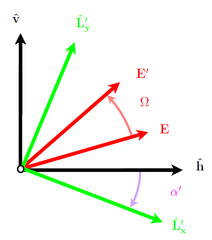

<!DOCTYPE html>

<html>
  <head>
    <meta charset="utf-8" />
    <meta name="viewport" content="width=device-width, initial-scale=1.0" /><meta name="generator" content="Docutils 0.17.1: http://docutils.sourceforge.net/" />

    <title>Baseline Algorithm Definition &#8212; ATBD L2 SSS</title>
    
  <!-- Loaded before other Sphinx assets -->
  <link href="_static/styles/theme.css?digest=1999514e3f237ded88cf" rel="stylesheet">
<link href="_static/styles/pydata-sphinx-theme.css?digest=1999514e3f237ded88cf" rel="stylesheet">

    
  <link rel="stylesheet"
    href="_static/vendor/fontawesome/5.13.0/css/all.min.css">
  <link rel="preload" as="font" type="font/woff2" crossorigin
    href="_static/vendor/fontawesome/5.13.0/webfonts/fa-solid-900.woff2">
  <link rel="preload" as="font" type="font/woff2" crossorigin
    href="_static/vendor/fontawesome/5.13.0/webfonts/fa-brands-400.woff2">

    <link rel="stylesheet" type="text/css" href="_static/pygments.css" />
    <link rel="stylesheet" href="_static/styles/sphinx-book-theme.css?digest=5115cc725059bd94278eecd172e13a965bf8f5a9" type="text/css" />
    <link rel="stylesheet" type="text/css" href="_static/togglebutton.css" />
    <link rel="stylesheet" type="text/css" href="_static/copybutton.css" />
    <link rel="stylesheet" type="text/css" href="_static/mystnb.css" />
    <link rel="stylesheet" type="text/css" href="_static/sphinx-thebe.css" />
    <link rel="stylesheet" type="text/css" href="_static/watermark.css" />
    <link rel="stylesheet" type="text/css" href="_static/styles.css" />
    <link rel="stylesheet" type="text/css" href="_static/design-style.b7bb847fb20b106c3d81b95245e65545.min.css" />
    
  <!-- Pre-loaded scripts that we'll load fully later -->
  <link rel="preload" as="script" href="_static/scripts/pydata-sphinx-theme.js?digest=1999514e3f237ded88cf">

    <script data-url_root="./" id="documentation_options" src="_static/documentation_options.js"></script>
    <script src="_static/jquery.js"></script>
    <script src="_static/underscore.js"></script>
    <script src="_static/doctools.js"></script>
    <script src="_static/clipboard.min.js"></script>
    <script src="_static/copybutton.js"></script>
    <script src="_static/scripts/sphinx-book-theme.js?digest=9c920249402e914e316237a7dbc6769907cce411"></script>
    <script>let toggleHintShow = 'Click to show';</script>
    <script>let toggleHintHide = 'Click to hide';</script>
    <script>let toggleOpenOnPrint = 'true';</script>
    <script src="_static/togglebutton.js"></script>
    <script>var togglebuttonSelector = '.toggle, .admonition.dropdown, .tag_hide_input div.cell_input, .tag_hide-input div.cell_input, .tag_hide_output div.cell_output, .tag_hide-output div.cell_output, .tag_hide_cell.cell, .tag_hide-cell.cell';</script>
    <script src="_static/design-tabs.js"></script>
    <script>const THEBE_JS_URL = "https://unpkg.com/thebe@0.8.2/lib/index.js"
const thebe_selector = ".thebe,.cell"
const thebe_selector_input = "pre"
const thebe_selector_output = ".output, .cell_output"
</script>
    <script async="async" src="_static/sphinx-thebe.js"></script>
    <script>window.MathJax = {"options": {"processHtmlClass": "tex2jax_process|mathjax_process|math|output_area"}}</script>
    <script defer="defer" src="https://cdn.jsdelivr.net/npm/mathjax@3/es5/tex-mml-chtml.js"></script>
    <link rel="index" title="Index" href="genindex.html" />
    <link rel="search" title="Search" href="search.html" />
    <link rel="next" title="Algorithm Input and Output Data Definition (IODD)" href="algorithm_input_output_data_definition.html" />
    <link rel="prev" title="Level-2 product definition" href="L2_product_definition.html" />
    <meta name="viewport" content="width=device-width, initial-scale=1" />
    <meta name="docsearch:language" content="None">
    

    <!-- Google Analytics -->
    
  </head>
  <body data-spy="scroll" data-target="#bd-toc-nav" data-offset="60">
<!-- Checkboxes to toggle the left sidebar -->
<input type="checkbox" class="sidebar-toggle" name="__navigation" id="__navigation" aria-label="Toggle navigation sidebar">
<label class="overlay overlay-navbar" for="__navigation">
    <div class="visually-hidden">Toggle navigation sidebar</div>
</label>
<!-- Checkboxes to toggle the in-page toc -->
<input type="checkbox" class="sidebar-toggle" name="__page-toc" id="__page-toc" aria-label="Toggle in-page Table of Contents">
<label class="overlay overlay-pagetoc" for="__page-toc">
    <div class="visually-hidden">Toggle in-page Table of Contents</div>
</label>
<!-- Headers at the top -->
<div class="announcement header-item noprint"></div>
<div class="header header-item noprint"></div>

    
    <div class="container-fluid" id="banner"></div>

    

    <div class="container-xl">
      <div class="row">
          
<!-- Sidebar -->
<div class="bd-sidebar noprint" id="site-navigation">
    <div class="bd-sidebar__content">
        <div class="bd-sidebar__top"><div class="navbar-brand-box">
    <a class="navbar-brand text-wrap" href="index.html">
      
        <!-- `logo` is deprecated in Sphinx 4.0, so remove this when we stop supporting 3 -->
        
      
      
      
      
      
      <h1 class="site-logo" id="site-title">ATBD L2 SSS</h1>
      
    </a>
</div><form class="bd-search d-flex align-items-center" action="search.html" method="get">
  <i class="icon fas fa-search"></i>
  <input type="search" class="form-control" name="q" id="search-input" placeholder="Search this book..." aria-label="Search this book..." autocomplete="off" >
</form><nav class="bd-links" id="bd-docs-nav" aria-label="Main">
    <div class="bd-toc-item active">
        
        <ul class="nav bd-sidenav bd-sidenav__home-link">
            <li class="toctree-l1">
                <a class="reference internal" href="intro.html">
                    CIMR L2 Sea Surface Salinity ATBD
                </a>
            </li>
        </ul>
        <ul class="current nav bd-sidenav">
 <li class="toctree-l1">
  <a class="reference internal" href="abstract.html">
   Abstract
  </a>
 </li>
 <li class="toctree-l1">
  <a class="reference internal" href="applicable_ref_docs.html">
   Applicable and Reference Documents
  </a>
 </li>
 <li class="toctree-l1">
  <a class="reference internal" href="acronyms.html">
   Acronyms
  </a>
 </li>
 <li class="toctree-l1">
  <a class="reference internal" href="definitions.html">
   Definitions
  </a>
 </li>
 <li class="toctree-l1">
  <a class="reference internal" href="introduction_purpose_scope.html">
   Introduction, purpose and scope
  </a>
 </li>
 <li class="toctree-l1">
  <a class="reference internal" href="background_justification_algorithm.html">
   Background and justification of selected algorithm
  </a>
 </li>
 <li class="toctree-l1">
  <a class="reference internal" href="L2_product_definition.html">
   Level-2 product definition
  </a>
 </li>
 <li class="toctree-l1 current active">
  <a class="current reference internal" href="#">
   Baseline Algorithm Definition
  </a>
 </li>
 <li class="toctree-l1">
  <a class="reference internal" href="algorithm_input_output_data_definition.html">
   Algorithm Input and Output Data Definition (IODD)
  </a>
 </li>
 <li class="toctree-l1">
  <a class="reference internal" href="algorithm_performance_assessment.html">
   Algorithm Performance Assessment (Version 2 ATBD)
  </a>
 </li>
 <li class="toctree-l1">
  <a class="reference internal" href="references.html">
   References
  </a>
 </li>
 <li class="toctree-l1">
  <a class="reference internal" href="appendix.html">
   Appendix
  </a>
 </li>
</ul>

    </div>
</nav></div>
        <div class="bd-sidebar__bottom">
             <!-- To handle the deprecated key -->
            
            <div class="navbar_extra_footer">
            Powered by <a href="https://jupyterbook.org">Jupyter Book</a>
            </div>
            
        </div>
    </div>
    <div id="rtd-footer-container"></div>
</div>


          


          
<!-- A tiny helper pixel to detect if we've scrolled -->
<div class="sbt-scroll-pixel-helper"></div>
<!-- Main content -->
<div class="col py-0 content-container">
    
    <div class="header-article row sticky-top noprint">
        


<div class="col py-1 d-flex header-article-main">
    <div class="header-article__left">
        
        <label for="__navigation"
  class="headerbtn"
  data-toggle="tooltip"
data-placement="right"
title="Toggle navigation"
>
  

<span class="headerbtn__icon-container">
  <i class="fas fa-bars"></i>
  </span>

</label>

        
    </div>
    <div class="header-article__right">
<button onclick="toggleFullScreen()"
  class="headerbtn"
  data-toggle="tooltip"
data-placement="bottom"
title="Fullscreen mode"
>
  

<span class="headerbtn__icon-container">
  <i class="fas fa-expand"></i>
  </span>

</button>
<a href="https://github.com/CIMR-Algos/L2SSS"
   class="headerbtn"
   data-toggle="tooltip"
data-placement="bottom"
title="Source repository"
>
  

<span class="headerbtn__icon-container">
  <i class="fab fa-github"></i>
  </span>

</a>

<div class="menu-dropdown menu-dropdown-download-buttons">
  <button class="headerbtn menu-dropdown__trigger"
      aria-label="Download this page">
      <i class="fas fa-download"></i>
  </button>
  <div class="menu-dropdown__content">
    <ul>
      <li>
        <a href="_sources/baseline_algorithm_definition.md"
   class="headerbtn"
   data-toggle="tooltip"
data-placement="left"
title="Download source file"
>
  

<span class="headerbtn__icon-container">
  <i class="fas fa-file"></i>
  </span>
<span class="headerbtn__text-container">.md</span>
</a>

      </li>
      
      <li>
        
<button onclick="printPdf(this)"
  class="headerbtn"
  data-toggle="tooltip"
data-placement="left"
title="Print to PDF"
>
  

<span class="headerbtn__icon-container">
  <i class="fas fa-file-pdf"></i>
  </span>
<span class="headerbtn__text-container">.pdf</span>
</button>

      </li>
      
    </ul>
  </div>
</div>
<label for="__page-toc"
  class="headerbtn headerbtn-page-toc"
  
>
  

<span class="headerbtn__icon-container">
  <i class="fas fa-list"></i>
  </span>

</label>

    </div>
</div>

<!-- Table of contents -->
<div class="col-md-3 bd-toc show noprint">
    <div class="tocsection onthispage pt-5 pb-3">
        <i class="fas fa-list"></i> Contents
    </div>
    <nav id="bd-toc-nav" aria-label="Page">
        <ul class="visible nav section-nav flex-column">
 <li class="toc-h2 nav-item toc-entry">
  <a class="reference internal nav-link" href="#sea-surface-salinity-retrieval-from-satellite-antenna-brightness-temperature-at-l-band">
   Sea Surface Salinity retrieval from Satellite Antenna brightness temperature at L-band
  </a>
 </li>
 <li class="toc-h2 nav-item toc-entry">
  <a class="reference internal nav-link" href="#level-2-end-to-end-algorithm-functional-flow-diagram">
   Level-2 end to end algorithm functional flow diagram
  </a>
  <ul class="nav section-nav flex-column">
   <li class="toc-h3 nav-item toc-entry">
    <a class="reference internal nav-link" href="#input-data">
     Input Data
    </a>
   </li>
   <li class="toc-h3 nav-item toc-entry">
    <a class="reference internal nav-link" href="#retrieval-algorithm">
     Retrieval algorithm
    </a>
   </li>
  </ul>
 </li>
 <li class="toc-h2 nav-item toc-entry">
  <a class="reference internal nav-link" href="#models-for-the-dielectric-constant-of-seawater-at-1-4-ghz">
   Models for the Dielectric Constant of seawater at 1.4 GHZ
  </a>
  <ul class="nav section-nav flex-column">
   <li class="toc-h3 nav-item toc-entry">
    <a class="reference internal nav-link" href="#mathematical-description">
     Mathematical Description
    </a>
   </li>
   <li class="toc-h3 nav-item toc-entry">
    <a class="reference internal nav-link" href="#functionnal-flow-diagram">
     Functionnal flow diagram
    </a>
   </li>
   <li class="toc-h3 nav-item toc-entry">
    <a class="reference internal nav-link" href="#assumption-and-limitations">
     Assumption and limitations
    </a>
   </li>
  </ul>
 </li>
 <li class="toc-h2 nav-item toc-entry">
  <a class="reference internal nav-link" href="#perfectly-flat-or-specular-sea-surface-emission">
   Perfectly flat or ‘specular’ sea surface emission
  </a>
  <ul class="nav section-nav flex-column">
   <li class="toc-h3 nav-item toc-entry">
    <a class="reference internal nav-link" href="#id27">
     Mathematical Description
    </a>
   </li>
   <li class="toc-h3 nav-item toc-entry">
    <a class="reference internal nav-link" href="#id29">
     Functionnal flow diagram
    </a>
   </li>
  </ul>
 </li>
 <li class="toc-h2 nav-item toc-entry">
  <a class="reference internal nav-link" href="#surface-roughness-induced-emission-model-at-l-band">
   Surface roughness-induced emission model at L-band
  </a>
  <ul class="nav section-nav flex-column">
   <li class="toc-h3 nav-item toc-entry">
    <a class="reference internal nav-link" href="#physics-of-the-problem">
     Physics of the problem
    </a>
   </li>
   <li class="toc-h3 nav-item toc-entry">
    <a class="reference internal nav-link" href="#two-scale-approach">
     Two-scale Approach
    </a>
    <ul class="nav section-nav flex-column">
     <li class="toc-h4 nav-item toc-entry">
      <a class="reference internal nav-link" href="#id34">
       Mathematical description
      </a>
     </li>
     <li class="toc-h4 nav-item toc-entry">
      <a class="reference internal nav-link" href="#corrections-of-local-surface-incidence-angle-due-to-large-scale-wave-slopes">
       Corrections of local surface incidence angle due to Large Scale wave Slopes
      </a>
     </li>
     <li class="toc-h4 nav-item toc-entry">
      <a class="reference internal nav-link" href="#ocean-wave-height-spectrum-model">
       Ocean Wave Height Spectrum Model
      </a>
     </li>
     <li class="toc-h4 nav-item toc-entry">
      <a class="reference internal nav-link" href="#small-scale-perturbation-model">
       Small-Scale Perturbation Model
      </a>
     </li>
     <li class="toc-h4 nav-item toc-entry">
      <a class="reference internal nav-link" href="#hdrodynamic-modulation-factor">
       Hdrodynamic modulation factor
      </a>
     </li>
    </ul>
   </li>
   <li class="toc-h3 nav-item toc-entry">
    <a class="reference internal nav-link" href="#two-scale-roughness-induced-emissivity-model-tuning-using-aquarius-and-smap-observations">
     Two scale Roughness-induced emissivity model tuning using Aquarius and SMAP observations
    </a>
   </li>
   <li class="toc-h3 nav-item toc-entry">
    <a class="reference internal nav-link" href="#id73">
     Functionnal flow diagram
    </a>
   </li>
  </ul>
 </li>
 <li class="toc-h2 nav-item toc-entry">
  <a class="reference internal nav-link" href="#sea-foam-emissivity-modelling-at-l-band">
   Sea Foam emissivity modelling at L-band
  </a>
  <ul class="nav section-nav flex-column">
   <li class="toc-h3 nav-item toc-entry">
    <a class="reference internal nav-link" href="#id75">
     Physics of the problem
    </a>
   </li>
   <li class="toc-h3 nav-item toc-entry">
    <a class="reference internal nav-link" href="#brightness-temperature-modeling-of-the-foam-water-system">
     Brightness temperature modeling of the foam-water system
    </a>
   </li>
   <li class="toc-h3 nav-item toc-entry">
    <a class="reference internal nav-link" href="#effective-permittivity-of-sea-foam-formations-at-l-band">
     Effective permittivity of sea Foam formations at L-band
    </a>
   </li>
   <li class="toc-h3 nav-item toc-entry">
    <a class="reference internal nav-link" href="#foam-coverage-model">
     Foam coverage model
    </a>
   </li>
  </ul>
 </li>
 <li class="toc-h2 nav-item toc-entry">
  <a class="reference internal nav-link" href="#atmospheric-contributions-at-l-band">
   Atmospheric contributions at L-band
  </a>
  <ul class="nav section-nav flex-column">
   <li class="toc-h3 nav-item toc-entry">
    <a class="reference internal nav-link" href="#id104">
     Physics of the problem
    </a>
    <ul class="nav section-nav flex-column">
     <li class="toc-h4 nav-item toc-entry">
      <a class="reference internal nav-link" href="#electromagnetic-wave-propagation-through-the-atmosphere">
       Electromagnetic Wave Propagation through the Atmosphere
      </a>
     </li>
     <li class="toc-h4 nav-item toc-entry">
      <a class="reference internal nav-link" href="#formulation-of-the-atmospheric-refractive-index">
       Formulation of the Atmospheric Refractive Index
      </a>
     </li>
     <li class="toc-h4 nav-item toc-entry">
      <a class="reference internal nav-link" href="#propagation-effects-on-the-stokes-vector">
       Propagation Effects on the Stokes Vector
      </a>
     </li>
     <li class="toc-h4 nav-item toc-entry">
      <a class="reference internal nav-link" href="#atmospheric-emission">
       Atmospheric Emission
      </a>
     </li>
     <li class="toc-h4 nav-item toc-entry">
      <a class="reference internal nav-link" href="#combining-attenuation-and-emission">
       Combining Attenuation and Emission
      </a>
     </li>
     <li class="toc-h4 nav-item toc-entry">
      <a class="reference internal nav-link" href="#relating-attenuation-to-emission">
       Relating Attenuation to Emission
      </a>
     </li>
     <li class="toc-h4 nav-item toc-entry">
      <a class="reference internal nav-link" href="#integration-of-the-radiative-transfer-equation">
       Integration of the Radiative Transfer Equation
      </a>
     </li>
    </ul>
   </li>
   <li class="toc-h3 nav-item toc-entry">
    <a class="reference internal nav-link" href="#approximate-atmospheric-emission-and-absorption">
     Approximate atmospheric emission and absorption
    </a>
   </li>
   <li class="toc-h3 nav-item toc-entry">
    <a class="reference internal nav-link" href="#id120">
     Functionnal flow diagram
    </a>
   </li>
  </ul>
 </li>
 <li class="toc-h2 nav-item toc-entry">
  <a class="reference internal nav-link" href="#sea-surface-scattered-solar-sunglint-contributions">
   Sea Surface Scattered Solar (Sunglint) contributions
  </a>
  <ul class="nav section-nav flex-column">
   <li class="toc-h3 nav-item toc-entry">
    <a class="reference internal nav-link" href="#general-formulation">
     General Formulation
    </a>
   </li>
   <li class="toc-h3 nav-item toc-entry">
    <a class="reference internal nav-link" href="#bistatic-scattering-cross-sections-of-the-rough-sea-surface">
     Bistatic scattering cross-sections of the  rough sea surface
    </a>
   </li>
   <li class="toc-h3 nav-item toc-entry">
    <a class="reference internal nav-link" href="#id134">
     Functionnal flow diagram
    </a>
   </li>
  </ul>
 </li>
 <li class="toc-h2 nav-item toc-entry">
  <a class="reference internal nav-link" href="#sea-surface-scattered-celestial-sky-radiation-contribution">
   Sea Surface scattered celestial sky radiation contribution
  </a>
  <ul class="nav section-nav flex-column">
   <li class="toc-h3 nav-item toc-entry">
    <a class="reference internal nav-link" href="#id135">
     Physics of the Problem
    </a>
   </li>
   <li class="toc-h3 nav-item toc-entry">
    <a class="reference internal nav-link" href="#expression-of-the-sky-glint-in-specular-sky-coordinates">
     Expression of the sky glint in specular sky coordinates
    </a>
   </li>
   <li class="toc-h3 nav-item toc-entry">
    <a class="reference internal nav-link" href="#bistatic-scattering-coefficients-in-the-go-approximation">
     Bistatic Scattering coefficients in the GO approximation
    </a>
   </li>
   <li class="toc-h3 nav-item toc-entry">
    <a class="reference internal nav-link" href="#id152">
     Functionnal flow diagram
    </a>
   </li>
  </ul>
 </li>
 <li class="toc-h2 nav-item toc-entry">
  <a class="reference internal nav-link" href="#accounting-for-rotation-of-the-polarization-plane-in-the-stokes-vector">
   Accounting for rotation of the polarization plane in the Stokes vector
  </a>
  <ul class="nav section-nav flex-column">
   <li class="toc-h3 nav-item toc-entry">
    <a class="reference internal nav-link" href="#from-surface-polarization-basis-to-ludwig-3-antenna-basis">
     From surface polarization basis to Ludwig-3 antenna basis
    </a>
   </li>
   <li class="toc-h3 nav-item toc-entry">
    <a class="reference internal nav-link" href="#faraday-rotation-angle">
     Faraday rotation angle
    </a>
   </li>
   <li class="toc-h3 nav-item toc-entry">
    <a class="reference internal nav-link" href="#total-rotation-from-surface-basis-to-antenna-basis">
     Total rotation from surface basis to antenna basis
    </a>
   </li>
  </ul>
 </li>
 <li class="toc-h2 nav-item toc-entry">
  <a class="reference internal nav-link" href="#sum-of-contributions-at-the-top-of-the-atmosphere-and-antenna-pattern-integration">
   Sum of contributions at the Top of the atmosphere and antenna pattern integration
  </a>
 </li>
 <li class="toc-h2 nav-item toc-entry">
  <a class="reference internal nav-link" href="#cimr-leve1b-re-sampling-approach">
   CIMR Leve1b re-sampling approach
  </a>
 </li>
 <li class="toc-h2 nav-item toc-entry">
  <a class="reference internal nav-link" href="#sea-surface-salinity-inversion-algorithm">
   Sea Surface Salinity inversion algorithm
  </a>
 </li>
 <li class="toc-h2 nav-item toc-entry">
  <a class="reference internal nav-link" href="#algorithm-assumptions-and-simplifications">
   Algorithm Assumptions and Simplifications
  </a>
 </li>
 <li class="toc-h2 nav-item toc-entry">
  <a class="reference internal nav-link" href="#functional-description-of-each-algorithm-step">
   Functional description of each Algorithm step
  </a>
  <ul class="nav section-nav flex-column">
   <li class="toc-h3 nav-item toc-entry">
    <a class="reference internal nav-link" href="#mathematical-description-roughness-induced-emissivity-model-and-lookup-table">
     Mathematical description Roughness Induced Emissivity Model and Lookup Table
    </a>
    <ul class="nav section-nav flex-column">
     <li class="toc-h4 nav-item toc-entry">
      <a class="reference internal nav-link" href="#id157">
       Mathematical description
      </a>
     </li>
    </ul>
   </li>
   <li class="toc-h3 nav-item toc-entry">
    <a class="reference internal nav-link" href="#roughness-induced-emissivity-model-and-lookup-table">
     Roughness Induced Emissivity Model and Lookup Table
    </a>
   </li>
   <li class="toc-h3 nav-item toc-entry">
    <a class="reference internal nav-link" href="#mathematical-description-scattering-galactic-sky-lookup-table">
     Mathematical description Scattering Galactic Sky Lookup Table
    </a>
    <ul class="nav section-nav flex-column">
     <li class="toc-h4 nav-item toc-entry">
      <a class="reference internal nav-link" href="#formulation">
       Formulation
      </a>
     </li>
    </ul>
   </li>
   <li class="toc-h3 nav-item toc-entry">
    <a class="reference internal nav-link" href="#id158">
     Input data
    </a>
   </li>
   <li class="toc-h3 nav-item toc-entry">
    <a class="reference internal nav-link" href="#output-data">
     Output data
    </a>
   </li>
   <li class="toc-h3 nav-item toc-entry">
    <a class="reference internal nav-link" href="#auxiliary-data">
     Auxiliary data
    </a>
   </li>
   <li class="toc-h3 nav-item toc-entry">
    <a class="reference internal nav-link" href="#ancillary-data">
     Ancillary data
    </a>
   </li>
   <li class="toc-h3 nav-item toc-entry">
    <a class="reference internal nav-link" href="#validation-process">
     Validation process
    </a>
   </li>
  </ul>
 </li>
</ul>

    </nav>
</div>
    </div>
    <div class="article row">
        <div class="col pl-md-3 pl-lg-5 content-container">
            <!-- Table of contents that is only displayed when printing the page -->
            <div id="jb-print-docs-body" class="onlyprint">
                <h1>Baseline Algorithm Definition</h1>
                <!-- Table of contents -->
                <div id="print-main-content">
                    <div id="jb-print-toc">
                        
                        <div>
                            <h2> Contents </h2>
                        </div>
                        <nav aria-label="Page">
                            <ul class="visible nav section-nav flex-column">
 <li class="toc-h2 nav-item toc-entry">
  <a class="reference internal nav-link" href="#sea-surface-salinity-retrieval-from-satellite-antenna-brightness-temperature-at-l-band">
   Sea Surface Salinity retrieval from Satellite Antenna brightness temperature at L-band
  </a>
 </li>
 <li class="toc-h2 nav-item toc-entry">
  <a class="reference internal nav-link" href="#level-2-end-to-end-algorithm-functional-flow-diagram">
   Level-2 end to end algorithm functional flow diagram
  </a>
  <ul class="nav section-nav flex-column">
   <li class="toc-h3 nav-item toc-entry">
    <a class="reference internal nav-link" href="#input-data">
     Input Data
    </a>
   </li>
   <li class="toc-h3 nav-item toc-entry">
    <a class="reference internal nav-link" href="#retrieval-algorithm">
     Retrieval algorithm
    </a>
   </li>
  </ul>
 </li>
 <li class="toc-h2 nav-item toc-entry">
  <a class="reference internal nav-link" href="#models-for-the-dielectric-constant-of-seawater-at-1-4-ghz">
   Models for the Dielectric Constant of seawater at 1.4 GHZ
  </a>
  <ul class="nav section-nav flex-column">
   <li class="toc-h3 nav-item toc-entry">
    <a class="reference internal nav-link" href="#mathematical-description">
     Mathematical Description
    </a>
   </li>
   <li class="toc-h3 nav-item toc-entry">
    <a class="reference internal nav-link" href="#functionnal-flow-diagram">
     Functionnal flow diagram
    </a>
   </li>
   <li class="toc-h3 nav-item toc-entry">
    <a class="reference internal nav-link" href="#assumption-and-limitations">
     Assumption and limitations
    </a>
   </li>
  </ul>
 </li>
 <li class="toc-h2 nav-item toc-entry">
  <a class="reference internal nav-link" href="#perfectly-flat-or-specular-sea-surface-emission">
   Perfectly flat or ‘specular’ sea surface emission
  </a>
  <ul class="nav section-nav flex-column">
   <li class="toc-h3 nav-item toc-entry">
    <a class="reference internal nav-link" href="#id27">
     Mathematical Description
    </a>
   </li>
   <li class="toc-h3 nav-item toc-entry">
    <a class="reference internal nav-link" href="#id29">
     Functionnal flow diagram
    </a>
   </li>
  </ul>
 </li>
 <li class="toc-h2 nav-item toc-entry">
  <a class="reference internal nav-link" href="#surface-roughness-induced-emission-model-at-l-band">
   Surface roughness-induced emission model at L-band
  </a>
  <ul class="nav section-nav flex-column">
   <li class="toc-h3 nav-item toc-entry">
    <a class="reference internal nav-link" href="#physics-of-the-problem">
     Physics of the problem
    </a>
   </li>
   <li class="toc-h3 nav-item toc-entry">
    <a class="reference internal nav-link" href="#two-scale-approach">
     Two-scale Approach
    </a>
    <ul class="nav section-nav flex-column">
     <li class="toc-h4 nav-item toc-entry">
      <a class="reference internal nav-link" href="#id34">
       Mathematical description
      </a>
     </li>
     <li class="toc-h4 nav-item toc-entry">
      <a class="reference internal nav-link" href="#corrections-of-local-surface-incidence-angle-due-to-large-scale-wave-slopes">
       Corrections of local surface incidence angle due to Large Scale wave Slopes
      </a>
     </li>
     <li class="toc-h4 nav-item toc-entry">
      <a class="reference internal nav-link" href="#ocean-wave-height-spectrum-model">
       Ocean Wave Height Spectrum Model
      </a>
     </li>
     <li class="toc-h4 nav-item toc-entry">
      <a class="reference internal nav-link" href="#small-scale-perturbation-model">
       Small-Scale Perturbation Model
      </a>
     </li>
     <li class="toc-h4 nav-item toc-entry">
      <a class="reference internal nav-link" href="#hdrodynamic-modulation-factor">
       Hdrodynamic modulation factor
      </a>
     </li>
    </ul>
   </li>
   <li class="toc-h3 nav-item toc-entry">
    <a class="reference internal nav-link" href="#two-scale-roughness-induced-emissivity-model-tuning-using-aquarius-and-smap-observations">
     Two scale Roughness-induced emissivity model tuning using Aquarius and SMAP observations
    </a>
   </li>
   <li class="toc-h3 nav-item toc-entry">
    <a class="reference internal nav-link" href="#id73">
     Functionnal flow diagram
    </a>
   </li>
  </ul>
 </li>
 <li class="toc-h2 nav-item toc-entry">
  <a class="reference internal nav-link" href="#sea-foam-emissivity-modelling-at-l-band">
   Sea Foam emissivity modelling at L-band
  </a>
  <ul class="nav section-nav flex-column">
   <li class="toc-h3 nav-item toc-entry">
    <a class="reference internal nav-link" href="#id75">
     Physics of the problem
    </a>
   </li>
   <li class="toc-h3 nav-item toc-entry">
    <a class="reference internal nav-link" href="#brightness-temperature-modeling-of-the-foam-water-system">
     Brightness temperature modeling of the foam-water system
    </a>
   </li>
   <li class="toc-h3 nav-item toc-entry">
    <a class="reference internal nav-link" href="#effective-permittivity-of-sea-foam-formations-at-l-band">
     Effective permittivity of sea Foam formations at L-band
    </a>
   </li>
   <li class="toc-h3 nav-item toc-entry">
    <a class="reference internal nav-link" href="#foam-coverage-model">
     Foam coverage model
    </a>
   </li>
  </ul>
 </li>
 <li class="toc-h2 nav-item toc-entry">
  <a class="reference internal nav-link" href="#atmospheric-contributions-at-l-band">
   Atmospheric contributions at L-band
  </a>
  <ul class="nav section-nav flex-column">
   <li class="toc-h3 nav-item toc-entry">
    <a class="reference internal nav-link" href="#id104">
     Physics of the problem
    </a>
    <ul class="nav section-nav flex-column">
     <li class="toc-h4 nav-item toc-entry">
      <a class="reference internal nav-link" href="#electromagnetic-wave-propagation-through-the-atmosphere">
       Electromagnetic Wave Propagation through the Atmosphere
      </a>
     </li>
     <li class="toc-h4 nav-item toc-entry">
      <a class="reference internal nav-link" href="#formulation-of-the-atmospheric-refractive-index">
       Formulation of the Atmospheric Refractive Index
      </a>
     </li>
     <li class="toc-h4 nav-item toc-entry">
      <a class="reference internal nav-link" href="#propagation-effects-on-the-stokes-vector">
       Propagation Effects on the Stokes Vector
      </a>
     </li>
     <li class="toc-h4 nav-item toc-entry">
      <a class="reference internal nav-link" href="#atmospheric-emission">
       Atmospheric Emission
      </a>
     </li>
     <li class="toc-h4 nav-item toc-entry">
      <a class="reference internal nav-link" href="#combining-attenuation-and-emission">
       Combining Attenuation and Emission
      </a>
     </li>
     <li class="toc-h4 nav-item toc-entry">
      <a class="reference internal nav-link" href="#relating-attenuation-to-emission">
       Relating Attenuation to Emission
      </a>
     </li>
     <li class="toc-h4 nav-item toc-entry">
      <a class="reference internal nav-link" href="#integration-of-the-radiative-transfer-equation">
       Integration of the Radiative Transfer Equation
      </a>
     </li>
    </ul>
   </li>
   <li class="toc-h3 nav-item toc-entry">
    <a class="reference internal nav-link" href="#approximate-atmospheric-emission-and-absorption">
     Approximate atmospheric emission and absorption
    </a>
   </li>
   <li class="toc-h3 nav-item toc-entry">
    <a class="reference internal nav-link" href="#id120">
     Functionnal flow diagram
    </a>
   </li>
  </ul>
 </li>
 <li class="toc-h2 nav-item toc-entry">
  <a class="reference internal nav-link" href="#sea-surface-scattered-solar-sunglint-contributions">
   Sea Surface Scattered Solar (Sunglint) contributions
  </a>
  <ul class="nav section-nav flex-column">
   <li class="toc-h3 nav-item toc-entry">
    <a class="reference internal nav-link" href="#general-formulation">
     General Formulation
    </a>
   </li>
   <li class="toc-h3 nav-item toc-entry">
    <a class="reference internal nav-link" href="#bistatic-scattering-cross-sections-of-the-rough-sea-surface">
     Bistatic scattering cross-sections of the  rough sea surface
    </a>
   </li>
   <li class="toc-h3 nav-item toc-entry">
    <a class="reference internal nav-link" href="#id134">
     Functionnal flow diagram
    </a>
   </li>
  </ul>
 </li>
 <li class="toc-h2 nav-item toc-entry">
  <a class="reference internal nav-link" href="#sea-surface-scattered-celestial-sky-radiation-contribution">
   Sea Surface scattered celestial sky radiation contribution
  </a>
  <ul class="nav section-nav flex-column">
   <li class="toc-h3 nav-item toc-entry">
    <a class="reference internal nav-link" href="#id135">
     Physics of the Problem
    </a>
   </li>
   <li class="toc-h3 nav-item toc-entry">
    <a class="reference internal nav-link" href="#expression-of-the-sky-glint-in-specular-sky-coordinates">
     Expression of the sky glint in specular sky coordinates
    </a>
   </li>
   <li class="toc-h3 nav-item toc-entry">
    <a class="reference internal nav-link" href="#bistatic-scattering-coefficients-in-the-go-approximation">
     Bistatic Scattering coefficients in the GO approximation
    </a>
   </li>
   <li class="toc-h3 nav-item toc-entry">
    <a class="reference internal nav-link" href="#id152">
     Functionnal flow diagram
    </a>
   </li>
  </ul>
 </li>
 <li class="toc-h2 nav-item toc-entry">
  <a class="reference internal nav-link" href="#accounting-for-rotation-of-the-polarization-plane-in-the-stokes-vector">
   Accounting for rotation of the polarization plane in the Stokes vector
  </a>
  <ul class="nav section-nav flex-column">
   <li class="toc-h3 nav-item toc-entry">
    <a class="reference internal nav-link" href="#from-surface-polarization-basis-to-ludwig-3-antenna-basis">
     From surface polarization basis to Ludwig-3 antenna basis
    </a>
   </li>
   <li class="toc-h3 nav-item toc-entry">
    <a class="reference internal nav-link" href="#faraday-rotation-angle">
     Faraday rotation angle
    </a>
   </li>
   <li class="toc-h3 nav-item toc-entry">
    <a class="reference internal nav-link" href="#total-rotation-from-surface-basis-to-antenna-basis">
     Total rotation from surface basis to antenna basis
    </a>
   </li>
  </ul>
 </li>
 <li class="toc-h2 nav-item toc-entry">
  <a class="reference internal nav-link" href="#sum-of-contributions-at-the-top-of-the-atmosphere-and-antenna-pattern-integration">
   Sum of contributions at the Top of the atmosphere and antenna pattern integration
  </a>
 </li>
 <li class="toc-h2 nav-item toc-entry">
  <a class="reference internal nav-link" href="#cimr-leve1b-re-sampling-approach">
   CIMR Leve1b re-sampling approach
  </a>
 </li>
 <li class="toc-h2 nav-item toc-entry">
  <a class="reference internal nav-link" href="#sea-surface-salinity-inversion-algorithm">
   Sea Surface Salinity inversion algorithm
  </a>
 </li>
 <li class="toc-h2 nav-item toc-entry">
  <a class="reference internal nav-link" href="#algorithm-assumptions-and-simplifications">
   Algorithm Assumptions and Simplifications
  </a>
 </li>
 <li class="toc-h2 nav-item toc-entry">
  <a class="reference internal nav-link" href="#functional-description-of-each-algorithm-step">
   Functional description of each Algorithm step
  </a>
  <ul class="nav section-nav flex-column">
   <li class="toc-h3 nav-item toc-entry">
    <a class="reference internal nav-link" href="#mathematical-description-roughness-induced-emissivity-model-and-lookup-table">
     Mathematical description Roughness Induced Emissivity Model and Lookup Table
    </a>
    <ul class="nav section-nav flex-column">
     <li class="toc-h4 nav-item toc-entry">
      <a class="reference internal nav-link" href="#id157">
       Mathematical description
      </a>
     </li>
    </ul>
   </li>
   <li class="toc-h3 nav-item toc-entry">
    <a class="reference internal nav-link" href="#roughness-induced-emissivity-model-and-lookup-table">
     Roughness Induced Emissivity Model and Lookup Table
    </a>
   </li>
   <li class="toc-h3 nav-item toc-entry">
    <a class="reference internal nav-link" href="#mathematical-description-scattering-galactic-sky-lookup-table">
     Mathematical description Scattering Galactic Sky Lookup Table
    </a>
    <ul class="nav section-nav flex-column">
     <li class="toc-h4 nav-item toc-entry">
      <a class="reference internal nav-link" href="#formulation">
       Formulation
      </a>
     </li>
    </ul>
   </li>
   <li class="toc-h3 nav-item toc-entry">
    <a class="reference internal nav-link" href="#id158">
     Input data
    </a>
   </li>
   <li class="toc-h3 nav-item toc-entry">
    <a class="reference internal nav-link" href="#output-data">
     Output data
    </a>
   </li>
   <li class="toc-h3 nav-item toc-entry">
    <a class="reference internal nav-link" href="#auxiliary-data">
     Auxiliary data
    </a>
   </li>
   <li class="toc-h3 nav-item toc-entry">
    <a class="reference internal nav-link" href="#ancillary-data">
     Ancillary data
    </a>
   </li>
   <li class="toc-h3 nav-item toc-entry">
    <a class="reference internal nav-link" href="#validation-process">
     Validation process
    </a>
   </li>
  </ul>
 </li>
</ul>

                        </nav>
                    </div>
                </div>
            </div>
            <main id="main-content" role="main">
                
              <div>
                
  <section class="tex2jax_ignore mathjax_ignore" id="baseline-algorithm-definition">
<h1>Baseline Algorithm Definition<a class="headerlink" href="#baseline-algorithm-definition" title="Permalink to this headline">#</a></h1>
<section id="sea-surface-salinity-retrieval-from-satellite-antenna-brightness-temperature-at-l-band">
<h2>Sea Surface Salinity retrieval from Satellite Antenna brightness temperature at L-band<a class="headerlink" href="#sea-surface-salinity-retrieval-from-satellite-antenna-brightness-temperature-at-l-band" title="Permalink to this headline">#</a></h2>
<p>The present algorithm aims at retrieving the surface salinity by finding the best-fit
solution to minimize the difference between the CIMR L-band Top of the Atmosphere brightness temperature Stokes vector data and a forward radiative transfer model.</p>
<figure class="align-default" id="figure8">

<figcaption>
<p><span class="caption-number">Fig. 3 </span><span class="caption-text">Major signals received by a Space borne L-band radiometer</span><a class="headerlink" href="#figure8" title="Permalink to this image">#</a></p>
</figcaption>
</figure>
<p>As illustrated in <a class="reference internal" href="#figure8"><span class="std std-numref">Fig. 3</span></a>, several geophysical parameters other than seawater salinity and temperature contribute significantly to L-band <span class="math notranslate nohighlight">\(T_{B}\)</span> measured by
satellite sensors at antenna level (e.g., see <span id="id1">Yueh <em>et al.</em> [<a class="reference internal" href="references.html#id141" title="Simon H Yueh, Richard West, William J Wilson, Fuk K Li, Eni G Njoku, and Yahya Rahmat-Samii. Error sources and feasibility for microwave remote sensing of ocean surface salinity. IEEE Transactions on Geoscience and Remote Sensing, 39(5):1049–1060, 2001.">2001</a>]</span>; <span id="id2">Font <em>et al.</em> [<a class="reference internal" href="references.html#id40" title="J. Font, G. S. E. Lagerloef, D. M. Le Vine, A. Camps, and O. -Z. Zanife. The determination of surface salinity with the European SMOS space mission. IEEE Trans. Geosci. Remote Sens., 42(10):2196–2205, Oct. 2004. doi:10.1109/TGRS.2004.834649.">2004</a>]</span>, <span id="id3">Reul <em>et al.</em> [<a class="reference internal" href="references.html#id103" title="N. Reul, S. A. Grodsky, M. Arias, J. Boutin, R. Catany, B. Chapron, F. D'Amico, E. Dinnat, C. Donlon, A. Fore, S. Fournier, S. Guimbard, A. Hasson, N. Kolodziejczyk, G. Lagerloef, T. Lee, D. M. Le Vine, E. Lindstrom, C. Maes, S. Mecklenburg, T. Meissner, E. Olmedo, R. Sabia, J. Tenerelli, C. Thouvenin-Masson, A. Turiel, J.-L. Vergely, N. Vinogradova, F. Wentz, and S. Yueh. Salinity estimates from Spaceborne L-band radiometers: an overview of the first decade of observation (2010-2019). Remote Sens. Environ., 242:111769, 2020. URL: https://doi.org/10.1016/j.rse.2020.111769, doi:10.1016/j.rse.2020.111769.">2020</a>]</span>).
To properly retrieve SSS, these contributions need to be accurately known and used in corrections of measured, or forward model simulations, of antenna <span class="math notranslate nohighlight">\(T_{B}\)</span>.
They include:</p>
<ul class="simple">
<li><p>the direct and sea surface reflected/scattered solar and sky emission (<span id="id4">Le Vine <em>et al.</em> [<a class="reference internal" href="references.html#id71" title="D. M. Le Vine, S. Abraham, F. Wentz, and G. S. E. Lagerloef. Impact of the Sun on remote sensing of sea surface salinity from space. In Proc. IEEE Int. Geoscience and Remote Sensing Symp. IGARSS '05, volume 1. 2005.">2005</a>]</span>; <span id="id5">Reul <em>et al.</em> [<a class="reference internal" href="references.html#id104" title="N. Reul, J. Tenerelli, B. Chapron, and P. Waldteufel. Modeling Sun Glitter at L-Band for Sea Surface Salinity Remote Sensing With SMOS. IEEE Trans. Geosci. Remote Sens., 45(7):2073–2087, July 2007. doi:10.1109/TGRS.2006.890421.">2007</a>]</span>; <span id="id6">Reul <em>et al.</em> [<a class="reference internal" href="references.html#id105" title="N. Reul, J. E. Tenerelli, N. Floury, and B. Chapron. Earth-viewing L-band radiometer sensing of sea surface scattered celestial sky radiation. Part II: application to SMOS. IEEE Trans. Geosci. Remote Sens., 46(3):675–688, March 2008. doi:10.1109/TGRS.2007.914804.">2008</a>]</span>; <span id="id7">Tenerelli <em>et al.</em> [<a class="reference internal" href="references.html#id125" title="Joseph E Tenerelli, Nicolas Reul, Alexis A Mouche, and Bertrand Chapron. Earth-viewing l-band radiometer sensing of sea surface scattered celestial sky radiation—part i: general characteristics. IEEE Transactions on Geoscience and Remote Sensing, 46(3):659–674, 2008.">2008</a>]</span>; <span id="id8">Dinnat and Le Vine [<a class="reference internal" href="references.html#id30" title="Emmanuel P Dinnat and David M Le Vine. Impact of sun glint on salinity remote sensing: an example with the aquarius radiometer. IEEE Transactions on Geoscience and Remote Sensing, 46(10):3137–3150, 2008.">2008</a>]</span>),</p></li>
<li><p>the Faraday rotation in the ionosphere (<span id="id9">Yueh [<a class="reference internal" href="references.html#id142" title="Simon H Yueh. Estimates of faraday rotation with passive microwave polarimetry for microwave remote sensing of earth surfaces. IEEE Transactions on Geoscience and Remote Sensing, 38(5):2434–2438, 2000.">2000</a>]</span>; <span id="id10">Le Vine and Abraham [<a class="reference internal" href="references.html#id73" title="David M Le Vine and Saji Abraham. The effect of the ionosphere on remote sensing of sea surface salinity from space: absorption and emission at l band. IEEE Transactions on Geoscience and Remote Sensing, 40(4):771–782, 2002.">2002</a>]</span>; <span id="id11">Vergely <em>et al.</em> [<a class="reference internal" href="references.html#id128" title="Jean-Luc Vergely, Philippe Waldteufel, Jacqueline Boutin, Xiaobin Yin, Paul Spurgeon, and Steven Delwart. New total electron content retrieval improves smos sea surface salinity. Journal of Geophysical Research: Oceans, 119(10):7295–7307, 2014.">2014</a>]</span>),</p></li>
<li><p>the impact of the atmosphere (<span id="id12">Liebe <em>et al.</em> [<a class="reference internal" href="references.html#id77" title="HJ Liebe, PW Rosenkranz, and GA Hufford. Atmospheric 60-ghz oxygen spectrum: new laboratory measurements and line parameters. Journal of quantitative spectroscopy and radiative transfer, 48(5-6):629–643, 1992.">1992</a>]</span>; <span id="id13">Skou and Hoffman-Bang [<a class="reference internal" href="references.html#id113" title="Niels Skou and Dorthe Hoffman-Bang. L-band radiometers measuring salinity from space: atmospheric propagation effects. IEEE transactions on geoscience and remote sensing, 43(10):2210–2217, 2005.">2005</a>]</span>; <span id="id14">Wentz and Meissner [<a class="reference internal" href="references.html#id131" title="Frank J Wentz and Thomas Meissner. Atmospheric absorption model for dry air and water vapor at microwave frequencies below 100ghz derived from spaceborne radiometer observations. Radio Science, 51(5):381–391, 2016.">2016</a>]</span>), and,</p></li>
<li><p>the effect of sea surface roughness on L-band emissivity (<span id="id15">Meissner <em>et al.</em> [<a class="reference internal" href="references.html#id88" title="Thomas Meissner, Frank J Wentz, and Lucrezia Ricciardulli. The emission and scattering of l-band microwave radiation from rough ocean surfaces and wind speed measurements from the aquarius sensor. Journal of Geophysical Research: Oceans, 119(9):6499–6522, 2014.">2014</a>]</span>;<span id="id16">Meissner <em>et al.</em> [<a class="reference internal" href="references.html#id89" title="Thomas Meissner, Frank J Wentz, and David M LeVine. The salinity retrieval algorithms for the nasa aquarius version 5 and smap version 3 releases. Remote Sensing, 10(7):1121, 2018.">2018</a>]</span>; <span id="id17">Yin <em>et al.</em> [<a class="reference internal" href="references.html#id138" title="Xiaobin Yin, Jacqueline Boutin, Emmanuel Dinnat, Qingtao Song, and Adrien Martin. Roughness and foam signature on smos-miras brightness temperatures: a semi-theoretical approach. Remote sensing of environment, 180:221–233, 2016.">2016</a>]</span>; <span id="id18">Yueh <em>et al.</em> [<a class="reference internal" href="references.html#id140" title="Simon H Yueh, Steve J Dinardo, Alexander G Fore, and Fuk K Li. Passive and active l-band microwave observations and modeling of ocean surface winds. IEEE transactions on geoscience and remote sensing, 48(8):3087–3100, 2010.">2010</a>]</span>; <span id="id19">Yueh <em>et al.</em> [<a class="reference internal" href="references.html#id139" title="Simon Yueh, Wenqing Tang, Alexander Fore, Akiko Hayashi, Yuhe T Song, and Gary Lagerloef. Aquarius geophysical model function and combined active passive algorithm for ocean surface salinity and wind retrieval. Journal of Geophysical Research: Oceans, 119(8):5360–5379, 2014.">2014</a>]</span>).</p></li>
<li><p>the effect of the portion of the energy received due to land or sea ice in the CIMR antenna pattern when the main lobe is over water but close to land-sea or ice-sea
transition (e.g., see <span id="id20">Reul <em>et al.</em> [<a class="reference internal" href="references.html#id103" title="N. Reul, S. A. Grodsky, M. Arias, J. Boutin, R. Catany, B. Chapron, F. D'Amico, E. Dinnat, C. Donlon, A. Fore, S. Fournier, S. Guimbard, A. Hasson, N. Kolodziejczyk, G. Lagerloef, T. Lee, D. M. Le Vine, E. Lindstrom, C. Maes, S. Mecklenburg, T. Meissner, E. Olmedo, R. Sabia, J. Tenerelli, C. Thouvenin-Masson, A. Turiel, J.-L. Vergely, N. Vinogradova, F. Wentz, and S. Yueh. Salinity estimates from Spaceborne L-band radiometers: an overview of the first decade of observation (2010-2019). Remote Sens. Environ., 242:111769, 2020. URL: https://doi.org/10.1016/j.rse.2020.111769, doi:10.1016/j.rse.2020.111769.">2020</a>]</span>,<span id="id21">Meissner and Manaster [<a class="reference internal" href="references.html#id85" title="Thomas Meissner and Andrew Manaster. Smap salinity retrievals near the sea-ice edge using multi-channel amsr2 brightness temperatures. Remote Sensing, 2021. URL: https://www.mdpi.com/2072-4292/13/24/5120, doi:10.3390/rs13245120.">2021</a>]</span>)</p></li>
</ul>
<p>The upwelling brightness temperatures above the atmosphere but below the ionosphere (before Faraday rotation) is referred hereafter to as the “Top of Atmosphere” brightness temperature and denoted <span class="math notranslate nohighlight">\(T_{tp}^{TOA}\)</span> (with superscript “TOA”) for upwelling signal in polarization <span class="math notranslate nohighlight">\(p\)</span>.
Considering all components of the scene brightness temperature at L-band, the complete model solution for <span class="math notranslate nohighlight">\(T_{tp}^{TOA}\)</span>, in the surface polarization basis, is:</p>
<div class="math notranslate nohighlight" id="equation-eq1">
<span class="eqno">(1)<a class="headerlink" href="#equation-eq1" title="Permalink to this equation">#</a></span>\[\begin{split}
\left(\begin{matrix}
T_{th}^{TOA} \\ 
T_{tv}^{TOA} \\
U^{TOA} \\
V^{TOA}
\end{matrix}\right)=
\left(\begin{matrix}
T_{atm}^{up}+(τ_d τ_v )[T_{surf,h}^{tot}+R_{surf,h}^{tot}\cdot T_{atm}^{dw}+T_{sch}+T_{ssh}] \\
T_{atm}^{up}+(τ_d τ_v )[T_{surf,v}^{tot}+R_{surf,v}^{tot}\cdot T_{atm}^{dw}+T_{scv}+T_{ssv}] \\
(τ_d τ_v ) T_{erU} \\
(τ_d τ_v ) T_{erV} \\
\end{matrix}\right)
\end{split}\]</div>
<p>where the only contribution to the third and fourth Stokes parameters in the surface polarization basis comes from the rough surface emission components, and in which:</p>
<table class="colwidths-auto table">
<thead>
<tr class="row-odd"><th class="text-align:center head"><p>Notation</p></th>
<th class="text-align:center head"><p>Definition</p></th>
</tr>
</thead>
<tbody>
<tr class="row-even"><td class="text-align:center"><p><span class="math notranslate nohighlight">\(T_{atm}^{up}\)</span></p></td>
<td class="text-align:center"><p>Unpolarized upwelling brightness temperature of atmospheric 1-way emission [K]</p></td>
</tr>
<tr class="row-odd"><td class="text-align:center"><p><span class="math notranslate nohighlight">\(τ_d\)</span></p></td>
<td class="text-align:center"><p>1-way atmospheric transmittance associated with molecular oxygen absorption [nd]</p></td>
</tr>
<tr class="row-even"><td class="text-align:center"><p><span class="math notranslate nohighlight">\(τ_v\)</span></p></td>
<td class="text-align:center"><p>1-way atmospheric transmittance associated with water vapor absorption [nd]</p></td>
</tr>
<tr class="row-odd"><td class="text-align:center"><p><span class="math notranslate nohighlight">\(T_{surf,p}^{tot}\)</span></p></td>
<td class="text-align:center"><p>p-pol brightness temperature of the total sea surface emission (specular+rough+foam) [K]</p></td>
</tr>
<tr class="row-even"><td class="text-align:center"><p><span class="math notranslate nohighlight">\(R_{surf,p}^{tot}\)</span></p></td>
<td class="text-align:center"><p>reflectivity of the total sea surface (specular+rough+foam) in p-pol</p></td>
</tr>
<tr class="row-odd"><td class="text-align:center"><p><span class="math notranslate nohighlight">\(T_{atm}^{dw}\)</span></p></td>
<td class="text-align:center"><p>Unpolarized downwelling brightness temperature of atmospheric 1-way emission [K]</p></td>
</tr>
<tr class="row-even"><td class="text-align:center"><p><span class="math notranslate nohighlight">\(T_{erU}\)</span></p></td>
<td class="text-align:center"><p>Third Stokes brightness temperature of rough surface emission (surface pol. Basis) [K]</p></td>
</tr>
<tr class="row-odd"><td class="text-align:center"><p><span class="math notranslate nohighlight">\(T_{erV}\)</span></p></td>
<td class="text-align:center"><p>Fourth Stokes brightness temperature of rough surface emission (surface pol. Basis) [K]</p></td>
</tr>
<tr class="row-even"><td class="text-align:center"><p><span class="math notranslate nohighlight">\(T_{scp}\)</span></p></td>
<td class="text-align:center"><p>p-pol brightness temperature of scattered celestial sky radiation (surface pol. Basis) [K]</p></td>
</tr>
<tr class="row-odd"><td class="text-align:center"><p><span class="math notranslate nohighlight">\(T_{ssp}\)</span></p></td>
<td class="text-align:center"><p>p-pol brightness temperature of scattered solar radiation (sunglint) (surface pol. Basis) [K]</p></td>
</tr>
</tbody>
</table>
<p>In our algorithm (see dedicated subsection <a class="reference external" href="#atmospheric-contributions-at-l-band">Atmospheric contributions at L-band</a>), the upwelling and downwelling atmospheric emission
are assumed to  be equal :</p>
<div class="math notranslate nohighlight" id="equation-eq2">
<span class="eqno">(2)<a class="headerlink" href="#equation-eq2" title="Permalink to this equation">#</a></span>\[T_{atm}^{up}=T_{atm}^{dw}=T_{ea}\tag{2}\]</div>
<p>where <span class="math notranslate nohighlight">\(T_{ea}\)</span> is the unpolarized brightness temperature of vertically integrated atmospheric 1-way emission.
In addition, the brightness temperature of the total sea surface emission, <span class="math notranslate nohighlight">\(T_{surf,p}^{tot}\)</span> can be decomposed as follows:</p>
<div class="math notranslate nohighlight" id="equation-eq3">
<span class="eqno">(3)<a class="headerlink" href="#equation-eq3" title="Permalink to this equation">#</a></span>\[T_{surf,p}^{tot}=T_s\cdot e_{surf,p}^{tot}=T_s\cdot\left[(1-F_f)\cdot(e_{sp}+e_{rp})\right]+T_{foam,p}=(1-F_f)\cdot(T_{esp}+T_{erp})+T_{foam,p}\]</div>
<p>in which:</p>
<table class="colwidths-auto table">
<thead>
<tr class="row-odd"><th class="text-align:center head"><p>Notation</p></th>
<th class="text-align:center head"><p>Definition</p></th>
</tr>
</thead>
<tbody>
<tr class="row-even"><td class="text-align:center"><p><span class="math notranslate nohighlight">\(T_s\)</span></p></td>
<td class="text-align:center"><p>Sea Surface Temperature [K]</p></td>
</tr>
<tr class="row-odd"><td class="text-align:center"><p><span class="math notranslate nohighlight">\(e_{surf,p}^{tot}\)</span></p></td>
<td class="text-align:center"><p>p (h or v)-pol total sea surface emission (specular+rough+foam) [K]</p></td>
</tr>
<tr class="row-even"><td class="text-align:center"><p><span class="math notranslate nohighlight">\(F_f\)</span></p></td>
<td class="text-align:center"><p>Fractionnal area of sea surface covered by foam [nd]</p></td>
</tr>
<tr class="row-odd"><td class="text-align:center"><p><span class="math notranslate nohighlight">\(T_{esp}\)</span></p></td>
<td class="text-align:center"><p>p-pol brightness temperature of specular emission (surface pol. Basis) [K]</p></td>
</tr>
<tr class="row-even"><td class="text-align:center"><p><span class="math notranslate nohighlight">\(T_{erp}\)</span></p></td>
<td class="text-align:center"><p>p-pol brightness temperature of rough surface emission (surface pol. Basis) [K]</p></td>
</tr>
<tr class="row-odd"><td class="text-align:center"><p><span class="math notranslate nohighlight">\(T_{foam,p}\)</span></p></td>
<td class="text-align:center"><p>p-pol brightness temperature of the total foam-covered surface emission (surface pol. Basis) [K]</p></td>
</tr>
</tbody>
</table>
<p>and where we split the total sea surface brightness temperature <span class="math notranslate nohighlight">\(T_{surf,p}^{tot}\)</span> into three components:</p>
<ul class="simple">
<li><p>the brightness temperature from the non-foamy perfectly flat sea surface <span class="math notranslate nohighlight">\((T_{esp})\)</span>,</p></li>
<li><p>the brightness temperature change induced by the non-foamy rough sea surface <span class="math notranslate nohighlight">\((T_{erp})\)</span>, and,</p></li>
<li><p>the brightness temperature contrast induced by the totally foam-covered sea surface <span class="math notranslate nohighlight">\((T_{foam,p})\)</span>.</p></li>
</ul>
<p>Note that the total surface reflectivity is related to the total surface emissivity by <span class="math notranslate nohighlight">\(R_{surf,p}^{tot}=1-e_{surf,p}^{tot}\)</span>.</p>
<p>Considering all components of the scene brightness temperature at L-band, the complete model solution for the upwelling brightness temperatures above the atmosphere but below the ionosphere (before Faraday rotation) in the surface polarization basis, is, therefore in H-polarization:</p>
<div class="math notranslate nohighlight" id="equation-eq4">
<span class="eqno">(4)<a class="headerlink" href="#equation-eq4" title="Permalink to this equation">#</a></span>\[T_{th}^{TOA}=T_{ea}+(τ_d τ_v )[(1-F_f)\cdot(T_{esh}+T_{erh})+T_{foam,h}+R_{surf,h}^{tot}\cdot T_{ea}+T_{sch}+T_{ssh}]\]</div>
<p>and in V-polarization:</p>
<div class="math notranslate nohighlight" id="equation-eq5">
<span class="eqno">(5)<a class="headerlink" href="#equation-eq5" title="Permalink to this equation">#</a></span>\[T_{tv}^{TOA}=T_{ea}+(τ_d τ_v )[(1-F_f)\cdot(T_{esv}+T_{erv})+T_{foam,v}+R_{surf,v}^{tot}\cdot T_{ea}+T_{scv}+T_{ssv}]\]</div>
<p>in which:</p>
<table class="colwidths-auto table">
<thead>
<tr class="row-odd"><th class="text-align:center head"><p>Notation</p></th>
<th class="text-align:center head"><p>Definition</p></th>
</tr>
</thead>
<tbody>
<tr class="row-even"><td class="text-align:center"><p><span class="math notranslate nohighlight">\(T_{esh}\)</span></p></td>
<td class="text-align:center"><p>H-pol brightness temperature of specular emission (surface pol. Basis) [K]</p></td>
</tr>
<tr class="row-odd"><td class="text-align:center"><p><span class="math notranslate nohighlight">\(T_{erh}\)</span></p></td>
<td class="text-align:center"><p>H-pol brightness temperature of rough surface emission (surface pol. Basis) [K]</p></td>
</tr>
<tr class="row-even"><td class="text-align:center"><p><span class="math notranslate nohighlight">\(T_{sch}\)</span></p></td>
<td class="text-align:center"><p>H-pol brightness temperature of scattered celestial sky radiation (surface pol. Basis) [K]</p></td>
</tr>
<tr class="row-odd"><td class="text-align:center"><p><span class="math notranslate nohighlight">\(T_{ssh}\)</span></p></td>
<td class="text-align:center"><p>H-pol brightness temperature of scattered solar radiation (sunglint) (surface pol. Basis) [K]</p></td>
</tr>
<tr class="row-even"><td class="text-align:center"><p><span class="math notranslate nohighlight">\(T_{esv}\)</span></p></td>
<td class="text-align:center"><p>V-pol brightness temperature of specular emission (surface pol. Basis) [K]</p></td>
</tr>
<tr class="row-odd"><td class="text-align:center"><p><span class="math notranslate nohighlight">\(T_{erv}\)</span></p></td>
<td class="text-align:center"><p>V-pol brightness temperature of rough surface emission (surface pol. Basis) [K]</p></td>
</tr>
<tr class="row-even"><td class="text-align:center"><p><span class="math notranslate nohighlight">\(T_{scv}\)</span></p></td>
<td class="text-align:center"><p>V-pol brightness temperature of scattered celestial sky radiation (surface pol. Basis) [K]</p></td>
</tr>
<tr class="row-odd"><td class="text-align:center"><p><span class="math notranslate nohighlight">\(T_{ssv}\)</span></p></td>
<td class="text-align:center"><p>V-pol brightness temperature of scattered solar radiation (sunglint) (surface pol. Basis) [K]</p></td>
</tr>
<tr class="row-even"><td class="text-align:center"><p><span class="math notranslate nohighlight">\(T_{ea}\)</span></p></td>
<td class="text-align:center"><p>Unpolarized brightness temperature of atmospheric 1-way emission [K]</p></td>
</tr>
<tr class="row-odd"><td class="text-align:center"><p><span class="math notranslate nohighlight">\(R_h\)</span></p></td>
<td class="text-align:center"><p>Fresnel power reflection coefficient at the surface in H-pol</p></td>
</tr>
<tr class="row-even"><td class="text-align:center"><p><span class="math notranslate nohighlight">\(R_v\)</span></p></td>
<td class="text-align:center"><p>Fresnel power reflection coefficient at the surface in V-pol</p></td>
</tr>
<tr class="row-odd"><td class="text-align:center"><p><span class="math notranslate nohighlight">\(e_{sh}\)</span></p></td>
<td class="text-align:center"><p>Perfectly flat sea surface emissivity in H-pol</p></td>
</tr>
<tr class="row-even"><td class="text-align:center"><p><span class="math notranslate nohighlight">\(e_{sv}\)</span></p></td>
<td class="text-align:center"><p>Perfectly flat sea surface emissivity in V-pol</p></td>
</tr>
<tr class="row-odd"><td class="text-align:center"><p><span class="math notranslate nohighlight">\(e_{rh}\)</span></p></td>
<td class="text-align:center"><p>Rough surface emissivity in H-pol</p></td>
</tr>
<tr class="row-even"><td class="text-align:center"><p><span class="math notranslate nohighlight">\(e_{rv}\)</span></p></td>
<td class="text-align:center"><p>Rough surface emissivity in V-pol</p></td>
</tr>
<tr class="row-odd"><td class="text-align:center"><p><span class="math notranslate nohighlight">\(T_{erU}\)</span></p></td>
<td class="text-align:center"><p>Third Stokes brightness temperature of rough surface emission (surface pol. Basis) [K]</p></td>
</tr>
<tr class="row-even"><td class="text-align:center"><p><span class="math notranslate nohighlight">\(T_{erV}\)</span></p></td>
<td class="text-align:center"><p>Fourth Stokes brightness temperature of rough surface emission (surface pol. Basis) [K]</p></td>
</tr>
<tr class="row-odd"><td class="text-align:center"><p><span class="math notranslate nohighlight">\(F_f\)</span></p></td>
<td class="text-align:center"><p>Fractionnal area of sea surface covered by foam [nd]</p></td>
</tr>
<tr class="row-even"><td class="text-align:center"><p><span class="math notranslate nohighlight">\(T_s\)</span></p></td>
<td class="text-align:center"><p>Sea Surface Temperature [K]</p></td>
</tr>
<tr class="row-odd"><td class="text-align:center"><p><span class="math notranslate nohighlight">\(U_{10}\)</span></p></td>
<td class="text-align:center"><p>10-m height Sea surface wind speed modulus [m/s]</p></td>
</tr>
</tbody>
</table>
</section>
<section id="level-2-end-to-end-algorithm-functional-flow-diagram">
<h2>Level-2 end to end algorithm functional flow diagram<a class="headerlink" href="#level-2-end-to-end-algorithm-functional-flow-diagram" title="Permalink to this headline">#</a></h2>
<section id="input-data">
<h3>Input Data<a class="headerlink" href="#input-data" title="Permalink to this headline">#</a></h3>
<figure class="align-default" id="sketchl1btol1c">

<figcaption>
<p><span class="caption-number">Fig. 4 </span><span class="caption-text">Level-1B to Level-1C L-band <span class="math notranslate nohighlight">\(T_B\)</span> algorithm functional flow diagram.</span><a class="headerlink" href="#sketchl1btol1c" title="Permalink to this image">#</a></p>
</figcaption>
</figure>
<p>The inputs to the L2B SSS algorithm are the Level 1C <span class="math notranslate nohighlight">\(T_B\)</span> at L-band in H-, V-, 3rd, and, 4th Stokes for the fore and aft views.
As summarized in <a class="reference internal" href="#sketchl1btol1c"><span class="std std-numref">Fig. 4</span></a>, we assume here that the <span class="math notranslate nohighlight">\(T_Bs\)</span> data are corrected for antenna spill-over and emissivity, sky and sun direct and earth reflected/scattered radiation,
Faraday rotation across the ionosphere, and that they are provided with a proper rotation of the Stokes parameter from the antenna polarization basis to the surface polarization basis
(L1B processor).  In fine, we will use as input the Leve1b data after proper resampling (so-called Level1c).</p>
<p>It is understood that the corrections for (1) the sky and sun direct and earth reflected/scattered radiation, (2) the model for the
rotation of the Stokes parameter due to Faraday rotation across the ionosphere and polarisation basis changes,
as well as (3) the L1B resampling approach all shall be applied through the Level 1 algorithms and not in
the present L2B SSS algorithm. Nevertheless,
we will present hereafter how these contributions can be potentially modelled.</p>
<p>In addition, it is not clear at which level (1) or (2) the land- and ice-ocean transitions effects shall be corrected for on the <span class="math notranslate nohighlight">\(T_b\)</span>s
(so called land sea contammination). Given that these effects require antenna-pattern -related information, it shall better be applied in the Level 1 algorithms.
We shall propose in version 2 of this ATBD some post-launch approaches to derive such corrections.</p>
<p>Another input data are the CIMR L2B SST and Wind products, properly resampled on the L-band acquisitions.</p>
</section>
<section id="retrieval-algorithm">
<h3>Retrieval algorithm<a class="headerlink" href="#retrieval-algorithm" title="Permalink to this headline">#</a></h3>
<figure class="align-default" id="sketch1">

<figcaption>
<p><span class="caption-number">Fig. 5 </span><span class="caption-text">Level-2 SSS end to end algorithm functional flow diagram. Here <span class="math notranslate nohighlight">\(SST^p\)</span>, <span class="math notranslate nohighlight">\(SSS^p\)</span>, <span class="math notranslate nohighlight">\(U_{10}^p\)</span>, and <span class="math notranslate nohighlight">\(\Phi_w^p\)</span> are <em>a priori values</em> for the SST, SSS, 10 meter height surface wind speed and direction, respectively.</span><a class="headerlink" href="#sketch1" title="Permalink to this image">#</a></p>
</figcaption>
</figure>
<p>The principle of the proposed SSS retrieval algorithms rely on a forward radiative transfer modelling of the top of the atmosphere brightness <span class="math notranslate nohighlight">\(T_{tp}^{TOA}\)</span> from first
guess geophysical values (SSS, SST, <span class="math notranslate nohighlight">\(U_{10}\)</span>, etc…),and, the retrieval of the geophysical parameters (SSS, SWS, ..) from a minimization of the differences between the
observed and modelled  <span class="math notranslate nohighlight">\(T_{tp}^{TOA}\)</span>. The Level-2 end to end algorithm functional flow diagram is shown in <a class="reference internal" href="#sketch1"><span class="std std-numref">Fig. 5</span></a>.
The radiative transfer forward model which is needed is based on the following components:</p>
<ul class="simple">
<li><p>a sea-water dielectric constant model at 1.4 GHz,</p></li>
<li><p>a perfectly flat, or specular, sea surface emission model,</p></li>
<li><p>a surface roughness and foam-induced correction model,</p></li>
<li><p>a Radiative Transfer Model for Atmospheric corrections,</p></li>
<li><p>a scattering model to correct for sea surface scattered Solar and celestial radiation, and,</p></li>
<li><p>a correction for geometric rotation from surface polarization basis to antenna polarization basis,</p></li>
<li><p>and, to model the <span class="math notranslate nohighlight">\(T_B\)</span> at antenna level, a model to correct for Faraday rotation in the ionosphere.</p></li>
</ul>
<p>We review these forward model components and corrections in the following subsections.</p>
</section>
</section>
<section id="models-for-the-dielectric-constant-of-seawater-at-1-4-ghz">
<h2>Models for the Dielectric Constant of seawater at 1.4 GHZ<a class="headerlink" href="#models-for-the-dielectric-constant-of-seawater-at-1-4-ghz" title="Permalink to this headline">#</a></h2>
<section id="mathematical-description">
<h3>Mathematical Description<a class="headerlink" href="#mathematical-description" title="Permalink to this headline">#</a></h3>
<p>The <span id="id22">Zhou <em>et al.</em> [<a class="reference internal" href="references.html#id149" title="Yiwen Zhou, Roger H Lang, Emmanuel P Dinnat, and David M Le Vine. Seawater debye model function at l-band and its impact on salinity retrieval from aquarius satellite data. IEEE Transactions on Geoscience and Remote Sensing, 59(10):8103–8116, 2021.">2021</a>]</span>’s Debye model for the seawater dielectric
constant is used in the present algorithm, will be refered to as “GW2020”, and can be expressed by:</p>
<div class="math notranslate nohighlight" id="equation-eq6">
<span class="eqno">(6)<a class="headerlink" href="#equation-eq6" title="Permalink to this equation">#</a></span>\[ε_{sw}(f, S, T)=\displaystyle ε_{\infty}+\frac{(ε_{s-dw}(T)R_{sw-dw}(S,T)-ε_{\infty})}{1+i \omega \tau(T)}-i\frac{\sigma(f,S,T)}{\omega ε_0}\]</div>
<p>where <span class="math notranslate nohighlight">\(f\)</span> is the electromagnetic frequency ([Hz]), <span class="math notranslate nohighlight">\(T\)</span> and <span class="math notranslate nohighlight">\(S\)</span> are the temperature ([degree celsius]) and salinity ([pss]) of seawater, respectively; <span class="math notranslate nohighlight">\(ε_0\)</span> is the dielectric
constant of free space; <span class="math notranslate nohighlight">\(ε_{s-dw}(T)\)</span> is the static dielectric
constant of distilled water, given by:</p>
<div class="math notranslate nohighlight" id="equation-eq7">
<span class="eqno">(7)<a class="headerlink" href="#equation-eq7" title="Permalink to this equation">#</a></span>\[ε_{s-dw}(T)=88.0516-4.01796\times10^{-1}\cdot T-5.1027\times10^{-5}\cdot T^2+2.55892\times10^{-5}\cdot T^3\]</div>
<p>and <span class="math notranslate nohighlight">\(\tau(T)\)</span>  is the relaxation time of distilled water:</p>
<div class="math notranslate nohighlight" id="equation-eq8">
<span class="eqno">(8)<a class="headerlink" href="#equation-eq8" title="Permalink to this equation">#</a></span>\[\tau(T)=1.75030\times10^{-11}-6.12993\times10^{-13}\cdot T +1.24504\times10^{-14}\cdot T^2-1.14927\times10^{-16}\cdot T^3\]</div>
<p><span class="math notranslate nohighlight">\(R_{sw-dw}(S,T)\)</span> is an additional factor in the static dielectric constant of seawater due to the presence of ions, given by:</p>
<div class="math notranslate nohighlight" id="equation-eq9">
<span class="eqno">(9)<a class="headerlink" href="#equation-eq9" title="Permalink to this equation">#</a></span>\[
R_{sw-dw}(S,T)=\displaystyle 1-S\cdot ( 3.97185\times10^{-3}-2.49205\times10^{-5}\cdot T-4.27558\times10^{-5}\cdot S +3.92825\times10^{-7}\cdot S\cdot T+4.15350\times10^{-7}\cdot S^2)
\]</div>
<p>Note that <span class="math notranslate nohighlight">\(\sigma(f,S,T)\)</span> needs to be nulled at <span class="math notranslate nohighlight">\(S=0\)</span> since the conductivity of distilled water is close to 0. The expression of
<span class="math notranslate nohighlight">\(\sigma(f,S,T)\)</span> given in <span id="id23">Zhou <em>et al.</em> [<a class="reference internal" href="references.html#id149" title="Yiwen Zhou, Roger H Lang, Emmanuel P Dinnat, and David M Le Vine. Seawater debye model function at l-band and its impact on salinity retrieval from aquarius satellite data. IEEE Transactions on Geoscience and Remote Sensing, 59(10):8103–8116, 2021.">2021</a>]</span> is:</p>
<div class="math notranslate nohighlight" id="equation-eq10">
<span class="eqno">(10)<a class="headerlink" href="#equation-eq10" title="Permalink to this equation">#</a></span>\[\sigma(f,S,T)=\sigma(f,S,0)\cdot R_{\sigma}(f,S,T)\]</div>
<p>where for f=1.4 GHz,</p>
<div class="math notranslate nohighlight" id="equation-eq11">
<span class="eqno">(11)<a class="headerlink" href="#equation-eq11" title="Permalink to this equation">#</a></span>\[\sigma(f,S,0)=9.50470\times10^{-2}\cdot S -4.30858\times10^{-4}\cdot S^2+2.16182\times10^{-6}\cdot S^3\]</div>
<p>and</p>
<div class="math notranslate nohighlight" id="equation-eq12">
<span class="eqno">(12)<a class="headerlink" href="#equation-eq12" title="Permalink to this equation">#</a></span>\[R_{\sigma}(f,S,T)=1+T\cdot(3.76017\times10^{-2} + 6.32830\times10^{-5}\cdot T +4.83420\times10^{-7}\cdot T^2 − 3.97484\times10^{-4}\cdot·S+6.26522\times10^{-6}\cdot S^2)\]</div>
</section>
<section id="functionnal-flow-diagram">
<h3>Functionnal flow diagram<a class="headerlink" href="#functionnal-flow-diagram" title="Permalink to this headline">#</a></h3>
<figure class="align-default" id="ffd-dielec">

<figcaption>
<p><span class="caption-number">Fig. 6 </span><span class="caption-text">Dielectric Constant model Flow Diagram. Input data are Temperature <span class="math notranslate nohighlight">\(T\)</span> [°C], salinity <span class="math notranslate nohighlight">\(S\)</span> [pss], and, radiometer
electromagnetic frequency <span class="math notranslate nohighlight">\(f\)</span> [Hz]. Output are the real and imaginary parts of <span class="math notranslate nohighlight">\(ε_{sw}(f, S, T)\)</span>.</span><a class="headerlink" href="#ffd-dielec" title="Permalink to this image">#</a></p>
</figcaption>
</figure>
</section>
<section id="assumption-and-limitations">
<h3>Assumption and limitations<a class="headerlink" href="#assumption-and-limitations" title="Permalink to this headline">#</a></h3>
<p>The search for a model for the dielectric constant of sea water at 1.4 GHz accurate enough to promote improvements
in the retrieval of is not yet complete. There are at least two challenges. One is that making measurements that are
consistent with an accuracy of the salinity product of better than 0.2 pss is very hard. At CIMR OZA of 53° and
for an SST of 25°C, an accuracy of 0.2 pss corresponds to radiometric accuracy of ~0.16 K for a measurement at 1.4 GHz (see <a class="reference internal" href="#t0esv-gsw2020-lband"><span class="std std-numref">Fig. 8</span></a>).
Assuming equal error, <span class="math notranslate nohighlight">\(\Delta\)</span>, in the real and imaginary parts of the
dielectric constant, an accuracy of about <span class="math notranslate nohighlight">\(\Delta\)</span>=0.25% in the
measurement of the dielectric constant is required (at 35 psu
and 25°C) to have an error of less than 0.1 K in <span class="math notranslate nohighlight">\(T_B\)</span>. The
current measurement accuracy of the GW2020 measurements at this
temperature and salinity is about 0.35% (<span id="id24">Lang <em>et al.</em> [<a class="reference internal" href="references.html#id67" title="Roger Lang, Yiwen Zhou, Cuneyt Utku, and David Le Vine. Accurate measurements of the dielectric constant of seawater at l band. Radio Science, 51(1):2–24, 2016.">2016</a>]</span>). So, there is yet a
need for improvement, and if the goal is eventually to achieve
0.1 psu, even more progress is needed.</p>
<p>In the meantime, a problem with many available dielectric constant models is the use
of the models outside of their range of validity. There are no
physical restrictions, which prevent using any of these models
at any frequency, salinity, or temperature, but all the models
discussed here are based on measurements of a finite range in
<em>S</em> and <em>T</em> and use mathematical functions (usually polynomials)
to fit the unknown parameters to the data in this range. The
fits are unconstrained outside of the range of the data. This
is evident in the case of the KS model. As found by <span id="id25">Le Vine <em>et al.</em> [<a class="reference internal" href="references.html#id75" title="David M. Le Vine, Roger H. Lang, Yiwen Zhou, Emmanuel P. Dinnat, and Thomas Meissner. Status of the dielectric constant of sea water at l-band for remote sensing of salinity. IEEE Transactions on Geoscience and Remote Sensing, 60():1-14, 2022. doi:10.1109/TGRS.2022.3207944.">2022</a>]</span>, the real part of some models
diverges strongly from the measurements for high (<span class="math notranslate nohighlight">\(T\)</span> &gt; 30°C) and low temperatures
(<span class="math notranslate nohighlight">\(T\)</span> &lt;5°C).</p>
</section>
</section>
<section id="perfectly-flat-or-specular-sea-surface-emission">
<h2>Perfectly flat or ‘specular’ sea surface emission<a class="headerlink" href="#perfectly-flat-or-specular-sea-surface-emission" title="Permalink to this headline">#</a></h2>
<figure class="align-default" id="flat-sea-rad">

<figcaption>
<p><span class="caption-number">Fig. 7 </span><span class="caption-text">Front view of the PALS radiometer instrument measuring the brightness temperature emitted by a perfectly flat surface of a saltwater pond. L-band radiometric measurements were made over
a salinity range between 25 and 40 pss and a temperature range of 8.5°C to 32°C (from <span id="id26">Wilson <em>et al.</em> [<a class="reference internal" href="references.html#id134" title="W. J. Wilson, S. H. Yueh, S. J. Dinardo, and F. K. Li. High-stability L-band radiometer measurements of saltwater. IEEE Trans. Geosci. Remote Sens., 42(9):1829-1835, 2004. doi:10.1109/TGRS.2004.833393.">2004</a>]</span>).</span><a class="headerlink" href="#flat-sea-rad" title="Permalink to this image">#</a></p>
</figcaption>
</figure>
<section id="id27">
<h3>Mathematical Description<a class="headerlink" href="#id27" title="Permalink to this headline">#</a></h3>
<p>The dependence of the microwave brigthness temperature emitted by the sea surface <span class="math notranslate nohighlight">\(T_{B}\)</span> on SSS is contained in the emissivity, <span class="math notranslate nohighlight">\(e\)</span>: <span class="math notranslate nohighlight">\(T_{B} = T \times e\)</span>,
where <span class="math notranslate nohighlight">\(\it{T}\)</span> is the sea surface temperature. The emissivity <span class="math notranslate nohighlight">\(e\)</span> is a quantity that depends on physical and chemical properties of the water (e.g. salinity and temperature),
observational conditions (incidence angle, electromagnetic frequency, polarization), as well as on the sea surface roughness.</p>
<p>For a perfectly flat ocean surface the scattered electric and magnetic fields may be expressed in terms of the incident fields. The reflected electric field
components <span class="math notranslate nohighlight">\((E_{h}^{'},E_{v}^{'})\)</span>  are related to the incident components <span class="math notranslate nohighlight">\((E_{h},E_{v})\)</span> by the diagonal matrix equation:</p>
<div class="math notranslate nohighlight" id="equation-eq14">
<span class="eqno">(13)<a class="headerlink" href="#equation-eq14" title="Permalink to this equation">#</a></span>\[\begin{split}
\begin{pmatrix}
E_{h}^{'}(\theta_s,\phi_s) \\ 
E_{v}^{'}(\theta_s,\phi_s)
\end{pmatrix}=
\begin{pmatrix}
R_{hh}^{(0)} &amp; 0 \\ 
0 &amp; R_{vv}^{(0)}   
\end{pmatrix}
\begin{pmatrix}
E_{h}(\theta_s,\phi_s-180°) \\ 
E_{v}(\theta_s,\phi_s-180°)
\end{pmatrix}\end{split}\]</div>
<p>where <span class="math notranslate nohighlight">\((\theta_s,\phi_s)\)</span> is the specular reflection direction for radiation incident from direction <span class="math notranslate nohighlight">\((\theta_s,\phi_s-180°\)</span>). The superscripts on the reflection coefficients indicate that they correpond to zero order expansion in surface slope, i.e., the flat surface reflection. The flat surface reflection coefficients on the preceeding matrix are given by the Fresnel equations:</p>
<div class="math notranslate nohighlight" id="equation-eq15">
<span class="eqno">(14)<a class="headerlink" href="#equation-eq15" title="Permalink to this equation">#</a></span>\[
R_{vv}^{(0)} (\theta_s,f,S,T_s)=\displaystyle\frac{\sqrt{ε_{sw}(f,S,T_s)-\sin^2⁡{\theta_s}}-ε_{sw}(f,S,T_s) \cos\theta_s}{\sqrt{ε_{sw}(f,S,T_s)-\sin^2{\theta_s}}+ε_{sw}(f,S,T_s) \cos{\theta}}
\]</div>
<p>for vertical polarization, and,</p>
<div class="math notranslate nohighlight" id="equation-eq16">
<span class="eqno">(15)<a class="headerlink" href="#equation-eq16" title="Permalink to this equation">#</a></span>\[
R_{hh}^{(0)} (\theta_s,f,S,T_s)=\displaystyle\frac{\sqrt{ε_{sw}(f,S,T_s)-\sin^2⁡\theta}-\cos\theta_s}{\sqrt{ε_{sw}(f,S,T_s)-\sin^2⁡θ_s}+\cos\theta_s}
\]</div>
<p>for horizontal polarization.</p>
<p>In the expression above, <span class="math notranslate nohighlight">\(ε_{sw}(f, S, T_s)\)</span> is the dielectric constant of sea water at electromagnetic frequency, <span class="math notranslate nohighlight">\(\it{f}\)</span>,
for a water body with salinity <span class="math notranslate nohighlight">\(\it{S}\)</span> and temperature, <span class="math notranslate nohighlight">\(\it{T_s}\)</span>.
The Mueller-Stokes Matrix for Fresnel’s reflection equation is:</p>
<div class="math notranslate nohighlight" id="equation-eq17">
<span class="eqno">(16)<a class="headerlink" href="#equation-eq17" title="Permalink to this equation">#</a></span>\[\begin{split}
T'=
\begin{pmatrix}
T_{h}^{'} \\ 
T_{v}^{'} \\
U^{'} \\
V^{'}
\end{pmatrix}=
\begin{pmatrix}
|R_{hh}^{(0)}|^2 \delta^2 &amp; 0 &amp; 0 &amp; 0 \\ 
0 &amp; |R_{vv}^{(0)}|^2 \delta^2 &amp; 0 &amp; 0 \\
0 &amp; 0 &amp; \Re (R_{hh}^{(0)}(R_{vv}^{(0)})^{\ast})  &amp; \Im{(R_{hh}^{(0)}(R_{vv}^{(0)})^{\ast})} \\
0 &amp; 0 &amp; -\Im (R_{hh}^{(0)}(R_{vv}^{(0)})^{\ast}) &amp; \Re{(R_{hh}^{(0)}(R_{vv}^{(0)})^{\ast})}
\end{pmatrix}
\begin{pmatrix}
T_{h} \\ 
T_{v} \\
U \\
V
\end{pmatrix}
\end{split}\]</div>
<p>where <span class="math notranslate nohighlight">\(\delta\)</span> is the Kroneker delta, <span class="math notranslate nohighlight">\(\Re\)</span> and <span class="math notranslate nohighlight">\(\Im\)</span> are the real and imaginary part,
respectively. For a perfectly flat ocean surface with salinity, <span class="math notranslate nohighlight">\(\it{S}\)</span>, temperature,
<span class="math notranslate nohighlight">\(\it{T_s}\)</span>, and observed at incidence angle <span class="math notranslate nohighlight">\(\theta\)</span>, the emissivity at polarization,
<span class="math notranslate nohighlight">\(\it{p}\)</span> (horizontal or vertical), and electromagnetic frequency, <span class="math notranslate nohighlight">\(\it{f}\)</span>,
(note that we quote the center of a microwave frequency bandwidth associated with
a given radiometer) is given by <span id="id28">Peake [<a class="reference internal" href="references.html#id99" title="William Peake. Interaction of electromagnetic waves with some natural surfaces. IRE Transactions on Antennas and Propagation, 7(5):324–329, 1959.">1959</a>]</span>:</p>
<div class="math notranslate nohighlight" id="equation-eq18">
<span class="eqno">(17)<a class="headerlink" href="#equation-eq18" title="Permalink to this equation">#</a></span>\[e_{sp}^{(0)} (\theta_s,f,S,T_s)=1-|R_{pp}^{(0)} (\theta_s,f,S,T_s)|^2\]</div>
<p>The specular brightness temperature emitted by the sea surface in horizontal polarization is then</p>
<div class="math notranslate nohighlight" id="equation-eq19">
<span class="eqno">(18)<a class="headerlink" href="#equation-eq19" title="Permalink to this equation">#</a></span>\[T_{esh}^{(0)} (\theta_s,f,S,T_s)=T_{s}[1-|R_{hh}^{(0)} (\theta_s,f,S,T_s)|^2]\]</div>
<p>and in vertical polarization:</p>
<div class="math notranslate nohighlight" id="equation-eq20">
<span class="eqno">(19)<a class="headerlink" href="#equation-eq20" title="Permalink to this equation">#</a></span>\[T_{esv}^{(0)} (\theta_s,f,S,T_s)=T_{s}[1-|R_{vv}^{(0)} (\theta_s,f,S,T_s)|^2]\]</div>
<p>where <span class="math notranslate nohighlight">\(R_{pp}^{(0)}\)</span>  is the Fresnel reflection coefficient given above.</p>
<p>As shown in <a class="reference internal" href="background_justification_algorithm.html#figure3a"><span class="std std-numref">Fig. 1</span></a>, the specular brightness temperature sensitivity to SSS <span class="math notranslate nohighlight">\(\partial T_{esp}/\partial SSS\)</span> increases with decreasing electromagnetic frequency, peaking at ~1 GHz (L-band) and with increasing incidence angle.
As the frequency band 1.400 to 1.427 GHz is protected for radio-astronomy observation, it has been used for SSS remote sensing.</p>
<p>Given a model for <span class="math notranslate nohighlight">\(ε_{sw}(f, S, T)\)</span>, in its simplest form, SSS remote sensing, therefore, consists of measuring/estimating the L-band <span class="math notranslate nohighlight">\(T_{esp}\)</span> emitted by the
perfectly flat ocean surface together with an auxilliary SST. The intersection of the two values on a graph such as shown in <a class="reference internal" href="#t0esv-gsw2020-lband"><span class="std std-numref">Fig. 8</span></a> can then be used to retrieve SSS.</p>
<p>We used the laboratory-measurement based GSW2020’s model for the sea water dielectric constant at L-band to simulate the changes in the specular sea surface brightness temperatures at 1.4 GHz,
at V- and H-polarization and for the the CIMR  nominal incidence angle of 53°. The results are shown as a function of sea surface salinity for different representative sea surface temperature
values in <a class="reference internal" href="#t0esv-gsw2020-lband"><span class="std std-numref">Fig. 8</span></a>.</p>
<figure class="align-default">

</figure>
<figure class="align-default" id="t0esv-gsw2020-lband">

<figcaption>
<p><span class="caption-number">Fig. 8 </span><span class="caption-text">Specular sea surface brightness temperatures at 1.4 GHz, at V- (a) and H- (b) polarization, for the CIMR nominal OZA of 53° and as a function of sea surface salinity (x-axis)
for different representative sea surface temperature values (colors). The black and gray histograms represent the normalized distribution of historical in situ SSS observation at global scale and
in the Arctic, respectively.</span><a class="headerlink" href="#t0esv-gsw2020-lband" title="Permalink to this image">#</a></p>
</figcaption>
</figure>
<p>As found, the sensitivity of <span class="math notranslate nohighlight">\(T_B\)</span> to SSS is quasi-linear for a given SST. <span class="math notranslate nohighlight">\(|\partial T_{B}/\partial SSS|\)</span> is greater in V-polarization than in H-polarization and increases
with increasing SST. The sensitivity of V-pol <span class="math notranslate nohighlight">\(T_B\)</span> to SSS is dropping from -0.93K/pss at <span class="math notranslate nohighlight">\(T_s=30°C\)</span> to -0.26K/pss
at <span class="math notranslate nohighlight">\(T_s=0°C\)</span>.  In Artic conditions, <span class="math notranslate nohighlight">\(\partial T_{B}/\partial SSS\)</span> ranges in V-polarization from -0.26 K/pss <span class="math notranslate nohighlight">\((T_s=0°C)\)</span> to -0.36 K/pss <span class="math notranslate nohighlight">\((T_s=5°C)\)</span>. With an expected CIMR L-band radiometer
NEDT~0.3 K, one can therefore expect instrumental noise errors in instantaneous single polarization recordings of~0.3 pss in the tropics (<span class="math notranslate nohighlight">\(T_s=30°C\)</span>), and ~1 pss
in cold seas (<span class="math notranslate nohighlight">\(T_s=5°C\)</span>).</p>
</section>
<section id="id29">
<h3>Functionnal flow diagram<a class="headerlink" href="#id29" title="Permalink to this headline">#</a></h3>
<figure class="align-default" id="ffd-flatsea">

<figcaption>
<p><span class="caption-number">Fig. 9 </span><span class="caption-text">Specular Sea Surface Emission model Flow Diagram. Input data are the real and imaginary parts of the sea water
dielectric constant <span class="math notranslate nohighlight">\(ε_{sw}\)</span>, the radiometer incidence angle <span class="math notranslate nohighlight">\(\theta_s\)</span> and the sea surface temperature <span class="math notranslate nohighlight">\(T\)</span>.
Output data are the specular brightness temperature <span class="math notranslate nohighlight">\(T_{esv}^{(0)}\)</span> and <span class="math notranslate nohighlight">\(T_{esh}^{(0)}\)</span> in vertical and horizontal
polarisation, respectively.</span><a class="headerlink" href="#ffd-flatsea" title="Permalink to this image">#</a></p>
</figcaption>
</figure>
</section>
</section>
<section id="surface-roughness-induced-emission-model-at-l-band">
<h2>Surface roughness-induced emission model at L-band<a class="headerlink" href="#surface-roughness-induced-emission-model-at-l-band" title="Permalink to this headline">#</a></h2>
<section id="physics-of-the-problem">
<h3>Physics of the problem<a class="headerlink" href="#physics-of-the-problem" title="Permalink to this headline">#</a></h3>
<p>At a given microwave frequency, the total surface emissivity <span class="math notranslate nohighlight">\(E_p\)</span> can be modeled with a specular part <span class="math notranslate nohighlight">\(e_{sp}^{(0)} (\theta_s,S,T_s)\)</span> and a part caused by ocean roughness <span class="math notranslate nohighlight">\(e_{rp}^{rough}\)</span>. In order to measure sea surface salinity with the required accuracy it is necessary to remove the ocean surface roughness signal from the observed CIMR brightness temperatures. This requires an accurate
knowledge of the signal itself as well as the ocean surface wind speed. Wind-induced surface waves are the primary contributor to
ocean surface roughness, with internal waves, wind-current
interactions, and ship wakes to be important but secondary
contributors (<span id="id30">Gasiewski and Kunkee [<a class="reference internal" href="references.html#id45" title="A. J. Gasiewski and D. B. Kunkee. Polarized microwave emission from water waves. Radio Sci., 29:1449–1466, 1994. doi:10.1029/94RS01923.">1994</a>]</span>). Wind-induced waves can be divided into two
primary scales (<span id="id31">Yueh [<a class="reference internal" href="references.html#id144" title="S. H. Yueh. Modeling of wind direction signals in polarimetric sea surface brightness temperatures. IEEE Trans. Geosci. Remote Sens., 35(6):1400–1418, November 1997.">1997</a>]</span>):</p>
<ol class="simple">
<li><p>The <strong>large-scale waves</strong> cause the local surface incidence angle to differ from the effective earth incidence
angle, and mix vertical and horizontal polarizations (<span id="id32">Gasiewski and Kunkee [<a class="reference internal" href="references.html#id45" title="A. J. Gasiewski and D. B. Kunkee. Polarized microwave emission from water waves. Radio Sci., 29:1449–1466, 1994. doi:10.1029/94RS01923.">1994</a>]</span>), and,</p></li>
<li><p>The <strong>small-scale gravity-capillary</strong> waves riding on top the large-scale gravity waves (<span id="id33">Johnson and Zhang [<a class="reference internal" href="references.html#id56" title="J. T. Johnson and M. Zhang. Theoretical study of the small slope approximation for ocean polarimetric thermal emission. IEEE Trans. Geosci. Remote Sens., 37(5):2305–2316, 1999.">1999</a>]</span>):  the small-scale waves modify the specular surface reflection (or emission) through the bistatic scattering of the radiation incident
upon the ocean surface.</p></li>
</ol>
</section>
<section id="two-scale-approach">
<h3>Two-scale Approach<a class="headerlink" href="#two-scale-approach" title="Permalink to this headline">#</a></h3>
<section id="id34">
<h4>Mathematical description<a class="headerlink" href="#id34" title="Permalink to this headline">#</a></h4>
<p>The two-scale ocean surface emissivity model approximates ocean surface emission statistics using two spectral scales by considering small-scale capillary waves as riding
on the top of large-scale gravity waves (<span id="id35">Yueh [<a class="reference internal" href="references.html#id144" title="S. H. Yueh. Modeling of wind direction signals in polarimetric sea surface brightness temperatures. IEEE Trans. Geosci. Remote Sens., 35(6):1400–1418, November 1997.">1997</a>]</span>). The total thermal emission is calculated by integration of the rough surface spectral emission
from each statistically tilted facet, wherein the tilt is governed by the large-scale gravity wave spectrum. In the two-scale
model, the full Stokes vector for the emissivity from a tilted facet is calculated in the local polarization coordinate system
for convenience and then transformed into the global (or Earth-centric) polarization coordinate basis. A rotation matrix <span class="math notranslate nohighlight">\(\overline{\overline{R}}\)</span> is
used to convert the Stokes emission vector defined in the local polarization basis into that of the global polarization basis [<span id="id36">Johnson [<a class="reference internal" href="references.html#id57" title="Joel T. Johnson. An Efficient Two-Scale Model for the Computation of Thermal Emission and Atmospheric Reflection from the Sea Surface. IEEE Trans. Geosci. Remote Sens., 44(3):560–568, March 2006. doi:10.1109/TGRS.2005.855999.">2006</a>]</span>].
The calculation can be written as</p>
<div class="math notranslate nohighlight" id="equation-eq21">
<span class="eqno">(20)<a class="headerlink" href="#equation-eq21" title="Permalink to this equation">#</a></span>\[
e_{rp}^{rough}=\overline{e}_g=\overline{\overline{R}} \cdot [(1-F_r)\overline{e}_l+F_r \overline{e}_F]
\]</div>
<p>where <span class="math notranslate nohighlight">\(\overline{e}_l\)</span> and <span class="math notranslate nohighlight">\(\overline{e}_g\)</span> are the Stokes emissivity vectors in the local
and global coordinates, respectively, <span class="math notranslate nohighlight">\(F_r\)</span> is the ocean foam
fractional coverage of the facet, and <span class="math notranslate nohighlight">\(\overline{e}_F\)</span> is the emissivity vector
for a fully foam-covered surface facet. The Stokes emissivity
vector in the local facet coordinate system is defined as</p>
<div class="math notranslate nohighlight" id="equation-eq22">
<span class="eqno">(21)<a class="headerlink" href="#equation-eq22" title="Permalink to this equation">#</a></span>\[\begin{split}
\overline{e_l} \equiv
\begin{pmatrix}
e_{v,l} \\
e_{h,l} \\
e_{U,l} \\
e_{V,l} \\
\end{pmatrix}
=\displaystyle\frac{\overline{T}_{B,l}}{T_S}
\end{split}\]</div>
<p>where <span class="math notranslate nohighlight">\(e_{v,l}, e_{h,l}, e_{U,l}\)</span> and <span class="math notranslate nohighlight">\(e_{V,l}\)</span> are the ocean surface emissivities for vertical polarization, horizontal polarization, and third and
fourth Stokes emissivity components in the local facet-normal coordinate system, respectively. The third and fourth Stokes
components represent the in-phase and quadrature cross-correlations between the upwelling vertical and horizontal polarized electric-field components, respectively.
The vector <span class="math notranslate nohighlight">\(\overline{T}_{B,l}\)</span> is the Stokes vector of upwelling microwave thermal emission propagating at angles <span class="math notranslate nohighlight">\((\theta_l,\phi_l)\)</span> from the facet under the
condition of zero downwelling radiation, and <span class="math notranslate nohighlight">\(T_s\)</span> is the surface physical temperature associated with microwave penetration depths of ~1 cm
(average penetration depth at L-band).</p>
<p>The rotation matrix <span class="math notranslate nohighlight">\(\overline{\overline{R}}\)</span> is</p>
<div class="math notranslate nohighlight" id="equation-eq23">
<span class="eqno">(22)<a class="headerlink" href="#equation-eq23" title="Permalink to this equation">#</a></span>\[\begin{split}
\overline{\overline{R}} =
\begin{pmatrix}
\cos^2{\alpha_r} &amp; \sin^2{\alpha_r} &amp; \frac{1}{2}\sin{2\alpha_r} &amp; 0 \\
\sin^2{\alpha_r} &amp; \cos^2{\alpha_r} &amp; -\frac{1}{2}\sin{2\alpha_r} &amp; 0 \\
-\sin{2\alpha_r} &amp; \sin{2\alpha_r} &amp; \cos{2\alpha_r} &amp; 0 \\
0 &amp; 0 &amp; 0 &amp; 1
\end{pmatrix}
\end{split}\]</div>
<p>where <span class="math notranslate nohighlight">\(\alpha_r\)</span> is the polarization rotation angle between the local and global polarization systems defined in
<a class="reference internal" href="#conf-coordinate-system"><span class="std std-numref">Fig. 10</span></a> and <a class="reference external" href="#a-name-appendixa-a-appendix-a-tsm-rotation-matrix">Appendix A</a>
This matrix is a function of the surface slopes and observation direction. A derivation of the rotation matrix is provided in <a class="reference external" href="#a-name-appendixa-a-appendix-a-tsm-rotation-matrix">Appendix A</a>.</p>
<figure class="align-default" id="conf-coordinate-system">

<figcaption>
<p><span class="caption-number">Fig. 10 </span><span class="caption-text">Configuration and coordinate system used in this ATBD.</span><a class="headerlink" href="#conf-coordinate-system" title="Permalink to this image">#</a></p>
</figcaption>
</figure>
<p>The Stokes emissivity vector for small-scale emission is effectively averaged over the slope distributions of the large-scale
waves. In addition to the polarization basis rotation angle, the tilt angles due to large-scale waves also affect the
projected facet area in the direction of observation. In effect, the emission from tilted facets analyzed using the small-scale
emission theory is weighted by the subtended solid angle of the large-scale slanted surface as viewed by the observer (<span id="id37">Yueh [<a class="reference internal" href="references.html#id144" title="S. H. Yueh. Modeling of wind direction signals in polarimetric sea surface brightness temperatures. IEEE Trans. Geosci. Remote Sens., 35(6):1400–1418, November 1997.">1997</a>]</span>). This
effect is considered by multiplying by a factor of <span class="math notranslate nohighlight">\(1-S_x\tan{\theta_o}\)</span> in the global emissivity integrand for the integration over the
slope distributions of the large-scale waves. The derivation of this factor can be found in <a class="reference external" href="#a-name-appendixb-a-appendix-b-tsm-projected-facet-area">Appendix B</a>.</p>
<p>Accordingly, the two-scale ocean surface emissivity vector <span class="math notranslate nohighlight">\(\overline{e}\)</span> is calculated as</p>
<div class="math notranslate nohighlight" id="equation-eq24">
<span class="eqno">(23)<a class="headerlink" href="#equation-eq24" title="Permalink to this equation">#</a></span>\[
 \overline{e_{rough}}(\theta_o,\phi_o)=\displaystyle\int_{-\infty}^{\infty}\int_{-\infty}^{\cot{\theta_o}} \overline{e_g}(\theta_o,\phi_o;S_x,S_y)\times (1-S_x\tan{\theta_o}) P(S'_x,S'_y)dS_xdS_y
 \]</div>
<p>where <span class="math notranslate nohighlight">\(S_x\)</span> and <span class="math notranslate nohighlight">\(S_y\)</span> are the surface slopes in along- and across-radiometer
look directions, respectively, <span class="math notranslate nohighlight">\(\theta_o\)</span> is the Earth observation
angle with respect to the local zenith direction of the mean surface, and <span class="math notranslate nohighlight">\(\phi_o\)</span> is the relative azimuth angle between
wind and radiometer look directions.  <span class="math notranslate nohighlight">\(S_x\)</span> and <span class="math notranslate nohighlight">\(S_y\)</span> are calculated from the slopes in the upwind and crosswind directions along with the azimuth angle <span class="math notranslate nohighlight">\(\phi_o\)</span>:</p>
<div class="math notranslate nohighlight" id="equation-eq25">
<span class="eqno">(24)<a class="headerlink" href="#equation-eq25" title="Permalink to this equation">#</a></span>\[\begin{split}
\begin{pmatrix}
S_x' \\
S_y' \\
\end{pmatrix}=
\begin{pmatrix}
\cos{\phi_o} &amp; -\sin{\phi_o} \\
\sin{\phi_o} &amp; \cos{\phi_o} \\
\end{pmatrix}
\cdot
\begin{pmatrix}
S_x \\
S_y \\
\end{pmatrix}
\end{split}\]</div>
<p>where <span class="math notranslate nohighlight">\(S_x'\)</span> and <span class="math notranslate nohighlight">\(S_y'\)</span>  are the surface slopes in upwind and crosswind
coordinate system directions, respectively. In this ATBD, the
upwind direction is fixed along the negative x-axis (i.e., the wind direction vector points in the positive x-direction).
A description of the geometry can be found in <a class="reference internal" href="#conf-coordinate-system"><span class="std std-numref">Fig. 10</span></a>. The
integration over the upwind direction in the two-scale ocean surface emissivity is limited to <span class="math notranslate nohighlight">\(\cot{\theta_o}\)</span>
to preclude slopes that impart shadowing by large-scale waves in the direction of the observer.</p>
<p>The two-scale model consists of five distinct physical modules (see <a class="reference internal" href="#tsm-flowchart"><span class="std std-numref">Fig. 12</span></a>):</p>
<ul class="simple">
<li><p>Sea water dielectric constant model (already provided in previous section),</p></li>
<li><p>Large Scale wave corrections,</p></li>
<li><p>Ocean Wave Height Spectrum,</p></li>
<li><p>Small-scale wave perturbation,</p></li>
<li><p>Foam Influences,</p></li>
</ul>
<p>Each of these four last modules is discussed and clarified relative to the published literature described in the
following.</p>
</section>
<section id="corrections-of-local-surface-incidence-angle-due-to-large-scale-wave-slopes">
<h4>Corrections of local surface incidence angle due to Large Scale wave Slopes<a class="headerlink" href="#corrections-of-local-surface-incidence-angle-due-to-large-scale-wave-slopes" title="Permalink to this headline">#</a></h4>
<p>Here, following <span id="id38">Lee and Gasiewski [<a class="reference internal" href="references.html#id44" title="Sang-Moo Lee and Albin J. Gasiewski. A physically based two-scale ocean surface emissivity model tuned to windsat and ssm/i polarimetric brightness temperatures. IEEE Transactions on Geoscience and Remote Sensing, 60():1-23, 2022. doi:10.1109/TGRS.2021.3133852.">2022</a>]</span>, the large scale waves slope probability distribution function <span class="math notranslate nohighlight">\(P(S'_x,S'_y)\)</span> is based upon
measurements by <span id="id39">Cox and Munk [<a class="reference internal" href="references.html#id25" title="C. S. Cox and W. H. Munk. Measurement of the roughness of the sea surface from photographs of the sun's glitter. J. Opt. Soc. Am., 44(11):838–850, 1954. doi:10.1364/JOSA.44.000838.">1954</a>]</span> and modeled
using the slope variance described by the truncated Gram–Charlier series of coefficients obtained from this publication. This
probability density function (pdf) describes an anisotropic
ocean surface:</p>
<div class="math notranslate nohighlight" id="equation-eq26">
<span class="eqno">(25)<a class="headerlink" href="#equation-eq26" title="Permalink to this equation">#</a></span>\[\begin{split}
\begin{matrix}
P(S'_x,S'_y) &amp; = &amp;\displaystyle\frac{1}{2\pi\sigma_u\sigma_c} \exp\left[-\frac{S'^{2}_x}{2\sigma^2_u}-\frac{S'^{2}_y}{2\sigma^2_c}\right] \\
    &amp; &amp; \times \displaystyle\begin{bmatrix}
                1-\displaystyle\frac{1}{2}c_1(\frac{S'^{2}_x}{\sigma^2_u}-1)\frac{S'_y}{\sigma_c}-\frac{1}{6}c_2(\frac{S'^{3}_y}{\sigma^3_c}-3\frac{S'_y}{\sigma_c}) \\
		+\displaystyle\frac{1}{24}c_3(\frac{S'^{4}_x}{\sigma^4_u}-6\frac{S'^{2}_x}{\sigma^2_u}+3)  \\
		+\displaystyle\frac{1}{4}c_4(\frac{S'^{2}_x}{\sigma^2_u}-1)(\frac{S'^{2}_y}{\sigma^2_c}-1) \\
		+\displaystyle\frac{1}{24}c_5(\frac{S'^{4}_y}{\sigma^4_c}-6\frac{S'^{2}_y}{\sigma^2_c}+3)  \\
				\end{bmatrix}
\end{matrix}
\end{split}\]</div>
<p>where <span class="math notranslate nohighlight">\(c_1\)</span> and <span class="math notranslate nohighlight">\(c_2\)</span> are the skewness coefficients, and <span class="math notranslate nohighlight">\(c_3\)</span>,
<span class="math notranslate nohighlight">\(c_4\)</span>, and <span class="math notranslate nohighlight">\(c_5\)</span> are the peakedness coefficients. These coefficients for the sea surface slope PDF are provided as function of <span class="math notranslate nohighlight">\(U_{12.5}\)</span>, the wind speed at 12.5 m above the ocean surfacesee Table :</p>
<table class="colwidths-auto table">
<thead>
<tr class="row-odd"><th class="text-align:center head"><p>Coefficients</p></th>
</tr>
</thead>
<tbody>
<tr class="row-even"><td class="text-align:center"><p><span class="math notranslate nohighlight">\(c_1=0.01-0.0086U_{12.5}\)</span></p></td>
</tr>
<tr class="row-odd"><td class="text-align:center"><p><span class="math notranslate nohighlight">\(c_2=0.04-0.0330U_{12.5}\)</span></p></td>
</tr>
<tr class="row-even"><td class="text-align:center"><p><span class="math notranslate nohighlight">\(c_3=0.4\)</span></p></td>
</tr>
<tr class="row-odd"><td class="text-align:center"><p><span class="math notranslate nohighlight">\(c_4=0.12\)</span></p></td>
</tr>
<tr class="row-even"><td class="text-align:center"><p><span class="math notranslate nohighlight">\(c_5=0.23\)</span></p></td>
</tr>
</tbody>
</table>
<p>The coefficients <span class="math notranslate nohighlight">\(\sigma_u\)</span> and <span class="math notranslate nohighlight">\(\sigma_c\)</span>  are the root-mean-square (rms)
slopes for the upwind and crosswind directions, respectively,
which are calculated from the long-wave height spectrum
as</p>
<div class="math notranslate nohighlight" id="equation-eq27">
<span class="eqno">(26)<a class="headerlink" href="#equation-eq27" title="Permalink to this equation">#</a></span>\[
\sigma^2_u=\int_0^{ku}\int_0^{2\pi}k_{\rho}^3 \cos{\phi}^2 W(k_{\rho},\phi)d\phi dk_{\rho}
\]</div>
<div class="math notranslate nohighlight" id="equation-eq28">
<span class="eqno">(27)<a class="headerlink" href="#equation-eq28" title="Permalink to this equation">#</a></span>\[
\sigma^ 2_c=\int_0^{ku}\int_0^{2\pi}k_{\rho}^3 \sin{\phi}^2 W(k_{\rho},\phi)d\phi dk_{\rho}
\]</div>
<p>where <span class="math notranslate nohighlight">\(W(k_{\rho},\phi)\)</span> is the directional ocean surface wave height spectrum
(discussed in next subsection), <span class="math notranslate nohighlight">\(k_{\rho}\)</span>  is the ocean surface
radial wavenumber, <span class="math notranslate nohighlight">\(k_u\)</span> is the long-wave cutoff wavenumber
used to discriminate between the small-scale and large-scale
regimes, and <span class="math notranslate nohighlight">\(\phi\)</span> is the wave azimuthal direction relative to
the wind. In previous studies (<span id="id40">Johnson and Zhang [<a class="reference internal" href="references.html#id56" title="J. T. Johnson and M. Zhang. Theoretical study of the small slope approximation for ocean polarimetric thermal emission. IEEE Trans. Geosci. Remote Sens., 37(5):2305–2316, 1999.">1999</a>]</span>; <span id="id41">Johnson [<a class="reference internal" href="references.html#id57" title="Joel T. Johnson. An Efficient Two-Scale Model for the Computation of Thermal Emission and Atmospheric Reflection from the Sea Surface. IEEE Trans. Geosci. Remote Sens., 44(3):560–568, March 2006. doi:10.1109/TGRS.2005.855999.">2006</a>]</span>,<span id="id42">Lee and Gasiewski [<a class="reference internal" href="references.html#id44" title="Sang-Moo Lee and Albin J. Gasiewski. A physically based two-scale ocean surface emissivity model tuned to windsat and ssm/i polarimetric brightness temperatures. IEEE Transactions on Geoscience and Remote Sensing, 60():1-23, 2022. doi:10.1109/TGRS.2021.3133852.">2022</a>]</span>), the cutoff wavenumber
<span class="math notranslate nohighlight">\(k_u\)</span> has been selected to be between <span class="math notranslate nohighlight">\(k_o/5\)</span> and <span class="math notranslate nohighlight">\(k_o/10\)</span>, where <span class="math notranslate nohighlight">\(k_o\)</span> is the electromagnetic wavenumber.
Determination of the cutoff wavenumbers (i.e., <span class="math notranslate nohighlight">\(k_l\)</span> and <span class="math notranslate nohighlight">\(k_u\)</span> in the TSM) is important because they determine the magnitude of
the small-scale bistatic surface scattering contribution. Physically, the calculated contribution of bistatic surface scattering is much more sensitive
to <span class="math notranslate nohighlight">\(k_l\)</span> than <span class="math notranslate nohighlight">\(k_u\)</span> because <span class="math notranslate nohighlight">\(k_l\)</span> prescribes the
somewhat critical boundary between the short- and long-wave
portions of the spectrum, while <span class="math notranslate nohighlight">\(k_u\)</span> needs to be selected large
enough to ensure convergence of the SPM equations. Following <span id="id43">Lee and Gasiewski [<a class="reference internal" href="references.html#id44" title="Sang-Moo Lee and Albin J. Gasiewski. A physically based two-scale ocean surface emissivity model tuned to windsat and ssm/i polarimetric brightness temperatures. IEEE Transactions on Geoscience and Remote Sensing, 60():1-23, 2022. doi:10.1109/TGRS.2021.3133852.">2022</a>]</span>, we set initial valuez of <span class="math notranslate nohighlight">\(k_l=k_o/10\)</span> and <span class="math notranslate nohighlight">\(k_u=8k_o\)</span>.</p>
</section>
<section id="ocean-wave-height-spectrum-model">
<h4>Ocean Wave Height Spectrum Model<a class="headerlink" href="#ocean-wave-height-spectrum-model" title="Permalink to this headline">#</a></h4>
<p>In the present algorithm, we use the semi-empirical spectrum model developed by V. N. Kudryavtsev and co-authors (<span id="id44">Kudryavtsev <em>et al.</em> [<a class="reference internal" href="references.html#id62" title="V. N. Kudryavtsev, V. K. Makin, and B. Chapron. Coupled sea surface-atmosphere model: 2. spectrum of short wind waves. Journal of Geophysical Research: Oceans, 104(C4):7625-7639, 1999. URL: https://agupubs.onlinelibrary.wiley.com/doi/abs/10.1029/1999JC900005, arXiv:https://agupubs.onlinelibrary.wiley.com/doi/pdf/10.1029/1999JC900005, doi:https://doi.org/10.1029/1999JC900005.">1999</a>]</span>,
<span id="id45">Kudryavtsev <em>et al.</em> [<a class="reference internal" href="references.html#id63" title="Vladimir Kudryavtsev, Danièle Hauser, Gérard Caudal, and Bertrand Chapron. A semiempirical model of the normalized radar cross-section of the sea surface 1. background model. Journal of Geophysical Research: Oceans, 108(C3):FET 2-1-FET 2-24, 2003. URL: https://agupubs.onlinelibrary.wiley.com/doi/abs/10.1029/2001JC001003, arXiv:https://agupubs.onlinelibrary.wiley.com/doi/pdf/10.1029/2001JC001003, doi:https://doi.org/10.1029/2001JC001003.">2003</a>]</span>,<span id="id46">Kudryavtsev <em>et al.</em> [<a class="reference internal" href="references.html#id64" title="V. Kudryavtsev, D. Akimov, J. Johannessen, and B. Chapron. On radar imaging of current features: 1. model and comparison with observations. Journal of Geophysical Research: Oceans, 110(C7):, 2005. URL: https://agupubs.onlinelibrary.wiley.com/doi/abs/10.1029/2004JC002505, arXiv:https://agupubs.onlinelibrary.wiley.com/doi/pdf/10.1029/2004JC002505, doi:https://doi.org/10.1029/2004JC002505.">2005</a>]</span>; Appendix A in <span id="id47">Yurovskaya <em>et al.</em> [<a class="reference internal" href="references.html#id146" title="M. V. Yurovskaya, V. A. Dulov, B. Chapron, and V. N. Kudryavtsev. Directional short wind wave spectra derived from the sea surface photography. Journal of Geophysical Research: Oceans, 118(9):4380-4394, 2013. URL: https://agupubs.onlinelibrary.wiley.com/doi/abs/10.1002/jgrc.20296, arXiv:https://agupubs.onlinelibrary.wiley.com/doi/pdf/10.1002/jgrc.20296, doi:https://doi.org/10.1002/jgrc.20296.">2013</a>]</span>). The spatial spectrum of curvatures for short waves is calculated by solving the energy balance equation
taking into account the wind effect, resonant nonlinear wave‐wave interactions, viscous dissipation, wave breaking, and generation of short waves by longer wave
breaking. The equation includes several parameters whose values are chosen by the best fit to the experimental data.
The Kudryavtsev spectrum model proposed in the first papers (<span id="id48">Kudryavtsev <em>et al.</em> [<a class="reference internal" href="references.html#id62" title="V. N. Kudryavtsev, V. K. Makin, and B. Chapron. Coupled sea surface-atmosphere model: 2. spectrum of short wind waves. Journal of Geophysical Research: Oceans, 104(C4):7625-7639, 1999. URL: https://agupubs.onlinelibrary.wiley.com/doi/abs/10.1029/1999JC900005, arXiv:https://agupubs.onlinelibrary.wiley.com/doi/pdf/10.1029/1999JC900005, doi:https://doi.org/10.1029/1999JC900005.">1999</a>]</span>, <span id="id49">Kudryavtsev <em>et al.</em> [<a class="reference internal" href="references.html#id63" title="Vladimir Kudryavtsev, Danièle Hauser, Gérard Caudal, and Bertrand Chapron. A semiempirical model of the normalized radar cross-section of the sea surface 1. background model. Journal of Geophysical Research: Oceans, 108(C3):FET 2-1-FET 2-24, 2003. URL: https://agupubs.onlinelibrary.wiley.com/doi/abs/10.1029/2001JC001003, arXiv:https://agupubs.onlinelibrary.wiley.com/doi/pdf/10.1029/2001JC001003, doi:https://doi.org/10.1029/2001JC001003.">2003</a>]</span>) had a gap in
the gravity‐capillary range (see Fig. 4 in <span id="id50">Kudryavtsev <em>et al.</em> [<a class="reference internal" href="references.html#id63" title="Vladimir Kudryavtsev, Danièle Hauser, Gérard Caudal, and Bertrand Chapron. A semiempirical model of the normalized radar cross-section of the sea surface 1. background model. Journal of Geophysical Research: Oceans, 108(C3):FET 2-1-FET 2-24, 2003. URL: https://agupubs.onlinelibrary.wiley.com/doi/abs/10.1029/2001JC001003, arXiv:https://agupubs.onlinelibrary.wiley.com/doi/pdf/10.1029/2001JC001003, doi:https://doi.org/10.1029/2001JC001003.">2003</a>]</span>). In 2013, the spectrum was improved using
new experimental data. Data of a full‐scale experiment on stereographic measuring of the two‐dimensional
spectrum with wavelengths from several millimeters to several centimeters are presented in the paper
by <span id="id51">[<a class="reference internal" href="references.html#id146" title="M. V. Yurovskaya, V. A. Dulov, B. Chapron, and V. N. Kudryavtsev. Directional short wind wave spectra derived from the sea surface photography. Journal of Geophysical Research: Oceans, 118(9):4380-4394, 2013. URL: https://agupubs.onlinelibrary.wiley.com/doi/abs/10.1002/jgrc.20296, arXiv:https://agupubs.onlinelibrary.wiley.com/doi/pdf/10.1002/jgrc.20296, doi:https://doi.org/10.1002/jgrc.20296.">Yurovskaya <em>et al.</em>, 2013</a>]</span>. Based on the data of this experiment, the Kudryavtsev spectrum was modified.
The measurements were carried out at wind speeds <span class="math notranslate nohighlight">\(U_{10}\)</span> from 5 to 15 m/s. The wind fetch in the wave model is taken into account in the same way as in the
<span id="id52">[<a class="reference internal" href="references.html#id39" title="T. Elfouhaily, B. Chapron, K. Katsaros, and D. Vandemark. A unified directional spectrum for long and short wind-driven waves. Journal of Geophysical Research: Oceans, 102(C7):15781-15796, 1997. URL: https://agupubs.onlinelibrary.wiley.com/doi/abs/10.1029/97JC00467, arXiv:https://agupubs.onlinelibrary.wiley.com/doi/pdf/10.1029/97JC00467, doi:https://doi.org/10.1029/97JC00467.">Elfouhaily <em>et al.</em>, 1997</a>]</span> model (see section on Low-wavenumber spectrum in Appendix C). The long‐wavelength part of the spectrum is
calculated by the model given in <span id="id53">Donelan <em>et al.</em> [<a class="reference internal" href="references.html#id28" title="M. A. Donelan, J. Hamilton, and W. H. Hui. Directional spectra of wind-generated waves. Phil. Trans. Roy. Soc. London A, 315(1534):509-562, 1985. doi:10.1098/rsta.1985.0054.">1985</a>]</span>. The transition between long‐ and short‐wavelength parts of the spectrum is described by the same exponential factor
<span class="math notranslate nohighlight">\(F_{p}\)</span> which is provided in Appendix C as it was in <span id="id54">[<a class="reference internal" href="references.html#id39" title="T. Elfouhaily, B. Chapron, K. Katsaros, and D. Vandemark. A unified directional spectrum for long and short wind-driven waves. Journal of Geophysical Research: Oceans, 102(C7):15781-15796, 1997. URL: https://agupubs.onlinelibrary.wiley.com/doi/abs/10.1029/97JC00467, arXiv:https://agupubs.onlinelibrary.wiley.com/doi/pdf/10.1029/97JC00467, doi:https://doi.org/10.1029/97JC00467.">Elfouhaily <em>et al.</em>, 1997</a>]</span>.
The spatial spectrum of curvatures is presented as:</p>
<div class="math notranslate nohighlight" id="equation-eq29">
<span class="eqno">(28)<a class="headerlink" href="#equation-eq29" title="Permalink to this equation">#</a></span>\[
B(\vec{k},U_{10})=B_{lw}(\vec{k},U_{10},c_p/U_{10})\times F_{p} + B_{sw}(\vec{k},U_{10})\times (1-F_{p})
\]</div>
<p>where <span class="math notranslate nohighlight">\(B_{lw}\)</span> and <span class="math notranslate nohighlight">\(B_{sw}\)</span> are the respective curvature spectrum contributions from low and high wavenumbers and where <span class="math notranslate nohighlight">\(c_p/U_{10}\)</span> is the wave age.
The result of solving the energy balance equation is an asymmetric spectrum of surface waves, which shows
that downwind propagation of a small ripple is more likely than the upwind one. The long‐wavelength spectrum
in the paper by <span id="id55">Donelan <em>et al.</em> [<a class="reference internal" href="references.html#id28" title="M. A. Donelan, J. Hamilton, and W. H. Hui. Directional spectra of wind-generated waves. Phil. Trans. Roy. Soc. London A, 315(1534):509-562, 1985. doi:10.1098/rsta.1985.0054.">1985</a>]</span> also has an asymmetric spreading function.
A detailed description of the spectrum can be found in <span id="id56">Yurovskaya <em>et al.</em> [<a class="reference internal" href="references.html#id146" title="M. V. Yurovskaya, V. A. Dulov, B. Chapron, and V. N. Kudryavtsev. Directional short wind wave spectra derived from the sea surface photography. Journal of Geophysical Research: Oceans, 118(9):4380-4394, 2013. URL: https://agupubs.onlinelibrary.wiley.com/doi/abs/10.1002/jgrc.20296, arXiv:https://agupubs.onlinelibrary.wiley.com/doi/pdf/10.1002/jgrc.20296, doi:https://doi.org/10.1002/jgrc.20296.">2013</a>]</span>. We provide how the main parts of the spectral model
for <span class="math notranslate nohighlight">\(B_{lw}\)</span> and <span class="math notranslate nohighlight">\(B_{sw}\)</span> were derived in <a class="reference external" href="#a-name-appendixc-a-appendix-c-sea-surface-height-spectral-model">Appendix C</a>.</p>
</section>
<section id="small-scale-perturbation-model">
<h4>Small-Scale Perturbation Model<a class="headerlink" href="#small-scale-perturbation-model" title="Permalink to this headline">#</a></h4>
<p>Following the initial formulation of the small-scale perturbation model by <span id="id57">Yueh [<a class="reference internal" href="references.html#id144" title="S. H. Yueh. Modeling of wind direction signals in polarimetric sea surface brightness temperatures. IEEE Trans. Geosci. Remote Sens., 35(6):1400–1418, November 1997.">1997</a>]</span>, a computationally efficient and
physically intuitive reformulation of the model by <span id="id58">Johnson and Zhang [<a class="reference internal" href="references.html#id56" title="J. T. Johnson and M. Zhang. Theoretical study of the small slope approximation for ocean polarimetric thermal emission. IEEE Trans. Geosci. Remote Sens., 37(5):2305–2316, 1999.">1999</a>]</span> was developed and is used in this algorithm.
In this model, the local surface emissivity <span class="math notranslate nohighlight">\(e_l\)</span> can be calculated based on the Fresnel reflection coefficients incorporated into the small-scale surface emissivity perturbation model
(<span id="id59">Yueh [<a class="reference internal" href="references.html#id144" title="S. H. Yueh. Modeling of wind direction signals in polarimetric sea surface brightness temperatures. IEEE Trans. Geosci. Remote Sens., 35(6):1400–1418, November 1997.">1997</a>]</span>, 1997; <span id="id60">Johnson [<a class="reference internal" href="references.html#id57" title="Joel T. Johnson. An Efficient Two-Scale Model for the Computation of Thermal Emission and Atmospheric Reflection from the Sea Surface. IEEE Trans. Geosci. Remote Sens., 44(3):560–568, March 2006. doi:10.1109/TGRS.2005.855999.">2006</a>]</span>). By this process, the local sea surface emissivity vector can
be written as a sum of Fresnel emissivities and the emissivity
perturbation <span class="math notranslate nohighlight">\(\Delta \bar{e_{ss}}\)</span> caused by small-scale roughness, namely,</p>
<div class="math notranslate nohighlight" id="equation-eq30">
<span class="eqno">(29)<a class="headerlink" href="#equation-eq30" title="Permalink to this equation">#</a></span>\[\begin{split}
\bar{e_{l}}=
\left(
\begin{bmatrix}
1-|R_{vv}^{(0)}|^2 \\
1-|R_{hh}^{(0)}|^2 \\
0 \\
0 \\
\end{bmatrix}
-\Delta \bar{e_{ss}}
\right)
\end{split}\]</div>
<p>where <span class="math notranslate nohighlight">\(R_{vv}^{(0)}\)</span> and <span class="math notranslate nohighlight">\(R_{hh}^{(0)}\)</span> are the Fresnel reflection coefficients
at vertical and horizontal polarizations, respectively.</p>
<p>Sea surface microwave emission for a given frequency and viewing geometry depends upon the sea water dielectric constant as well as sea surface roughness and sea foam.
From detailed analyses presented in <span id="id61">Johnson and Zhang [<a class="reference internal" href="references.html#id56" title="J. T. Johnson and M. Zhang. Theoretical study of the small slope approximation for ocean polarimetric thermal emission. IEEE Trans. Geosci. Remote Sens., 37(5):2305–2316, 1999.">1999</a>]</span>, the sea roughness contribution to the surface emissivity <span class="math notranslate nohighlight">\(\Delta \bar{e_{ss}}\)</span> can be treated as the product of an electromagnetic weighting function and the sea surface roughness spectrum integrated over all surface wavelengths. The weighting function shows resonance peaks in the neighborhood of surface wavelengths with scales comparable to the electromagnetic wavelength (i.e., 21 cm for the L-band):
According to (<span id="id62">Yueh [<a class="reference internal" href="references.html#id144" title="S. H. Yueh. Modeling of wind direction signals in polarimetric sea surface brightness temperatures. IEEE Trans. Geosci. Remote Sens., 35(6):1400–1418, November 1997.">1997</a>]</span>, 1997; <span id="id63">Johnson [<a class="reference internal" href="references.html#id57" title="Joel T. Johnson. An Efficient Two-Scale Model for the Computation of Thermal Emission and Atmospheric Reflection from the Sea Surface. IEEE Trans. Geosci. Remote Sens., 44(3):560–568, March 2006. doi:10.1109/TGRS.2005.855999.">2006</a>]</span>), the emissivity perturbation <span class="math notranslate nohighlight">\(\Delta \bar{e_{ss}}\)</span> in
the local polarization coordinate system with local incidence angle <span class="math notranslate nohighlight">\(\theta_l\)</span> and local azimuthal angle <span class="math notranslate nohighlight">\(\phi_l\)</span>  can be determined as:</p>
<div class="math notranslate nohighlight" id="equation-eq31">
<span class="eqno">(30)<a class="headerlink" href="#equation-eq31" title="Permalink to this equation">#</a></span>\[\begin{split}
\Delta \overline{e}_{ss}=
\left[\begin{matrix}
\Delta \overline{e}_{ssh} \\ 
\Delta \overline{e}_{ssv} \\
\Delta \overline{e}_{ssU} \\
\Delta \overline{e}_{ssV} \\
\end{matrix}\right]=
\displaystyle\int_{k_{l}}^{k_{u}}\int_o^{2\pi}k_{\rho}'{W(k_{\rho}',\phi'+\phi_l)} 
\left[
\begin{matrix}
g_h(f,\theta_l,\phi_l,\epsilon_{sw},k_{\rho}',\phi')\\
g_v(f,\theta_l,\phi_l,\epsilon_{sw},k_{\rho}',\phi')\\
g_U(f,\theta_l,\phi_l,\epsilon_{sw},k_{\rho}',\phi')\\
g_V(f,\theta_l,\phi_l,\epsilon_{sw},k_{\rho}',\phi')\\
\end{matrix}
\right]
k_{\rho}'dk_{\rho}'d\phi'
\end{split}\]</div>
<p>where <span class="math notranslate nohighlight">\(k_l\)</span> and <span class="math notranslate nohighlight">\(k_u\)</span>  represent the lower and upper cutoff spectrum
wavenumbers for short ocean waves. The functions <span class="math notranslate nohighlight">\(g_i\)</span> (i = v,
h, U, and V ) are the second-order weighting functions from
the small perturbation method, and the detailed information
and formulation of <span class="math notranslate nohighlight">\(g_i\)</span> are provided in  <a class="reference external" href="#a-name-appendixd-a-appendix-d-spm-polarimetric-bistatic-coefficients">Appendix D</a>.</p>
</section>
<section id="hdrodynamic-modulation-factor">
<h4>Hdrodynamic modulation factor<a class="headerlink" href="#hdrodynamic-modulation-factor" title="Permalink to this headline">#</a></h4>
<p>As discussed previously, <span class="math notranslate nohighlight">\(\bar{e_{l}}\)</span> can be expressed in terms
of Fresnel reflectivities with small-scale emissivity perturbations.
It is well-known that short gravity-capillary waves are
statistically concentrated on the leeward side of large gravity
waves (<span id="id64">Yueh [<a class="reference internal" href="references.html#id144" title="S. H. Yueh. Modeling of wind direction signals in polarimetric sea surface brightness temperatures. IEEE Trans. Geosci. Remote Sens., 35(6):1400–1418, November 1997.">1997</a>]</span>,<span id="id65">Gasiewski and Kunkee [<a class="reference internal" href="references.html#id45" title="A. J. Gasiewski and D. B. Kunkee. Polarized microwave emission from water waves. Radio Sci., 29:1449–1466, 1994. doi:10.1029/94RS01923.">1994</a>]</span>,<span id="id66">Johnson [<a class="reference internal" href="references.html#id57" title="Joel T. Johnson. An Efficient Two-Scale Model for the Computation of Thermal Emission and Atmospheric Reflection from the Sea Surface. IEEE Trans. Geosci. Remote Sens., 44(3):560–568, March 2006. doi:10.1109/TGRS.2005.855999.">2006</a>]</span>). Accordingly, a hydrodynamic modulation
factor <em>h</em> to describe this effect can be introduced following <span id="id67">Lee and Gasiewski [<a class="reference internal" href="references.html#id44" title="Sang-Moo Lee and Albin J. Gasiewski. A physically based two-scale ocean surface emissivity model tuned to windsat and ssm/i polarimetric brightness temperatures. IEEE Transactions on Geoscience and Remote Sensing, 60():1-23, 2022. doi:10.1109/TGRS.2021.3133852.">2022</a>]</span> as a function of the ratio between upwind surface slope <span class="math notranslate nohighlight">\(s'_x\)</span> and upwind rms
surface slope <span class="math notranslate nohighlight">\(s_u\)</span>, that is,</p>
<div class="math notranslate nohighlight" id="equation-eqhm1">
<span class="eqno">(31)<a class="headerlink" href="#equation-eqhm1" title="Permalink to this equation">#</a></span>\[
h=\left(1-h_{a}\tanh{\left(\frac{s'x}{s_u}h_b\right)}\right)
\]</div>
<p>where <span class="math notranslate nohighlight">\(s_u\)</span> is the standard deviation of the upwind slope,
as defined in <a class="reference external" href="#equation-eq27">Equation 26</a>. The coefficients <span class="math notranslate nohighlight">\(h_a\)</span> and <span class="math notranslate nohighlight">\(h_b\)</span> determine the
shape and magnitude of the modulation and are empirically tuned parameters with default initial values of 1.0. The
utility of the hyperbolic tangent hydrodynamic modulation
function <a class="reference external" href="#equation-eqHM1">Equation 26</a> stems from its ability to impose
the necessary up/downwind asymmetry on the capillary wave
emission spectrum. For positive <span class="math notranslate nohighlight">\(h_a\)</span> and <span class="math notranslate nohighlight">\(h_b\)</span>, gravity capillary waves
on the leeward side of gravity waves are enhanced, with (<a class="reference external" href="#equation-eq30">Equation 29</a>
becoming</p>
<div class="math notranslate nohighlight" id="equation-eq30b">
<span class="eqno">(32)<a class="headerlink" href="#equation-eq30b" title="Permalink to this equation">#</a></span>\[\begin{split}
\bar{e_{l}}=
\left(
\begin{bmatrix}
1-|R_{vv}^{(0)}|^2 \\
1-|R_{hh}^{(0)}|^2 \\
0 \\
0 \\
\end{bmatrix}
-\Delta \bar{e_{ss} h}
\right)
\end{split}\]</div>
<p>Finally, the effective ocean surface emissivity vector for the
four Stokes components is calculated according to <a class="reference external" href="#equation-eq21">Equation 20</a> and <a class="reference external" href="#equation-eq24">Equation 23</a>.</p>
</section>
</section>
<section id="two-scale-roughness-induced-emissivity-model-tuning-using-aquarius-and-smap-observations">
<h3>Two scale Roughness-induced emissivity model tuning using Aquarius and SMAP observations<a class="headerlink" href="#two-scale-roughness-induced-emissivity-model-tuning-using-aquarius-and-smap-observations" title="Permalink to this headline">#</a></h3>
<p>Satellite observations of Aquarius and SMAP were used for model development and validation. The joint U.S./Argentinian Aquarius/SAC-D mission started from
June 10, 2011 with data available starting at the end of August 2011,
and has ended by June 7, 2015 (<span id="id68">Le Vine <em>et al.</em> [<a class="reference internal" href="references.html#id74" title="David M. Le Vine, Emmanuel P. Dinnat, Thomas Meissner, Frank J. Wentz, Hsun-Ying Kao, Gary Lagerloef, and Tong Lee. Status of aquarius and salinity continuity. Remote Sensing, 2018. URL: https://www.mdpi.com/2072-4292/10/10/1585, doi:10.3390/rs10101585.">2018</a>]</span>). Its primary science
objectives were well achieved (<span id="id69">Meissner <em>et al.</em> [<a class="reference internal" href="references.html#id89" title="Thomas Meissner, Frank J Wentz, and David M LeVine. The salinity retrieval algorithms for the nasa aquarius version 5 and smap version 3 releases. Remote Sensing, 10(7):1121, 2018.">2018</a>]</span>). During the period
of service, Aquarius radiometer (working at 1.413 GHz) continuously
measured the first three Stokes parameters of microwave radiation from
the ocean surface. Three anenna beams operating at incidence angles of
about 29<span class="math notranslate nohighlight">\(^{\circ}\)</span>, 38<span class="math notranslate nohighlight">\(^{\circ}\)</span> and 46<span class="math notranslate nohighlight">\(^{\circ}\)</span>, respectively, were used for data acquisition
(<span id="id70">Yueh <em>et al.</em> [<a class="reference internal" href="references.html#id139" title="Simon Yueh, Wenqing Tang, Alexander Fore, Akiko Hayashi, Yuhe T Song, and Gary Lagerloef. Aquarius geophysical model function and combined active passive algorithm for ocean surface salinity and wind retrieval. Journal of Geophysical Research: Oceans, 119(8):5360–5379, 2014.">2014</a>]</span>). The Aquarius and SMAP V5 GMFs (<span id="id71">Meissner <em>et al.</em> [<a class="reference internal" href="references.html#id89" title="Thomas Meissner, Frank J Wentz, and David M LeVine. The salinity retrieval algorithms for the nasa aquarius version 5 and smap version 3 releases. Remote Sensing, 10(7):1121, 2018.">2018</a>]</span>) are used here for validation of our TSM.
For the validation of our TSM shown in the figure below, note that the old <span id="id72">Kudryavtsev <em>et al.</em> [<a class="reference internal" href="references.html#id62" title="V. N. Kudryavtsev, V. K. Makin, and B. Chapron. Coupled sea surface-atmosphere model: 2. spectrum of short wind waves. Journal of Geophysical Research: Oceans, 104(C4):7625-7639, 1999. URL: https://agupubs.onlinelibrary.wiley.com/doi/abs/10.1029/1999JC900005, arXiv:https://agupubs.onlinelibrary.wiley.com/doi/pdf/10.1029/1999JC900005, doi:https://doi.org/10.1029/1999JC900005.">1999</a>]</span>’s spectrum has been used and only a gaussian large scale slope PDF has been used.</p>
<figure class="align-default" id="gmf-vs-tsm">

<figcaption>
<p><span class="caption-number">Fig. 11 </span><span class="caption-text">Isotropic Excess ocean emissivities as a function of the wind speed at three Aquarius (column 1–3) incident beams for horizontal (red color) and vertical (blue color) polarizations. The curves with filled and open circles represent the satellite observations and TSM model results without foam, respectively. The temperature and salinity of sea surface in simulations are 20°C and 35 psu, respectively.</span><a class="headerlink" href="#gmf-vs-tsm" title="Permalink to this image">#</a></p>
</figcaption>
</figure>
<p>As observed, the proposed TSM in its basic configuration, i.e., with untuned model results generally well match
the isotropic roughness impact on emissivty at L-band as reported from Aquarius and SMAP observations,
for all three beams and associated incidence angles. In order to predict more accurate zeroth-, first-, and
second-harmonic emissivities, the hydrodynamic modulation
function, ocean foam coverage and emissivity models, and the small-scale emissivity perturbation
model will be tuned to the SMAP and Aquarius  emissivity vector harmonic database over 0–15-m/s wind speeds using a
some tunable parameters, all of which are independent of wind speed and will be described in version 2 of this ATBD.</p>
</section>
<section id="id73">
<h3>Functionnal flow diagram<a class="headerlink" href="#id73" title="Permalink to this headline">#</a></h3>
<figure class="align-default" id="tsm-flowchart">

<figcaption>
<p><span class="caption-number">Fig. 12 </span><span class="caption-text">Flowchart of the two-scale microwave rough ocean surface emissivity model used in this ATBD. Sketch adapted from <span id="id74">Lee and Gasiewski [<a class="reference internal" href="references.html#id44" title="Sang-Moo Lee and Albin J. Gasiewski. A physically based two-scale ocean surface emissivity model tuned to windsat and ssm/i polarimetric brightness temperatures. IEEE Transactions on Geoscience and Remote Sensing, 60():1-23, 2022. doi:10.1109/TGRS.2021.3133852.">2022</a>]</span>.</span><a class="headerlink" href="#tsm-flowchart" title="Permalink to this image">#</a></p>
</figcaption>
</figure>
</section>
</section>
<section id="sea-foam-emissivity-modelling-at-l-band">
<h2>Sea Foam emissivity modelling at L-band<a class="headerlink" href="#sea-foam-emissivity-modelling-at-l-band" title="Permalink to this headline">#</a></h2>
<section id="id75">
<h3>Physics of the problem<a class="headerlink" href="#id75" title="Permalink to this headline">#</a></h3>
<figure class="align-default" id="foamlayersketch">

<figcaption>
<p><span class="caption-number">Fig. 13 </span><span class="caption-text">Geometrical configuration for thermal emission from foam covered ocean. The foam layer is region
1 and is absorptive and scattering. Region 2 is air bubbles embedded in sea water and is absorptive. (From <span id="id76">Guo <em>et al.</em> [<a class="reference internal" href="references.html#id52" title="Jianjun Guo, Leung Tsang, William Asher, K-H Ding, and C-T Chen. Applications of dense media radiative transfer theory for passive microwave remote sensing of foam covered ocean. IEEE transactions on geoscience and remote sensing, 39(5):1019–1027, 2001.">2001</a>]</span>)</span><a class="headerlink" href="#foamlayersketch" title="Permalink to this image">#</a></p>
</figcaption>
</figure>
<p>Although foam generated by breaking waves typically covers only a few percent of the sea surface, it has a profound effect on the average microwave brightness of the ocean surface (<span id="id77">Droppleman [<a class="reference internal" href="references.html#id36" title="J. D. Droppleman. Apparent microwave emissivity of sea foam. Journal of Geophysical Research (1896-1977), 75(3):696-698, 1970. URL: https://agupubs.onlinelibrary.wiley.com/doi/abs/10.1029/JC075i003p00696, arXiv:https://agupubs.onlinelibrary.wiley.com/doi/pdf/10.1029/JC075i003p00696, doi:https://doi.org/10.1029/JC075i003p00696.">1970</a>]</span>).
For surface wind speeds greater than 15 m/s, foam-induced effects may provide as much as half of the total sea surface signature to an orbiting microwave radiometer  (<span id="id78">Barber Jr. and Wu [<a class="reference internal" href="references.html#id14" title="R. P. Barber Jr. and Jin Wu. Sea brightness temperature and effects of spray and whitecaps. Journal of Geophysical Research: Oceans, 102(C3):5823-5827, 1997. URL: https://agupubs.onlinelibrary.wiley.com/doi/abs/10.1029/96JC03760, arXiv:https://agupubs.onlinelibrary.wiley.com/doi/pdf/10.1029/96JC03760, doi:https://doi.org/10.1029/96JC03760.">1997</a>]</span>).
At L-band, WISE (<span id="id79">Camps <em>et al.</em> [<a class="reference internal" href="references.html#id22" title="A. Camps, J. Font, M. Vall-llossera, C. Gabarró, I. Corbella, N. Duffo, F. Torres, S. Blanch, A. Aguasca, R. Villarino, L. Enrique, J. J. Miranda, J. J. Arenas, A. Julià, J. Etcheto, V. Caselles, A. Weill, J. Boutin, S. Contardo, R. Niclós, R. Rivas, S. C. Reising, P. Wursteisen, M. Berger, and M. Martín-Neira. The WISE 2000 and 2001 Field Experiments in Support of the SMOS Mission: Sea Surface L-band Brightness Temperature Observations and their Application to Multi-Angular Salinity Retrieval. IEEE Trans. Geosci. Remote Sens., 42(4):804-823, 2004. doi:10.1109/TGRS.2003.819444.">2004</a>]</span>) and FROG (<span id="id80">Camps <em>et al.</em> [<a class="reference internal" href="references.html#id23" title="A. Camps, M. Vall-llossera, R. Villarino, N. Reul, B. Chapron, I. Corbella, N. Duffo, F. Torres, J. J. Miranda, R. Sabia, A. Monerris, and R. Rodriguez. The emissivity of foam-covered water surface at L-band: theoretical modeling and experimental results from the FROG 2003 field experiment. IEEE Trans. Geosci. Remote Sens., 43(5):925–937, May 2005. doi:10.1109/TGRS.2004.839651.">2005</a>]</span>) experiments have provided detailed L-band emissivity measurements of the sea foam over a wide range of incidence angles and salinities at both polarizations.
Although foam as a weaker impact at 1.4 GHz than at higher frequencies, it was shown that the presence of foam also increases the emitted brightness temperature at L-band, since it acts as a transition layer that adapts the wave
impedance of the two media: water and air. The increase depends on the fraction of the sea surface covered by foam and its thickness, which can be parameterized in terms of the local wind strength, but it depends as well on other
factors, such as the air-sea temperature difference, the sea water temperature, the fetch, etc… FROG 2003 experiments revealed that at a salinity of 37 psu, the foam-induced emissivity increase is ~0.007 per mm of
foam thickness (extrapolated at nadir), increasing with increasing incidence angles at vertical polarization, and decreasing with increasing incidence angles at horizontal polarization.<br />
According to the model developed by <span id="id81">Reul and Chapron [<a class="reference internal" href="references.html#id106" title="Nicolas Reul and Bertrand Chapron. A model of sea-foam thickness distribution for passive microwave remote sensing applications. J. Geophys. Res., 108(C10):3321, 2003. doi:10.1029/2003JC001887.">2003</a>]</span>, for a 12 m/s wind speed, one should expect in average a coverage-weighted foam thickness of about 0.5 cm: this translates to an increase in brightness temperature of about 0.2 K at
an SST of about 15°C. At 20 m/s, the calculation predicts a 0.5 K increases: this might have a non negligible impact for salinity retrieval accuracy in high wind.</p>
<p>In <span id="id82">Camps <em>et al.</em> [<a class="reference internal" href="references.html#id23" title="A. Camps, M. Vall-llossera, R. Villarino, N. Reul, B. Chapron, I. Corbella, N. Duffo, F. Torres, J. J. Miranda, R. Sabia, A. Monerris, and R. Rodriguez. The emissivity of foam-covered water surface at L-band: theoretical modeling and experimental results from the FROG 2003 field experiment. IEEE Trans. Geosci. Remote Sens., 43(5):925–937, May 2005. doi:10.1109/TGRS.2004.839651.">2005</a>]</span>, it was shown that the emissivity model proposed by <span id="id83">Reul and Chapron [<a class="reference internal" href="references.html#id106" title="Nicolas Reul and Bertrand Chapron. A model of sea-foam thickness distribution for passive microwave remote sensing applications. J. Geophys. Res., 108(C10):3321, 2003. doi:10.1029/2003JC001887.">2003</a>]</span> correctly predicts the measured foam emissivities at L-band provided some auxiliary parameter describing the foam-water system are tuned.
The purpose of this section is to document this forward foam emissivity model, which is used here to provide foam impact corrections in this version of the SSS retrieval algorithm.
As proposed by <span id="id84">Reul and Chapron [<a class="reference internal" href="references.html#id106" title="Nicolas Reul and Bertrand Chapron. A model of sea-foam thickness distribution for passive microwave remote sensing applications. J. Geophys. Res., 108(C10):3321, 2003. doi:10.1029/2003JC001887.">2003</a>]</span>, foam formations contribute to the total sea surface brigthness temperature  measured by a radiometer as function of wind speed <span class="math notranslate nohighlight">\(U_{10}\)</span> following:</p>
<div class="math notranslate nohighlight" id="equation-eq32">
<span class="eqno">(33)<a class="headerlink" href="#equation-eq32" title="Permalink to this equation">#</a></span>\[T_{foam,p}=T_{foam}\cdot \int e_{foam,p}^{typ}(f,p,\theta_i,t_{foam}) F_f(U_{10},t_{foam}) d t_{foam} \]</div>
<p>where</p>
<ul class="simple">
<li><p><span class="math notranslate nohighlight">\(f\)</span>, <span class="math notranslate nohighlight">\(p\)</span> and <span class="math notranslate nohighlight">\(\theta_i\)</span> are the receiving electromagnetic frequency, polarization and incidence angle of the radiometer respectively,</p></li>
<li><p><span class="math notranslate nohighlight">\(F_{f}(U_{10},t_{foam})\)</span> is the fraction of sea surface area covered by whitecaps with thickness <span class="math notranslate nohighlight">\(t_{foam}\)</span> at 10-meter height wind speed <span class="math notranslate nohighlight">\(U_{10}\)</span>,</p></li>
<li><p><span class="math notranslate nohighlight">\(T_{foam}\)</span> is the physical tempearture of foam, usually assumed the same as the bulk sea  surface temperature: <span class="math notranslate nohighlight">\(T_{foam}=T_s\)</span> and,</p></li>
<li><p><span class="math notranslate nohighlight">\(e_{foam,p}^{typ}\)</span>  is the emissivity of typical sea foam-layer with thickness <span class="math notranslate nohighlight">\(t_{foam}\)</span>.</p></li>
</ul>
<p>This model is used in the present algorithm to provide foam impact corrections for CIMR. It contains two submodels: one to parametrize the emissivity of typical sea foam-layer with thickness <span class="math notranslate nohighlight">\(e_{foam,p}^{typ}\)</span>,
namely and the second to model the fraction <span class="math notranslate nohighlight">\(F_f(U_{10},\delta)\)</span> of sea surface area covered by whitecaps with thickness <span class="math notranslate nohighlight">\(\delta\)</span> at 10-meter height wind speed <span class="math notranslate nohighlight">\(U_{10}\)</span>. Both of them are successively detailed hereafter.</p>
</section>
<section id="brightness-temperature-modeling-of-the-foam-water-system">
<h3>Brightness temperature modeling of the foam-water system<a class="headerlink" href="#brightness-temperature-modeling-of-the-foam-water-system" title="Permalink to this headline">#</a></h3>
<p>Foam and whitecaps belong to the class of colloidal systems that
include two phases: atmosphere gases and sea water. In the present
work, we model foam layers at the ocean surface as media of
densely packed sticky spherical air bubbles, coated with thin
seawater coating following the approach of <span id="id85">Guo <em>et al.</em> [<a class="reference internal" href="references.html#id52" title="Jianjun Guo, Leung Tsang, William Asher, K-H Ding, and C-T Chen. Applications of dense media radiative transfer theory for passive microwave remote sensing of foam covered ocean. IEEE transactions on geoscience and remote sensing, 39(5):1019–1027, 2001.">2001</a>]</span>. The dipole approximation model developed by
<span id="id86">Dombrovskiy and Rayzer [<a class="reference internal" href="references.html#id33" title="LA Dombrovskiy and V Yu Rayzer. Microwave model of a two-phase medium at the ocean surface. IZVESTIIA-RUSSIAN ACADEMY OF SCIENCES ATMOSPHERIC AND OCEANIC PHYSICS C/C OF IZVESTIIA-ROSSIISKAIA AKADEMIIA NAUK FIZIKA ATMOSFERY I OKEANA, 28:650–650, 1992.">1992</a>]</span> is then used to
describe the effective permittivity of the system.</p>
<p>Following  <span id="id87">Guo <em>et al.</em> [<a class="reference internal" href="references.html#id52" title="Jianjun Guo, Leung Tsang, William Asher, K-H Ding, and C-T Chen. Applications of dense media radiative transfer theory for passive microwave remote sensing of foam covered ocean. IEEE transactions on geoscience and remote sensing, 39(5):1019–1027, 2001.">2001</a>]</span>, we assumed that foam on
the ocean surface is composed of nearly spherical coated bubbles
described by an outer radius <span class="math notranslate nohighlight">\(r\)</span>, made of an air core with
permittivity <span class="math notranslate nohighlight">\(\varepsilon_a\)</span>, surrounded by a shell of sea water
with thickness <span class="math notranslate nohighlight">\(\delta\)</span> and permittivity <span class="math notranslate nohighlight">\(\varepsilon_w\)</span>. The foam
covered ocean is modeled by the succession of three media (see <a class="reference internal" href="#foamlayersketch"><span class="std std-numref">Fig. 13</span></a>):</p>
<ul class="simple">
<li><p>the air (region 0),</p></li>
<li><p>a foam layer defined as a region of effective permittivity <span class="math notranslate nohighlight">\(\varepsilon_{N\alpha}\)</span> with a layer thickness <span class="math notranslate nohighlight">\(t_{foam}\)</span>
(region 1), and,</p></li>
<li><p>the underlying seawater with some air bubbles (region 2) with permittivity <span class="math notranslate nohighlight">\(\varepsilon_{W}\)</span>.</p></li>
</ul>
<p>Boundaries between each region are assumed flat.</p>
<p>The brightness temperature of the foam-water system at incidence angle <span class="math notranslate nohighlight">\(\theta_i\)</span> and polarization <span class="math notranslate nohighlight">\(p=h\)</span> (horizontal) or <span class="math notranslate nohighlight">\(v\)</span>
(vertical) is then equal to</p>
<div class="math notranslate nohighlight" id="equation-eq33">
<span class="eqno">(34)<a class="headerlink" href="#equation-eq33" title="Permalink to this equation">#</a></span>\[
 e_{foam,p}^{typ}(f,\theta_i,t_{foam})=1-|R_{foam,p}^{typ}(f,\theta_i,t_{foam})|^2
\]</div>
<p>where <span class="math notranslate nohighlight">\(T_s\)</span> is the foam layer physical temperature, the
coefficient <span class="math notranslate nohighlight">\(R_{foam,p}^{typ}\)</span> is the spectral reflection coefficient of
the  foam layer medium with the effective dielectric constant
<span class="math notranslate nohighlight">\(\varepsilon_{N\alpha}\)</span> and is given by:</p>
<div class="math notranslate nohighlight" id="equation-eq34">
<span class="eqno">(35)<a class="headerlink" href="#equation-eq34" title="Permalink to this equation">#</a></span>\[
R_{foam,p}^{typ}(f,\theta_i,t_{foam})=\displaystyle\frac{R_{01}^{p}(\theta_i)e^{-2i\psi}+R_{12}^{p}(\theta_i)}
{e^{-2i\psi}+R_{01}^{p}(\theta_i)R_{12}^{p}(\theta_i)}
\]</div>
<p>where <span class="math notranslate nohighlight">\(\psi\)</span> is an attenuation factor that depends on the foam
layer thickness <span class="math notranslate nohighlight">\(t_{foam}\)</span>, the electromagnetic wavelength <span class="math notranslate nohighlight">\(\lambda_o\)</span>, and
the effective permittivity <span class="math notranslate nohighlight">\(\varepsilon_{N\alpha}\)</span>:</p>
<div class="math notranslate nohighlight" id="equation-eq35">
<span class="eqno">(36)<a class="headerlink" href="#equation-eq35" title="Permalink to this equation">#</a></span>\[
\psi=\frac{2\pi t_{foam}}{\lambda_o} \sqrt{\varepsilon_{N\alpha}-sin^2
\theta_i}
\]</div>
<p>where <span class="math notranslate nohighlight">\(\lambda_o\)</span> is the electromagnetic wavelength.  <span class="math notranslate nohighlight">\(R_{01}^{p}\)</span> are the
Fresnel reflection coefficients between air (region 0) and foam
(region 1):</p>
<div class="math notranslate nohighlight" id="equation-eq36">
<span class="eqno">(37)<a class="headerlink" href="#equation-eq36" title="Permalink to this equation">#</a></span>\[
 R_{01}^h(\theta_i)=\displaystyle\frac{\cos(\theta_i)-\sqrt{\varepsilon_{N\alpha}-\sin^2(\theta_i)}}{\cos(\theta_i)+\sqrt{\varepsilon_{N\alpha}-\sin^2(\theta_i)}}
\]</div>
<div class="math notranslate nohighlight" id="equation-eq37">
<span class="eqno">(38)<a class="headerlink" href="#equation-eq37" title="Permalink to this equation">#</a></span>\[\begin{split}
R_{01}^v(\theta_i)=\displaystyle\frac{\varepsilon_{N\alpha}\cos(\theta_i)-\sqrt{\varepsilon_{N\alpha}-\sin^2(\theta_i)}}{\varepsilon_{N\alpha}\cos(\theta_i)+\sqrt{\varepsilon_{N\alpha}-\sin^2(\theta_i)}} \\
\end{split}\]</div>
<p>and <span class="math notranslate nohighlight">\(R_{12}^{\gamma}\)</span> are the Fresnel reflection coefficients
between foam (region 1) and water (region 2):</p>
<div class="math notranslate nohighlight" id="equation-eq38">
<span class="eqno">(39)<a class="headerlink" href="#equation-eq38" title="Permalink to this equation">#</a></span>\[\begin{split}
\begin{array}{c}
 R_{12}^h(\theta_i)=\displaystyle\frac{\sqrt{\varepsilon_{N\alpha}-\sin^2(\theta_i)}-\sqrt{\varepsilon_{w}-\sin^2(\theta_i)}}{\sqrt{\varepsilon_{N\alpha}-\sin^2(\theta_i)}+\sqrt{\varepsilon_{w}-\sin^2(\theta_i)}}\\
 \\
 R_{12}^v(\theta_i)=\displaystyle\frac{\varepsilon_{w}\sqrt{\varepsilon_{N\alpha}-\sin^2(\theta_i)}-\varepsilon_{N\alpha}\sqrt{\varepsilon_{w}-\sin^2(\theta_i)}}{\varepsilon_{w}\sqrt{\varepsilon_{N\alpha}-\sin^2(\theta_i)}+\varepsilon_{N\alpha}\sqrt{\varepsilon_{w}-\sin^2(\theta_i)}}\\
\end{array}
\end{split}\]</div>
<p>Region 2 consists of air bubbles embedded in the ocean background
and is assumed to be absorptive. To solve the previous system of
equations, one need to define an effective permittivity for region
1, namely <span class="math notranslate nohighlight">\(\varepsilon_{N\alpha}\)</span>, and for region 2, namely
<span class="math notranslate nohighlight">\(\varepsilon_{w}\)</span>.</p>
</section>
<section id="effective-permittivity-of-sea-foam-formations-at-l-band">
<h3>Effective permittivity of sea Foam formations at L-band<a class="headerlink" href="#effective-permittivity-of-sea-foam-formations-at-l-band" title="Permalink to this headline">#</a></h3>
<p>The main parameter of the previous multi-layer emissivity model
for foam is the effective permittivity <span class="math notranslate nohighlight">\(\varepsilon_{N\alpha}\)</span> of
the foam-layer considered. To define this parameter, the
well-known, from molecular optics, <span class="math notranslate nohighlight">\(\it{Lorenz-Lorentz}\)</span> and
<span class="math notranslate nohighlight">\(\it{Hulst}\)</span> equations can be used and modified for the
polydispersed system of bubbles. The first formula take into
account <span class="math notranslate nohighlight">\(\it{dipole}\)</span> <span class="math notranslate nohighlight">\(\it{interaction}\)</span> of bubbles in a close-packed
dispersed system (the quasi static approximation). The Hulst
equations describe the contribution of the <span class="math notranslate nohighlight">\(\it{multipole}\)</span> <span class="math notranslate nohighlight">\(\it{moment}\)</span>
of bubbles into effective permittivity of the system. Spectral
calculations by <span id="id88">Cherny and Raizer [<a class="reference internal" href="references.html#id24" title="Igor V Cherny and Victor Yu Raizer. Passive microwave remote sensing of oceans. John Wiley &amp; Son Limited, 1998.">1998</a>]</span> show that
first resonant electromagnetic effects by Hulst’s mechanism occur
for bubbles radius <span class="math notranslate nohighlight">\(a\sim\lambda_o/4\)</span>. At L-band <span class="math notranslate nohighlight">\((\lambda_o=21
cm)\)</span>, this corresponds to bubble diameters of order 10 cm. Such
very large bubbles are extremely rare at the sea surface and therefore, the
multipole mechanism may be  neglected at L-band  for
which  bubbles might be considered dipole only. In the present
algorithm, we use the dipole approximation model developed by
<span id="id89">Dombrovskiy and Rayzer [<a class="reference internal" href="references.html#id33" title="LA Dombrovskiy and V Yu Rayzer. Microwave model of a two-phase medium at the ocean surface. IZVESTIIA-RUSSIAN ACADEMY OF SCIENCES ATMOSPHERIC AND OCEANIC PHYSICS C/C OF IZVESTIIA-ROSSIISKAIA AKADEMIIA NAUK FIZIKA ATMOSFERY I OKEANA, 28:650–650, 1992.">1992</a>]</span> to describe the
effective permittivity of the system. It involves use of a
modification of the Lorenz-Lorentz equation and yields the
following simple formula for the complex effective permittivity
<span class="math notranslate nohighlight">\(\varepsilon_{N\alpha}\)</span> of a foam-layer :</p>
<div class="math notranslate nohighlight" id="equation-eq39">
<span class="eqno">(40)<a class="headerlink" href="#equation-eq39" title="Permalink to this equation">#</a></span>\[
    \varepsilon_{N\alpha}(z)=\displaystyle\frac{1+\displaystyle\frac{8}{3}\pi\overline{N\alpha(z)}}{1-\displaystyle\frac{4}{3}\pi\overline{N\alpha(z)}}
\]</div>
<p>where</p>
<div class="math notranslate nohighlight" id="equation-eq40">
<span class="eqno">(41)<a class="headerlink" href="#equation-eq40" title="Permalink to this equation">#</a></span>\[
    \overline{N\alpha(z)}=\displaystyle\frac{\kappa\displaystyle\int\alpha(r)p_f(r,z)dr}{\displaystyle\frac{4}{3}\int
r^3p_f(r,z)dr}
\]</div>
<p>where <span class="math notranslate nohighlight">\(N\)</span> is the volume concentration of the bubbles,
<span class="math notranslate nohighlight">\(\alpha(r)\)</span> is the complex polarizability of a single bubble with
external radius <span class="math notranslate nohighlight">\(r\)</span>, <span class="math notranslate nohighlight">\(\kappa\)</span> is the so-called stickiness
parameter and <span class="math notranslate nohighlight">\(p_f(r,z)\)</span> is the normalized size-distribution
function of the bubbles as function of depth <span class="math notranslate nohighlight">\(z\)</span>. In natural media such as foam, the
densely packed particles can have adhesive forces that make them
adhere to form aggregates. This effect is accounted for in the
model through the introduction of the <span class="math notranslate nohighlight">\(\it{stickiness}\)</span> <span class="math notranslate nohighlight">\(\it{parameter}\)</span>
\textbf{<span class="math notranslate nohighlight">\(\kappa\)</span>}, also called packing coefficient of the bubbles
which is inversely proportional to the strength of the attractive
force between bubbles (<span id="id90">Zurk <em>et al.</em> [<a class="reference internal" href="references.html#id151" title="L. M. Zurk, L. Tsang, K. H. Ding, and D. P. Winebrenner. Monte carlo simulations of the extinction rate of densely packed spheres with clustered and nonclustered geometries. J. Opt. Soc. Am. A, 12(8):1772–1781, Aug 1995. URL: https://opg.optica.org/josaa/abstract.cfm?URI=josaa-12-8-1772, doi:10.1364/JOSAA.12.001772.">1995</a>]</span>).
According to <span id="id91">Dombrovskiy and Rayzer [<a class="reference internal" href="references.html#id33" title="LA Dombrovskiy and V Yu Rayzer. Microwave model of a two-phase medium at the ocean surface. IZVESTIIA-RUSSIAN ACADEMY OF SCIENCES ATMOSPHERIC AND OCEANIC PHYSICS C/C OF IZVESTIIA-ROSSIISKAIA AKADEMIIA NAUK FIZIKA ATMOSFERY I OKEANA, 28:650–650, 1992.">1992</a>]</span>, the
complex polarizability depends on the external radius of bubbles
<span class="math notranslate nohighlight">\(r\)</span>, the complex permittivity of the shell medium (salt water)
<span class="math notranslate nohighlight">\(\varepsilon_w\)</span>, and the bubble’s filling factor <span class="math notranslate nohighlight">\(q=1-\delta/r\)</span>
following:</p>
<div class="math notranslate nohighlight" id="equation-eq41">
<span class="eqno">(42)<a class="headerlink" href="#equation-eq41" title="Permalink to this equation">#</a></span>\[
    \alpha(r)=r^3\displaystyle\frac{(\varepsilon_w-1)(2\varepsilon_w+1)(1-q^3)}{(\varepsilon_w+2)(2\varepsilon_w+1)(1-q^3)+9\varepsilon_w q^3}
\]</div>
<p>where <span class="math notranslate nohighlight">\(q=1-\delta/r\)</span> is the so-called bubble’s filling factor.
Experimental measurements on stable foam reveal that the effective
permittivity might be dependent on the vertical position within
the foam layer, i.e,
<span class="math notranslate nohighlight">\(\varepsilon_{N\alpha}=\varepsilon_{N\alpha}(z)\)</span>. In the simplest
case, the foam-water system may be modelled as a succession of
elementary foam-layers, each of them having an homogeneous
effective dielectric constant. However, the exact dependence of
such function with vertical, which depends on the vertical
distribution of the bubble’s size is very poorly known. It is very
likely that the vertical distribution of the bubble’s size
<span class="math notranslate nohighlight">\(p_f(r,z)\)</span> is function of the intensity and scale of the
underlying breaking event. Moreover it will certainly strongly
evolve during a transient breaking event. Nevertheless, in order
to keep a tractable number of parameters in the present model, we
choose to consider a uniform vertical distribution of bubbles
sizes <span class="math notranslate nohighlight">\(p_f(r,z)=p_f(r)\)</span> within the foam layer.</p>
<p>The foam void fraction (i.e., the ratio of the volume of air to the total
volume of the foam) depends on the distribution of the bubble’s
filling factor <span class="math notranslate nohighlight">\(q\)</span>. The distribution of bubbles radii
<span class="math notranslate nohighlight">\(p_f(r)\)</span> together with the distribution of coating thicknesses
<span class="math notranslate nohighlight">\(f(\delta)\)</span> therefore determines the foam layer void fraction.  In
the present simplified model, we fixed the value of the shell
thickness <span class="math notranslate nohighlight">\(\delta\)</span> but  the outer bubble radius <span class="math notranslate nohighlight">\(r\)</span> is randomly
distributed. According to <span id="id92">Dombrovskiy [<a class="reference internal" href="references.html#id34" title="LA Dombrovskiy. Calculation of the thermal radiation emission of foam on the sea surface. Academy of Sciences, USSR, Izvestiya, Atmospheric and Oceanic Physics, 15:193–198, 1979.">1979</a>]</span>, this
approximation reflects an experimentadombrovskii1979calculationlly established fact for an
emulsion layer of foam (young foam) but it requires verification
for a foam with honeycomb structure (aged foam). Numerous
observations of oceanic bubble size distributions are reported in
the literature based on acoustic, photographic, optical, and
holographic methods [e.g., see <span id="id93">Wu [<a class="reference internal" href="references.html#id136" title="Jin Wu. Variations of whitecap coverage with wind stress and water temperature. Journal of physical oceanography, 18(10):1448–1453, 1988.">1988</a>]</span>]. Currently, it
is not clear how to parameterize the ocean surface bubble size
distribution. Following <span id="id94">Dombrovskiy [<a class="reference internal" href="references.html#id34" title="LA Dombrovskiy. Calculation of the thermal radiation emission of foam on the sea surface. Academy of Sciences, USSR, Izvestiya, Atmospheric and Oceanic Physics, 15:193–198, 1979.">1979</a>]</span> and
<span id="id95">Dombrovskiy and Rayzer [<a class="reference internal" href="references.html#id33" title="LA Dombrovskiy and V Yu Rayzer. Microwave model of a two-phase medium at the ocean surface. IZVESTIIA-RUSSIAN ACADEMY OF SCIENCES ATMOSPHERIC AND OCEANIC PHYSICS C/C OF IZVESTIIA-ROSSIISKAIA AKADEMIIA NAUK FIZIKA ATMOSFERY I OKEANA, 28:650–650, 1992.">1992</a>]</span>, we used a <span class="math notranslate nohighlight">\(\gamma\)</span>
distribution for the size distribution function of the bubbles:</p>
<div class="math notranslate nohighlight" id="equation-eq42">
<span class="eqno">(43)<a class="headerlink" href="#equation-eq42" title="Permalink to this equation">#</a></span>\[
p_f(r)=\frac{A^{B+1}}{\Gamma(B+1)}r^B e^{-Ar}
\]</div>
<p>where <span class="math notranslate nohighlight">\(A\)</span> and <span class="math notranslate nohighlight">\(B\)</span> are parameters of the distribution with
<span class="math notranslate nohighlight">\(r_p=A/B\)</span> being the most probable radius.</p>
<p>Finally, to calculate <span class="math notranslate nohighlight">\(\varepsilon_{w}\)</span>, a simple physical model based on
induced dipoles is used. Let <span class="math notranslate nohighlight">\(\varepsilon_{sw}\)</span> denote the
permittivity of the seawater, <span class="math notranslate nohighlight">\(f_a\)</span> the fractional volume occupied
by the air bubbles. Then the effective permittivity
<span class="math notranslate nohighlight">\(\varepsilon_{w}\)</span>, is given by the Maxwell-Garnett mixing formula
(see <span id="id96">Guo <em>et al.</em> [<a class="reference internal" href="references.html#id52" title="Jianjun Guo, Leung Tsang, William Asher, K-H Ding, and C-T Chen. Applications of dense media radiative transfer theory for passive microwave remote sensing of foam covered ocean. IEEE transactions on geoscience and remote sensing, 39(5):1019–1027, 2001.">2001</a>]</span>):</p>
<div class="math notranslate nohighlight" id="equation-eq43">
<span class="eqno">(44)<a class="headerlink" href="#equation-eq43" title="Permalink to this equation">#</a></span>\[
\varepsilon_w=\varepsilon_{sw}\frac{1+2f_a y}{1-f_a y}
\]</div>
<p>where</p>
<div class="math notranslate nohighlight" id="equation-eq44">
<span class="eqno">(45)<a class="headerlink" href="#equation-eq44" title="Permalink to this equation">#</a></span>\[\begin{split}
y=\frac{1-\varepsilon_{sw}}{1+2\varepsilon_{sw}} \\
\end{split}\]</div>
<p>with <span class="math notranslate nohighlight">\(\varepsilon_{sw}\)</span>, the sea-water permittivity, derived for
L-band using the GW2020’s model. Note that
the effective permittivity <span class="math notranslate nohighlight">\(\varepsilon_{w}\)</span> here does not include
scattering attenuation which is small due to the fact that the
seawater is heavily absorptive.</p>
<p>According to our simplified model, the emissivity induced by a typical sea foam layer at L-band is a function of:</p>
<div class="math notranslate nohighlight" id="equation-eq45">
<span class="eqno">(46)<a class="headerlink" href="#equation-eq45" title="Permalink to this equation">#</a></span>\[
e_{foam,p}^{typ}=function(\theta_i,f,p,T_s,r_p,\delta,\kappa,t_{foam},f_a,SSS,SST)
\]</div>
<p>where <span class="math notranslate nohighlight">\(\theta_i\)</span> is the radiometer incidence angle, <span class="math notranslate nohighlight">\(f\)</span> the E.M.
frequency, <span class="math notranslate nohighlight">\(p\)</span> is an index denoting the signal Polarization, <span class="math notranslate nohighlight">\(T_s\)</span>
is the foam physical temperature, <span class="math notranslate nohighlight">\(r_p\)</span> is the average bubble
radius, <span class="math notranslate nohighlight">\(\delta\)</span> is the  bubble’s water coating thickness,
<span class="math notranslate nohighlight">\(\kappa\)</span> is the bubble’s packing coefficient, <span class="math notranslate nohighlight">\(t_{foam}\)</span> is the foam
layer thickness, <span class="math notranslate nohighlight">\(f_a\)</span> is the void fraction beneath the foam
layer, and finally, <span class="math notranslate nohighlight">\(SSS\)</span> and <span class="math notranslate nohighlight">\(SST\)</span> are the sea surface salinity
and temperature respectively.</p>
</section>
<section id="foam-coverage-model">
<h3>Foam coverage model<a class="headerlink" href="#foam-coverage-model" title="Permalink to this headline">#</a></h3>
<p>In <span id="id97">Reul and Chapron [<a class="reference internal" href="references.html#id106" title="Nicolas Reul and Bertrand Chapron. A model of sea-foam thickness distribution for passive microwave remote sensing applications. J. Geophys. Res., 108(C10):3321, 2003. doi:10.1029/2003JC001887.">2003</a>]</span>, it was shown that the fractional sea surface covered by foam-layers with thicknesses between <span class="math notranslate nohighlight">\(h\)</span> and <span class="math notranslate nohighlight">\(h+dh\)</span> at wind speed <span class="math notranslate nohighlight">\(U_{10}\)</span>, namely, the term <span class="math notranslate nohighlight">\(F(U_{10},h)dh\)</span>, can be decomposed as follows:</p>
<div class="math notranslate nohighlight" id="equation-eq46">
<span class="eqno">(47)<a class="headerlink" href="#equation-eq46" title="Permalink to this equation">#</a></span>\[
dF(U_{10},h)=F(U_{10},h)dh= dF_c(U_{10},h)+ dF_s(U_{10},h)
\]</div>
<p>where <span class="math notranslate nohighlight">\(dF_c\)</span> and <span class="math notranslate nohighlight">\(dF_s\)</span> are the contributions to the coverage of actively breaking crests or active foam and of the passive foam, or static-foam formations (see <span id="id98">Monahan and O'Muircheartaigh [<a class="reference internal" href="references.html#id94" title="E.C. Monahan and I. G. O'Muircheartaigh. Whitecaps and the passive remote sensing of the ocean surface. Int. J. Remote Sens., 7(5):627-642, 1986. doi:10.1080/01431168608954716.">1986</a>]</span> for detailed terminology), respectively.</p>
<p>The model which is used for these two terms is a modified form of that described in detail in <span id="id99">Reul and Chapron [<a class="reference internal" href="references.html#id106" title="Nicolas Reul and Bertrand Chapron. A model of sea-foam thickness distribution for passive microwave remote sensing applications. J. Geophys. Res., 108(C10):3321, 2003. doi:10.1029/2003JC001887.">2003</a>]</span>, where the following empirical expression for <span class="math notranslate nohighlight">\(dF_c(U_{10},h)\)</span> was derived:</p>
<div class="math notranslate nohighlight" id="equation-eq47">
<span class="eqno">(48)<a class="headerlink" href="#equation-eq47" title="Permalink to this equation">#</a></span>\[
dF_c(U_{10},h)=[2.9\times 10^{-5}\cdot U_{10}^{3} \cdot \sqrt{h}\cdot e^{-4.48\sqrt{h}}  dh]\times e^{\alpha_c\Delta T-\beta_c}	
\]</div>
<p>where <span class="math notranslate nohighlight">\(U_{10}\)</span> is the 10-meter height wind speed, <span class="math notranslate nohighlight">\(\alpha_c\)</span> and <span class="math notranslate nohighlight">\(\beta_c\)</span> are numerical constants and <span class="math notranslate nohighlight">\(\Delta T\)</span> is the air-sea surface temperature difference. Instead of using this form directly, however, we begin with empirical distribution functions for foam-generating breaker length per unit area per unit breaker speed interval as derived in [13] and then generalize these equations to accommodate improvement in the foam coverage distributions.</p>
<p>The breaker length distribution function is a modified form of that derived from measurements of <span id="id100">Melville and Matusov [<a class="reference internal" href="references.html#id91" title="W.K. Melville and P. Matusov. Distribution of breaking waves at the ocean surface. Nature, 3(4):155–158, 2002. doi:10.1038/417058a.">2002</a>]</span>,</p>
<div class="math notranslate nohighlight" id="equation-eq48">
<span class="eqno">(49)<a class="headerlink" href="#equation-eq48" title="Permalink to this equation">#</a></span>\[
\Lambda(U_{10},c)=\displaystyle\tilde{A}\cdot\left(\frac{U_{10}}{10}\right)^3\times 3.3\times10^{-4}\cdot e^{\displaystyle -0.64\tilde{B}\left(\frac{c}{U_{10}}\right)}
\]</div>
<p>where <span class="math notranslate nohighlight">\(\tilde{A}\)</span>  and <span class="math notranslate nohighlight">\(\tilde{B}\)</span>  are constants to be specified. This distribution function differs from the empirical form of <span id="id101">Melville and Matusov [<a class="reference internal" href="references.html#id91" title="W.K. Melville and P. Matusov. Distribution of breaking waves at the ocean surface. Nature, 3(4):155–158, 2002. doi:10.1038/417058a.">2002</a>]</span> in that the exponent is a function of wave age rather than breaker phase speed.</p>
<p>Using the preceding formulation of the crest length distribution function, we can write the crest and static foam incremental coverages in terms of wind speed <span class="math notranslate nohighlight">\(U_{10}\)</span>, breaker phase speed <span class="math notranslate nohighlight">\(c\)</span>c, and air-sea temperature difference <span class="math notranslate nohighlight">\(\Delta T\)</span>, respectively, as:</p>
<div class="math notranslate nohighlight" id="equation-eq49">
<span class="eqno">(50)<a class="headerlink" href="#equation-eq49" title="Permalink to this equation">#</a></span>\[
dF_c(U_{10},c,\Delta T)=\displaystyle\left[\frac{2\pi a_{1}}{g}c^2\Lambda(U_{10},c)dc\right]\times e^{\alpha_c\Delta T-\beta_c}	
\]</div>
<div class="math notranslate nohighlight" id="equation-eq50">
<span class="eqno">(51)<a class="headerlink" href="#equation-eq50" title="Permalink to this equation">#</a></span>\[
dF_s(U_{10},c,\Delta T)=\displaystyle\left[\frac{2\pi a_{2}}{g}c^2\Lambda(U_{10},c)dc\right]\times e^{\alpha_s\Delta T-\beta_s}	
\]</div>
<p>The final exponentials in the two previous equations are atmospheric stability correction factors, which have a significant impact on the foam coverage. The free parameters in these correction factors are given fixed values.
The constants <span class="math notranslate nohighlight">\(a_{1}\)</span>  and <span class="math notranslate nohighlight">\(a_{2}\)</span>  in the above equations are constants that reflect the persistence time of the foam layers, which is typically much larger for static than for crest foam.</p>
<p>In the modified formulation, we note that the incremental foam fractional coverage for both static and crest foam is a function of</p>
<ul class="simple">
<li><p>generating breaking front speed <span class="math notranslate nohighlight">\(c\)</span>,</p></li>
<li><p>the 10 m wind speed  <span class="math notranslate nohighlight">\(U_{10}\)</span>, and</p></li>
<li><p>the air-sea temperature difference <span class="math notranslate nohighlight">\(\Delta T\)</span>.</p></li>
</ul>
<p>The parameters <span class="math notranslate nohighlight">\(\alpha_c\)</span> and <span class="math notranslate nohighlight">\(\beta_c\)</span>  of the thermal correction factors were determined in <span id="id102">Reul and Chapron [<a class="reference internal" href="references.html#id106" title="Nicolas Reul and Bertrand Chapron. A model of sea-foam thickness distribution for passive microwave remote sensing applications. J. Geophys. Res., 108(C10):3321, 2003. doi:10.1029/2003JC001887.">2003</a>]</span> for both ‘crest-foam’ and ‘static-foam’ by best fitting the model to <span id="id103">Monahan and Woolf [<a class="reference internal" href="references.html#id95" title="E.C. Monahan and D. K. Woolf. Comments on Variations of whitecap coverage with wind stress and water temperature. J. Phys. Oceanogr., 19(5):706–709, May 1989. URL: http://dx.doi.org/10.1175/1520-0485(1989)019&lt;0706:COOWCW&gt;2.0.CO;2, doi:10.1175/1520-0485(1989)019&lt;0706:COOWCW&gt;2.0.CO;2.">1989</a>]</span>’s empirical laws. Using a least-square method, the determined numerical values for  <span class="math notranslate nohighlight">\(\alpha\)</span> and <span class="math notranslate nohighlight">\(\beta\)</span> are: <span class="math notranslate nohighlight">\(\alpha_c\)</span>= 0.198 and  <span class="math notranslate nohighlight">\(\beta_c\)</span>  = 0.91 for ‘crest-foam coverage’, and <span class="math notranslate nohighlight">\(\alpha_s\)</span>= = 0.086 and  <span class="math notranslate nohighlight">\(\beta_s\)</span>= 0.38 for ‘static-foam coverage’.</p>
<p>To compute the total contribution of foam to the measured brightness temperature, we must determine the distribution of foam as a function of characteristic foam thickness,
from which time dependence has been removed by assuming that foam layers associated with fronts moving at a given speed have equal probability of being at any stage of development. Using this assumption together with a simple model for the time dependence of foam layer depth, we obtain for crest foam the depth</p>
<div class="math notranslate nohighlight" id="equation-eq51">
<span class="eqno">(52)<a class="headerlink" href="#equation-eq51" title="Permalink to this equation">#</a></span>\[
\overline{\delta}_{\tau^{\star}}=\displaystyle\frac{0.4c^2}{g}
\]</div>
<p>and for static foam, we obtain:</p>
<div class="math notranslate nohighlight" id="equation-eq52">
<span class="eqno">(53)<a class="headerlink" href="#equation-eq52" title="Permalink to this equation">#</a></span>\[
\overline{\delta}_{\tau}=\displaystyle\frac{0.4c}{2\pi a}\left[\frac{5c}{2g}+\tau'\cdot\left(1-e^{\frac{c}{g\tau'}(2\pi a-5)}\right)\right]
\]</div>
<p>In the above equations, <span class="math notranslate nohighlight">\(g\)</span> is the acceleration of gravity and <span class="math notranslate nohighlight">\(c\)</span> is the breaker phase speed, and <span class="math notranslate nohighlight">\(\tau'\)</span>  is the exponential decay time of the foam depth after
the mean duration time of the breaking events (nominally taken to be 3.8 s for salt water). These expressions can be used to transform the differential foam
coverage expressions into expressions for the incremental coverage per unit foam thickness.</p>
</section>
</section>
<section id="atmospheric-contributions-at-l-band">
<h2>Atmospheric contributions at L-band<a class="headerlink" href="#atmospheric-contributions-at-l-band" title="Permalink to this headline">#</a></h2>
<section id="id104">
<h3>Physics of the problem<a class="headerlink" href="#id104" title="Permalink to this headline">#</a></h3>
<p>In the L-band, the effect of atmospheric scattering as well as clouds, and water vapor attenuation are all small thanks to relatively long electromagnetic wavelength (~21 cm) in comparison with typical atmospheric hydrometeor
size (<span id="id105">Yueh <em>et al.</em> [<a class="reference internal" href="references.html#id141" title="Simon H Yueh, Richard West, William J Wilson, Fuk K Li, Eni G Njoku, and Yahya Rahmat-Samii. Error sources and feasibility for microwave remote sensing of ocean surface salinity. IEEE Transactions on Geoscience and Remote Sensing, 39(5):1049–1060, 2001.">2001</a>]</span>). However, the effect of atmospheric emission must be corrected to achieve accurate salinity retrievals. This contribution includes both upwelling and downwelling components of atmospheric radiation
(the latter is reflected from the surface).  The atmosphere emits and absorbs L-band radiation mostly due to molecular oxygen (O2) with small contributions from water vapor, cloud liquid water, and rain
(<span id="id106">Blume <em>et al.</em> [<a class="reference internal" href="references.html#id18" title="Hans-Juergen C Blume, Bruce M Kendall, and John C Fedors. Measurement of ocean temperature and salinity via microwave radiometry. Boundary-Layer Meteorology, 13(1):295–308, 1978.">1978</a>]</span>; <span id="id107">Ulaby [<a class="reference internal" href="references.html#id127" title="Fawwaz T Ulaby. Microwave remote sensing active and passive. Rader remote sensing and surface scattering and emission theory, pages 848–902, 1982.">1982</a>]</span>; <span id="id108">Blume and Kendall [<a class="reference internal" href="references.html#id12" title="Hans-Juergen C Blume and Bruce M Kendall. Passive microwave measurements of temperature and salinity in coastal zones. IEEE Transactions on Geoscience and Remote Sensing, pages 394–404, 1982.">1982</a>]</span>, <span id="id109">Swift and McIntosh [<a class="reference internal" href="references.html#id121" title="Calvin T Swift and Robert E McIntosh. Considerations for microwave remote sensing of ocean-surface salinity. IEEE Transactions on Geoscience and Remote Sensing, pages 480–491, 1983.">1983</a>]</span>, <span id="id110">Rosenkranz [<a class="reference internal" href="references.html#id109" title="Philip W Rosenkranz. Water vapor microwave continuum absorption: a comparison of measurements and models. Radio Science, 33(4):919–928, 1998.">1998</a>]</span>).
The net atmospheric emission varies from about 2.4 to 2.8 K and is proportional to atmospheric pressure (<span id="id111">Yueh <em>et al.</em> [<a class="reference internal" href="references.html#id141" title="Simon H Yueh, Richard West, William J Wilson, Fuk K Li, Eni G Njoku, and Yahya Rahmat-Samii. Error sources and feasibility for microwave remote sensing of ocean surface salinity. IEEE Transactions on Geoscience and Remote Sensing, 39(5):1049–1060, 2001.">2001</a>]</span>). The approach adopted to correct SMOS, Aquarius, and SMAP, <span class="math notranslate nohighlight">\(T_B\)</span> for atmospheric impacts
consists in using the conventional radiative transfer theory to model atmospheric attenuation and emission (e.g., <span id="id112">Liebe <em>et al.</em> [<a class="reference internal" href="references.html#id77" title="HJ Liebe, PW Rosenkranz, and GA Hufford. Atmospheric 60-ghz oxygen spectrum: new laboratory measurements and line parameters. Journal of quantitative spectroscopy and radiative transfer, 48(5-6):629–643, 1992.">1992</a>]</span>). Atmospheric temperature and pressure profiles are needed in the transfer
model and are usually obtained from atmospheric forecast models such as those provided by the ECMWF, or the NCEP. In general, the atmospheric impacts in the L-band can be corrected to within 0.3 K error
(<span id="id113">Meissner <em>et al.</em> [<a class="reference internal" href="references.html#id89" title="Thomas Meissner, Frank J Wentz, and David M LeVine. The salinity retrieval algorithms for the nasa aquarius version 5 and smap version 3 releases. Remote Sensing, 10(7):1121, 2018.">2018</a>]</span>). To derive atmospheric contribution at L-band, we shall rely on:</p>
<ul class="simple">
<li><p>Auxilliary atmospheric parameters (pressure, temperature, relative humidity, cloud water,..) are obtained from ECMWF atmospheric model 3-hourly fields at multiple altitudes.</p></li>
<li><p>Attenuation rates and atmospheric absorption are estimated on N-layers along the vertical from ground to satellite altitude using the Milimeter Wave Propagation Model and finally
integrated along the path from target to satellite.</p></li>
</ul>
<section id="electromagnetic-wave-propagation-through-the-atmosphere">
<h4>Electromagnetic Wave Propagation through the Atmosphere<a class="headerlink" href="#electromagnetic-wave-propagation-through-the-atmosphere" title="Permalink to this headline">#</a></h4>
<p>At L-band, the attenuation of radiation propagating through the
atmosphere is mostly associated wth absorption, so we will assume that
scattering is negligible.  To begin the development, the electric
field components in the plane normal to the propagation direction may
be written as</p>
<div class="math notranslate nohighlight" id="equation-eq53">
<span class="eqno">(54)<a class="headerlink" href="#equation-eq53" title="Permalink to this equation">#</a></span>\[\begin{split}
\begin{eqnarray}
E_h(r,t) &amp;=&amp; \Re\left\{\hat{E}_h(r,t) \right\} = \Re\left\{a_h e^{i(k r - \omega t - \phi_h)}\right\},\\
E_v(r,t) &amp;=&amp; \Re\left\{\hat{E}_v(r,t) \right\} = \Re\left\{a_v e^{i(k r - \omega t - \phi_v)}\right\},
\end{eqnarray}
\end{split}\]</div>
<p>where <span class="math notranslate nohighlight">\(\phi_h\)</span> and <span class="math notranslate nohighlight">\(\phi_v\)</span> are constant phases, <span class="math notranslate nohighlight">\(r\)</span> is distance along
the propagation path, <span class="math notranslate nohighlight">\(k\)</span> is wavenumber magnitude, <span class="math notranslate nohighlight">\(\omega\)</span> is the
radiation frequency, <span class="math notranslate nohighlight">\(t\)</span> is time, and the real amplitudes <span class="math notranslate nohighlight">\(a_h(r)\)</span> and
<span class="math notranslate nohighlight">\(a_v(r)\)</span> are functions of propagation distance <span class="math notranslate nohighlight">\(r\)</span>.  In general as the
radiation propagates through the atmosphere it experiences changes in
the dielectric properties of the medium.</p>
<p>We will assume that the amplitude coefficients satisfy the simple
ordinary different equations</p>
<div class="math notranslate nohighlight" id="equation-eq54">
<span class="eqno">(55)<a class="headerlink" href="#equation-eq54" title="Permalink to this equation">#</a></span>\[\begin{split}
\begin{eqnarray}
\frac{d a_h}{dr} = -b(r)a_h(r),\label{eq_dah}\\
\frac{da_v}{dr} = -b(r)a_v(r).\label{eq_dav}
\end{eqnarray}
\end{split}\]</div>
<p>where <span class="math notranslate nohighlight">\(r\)</span> is distance along propagation path.  In reality, the
amplitude attenuation rate <span class="math notranslate nohighlight">\(b(r)\)</span> is a function of space and time and
may be computed using molecular oxygen (<span class="math notranslate nohighlight">\(O_2\)</span>) and water vapor
concentration profiles along with atmospheric physical temperature and
pressure profiles. The attenuation rate, or attenuation coefficient,
<span class="math notranslate nohighlight">\(b\)</span> (typically expressed in units of nepers per meter), generally is a
complicated function of atmospheric state (i.e. pressure, temperature,
water content in various forms, etc.).  Multiplying first equation in (<a class="reference external" href="#equation-eq54">53</a>) by
<span class="math notranslate nohighlight">\(a_h\)</span> and second by <span class="math notranslate nohighlight">\(a_v\)</span> and rearranging yields</p>
<div class="math notranslate nohighlight" id="equation-eq55">
<span class="eqno">(56)<a class="headerlink" href="#equation-eq55" title="Permalink to this equation">#</a></span>\[\begin{split}
\begin{eqnarray}
\frac{d a_h^2}{dr} = -2 b(r)a_h^2(r),\label{eq_dah2}\\
\frac{d a_v^2}{dr} = -2 b(r)a_v^2(r).\label{eq_dav2}
\end{eqnarray}
\end{split}\]</div>
<p>Similarly, multiplying first equation in (<a class="reference external" href="#equation-eq54">53</a>)  by <span class="math notranslate nohighlight">\(a_v\)</span> and second by <span class="math notranslate nohighlight">\(a_h\)</span> and adding yields</p>
<div class="math notranslate nohighlight" id="equation-eq56">
<span class="eqno">(57)<a class="headerlink" href="#equation-eq56" title="Permalink to this equation">#</a></span>\[
\begin{eqnarray}
\frac{d a_va_h}{dr} = -2 b(r)a_va_h(r).\label{eq_davh}
\end{eqnarray}
\]</div>
<p>If the attenuation rate <span class="math notranslate nohighlight">\(b\)</span> is independent of spatial location and
time, and if we let the electric field amplitudes at some reference
location (at which <span class="math notranslate nohighlight">\(r=0\)</span>) be <span class="math notranslate nohighlight">\(a_{vo}\)</span> and <span class="math notranslate nohighlight">\(a_{ho}\)</span>, then</p>
<div class="math notranslate nohighlight" id="equation-eq57">
<span class="eqno">(58)<a class="headerlink" href="#equation-eq57" title="Permalink to this equation">#</a></span>\[
\begin{eqnarray}
a_h(r) = a_{ho}e^{-b r},
a_v(r) = a_{vo}e^{-b r},
\end{eqnarray}
\]</div>
<p>so that</p>
<div class="math notranslate nohighlight" id="equation-eq58">
<span class="eqno">(59)<a class="headerlink" href="#equation-eq58" title="Permalink to this equation">#</a></span>\[\begin{split}
\begin{eqnarray}
E_h(r,t) &amp;=&amp; \Re\left\{\hat{E}_h(r,t) \right\} = \Re\left\{a_{ho} e^{i(k r - \omega t - \phi_h) - b r}\right\},\\
E_v(r,t) &amp;=&amp; \Re\left\{\hat{E}_v(r,t) \right\} = \Re\left\{a_{vo} e^{i(k r - \omega t - \phi_v) - b r}\right\}.
\end{eqnarray}
\end{split}\]</div>
<p>where <span class="math notranslate nohighlight">\(a_{ho}\)</span> and <span class="math notranslate nohighlight">\(a_{vo}\)</span> are the real amplitudes of the components
at some reference location <span class="math notranslate nohighlight">\(r=0\)</span>.  We may also represent this
attenuation rate as an imaginary part of the wavenumber magnitude <span class="math notranslate nohighlight">\(k\)</span>,
so that we let</p>
<div class="math notranslate nohighlight" id="equation-eq59">
<span class="eqno">(60)<a class="headerlink" href="#equation-eq59" title="Permalink to this equation">#</a></span>\[
\begin{eqnarray}
\tilde{k} = k + i b = \tilde{k}_r + i \tilde{k}_i,
\end{eqnarray}
\]</div>
<p>where now <span class="math notranslate nohighlight">\(\Re(\tilde{k})\)</span> gives the propagation speed in terms of
<span class="math notranslate nohighlight">\(\omega\)</span> while <span class="math notranslate nohighlight">\(\Im(\tilde{k})\)</span> gives the attenuation rate.</p>
<div class="math notranslate nohighlight" id="equation-eq60">
<span class="eqno">(61)<a class="headerlink" href="#equation-eq60" title="Permalink to this equation">#</a></span>\[\begin{split}
\begin{eqnarray}
E_h(r,t) &amp;=&amp; \Re\left\{\hat{E}_h(r,t) \right\} = \Re\left\{a_{ho} e^{i(\tilde{k} r - \omega t - \phi_h)}\right\},\\
E_v(r,t) &amp;=&amp; \Re\left\{\hat{E}_v(r,t) \right\} = \Re\left\{a_{vo} e^{i(\tilde{k} r - \omega t - \phi_v)}\right\}.
\end{eqnarray}
\end{split}\]</div>
<p>The complex wavenumber magnitude <span class="math notranslate nohighlight">\(\tilde{k}\)</span> is the key quantity
required to model the radiation propagation (including curvature in
propagation path) and attenuation along the path, and here we use the
Millimeter-wave Propagation model of <span id="id114">Liebe <em>et al.</em> [<a class="reference internal" href="references.html#id81" title="Propagation modeling of moist air and suspended water/ice particles at frequencies below 1000 GHz, November 1993.">1993</a>]</span> (hereafter referred
to as the MPM93), which is a refined version of the model presented in
<span id="id115">Liebe [<a class="reference internal" href="references.html#id79">1989</a>]</span>, to compute <span class="math notranslate nohighlight">\(\tilde{k}\)</span> as a function of atmospheric
state along the radiation propagation path. As <span class="math notranslate nohighlight">\(\tilde{k}\)</span> depends
mostly on molecular oxygen concentration and, to a lesser extent,
water vapor concentration, the key atmospheric variables required are
dry air pressure and water vapor mixing ratio.
The Millimeter-wave Propagation model provides an explicit expression
for the so-called {\it complex index of refraction}, denoted by <span class="math notranslate nohighlight">\(N\)</span>,
which is defined so that</p>
<div class="math notranslate nohighlight" id="equation-eq61">
<span class="eqno">(62)<a class="headerlink" href="#equation-eq61" title="Permalink to this equation">#</a></span>\[
\begin{eqnarray}
\tilde{k} = \tilde{k}_r + i \tilde{k}_i = k + i b = k + k N = k + k (N_0 + N'_0) + i N'',
\end{eqnarray}
\]</div>
<p>where <span class="math notranslate nohighlight">\(N_0\)</span>, <span class="math notranslate nohighlight">\(N'\)</span>, and <span class="math notranslate nohighlight">\(N''\)</span> are all real quantities that depend upon
the atmospheric state.  <span class="math notranslate nohighlight">\(N_0\)</span> is independent of frequency while <span class="math notranslate nohighlight">\(N'\)</span>
and <span class="math notranslate nohighlight">\(N''\)</span> depend on frequency, in general. The real real and imaginary
parts of complex index of refraction are related to the real and
imaginary parts of the complex wavenumber by the equations</p>
<div class="math notranslate nohighlight" id="equation-eq62">
<span class="eqno">(63)<a class="headerlink" href="#equation-eq62" title="Permalink to this equation">#</a></span>\[\begin{split}
\begin{eqnarray}
\tilde{k}_r &amp;=&amp; k \left(1 + N_0 + N'\right),\\
\tilde{k}_i &amp;=&amp; b(r) = k N''.
\end{eqnarray}
\end{split}\]</div>
<p>Thus, <span class="math notranslate nohighlight">\(N''\)</span> corresponds to the loss portion of <span class="math notranslate nohighlight">\(\tilde{k}\)</span> while
<span class="math notranslate nohighlight">\(N_0+N'\)</span> corresponds to the propagation speed portion of <span class="math notranslate nohighlight">\(\tilde{k}\)</span>.
It follows that the corresponding <em>amplitude</em> attenuation rate,
<span class="math notranslate nohighlight">\(b(r)\)</span>, expressed in nepers per meter, is</p>
<div class="math notranslate nohighlight" id="equation-eq63">
<span class="eqno">(64)<a class="headerlink" href="#equation-eq63" title="Permalink to this equation">#</a></span>\[
\begin{eqnarray}
b(r) = kN'' = \left(\frac{2\pi \nu}{c}\right) N'' \quad \mbox{[Np m$^{-1}$]},
\end{eqnarray}
\]</div>
<p>and the <em>power</em> attenuation rate is</p>
<div class="math notranslate nohighlight" id="equation-eq64">
<span class="eqno">(65)<a class="headerlink" href="#equation-eq64" title="Permalink to this equation">#</a></span>\[
\begin{eqnarray}
a(r) = 2b(r) = 2kN'' = \left(\frac{4\pi \nu}{c}\right) N'' \quad \mbox{[Np~m$^{-1}$]},
\end{eqnarray}
\]</div>
<p>where <span class="math notranslate nohighlight">\(c\)</span> is the speed of light in a vacuum (m~s<span class="math notranslate nohighlight">\(^{-1}\)</span>) and <span class="math notranslate nohighlight">\(\nu\)</span> is
the electromagnetic frequency in hertz.  The index of refraction as
provided by the MPM93, <span class="math notranslate nohighlight">\(\tilde{N}=\tilde{N}_0+\tilde{N'}+\tilde{N}''\)</span>,
is expressed in ppm (i.e., it is scaled by <span class="math notranslate nohighlight">\(10^6\)</span>) so that for <span class="math notranslate nohighlight">\(b(r)\)</span>
in nepers per meter, we have</p>
<div class="math notranslate nohighlight" id="equation-eq65">
<span class="eqno">(66)<a class="headerlink" href="#equation-eq65" title="Permalink to this equation">#</a></span>\[
\begin{eqnarray}
\tilde{k}_r(r) = b(r) = kN'' = \left(\frac{2\pi \nu}{c}\right) \cdot 10^{-6} \cdot
\tilde{N}''
\quad
\mbox{[Np m$^{-1}$]},
\end{eqnarray}
\]</div>
<p>or for <span class="math notranslate nohighlight">\(b(r)\)</span> in dB km<span class="math notranslate nohighlight">\(^{-1}\)</span> with <span class="math notranslate nohighlight">\(\nu\)</span> in gigahertz,</p>
<div class="math notranslate nohighlight" id="equation-eq66">
<span class="eqno">(67)<a class="headerlink" href="#equation-eq66" title="Permalink to this equation">#</a></span>\[
\begin{eqnarray}
b(r) = kN'' = \left(\frac{2\pi \nu}{c}\right)
\left(\frac{10}{\log_e(10)}\frac{\mbox{dB}}{\mbox{Np}}\right)
\left(10^3\frac{\mbox{m}}{\mbox{km}}\right)
\left(10^9\frac{\mbox{Hz}}{\mbox{GHz}}\right)
\cdot 10^{-6}
\cdot \tilde{N}''
\approx
0.0910\nu\tilde{N}''
\quad
\mbox{[dB km$^{-1}$]}.
\end{eqnarray}
\]</div>
<p>The real part of the complex wavenumber, <span class="math notranslate nohighlight">\(\tilde{k}_r(r)\)</span>, is</p>
<div class="math notranslate nohighlight" id="equation-eq67">
<span class="eqno">(68)<a class="headerlink" href="#equation-eq67" title="Permalink to this equation">#</a></span>\[
\begin{eqnarray}
\tilde{k}_r(r)
=
\frac{360}{2\pi}
\left(\frac{\mbox{deg}}{\mbox{rad}}\right)
\left(\frac{2\pi\nu}{c}\right)
\left(10^9\frac{\mbox{Hz}}{\mbox{GHz}}\right)
\left(10^3\frac{\mbox{m}}{\mbox{km}}\right)
\left[1 + \cdot 10^{-6} \cdot \left(\tilde{N}_0 + \tilde{N}'\right) \right]
\quad
\mbox{[deg km$^{-1}$]}.
\end{eqnarray}
\]</div>
<p>The variable part of the preceding expression for <span class="math notranslate nohighlight">\(\tilde{k}_r(r)\)</span> is
called the <em>phase dispersion</em>, <span class="math notranslate nohighlight">\(\beta\)</span>, and is approximately</p>
<div class="math notranslate nohighlight" id="equation-eq68">
<span class="eqno">(69)<a class="headerlink" href="#equation-eq68" title="Permalink to this equation">#</a></span>\[
\begin{eqnarray}
\beta
=
1.2\nu\left(\tilde{N}_0 + \tilde{N}'\right)
\quad
\mbox{[deg km$^{-1}$]},
\end{eqnarray}
\]</div>
<p>with <span class="math notranslate nohighlight">\(\nu\)</span> expressed in gigahertz and <span class="math notranslate nohighlight">\(\tilde{N}_0\)</span> and <span class="math notranslate nohighlight">\(\tilde{N}'\)</span>
expressed in ppm.  From  <span class="math notranslate nohighlight">\(\tilde{k}_r\)</span> we can derive the wave
propagation speed <span class="math notranslate nohighlight">\(\tilde{c}(r)\)</span>:</p>
<div class="math notranslate nohighlight" id="equation-eq69">
<span class="eqno">(70)<a class="headerlink" href="#equation-eq69" title="Permalink to this equation">#</a></span>\[
\begin{eqnarray}
\tilde{c}(r)
=
1000
\cdot
\frac{\omega}{\tilde{k}_r(r)}
\left(\frac{\mbox{deg~s$^{-1}$}}{\mbox{deg km$^{-1}$}}\right)
=
1000
\cdot
\frac{360\nu}{\tilde{k}_r(r)}
\left(\frac{\mbox{deg~s$^{-1}$}}{\mbox{deg km$^{-1}$}}\right)
=
c
\left[1 + 10^{-6} \cdot \left(\tilde{N}_0 + \tilde{N}'\right) \right]^{-1}
\quad
\mbox{[m s$^{-1}$]},
\end{eqnarray}
\]</div>
<p>where as before <span class="math notranslate nohighlight">\(c\)</span> is expressed in meters per second and
<span class="math notranslate nohighlight">\(\tilde{N}_0\)</span> and <span class="math notranslate nohighlight">\(\tilde{N}'\)</span> are expressed in ppm as in the MPM93.
If we were concerned about propagation path curvature, we would need
to use this expression to derive the propagation path for each point
in director cosine coordinates.  But we will assume that at L-band
such curvature effects are negligible.  At L-band, the attenuation
rate <span class="math notranslate nohighlight">\(b(r)\)</span> is associated mostly with the long tails in the
distributions of absorption associated with resonant absorption lines
of molecular oxygen and water vapor at much higher
frequencies. Scattering by cloud droplets, ice, and raindrops is
relatively minor at L-band.  Next we will examine the formulation of
<span class="math notranslate nohighlight">\(\tilde{N}_0\)</span> and <span class="math notranslate nohighlight">\(\tilde{N}'\)</span> in the MPM93 and then relate the total
refractive index <span class="math notranslate nohighlight">\(\tilde{N}\)</span> to the Stokes vector, which is our
primary concern.</p>
</section>
<section id="formulation-of-the-atmospheric-refractive-index">
<h4>Formulation of the Atmospheric Refractive Index<a class="headerlink" href="#formulation-of-the-atmospheric-refractive-index" title="Permalink to this headline">#</a></h4>
<p>As formulated in the MPM93, the total index of refraction is the sum
of indices of refraction owing to molecular oxygen (<span class="math notranslate nohighlight">\( \tilde{N}_D\)</span>),
water vapor (<span class="math notranslate nohighlight">\( \tilde{N}_V\)</span>), and cloud water (<span class="math notranslate nohighlight">\( \tilde{N}_W\)</span>) and ice
(<span class="math notranslate nohighlight">\( \tilde{N}_I\)</span>), so that</p>
<div class="math notranslate nohighlight" id="equation-eq70">
<span class="eqno">(71)<a class="headerlink" href="#equation-eq70" title="Permalink to this equation">#</a></span>\[
\begin{eqnarray}
\tilde{N}(T_r,e,p_d,\nu) = \tilde{N}_0 + \tilde{N}' + i\tilde{N}''
= \tilde{N}_D(T_r,e,p_d,\nu) +\tilde{N}_V(T_r,e,p_d,\nu) + \tilde{N}_W(T_r,\rho_w,\nu) + \tilde{N}_I(T_r,\rho_i,\nu)
\quad\mbox{[ppm]},\nonumber
\end{eqnarray}
\]</div>
<p>where <span class="math notranslate nohighlight">\(p_d\)</span> and <span class="math notranslate nohighlight">\(e\)</span> are the partial pressures of dry air and water
vapor (hPa), respectively; <span class="math notranslate nohighlight">\(\rho_w\)</span> and <span class="math notranslate nohighlight">\(\rho_i\)</span> are the liquid water ice
densities (g.m<span class="math notranslate nohighlight">\(^{-3}\)</span>), respectively; <span class="math notranslate nohighlight">\(T_r\)</span> is the <em>reciprocal
temperature</em>, defined by</p>
<div class="math notranslate nohighlight" id="equation-eq71">
<span class="eqno">(72)<a class="headerlink" href="#equation-eq71" title="Permalink to this equation">#</a></span>\[
\begin{eqnarray}
T_r = \frac{300}{T_p},
\end{eqnarray}
\]</div>
<p>where <span class="math notranslate nohighlight">\(T_p\)</span> is the physical temperature in kelvin.  The indices of
refraction are expressed in the MPM93 in terms of the reciprocal
temperature, partial pressures of dry air and water vapor (which is a
function of relative humidity and temperature), and cloud water and
ice densities (not mixing ratios).  The molecular oxygen concentration
is a function of the partial pressure of dry air, <span class="math notranslate nohighlight">\(p_d\)</span> (expressed in
hPa), which is approximately equal to the total pressure <span class="math notranslate nohighlight">\(p_t\)</span> minus
the partial pressure of water vapor <span class="math notranslate nohighlight">\(e\)</span>:</p>
<div class="math notranslate nohighlight" id="equation-eq72">
<span class="eqno">(73)<a class="headerlink" href="#equation-eq72" title="Permalink to this equation">#</a></span>\[
\begin{eqnarray}
p_d = p_t - e,
\end{eqnarray}
\]</div>
<p>Following <span id="id116">Liebe [<a class="reference internal" href="references.html#id79">1989</a>]</span>, we introduce the following approximation to
the water saturation vapor pressure over a plane surface of water:</p>
<div class="math notranslate nohighlight" id="equation-eq73">
<span class="eqno">(74)<a class="headerlink" href="#equation-eq73" title="Permalink to this equation">#</a></span>\[\begin{eqnarray}
e_s(T_r) = 2.408\times 10^{11}T_r^5 e^{-22.644 \cdot T_r},
\end{eqnarray}
\]</div>
<p>Using this approximation, the partial pressure of water vapor in
hectopascals is</p>
<div class="math notranslate nohighlight" id="equation-eq74">
<span class="eqno">(75)<a class="headerlink" href="#equation-eq74" title="Permalink to this equation">#</a></span>\[
\begin{eqnarray}
e(T_r,r) = e_s(T_r)\frac{r}{100} = \frac{r}{100} \cdot 2.408\times 10^{11}T_r^5 e^{-22.644 \cdot T_r},
\end{eqnarray}
\]</div>
<p>where <span class="math notranslate nohighlight">\(r\)</span> is the relative humidity in percent. The dry air index of refraction <span class="math notranslate nohighlight">\(\tilde{N}_D\)</span> consists of a
nondispersive term <span class="math notranslate nohighlight">\(N_d\)</span>, a nonresonant term <span class="math notranslate nohighlight">\(N_n\)</span>, and a sum over
relevant molecular oxygen absorption lines:</p>
<div class="math notranslate nohighlight" id="equation-eq75">
<span class="eqno">(76)<a class="headerlink" href="#equation-eq75" title="Permalink to this equation">#</a></span>\[
\begin{eqnarray}
\tilde{N}_D(T_r,e,p_d,\nu) = \tilde{N}_d + \tilde{N}_n + \displaystyle\sum_{k=1}^{44} S_kF_k
\quad\mbox{[ppm]}.
\label{eq_n_D_tilde}
\end{eqnarray}
\]</div>
<p>The nondispersive term is</p>
<div class="math notranslate nohighlight" id="equation-eq76">
<span class="eqno">(77)<a class="headerlink" href="#equation-eq76" title="Permalink to this equation">#</a></span>\[
\begin{eqnarray}
\tilde{N}_d = 0.2588 p_dT_r
\quad\mbox{[ppm]},
\end{eqnarray}
\]</div>
<p>and the nonresonant term is given by the sum of a relaxation spectrum
term <span class="math notranslate nohighlight">\(S_\circ F_\circ\)</span> and a term associated with pressure-induced <span class="math notranslate nohighlight">\(N_2\)</span>
absorption (which makes a small contribution above 100~GHz), <span class="math notranslate nohighlight">\(S_nF_n\)</span>:</p>
<div class="math notranslate nohighlight" id="equation-eq77">
<span class="eqno">(78)<a class="headerlink" href="#equation-eq77" title="Permalink to this equation">#</a></span>\[
\begin{eqnarray}
\tilde{N}_n = S_\circ F_\circ + i S_n F_n
\quad\mbox{[ppm]},
\end{eqnarray}
\]</div>
<p>with</p>
<div class="math notranslate nohighlight" id="equation-eq78">
<span class="eqno">(79)<a class="headerlink" href="#equation-eq78" title="Permalink to this equation">#</a></span>\[\begin{split}
\begin{eqnarray}
S_\circ &amp;=&amp; 6.14\times10^{-5} p_d T_r^2\quad\mbox{[ppm]},\\
F_\circ &amp;=&amp; -\nu\left[\nu+i0.56\times10^{-3}(p_d+e)T_r.^{0.8}\right]^{-1},\\
S_n     &amp;=&amp; 1.4\times10^{-12} p_d^2T_r^{3.5}\quad\mbox{[ppm]},\\
F_n     &amp;=&amp; \nu\left[1 + 1.93\times10^{-5}\nu^{1.5}\right]^{-1}.
\end{eqnarray}
\end{split}\]</div>
<p>In the sum over absorption lines, <span class="math notranslate nohighlight">\(\displaystyle\sum_{k=1}^{44}
S_kF_k\)</span>, the individual line strengths are given by</p>
<div class="math notranslate nohighlight" id="equation-eq79">
<span class="eqno">(80)<a class="headerlink" href="#equation-eq79" title="Permalink to this equation">#</a></span>\[
\begin{eqnarray}
S_k = 1\times10^{-6}\frac{a_1}{\nu_k}p_dT_r^3\exp{\left[a_2(1-T_r)\right]}\quad\mbox{[ppm]},
\end{eqnarray}
\]</div>
<p>where <span class="math notranslate nohighlight">\(a_1\)</span> and <span class="math notranslate nohighlight">\(a_2\)</span> are constants for each line. The line form (or
line spreading) factor, known as the Van Vleck-Weisskopf function, is
given by</p>
<div class="math notranslate nohighlight" id="equation-eq80">
<span class="eqno">(81)<a class="headerlink" href="#equation-eq80" title="Permalink to this equation">#</a></span>\[
\begin{eqnarray}
F_k = \nu\left[\frac{1-i\delta_k}{\nu_k-\nu-i\gamma_k} - \frac{1+i\delta_k}{\nu_k+\nu+i\gamma_k}\right],
\end{eqnarray}
\]</div>
<p>with the overlap parameter <span class="math notranslate nohighlight">\(\delta_k\)</span> given by</p>
<div class="math notranslate nohighlight" id="equation-eq81">
<span class="eqno">(82)<a class="headerlink" href="#equation-eq81" title="Permalink to this equation">#</a></span>\[
\begin{eqnarray}
\delta_k = 1\times10^{-3}\left(a_5+a_6T_r\right)\left(p_d+e\right)T_r^{0.8},
\end{eqnarray}
\]</div>
<p>where <span class="math notranslate nohighlight">\(a_5\)</span> and <span class="math notranslate nohighlight">\(a_6\)</span> are constants for each line. The width parameter
<span class="math notranslate nohighlight">\(\gamma_k\)</span> is given by</p>
<div class="math notranslate nohighlight" id="equation-eq82">
<span class="eqno">(83)<a class="headerlink" href="#equation-eq82" title="Permalink to this equation">#</a></span>\[
\begin{eqnarray}
\gamma_k = \left(\tilde{\gamma}_k^2 + 2.25 \times 10^{-6}\right)^{1/2}
\quad\mbox{[GHz]},
\end{eqnarray}
\]</div>
<p>with</p>
<div class="math notranslate nohighlight" id="equation-eq83">
<span class="eqno">(84)<a class="headerlink" href="#equation-eq83" title="Permalink to this equation">#</a></span>\[
\begin{eqnarray}
\tilde{\gamma}_k = 1\times10^{-3}a_3\left(p_dT_r^{a_4} + 1.1 e T_r\right)
\quad\mbox{[GHz]},
\end{eqnarray}
\]</div>
<p>where <span class="math notranslate nohighlight">\(a_3\)</span> and <span class="math notranslate nohighlight">\(a_4\)</span> are constants for each line. The difference
between <span class="math notranslate nohighlight">\(\gamma_k\)</span> and <span class="math notranslate nohighlight">\(\tilde{\gamma}_k\)</span> is related to the Zeeman
effect in which absorption lines are split into multiple lines.</p>
<p>The index of refraction for water vapor is the sum of a nondispersive
term, a continuum term, and a sum over 35 resonant absorption lines
(including one pseudo-line at 1780~GHz). At L-band the continuum term is negligible so that</p>
<div class="math notranslate nohighlight" id="equation-eq84">
<span class="eqno">(85)<a class="headerlink" href="#equation-eq84" title="Permalink to this equation">#</a></span>\[
\begin{eqnarray}
\tilde{N}_V \approx \tilde{N}_v + \displaystyle\sum_{k=1}^{35}
S^{(v)}_kF^{(v)}_k \quad\mbox{[ppm]}.
\label{eq_n_V_tilde}
\end{eqnarray}
\]</div>
<p>The nondispersive term is</p>
<div class="math notranslate nohighlight" id="equation-eq85">
<span class="eqno">(86)<a class="headerlink" href="#equation-eq85" title="Permalink to this equation">#</a></span>\[
\begin{eqnarray}
\tilde{N}_v(T_r,e,p_d,\nu) = \left(4.163T_r + 0.239\right) e T_r
\quad\mbox{[ppm]}.
\end{eqnarray}
\]</div>
<p>The absorption line strength in the sum over the lines is</p>
<div class="math notranslate nohighlight" id="equation-eq86">
<span class="eqno">(87)<a class="headerlink" href="#equation-eq86" title="Permalink to this equation">#</a></span>\[
\begin{eqnarray}
S^{(v)}_k = \left(\frac{b_1}{\nu_k}\right) e T_r^{3.5}\exp{\left[b_2\left(1-T_r\right)\right]},
\end{eqnarray}
\]</div>
<p>where <span class="math notranslate nohighlight">\(b_1\)</span> and <span class="math notranslate nohighlight">\(b_2\)</span> are constants defined for each line <span class="math notranslate nohighlight">\(k\)</span>.  The
line form function has the same form as for oxygen except that there
is no line overlap effect:</p>
<div class="math notranslate nohighlight" id="equation-eq87">
<span class="eqno">(88)<a class="headerlink" href="#equation-eq87" title="Permalink to this equation">#</a></span>\[
\begin{eqnarray}
F^{(v)}_k = \nu\left[\frac{1}{\nu^{(v)}_k-\nu-i\gamma^{(v)}_k} - \frac{1}{\nu^{(v)}_k+\nu+i\gamma^{(v)}_k}\right].
\end{eqnarray}
\]</div>
<p>For a total pressure above 0.7~hPa, the width of a pressure-broadened
vapor line, <span class="math notranslate nohighlight">\(\gamma^{(v)}_k\)</span>, is given by</p>
<div class="math notranslate nohighlight" id="equation-eq88">
<span class="eqno">(89)<a class="headerlink" href="#equation-eq88" title="Permalink to this equation">#</a></span>\[
\begin{eqnarray}
\gamma^{(v)}_k = 1\times10^{-3} b_3 \left(b_4 e(e_s(T_r),r) T_r^{b_6} + p_dT_r^{b_5}\right)
\quad\mbox{[GHz]},
\end{eqnarray}
\]</div>
<p>where <span class="math notranslate nohighlight">\(b_3\)</span>, <span class="math notranslate nohighlight">\(b_4\)</span>, <span class="math notranslate nohighlight">\(b_5\)</span> and <span class="math notranslate nohighlight">\(b_6\)</span> are constants defined for each
line <span class="math notranslate nohighlight">\(k\)</span>.  Below 0.7 hPa doppler broadening can be significant, so
that in this case <span class="math notranslate nohighlight">\(\gamma^{(v)}_k\)</span> is modified to be</p>
<div class="math notranslate nohighlight" id="equation-eq89">
<span class="eqno">(90)<a class="headerlink" href="#equation-eq89" title="Permalink to this equation">#</a></span>\[
\begin{eqnarray}
\gamma^{(v)}_k = 0.535\tilde{\gamma}^{(v)}_k + \left(0.217\left(\tilde{\gamma}^{(v)}_k\right)^2 + \gamma_D^2\right)^{1.2}
\quad\mbox{[GHz]},
\end{eqnarray}
\]</div>
<p>where <span class="math notranslate nohighlight">\(\tilde{\gamma}^{(v)}_k\)</span> is given by</p>
<div class="math notranslate nohighlight" id="equation-eq90">
<span class="eqno">(91)<a class="headerlink" href="#equation-eq90" title="Permalink to this equation">#</a></span>\[
\begin{eqnarray}
\tilde{\gamma}^{(v)}_k = 1\times10^{-3} b_3 \left(b_4 e(e_s(T_r),r) T_r^{b_6} + p_dT_r^{b_5}\right)
\quad\mbox{[GHz]}
\end{eqnarray}
\]</div>
<p>and the Doppler width <span class="math notranslate nohighlight">\(\gamma_D\)</span> is</p>
<div class="math notranslate nohighlight" id="equation-eq91">
<span class="eqno">(92)<a class="headerlink" href="#equation-eq91" title="Permalink to this equation">#</a></span>\[
\begin{eqnarray}
\gamma_D = 1.46\times 10^{-6}\nu^{(v)}_k T_r^{1/2}
\quad\mbox{[GHz]}.
\end{eqnarray}
\]</div>
<p>The liquid water index of refraction is given by</p>
<div class="math notranslate nohighlight" id="equation-eq92">
<span class="eqno">(93)<a class="headerlink" href="#equation-eq92" title="Permalink to this equation">#</a></span>\[
\begin{eqnarray}
\tilde{N}_W(T_r,\rho_w,\nu) &amp;=&amp; 1.5 \rho_w \left(\frac{\epsilon_w-1}{\epsilon_w+2}\right)
\quad\mbox{[ppm]},
\label{eq_n_W_tilde}
\end{eqnarray}
\]</div>
<p>which is a function of both the cloud water density <span class="math notranslate nohighlight">\(\rho_w\)</span> (g~m<span class="math notranslate nohighlight">\(^{-3}\)</span>)
and the complex permittivity of pure water <span class="math notranslate nohighlight">\(\epsilon_w\)</span>. The complex
permittivity of pure water, in turn, is approximated by a double-Debye
fit to measured data,</p>
<div class="math notranslate nohighlight" id="equation-eq93">
<span class="eqno">(94)<a class="headerlink" href="#equation-eq93" title="Permalink to this equation">#</a></span>\[
\begin{eqnarray}
\epsilon_w = \epsilon_0 - f\left(\frac{\epsilon_0-\epsilon_1}{\nu + i\gamma_1} + \frac{\epsilon_1-\epsilon_2}{\nu + i\gamma_2}\right),
\end{eqnarray}
\]</div>
<p>with</p>
<div class="math notranslate nohighlight" id="equation-eq94">
<span class="eqno">(95)<a class="headerlink" href="#equation-eq94" title="Permalink to this equation">#</a></span>\[\begin{split}
\begin{eqnarray}
        \epsilon_0 &amp;=&amp; 77.66 + 103.3(T_r-1),\\
        \epsilon_1 &amp;=&amp; 0.0671 \epsilon_0,\\
        \epsilon_2 &amp;=&amp; 3.52 - 7.52(T_r-1),\\
          \gamma_1 &amp;=&amp; 20.2 - 146.4(T_r-1) + 316(T_r-1)^2\quad\mbox{[GHz]},\\
          \gamma_2 &amp;=&amp; 39.8 \gamma1\quad\mbox{[GHz]}.
\end{eqnarray}
\end{split}\]</div>
<p>Here, <span class="math notranslate nohighlight">\(\epsilon_0\)</span> and <span class="math notranslate nohighlight">\(\epsilon_1\)</span> are the static and high-frequency
permittivities, respectively; <span class="math notranslate nohighlight">\(\epsilon_2\)</span> is a model parameter which
has a slight temperature dependence that has been removed in
<span id="id117">Liebe <em>et al.</em> [<a class="reference internal" href="references.html#id81" title="Propagation modeling of moist air and suspended water/ice particles at frequencies below 1000 GHz, November 1993.">1993</a>]</span> in order to avoid unphysical behavior for supercooled
water above 100~GHz. As we do not consider liquid water effects below
freezing, we retain this dependence. The parameters <span class="math notranslate nohighlight">\(\gamma_1\)</span> and
<span class="math notranslate nohighlight">\(\gamma_2\)</span> are two relaxation frequencies expressed in gigahertz;
<span class="math notranslate nohighlight">\(\rho_w\)</span> is the liquid water density (g.m<span class="math notranslate nohighlight">\(^{-3}\)</span>) and <span class="math notranslate nohighlight">\(\nu\)</span> is the
radiation frequency in gigahertz. The index of refraction for ice is
given by</p>
<div class="math notranslate nohighlight" id="equation-eq95">
<span class="eqno">(96)<a class="headerlink" href="#equation-eq95" title="Permalink to this equation">#</a></span>\[
\begin{eqnarray}
\tilde{N}_I(T_r,\rho_i,\nu) &amp;=&amp; 1.5\left(\frac{\rho_i}{0.916}\right)\left(\frac{\epsilon_i-1}{\epsilon_i+2}\right)
\quad\mbox{[ppm]},
\label{eq_n_I_tilde}
\end{eqnarray}
\]</div>
<p>where <span class="math notranslate nohighlight">\(\rho_i\)</span> is the ice water density (g~m<span class="math notranslate nohighlight">\(^{-3}\)</span>). The permittivity of
ice, <span class="math notranslate nohighlight">\(\epsilon_i\)</span> is given as a function of electromagnetic frequency
and reciprocal temperature by</p>
<div class="math notranslate nohighlight" id="equation-eq96">
<span class="eqno">(97)<a class="headerlink" href="#equation-eq96" title="Permalink to this equation">#</a></span>\[
\begin{eqnarray}
\epsilon_i = 3.15 + i\left(\frac{a_i}{\nu} + b_i\nu\right),
\end{eqnarray}
\]</div>
<p>where</p>
<div class="math notranslate nohighlight" id="equation-eq97">
<span class="eqno">(98)<a class="headerlink" href="#equation-eq97" title="Permalink to this equation">#</a></span>\[\begin{split}
\begin{eqnarray}
a_i &amp;=&amp; (T_r-0.171)\exp{\left[17.0 - 22.1 T_r\right]}\quad\mbox{[GHz]},\\
b_i &amp;=&amp; 1\times 10^{-5}\left[\left(\frac{0.233}{1-0.993/T_r}\right)^2 + \frac{6.33}{T_r} - 1.31\right]\quad\mbox{[GHz$^{-1}$]}.
\end{eqnarray}
\end{split}\]</div>
</section>
<section id="propagation-effects-on-the-stokes-vector">
<h4>Propagation Effects on the Stokes Vector<a class="headerlink" href="#propagation-effects-on-the-stokes-vector" title="Permalink to this headline">#</a></h4>
<p>For a deterministic signal, the coefficients <span class="math notranslate nohighlight">\(a_h(r)\)</span> and <span class="math notranslate nohighlight">\(a_v(r)\)</span> may
be considered to be functions of distance, but for a non-deterministic
signal these coefficients must be considered to be random variables,
and in this case we are primarily interested in the second moments of
the electric field vector. As such, we are concerned with the effect
of the atmosphere on the Stokes vector,</p>
<div class="math notranslate nohighlight" id="equation-eq98">
<span class="eqno">(99)<a class="headerlink" href="#equation-eq98" title="Permalink to this equation">#</a></span>\[\begin{split}
\begin{eqnarray}
\left(
\begin{matrix}
I\\
Q\\
U\\
V\\
\end{matrix}
\right) =
{\cal K}
\left(
\begin{matrix}
\left&lt;E_v E_v^* + E_h E_h^*\right&gt;\\
\left&lt;E_v E_v^* - E_h E_h^*\right&gt;\\
2\Re{\left&lt;E_v E_h^*\right&gt;}\\
2\Im{\left&lt;E_v E_h^*\right&gt;}\\
\end{matrix}
\right)
=
\left(
\begin{matrix}
\left&lt;a_v^2+a_h^2\right&gt;\\
\left&lt;a_v^2-a_h^2\right&gt;\\
2\left&lt;a_va_h\cos(\delta_0)\right&gt;\\
2\left&lt;a_va_h\sin(\delta_0)\right&gt;\\
\end{matrix}
\right),
\end{eqnarray}
\end{split}\]</div>
<p>where <span class="math notranslate nohighlight">\({\cal K} = \frac{\lambda^2}{k_b\eta_0 B}\)</span> is a constant coefficient that depends upon the receiver
bandwidth <span class="math notranslate nohighlight">\(B\)</span>, and the electromagnetic wavelength <span class="math notranslate nohighlight">\(\lambda\)</span>.</p>
<p>The amplitude components are now random variables with a polarized and
a non-polarized component.  We now assume that the atmospheric
attenuation rate <span class="math notranslate nohighlight">\(b(r)\)</span> is not a random variable, so that the
attenuation coefficients may be extracted from the ensemble
averages. In this case, <a class="reference external" href="#equation-eq55">Equations 54 </a>, and
<a class="reference external" href="#equation-eq56">Equations 55 </a> become, respectively,</p>
<div class="math notranslate nohighlight" id="equation-eq99">
<span class="eqno">(100)<a class="headerlink" href="#equation-eq99" title="Permalink to this equation">#</a></span>\[\begin{split}
\begin{eqnarray}
\frac{d\left&lt;a_h^2\right&gt;}{dr}  &amp;=&amp; -2 b(r)\left&lt;a_h^2(r)\right&gt;,\label{eq_dah2r}\\
\frac{d\left&lt;a_v^2\right&gt;}{dr}  &amp;=&amp; -2 b(r)\left&lt;a_v^2(r)\right&gt;,\label{eq_dav2r}\\
\frac{d\left&lt;a_va_h\right&gt;}{dr} &amp;=&amp; -2 b(r)\left&lt;a_va_h(r)\right&gt;.\label{eq_davhr}
\end{eqnarray}
\end{split}\]</div>
<p>It follows directly from <a class="reference external" href="#equation-eq55">Equations 54 </a>, and
<a class="reference external" href="#equation-eq56">Equations 55 </a>  that the Stokes vector components satisfy the
attenuation equations</p>
<div class="math notranslate nohighlight" id="equation-eq100">
<span class="eqno">(101)<a class="headerlink" href="#equation-eq100" title="Permalink to this equation">#</a></span>\[\begin{split}
\begin{eqnarray}
\frac{d}{dr}
\left(
\begin{matrix}
I(r)\\
Q(r)\\
U(r)\\
V(r)\\
\end{matrix}
\right)
=
-2 b(r)
\left(
\begin{matrix}
I(r)\\
Q(r)\\
U(r)\\
V(r)\\
\end{matrix}
\right).\label{eq_satt_i}
\end{eqnarray}
\end{split}\]</div>
<p>The modified Stokes vector satisfies a similar equation:</p>
<div class="math notranslate nohighlight" id="equation-eq101">
<span class="eqno">(102)<a class="headerlink" href="#equation-eq101" title="Permalink to this equation">#</a></span>\[\begin{split}
\begin{eqnarray}
\frac{d}{dr}
\left(
\begin{matrix}
T_h(r)\\
T_v(r)\\
U(r)\\
V(r)\\
\end{matrix}
\right)
=
-2 b(r)
\left(
\begin{matrix}
T_h(r)\\
T_v(r)\\
U(r)\\
V(r)\\
\end{matrix}
\right).\label{eq_satt_thtv}
\end{eqnarray}
\end{split}\]</div>
</section>
<section id="atmospheric-emission">
<h4>Atmospheric Emission<a class="headerlink" href="#atmospheric-emission" title="Permalink to this headline">#</a></h4>
<p>The dispersion relation for electromagnetic radiation in free space is</p>
<div class="math notranslate nohighlight" id="equation-eq102">
<span class="eqno">(103)<a class="headerlink" href="#equation-eq102" title="Permalink to this equation">#</a></span>\[
\begin{eqnarray}
\omega = c k = \frac{2 \pi c}{\lambda}, 
\end{eqnarray}
\]</div>
<p>where <span class="math notranslate nohighlight">\(c\)</span> is the speed of light in free space (m~s<span class="math notranslate nohighlight">\(^{-1}\)</span>), <span class="math notranslate nohighlight">\(\omega\)</span>
(rad~Hz) and <span class="math notranslate nohighlight">\(\lambda\)</span> (m) are the electromagnetic radian frequency
and wavelength, respectively. Thus,</p>
<div class="math notranslate nohighlight" id="equation-eq103">
<span class="eqno">(104)<a class="headerlink" href="#equation-eq103" title="Permalink to this equation">#</a></span>\[
\begin{eqnarray}
\frac{\partial \lambda}{\partial \omega}
= -\frac{2 \pi c}{\omega^2}
= \frac{(2 \pi c) \lambda^2}{(2 \pi c)^2}
= \frac{\lambda^2}{2 \pi c}.\label{eq_lam_om}
\end{eqnarray}
\]</div>
<p>To compute the atmospheric emission we assume that the atmosphere is
characterized by an emissivity <span class="math notranslate nohighlight">\(\epsilon(r)\)</span> varying along the path <span class="math notranslate nohighlight">\(r\)</span> across the atmosphere, and that its emission is
unpolarized and well-approximated by the Rayleigh-Jeans approximation
for blackbody emission multiplied by the (dimensionless) emissivity
<span class="math notranslate nohighlight">\(\epsilon\)</span></p>
<div class="math notranslate nohighlight" id="equation-eq104">
<span class="eqno">(105)<a class="headerlink" href="#equation-eq104" title="Permalink to this equation">#</a></span>\[
\begin{eqnarray}
I = \epsilon\frac{2\pi c k_b}{\lambda^4}
T_{p}\cdot\left(\frac{\partial \lambda}{\partial \omega}\right),
\label{eq_rjl}
\end{eqnarray}
\]</div>
<p>where <span class="math notranslate nohighlight">\(I\)</span> is the emitted power (specifically, the spectral radiance or
brightness) with units (W~m<span class="math notranslate nohighlight">\(^{-2}\)</span>sr<span class="math notranslate nohighlight">\(^{-1}\)</span>Hz<span class="math notranslate nohighlight">\(^{-1}\)</span>), <span class="math notranslate nohighlight">\(T_{p}\)</span> is the
physical temperature. Using (<a class="reference external" href="#equation-eq103">102</a>), (<a class="reference external" href="#equation-eq104">103</a>) becomes</p>
<div class="math notranslate nohighlight" id="equation-eq105">
<span class="eqno">(106)<a class="headerlink" href="#equation-eq105" title="Permalink to this equation">#</a></span>\[
\begin{eqnarray}
I = \epsilon\frac{k_b}{\lambda^2}T_{p}
\end{eqnarray}
\]</div>
<p>In the above, <span class="math notranslate nohighlight">\(k_b\)</span> is Boltzmann’s constant
(1.38×10<span class="math notranslate nohighlight">\(^{-23}\)</span>~J~K<span class="math notranslate nohighlight">\(^{-1}\)</span>).  The emissivity accounts for the fact
that the atmosphere emits much less radiation than a blackbody at the
same physical temperature, and at L-band this emissivity is quite
close to zero but not completely negligible compared with the signal
variations owing to SSS variations. With this modified Rayleigh-Jeans
form, the unpolarized atmospheric emission leads to the following
ordinary differential equations for the Stokes vector,</p>
<div class="math notranslate nohighlight" id="equation-eq106">
<span class="eqno">(107)<a class="headerlink" href="#equation-eq106" title="Permalink to this equation">#</a></span>\[\begin{split}\begin{eqnarray}
\frac{\partial }{\partial r}
\left(
\begin{matrix}
I(r)\\
Q(r)\\
U(r)\\
V(r)\\
\end{matrix}
\right)
=
\epsilon(r)
\left(
\begin{matrix}
T_p(r)\\
0\\
0\\
0\\
\end{matrix}
\right),\label{eq_sem_i}
\end{eqnarray}
\end{split}\]</div>
<p>or</p>
<div class="math notranslate nohighlight" id="equation-eq107">
<span class="eqno">(108)<a class="headerlink" href="#equation-eq107" title="Permalink to this equation">#</a></span>\[\begin{split}
\begin{eqnarray}
\frac{\partial }{\partial r}
\left(
\begin{matrix}
T_h(r)\\
T_v(r)\\
U(r)\\
V(r)\\
\end{matrix}
\right)
=
\epsilon(r)
\left(
\begin{matrix}
T_p(r)\\
T_p(r)\\
0\\
0\\
\end{matrix}
\right).\label{eq_sem_thtv}
\end{eqnarray}
\end{split}\]</div>
<p>where the emissivity <span class="math notranslate nohighlight">\(\epsilon=\epsilon(r)\)</span> is a function of
location along the propagation path, and the factor <span class="math notranslate nohighlight">\(k_b/\lambda^2\)</span>
does not appear because the Stokes elements implicitly contain this
factor in their definition in terms of moments of the electric field.</p>
</section>
<section id="combining-attenuation-and-emission">
<h4>Combining Attenuation and Emission<a class="headerlink" href="#combining-attenuation-and-emission" title="Permalink to this headline">#</a></h4>
<p>Combining the atmospheric attenuation (<a class="reference external" href="#equation-eq100">99</a>)
(<a class="reference external" href="#equation-eq101">100</a>)) and emission (<a class="reference external" href="#equation-eq106">105</a>)
(<a class="reference external" href="#equation-eq107">106</a>))  equations, we have</p>
<div class="math notranslate nohighlight" id="equation-eq108">
<span class="eqno">(109)<a class="headerlink" href="#equation-eq108" title="Permalink to this equation">#</a></span>\[\begin{split}
\begin{eqnarray}
\frac{\partial }{\partial r}
\left(
\begin{matrix}
I(r)\\
Q(r)\\
U(r)\\
V(r)\\
\end{matrix}
\right)
=
-2 b(r)
\left(
\begin{matrix}
I(r)\\
Q(r)\\
U(r)\\
V(r)\\
\end{matrix}
\right)
+
\epsilon(r)
\left(
\begin{matrix}
2 T_p(r)\\
0\\
0\\
0\\
\end{matrix}
\right),\label{eq_rad_i}
\end{eqnarray}
\end{split}\]</div>
<p>or</p>
<div class="math notranslate nohighlight" id="equation-eq109">
<span class="eqno">(110)<a class="headerlink" href="#equation-eq109" title="Permalink to this equation">#</a></span>\[\begin{split}
\begin{eqnarray}
\frac{\partial }{\partial r}
\left(
\begin{matrix}
T_h(r)\\
T_v(r)\\
U(r)\\
V(r)\\
\end{matrix}
\right)
=
-2 b(r)
\left(
\begin{matrix}
T_h(r)\\
T_v(r)\\
U(r)\\
V(r)\\
\end{matrix}
\right)
+
\epsilon(r)
\left(
\begin{matrix}
T_p(r)\\
T_p(r)\\
0\\
0\\
\end{matrix}
\right).\label{eq_rad_thtv}
\end{eqnarray}
\end{split}\]</div>
<p>Interestingly, with the assumptions we have made, the third and fourth
Stokes parameters are affected by attenuation but not by emission.</p>
<p>Having established the ordinary differential equation the describes
the change in the Stokes vector along the propagation path, we now
turn to the problem of implementing a solution procedure that is
practical for scene modeling. The straightforward approach is to
ignore refraction and to integrate along linear paths through the
atmosphere, and this is the approach we shall take.</p>
</section>
<section id="relating-attenuation-to-emission">
<h4>Relating Attenuation to Emission<a class="headerlink" href="#relating-attenuation-to-emission" title="Permalink to this headline">#</a></h4>
<p>In general radiative transfer scattering may be important, so that
attenuation may involve both absorption and scattering. At L-band,
however, attenuation is dominated by absorption, even in the presence
of cloud droplets and ice, so we may assume that the emissivity is
equal to the <em>power</em> attenuation rate (twice the amplitude
attenuation rate):</p>
<div class="math notranslate nohighlight" id="equation-eq110">
<span class="eqno">(111)<a class="headerlink" href="#equation-eq110" title="Permalink to this equation">#</a></span>\[
\begin{eqnarray}
\epsilon(r) \approx 2 b(r).
\end{eqnarray}
\]</div>
<p>Given the similar forms for all Stokes vector components, in what
follows, when we will discuss attenuation, we will use the compact Stokes
vector notation:</p>
<div class="math notranslate nohighlight" id="equation-eq111">
<span class="eqno">(112)<a class="headerlink" href="#equation-eq111" title="Permalink to this equation">#</a></span>\[\begin{eqnarray}
\frac{\partial \bf T}{\partial r} = -2 b(r){\bf T} + b(r){\bf T}_p,
\end{eqnarray}
\]</div>
<p>where <span class="math notranslate nohighlight">\({\bf T}\)</span> is the modified Stokes vector (with orthogonal linear
components rather than <span class="math notranslate nohighlight">\(I\)</span> and <span class="math notranslate nohighlight">\(Q\)</span> above) and</p>
<div class="math notranslate nohighlight" id="equation-eq112">
<span class="eqno">(113)<a class="headerlink" href="#equation-eq112" title="Permalink to this equation">#</a></span>\[\begin{split}
\begin{eqnarray}
{\bf T}_p =
\epsilon(r)
\left(
\begin{matrix}
T_p(r)\\
T_p(r)\\
0\\
0\\
\end{matrix}
\right).
\end{eqnarray}
\end{split}\]</div>
<p>We will be concerned about propagation of radiation in the atmosphere
at some zenith angle <span class="math notranslate nohighlight">\(\theta\)</span> from the vertical direction, so we let
<span class="math notranslate nohighlight">\(r=z \sec\theta\)</span> be the path length in the propagation direction.  We
assume that, for a given location in director cosine coordinates, we
can compute the propagation path. As noted in the development above,
in general this path will be curved if the propagation speed <span class="math notranslate nohighlight">\(c\)</span>
(related to the real part of <span class="math notranslate nohighlight">\(\tilde{k}\)</span>) is a function of
position. However, we will neglect this curvature in what follows.  At
each point of the director cosine grid for which the line-of-sight
intersects the earth, the zenith angle is assumed to be identical to
the target incidence angle.  At each point of the director cosine grid
for which the line-of-sight does not intersect the earth, the signal
entering the radiometer will be equal to the sum of the atmospheric
attenuated sky/sun/moon noise plus the integrated atmospheric emission
along the path. In this case, the zenith angle can be computed
directly in the geographic frame.  In general, refraction should be
taken into account when computing the integration path, but for L-band
this refraction is expected to be negligible and so we will neglect it
in what follows.</p>
</section>
<section id="integration-of-the-radiative-transfer-equation">
<h4>Integration of the Radiative Transfer Equation<a class="headerlink" href="#integration-of-the-radiative-transfer-equation" title="Permalink to this headline">#</a></h4>
<p>As mentioned above, our main concern is attenuation and emission along
the propagation path, where the <em>amplitude</em> attenuation
coefficient is given by</p>
<div class="math notranslate nohighlight" id="equation-eq113">
<span class="eqno">(114)<a class="headerlink" href="#equation-eq113" title="Permalink to this equation">#</a></span>\[
\begin{eqnarray}
b(r) = kN'' = 1 \times 10^{-6}\left(\frac{2\pi \nu}{c}\right)
\Im{\left\{\tilde{N}\right\}}\quad\mbox{[Np~m$^{-1}$]},
\end{eqnarray}
\]</div>
<p>As before, <span class="math notranslate nohighlight">\(c\)</span> is the speed of light in a vacuum in meters per second,
<span class="math notranslate nohighlight">\(\nu\)</span> is the electromagnetic frequency in hertz and <span class="math notranslate nohighlight">\(\tilde{N}\)</span> is the
sum of the individual indices of refraction for dry air, water vapor,
cloud water, and cloud ice as given by <a class="reference external" href="#equation-eq75">Equation 74</a>,
<a class="reference external" href="#equation-eq84">Equation 83</a>, <a class="reference external" href="#equation-eq92">Equation 91</a> and <a class="reference external" href="#equation-eq95">Equation 94</a>,
respectively:</p>
<div class="math notranslate nohighlight" id="equation-eq114">
<span class="eqno">(115)<a class="headerlink" href="#equation-eq114" title="Permalink to this equation">#</a></span>\[
\begin{eqnarray}
\tilde{N}(T_r,e,p_d,\rho_w,\rho_i,\nu) = \tilde{N}_D(T_r,e,p_d,\nu) + \tilde{N}_V(T_r,e,p_d,\nu) + \tilde{N}_W(T_r,\rho_w,\nu) + \tilde{N}_I(T_r,\rho_i,\nu)\quad\mbox{[ppm]}.
\end{eqnarray}
\]</div>
<p>Here we have included explicit dependence of each index of refraction
on atmospheric parameters <span class="math notranslate nohighlight">\(T_r\)</span>,<span class="math notranslate nohighlight">\(e\)</span>,<span class="math notranslate nohighlight">\(p_d\)</span>,<span class="math notranslate nohighlight">\(\rho_w\)</span> and <span class="math notranslate nohighlight">\(\rho_i\)</span>.  In
the forward model we typically take the atmospheric pressure <span class="math notranslate nohighlight">\(p\)</span>
(derived from geopotential height as a function of pressure),
temperature <span class="math notranslate nohighlight">\(T\)</span>, relative humidity <span class="math notranslate nohighlight">\(r\)</span>, and cloud water mixing ratio
fields <span class="math notranslate nohighlight">\(q_c\)</span> from an atmospheric model such as the ECMWF or NCEP GFS.  From the fields in the atmospheric model analyses one can
compute the water vapor pressure <span class="math notranslate nohighlight">\(e\)</span> from relative humidity <span class="math notranslate nohighlight">\(r\)</span> and
temperature <span class="math notranslate nohighlight">\(T\)</span>; we then compute the partial pressure of dry air,
<span class="math notranslate nohighlight">\(p_d\)</span> from <span class="math notranslate nohighlight">\(e\)</span> and <span class="math notranslate nohighlight">\(p\)</span>. We assume that water is entirely ice below
freezing and entirely liquid above freezing, with liquid and ice water
densities being <span class="math notranslate nohighlight">\(\rho_w=\rho_i=\rho_d q_c\)</span>, respectively, in their
appropriate temperature ranges.</p>
<p>Having obtained <span class="math notranslate nohighlight">\(T\)</span>, <span class="math notranslate nohighlight">\(p_d\)</span>, <span class="math notranslate nohighlight">\(e\)</span>, <span class="math notranslate nohighlight">\(r\)</span> <span class="math notranslate nohighlight">\(\rho_w\)</span> and <span class="math notranslate nohighlight">\(\rho_i\)</span>, we then
call four functions implementing the above equations to
compute the indices of refraction owing to dry air, water vapor, and
liquid and ice water.  The resulting refractive indices can then be used
to compute the attenuation rates in units of nepers per meter.</p>
<p>The solution procedure involves interpolation of the attenuation rates
derived from the atmospheric model fields onto a uniformly spaced grid
with <span class="math notranslate nohighlight">\(N_a\)</span> layers with layer bottom heights <span class="math notranslate nohighlight">\(z_k\)</span> ranging from
<span class="math notranslate nohighlight">\(z_s=0\)</span>~km through <span class="math notranslate nohighlight">\(z_t=15\)</span>~km with a <span class="math notranslate nohighlight">\(\Delta{z}=200\)</span>~m grid interval
in geopotential height <span class="math notranslate nohighlight">\(z\)</span>. The <em>power</em> attenuation rates, denoted
by <span class="math notranslate nohighlight">\(a_D(z)\)</span>, <span class="math notranslate nohighlight">\(a_V(z)\)</span>, <span class="math notranslate nohighlight">\(a_W(z)\)</span> and <span class="math notranslate nohighlight">\(a_I(z)\)</span>, are twice the
corresponding amplitude attenuation rates given by <span class="math notranslate nohighlight">\(b_D(z)\)</span>, <span class="math notranslate nohighlight">\(b_V(z)\)</span>,
<span class="math notranslate nohighlight">\(b_W(z)\)</span> and <span class="math notranslate nohighlight">\(b_I(z)\)</span>. Using these power attenuation rates, we then
compute the total absorption for each of these components along <em>vertical</em> paths from the bottom of the domain to each level.  For
simplicity, here we first form the total power attenuation rate,
<span class="math notranslate nohighlight">\(a(z)\)</span>, which is the sum of the individual attenuation rates of dry
air, water vapor, and liquid and ice water:</p>
<div class="math notranslate nohighlight" id="equation-eq115">
<span class="eqno">(116)<a class="headerlink" href="#equation-eq115" title="Permalink to this equation">#</a></span>\[\begin{split}
\begin{eqnarray}
a(z)
&amp;=&amp; 2b(r) = 2kN'' = a_D(z) + a_V(z) + a_W(z) + a_I(z)]\nonumber\\
&amp;=&amp; 2\times10^{-6}\left(\frac{2\pi \nu}{c}\right)\Im{\left\{\tilde{N}\right\}}\nonumber\\
&amp;=&amp; 2\times10^{-6}\left(\frac{2\pi \nu}{c}\right)\Im{\left\{\tilde{N}_D(T_r,e,p_d,\nu) + \tilde{N}_V(T_r,e,p_d,\nu) + \tilde{N}_W(T_r,\rho_w,\nu) + \tilde{N}_I(T_r,\rho_i,\nu)\right\}}\quad\mbox{[Np~m$^{-1}$]}.\nonumber
\end{eqnarray}
\end{split}\]</div>
<p>The integrated attenuation from the surface at height <span class="math notranslate nohighlight">\(z_s\)</span> to height
<span class="math notranslate nohighlight">\(z\)</span> is</p>
<div class="math notranslate nohighlight" id="equation-eq116">
<span class="eqno">(117)<a class="headerlink" href="#equation-eq116" title="Permalink to this equation">#</a></span>\[
\begin{eqnarray}
A^{(u)}(z) \doteq A(z_s,z) = \displaystyle\int_{z'=z_s}^{z} a(z')\,dz',
\end{eqnarray}
\]</div>
<p>where the superscript denotes integration from below up to height <span class="math notranslate nohighlight">\(z\)</span>.
Similarly, the integrated attenuation from height <span class="math notranslate nohighlight">\(z\)</span> to the top of
the atmosphere is</p>
<div class="math notranslate nohighlight" id="equation-eq117">
<span class="eqno">(118)<a class="headerlink" href="#equation-eq117" title="Permalink to this equation">#</a></span>\[
\begin{eqnarray}
A^{(d)}(z) \doteq A(z,z_t) = \displaystyle\int_{z'=z}^{z_t} a(z')\,dz'\quad\mbox{[Np]},
\end{eqnarray}
\]</div>
<p>where the superscript denotes integration from above down to height
<span class="math notranslate nohighlight">\(z\)</span>.  The corresponding power transmittances for radiation propagating
upward from below and downward from above are, respectively,</p>
<div class="math notranslate nohighlight" id="equation-eq118">
<span class="eqno">(119)<a class="headerlink" href="#equation-eq118" title="Permalink to this equation">#</a></span>\[\begin{split}\begin{eqnarray}
\tau^{(u)}(z) &amp;\doteq&amp; \tau(z_s,z) = \exp{\left[-A^{(u)}(z)\right]} = \exp{\left[-\displaystyle\int_{z'=z_s}^{z} a(z')\,dz'\right]},\\
\tau^{(d)}(z) &amp;\doteq&amp; \tau(z,z_t) = \exp{\left[-A^{(d)}(z)\right]} = \exp{\left[-\displaystyle\int_{z'=z}^{z_t} a(z')\,dz'\right]}.
\end{eqnarray}
\end{split}\]</div>
<p>In discrete form the integrated upward and downward attenuation
factors (in nepers) are, respectively,</p>
<div class="math notranslate nohighlight" id="equation-eq119">
<span class="eqno">(120)<a class="headerlink" href="#equation-eq119" title="Permalink to this equation">#</a></span>\[\begin{split}
\begin{eqnarray}
A^{(u)}(z_m) &amp;=&amp; \displaystyle\sum_{k=1}^{m} a(z_k)\Delta{z}\quad\mbox{[Np]},\\
A^{(d)}(z_m) &amp;=&amp; \displaystyle\sum_{k=m}^{N_a} a(z_k)\Delta{z}\quad\mbox{[Np]},
\end{eqnarray}
\end{split}\]</div>
<p>where <span class="math notranslate nohighlight">\(A^{(u)}(z_m)\)</span> and <span class="math notranslate nohighlight">\(A^{(u)}(z_m)\)</span> have units of nepers since
they are attenuation rates integrated over small height ranges.  Here
the subscript <span class="math notranslate nohighlight">\(m\)</span> is an index into the vector of vertical layers that
form a discrete vertical grid with layer center heights <span class="math notranslate nohighlight">\(z_m\)</span>. Except
at near grazing zenith angles, an arbitrary path will not traverse a
horizontal distance of more than a few kilometers, and if we assume
that the atmosphere on this spatial scale is horizontally uniform,
then the total attenuation along a path at zenith angle <span class="math notranslate nohighlight">\(\theta\)</span> may
be obtained from the preceding total attenuation values by
multiplication by <span class="math notranslate nohighlight">\(\sec\theta\)</span>. The resulting zenith transmissivity
between the surface and layer <span class="math notranslate nohighlight">\(k\)</span> is then</p>
<div class="math notranslate nohighlight" id="equation-eq120">
<span class="eqno">(121)<a class="headerlink" href="#equation-eq120" title="Permalink to this equation">#</a></span>\[
\begin{eqnarray}
\tau^{(u)}(z_m) &amp;=&amp; \tau(z_s,z_m) = \exp{\left[-A^{(u)}_m\right]}.
\end{eqnarray}
\]</div>
<p>In terms of the individual contributions by dry air, water vapor,
cloud water and cloud ice, the total transmissivity from the surface
to the top of layer <span class="math notranslate nohighlight">\(z_m\)</span> is</p>
<div class="math notranslate nohighlight" id="equation-eq121">
<span class="eqno">(122)<a class="headerlink" href="#equation-eq121" title="Permalink to this equation">#</a></span>\[
\begin{eqnarray}
\tau^{(u)}(z_m) &amp;\doteq&amp; \tau(z_s,z_m) = \exp{\left[-A^{(u)}(z_m)\right]} = \tau_D^{(u)}(z_m)\tau^{(u)}_V(z_m)\tau^{(u)}_W(z_m)\tau^{(u)}_I(z_m),
\end{eqnarray}
\]</div>
<p>while the total transmissivity from the top of the atmosphere to the base of layer <span class="math notranslate nohighlight">\(z_m\)</span> is</p>
<div class="math notranslate nohighlight" id="equation-eq122">
<span class="eqno">(123)<a class="headerlink" href="#equation-eq122" title="Permalink to this equation">#</a></span>\[
\begin{eqnarray}
\tau^{(d)}(z_m) &amp;\doteq&amp; \tau(z_s,z_m) = \exp{\left[-A^{(d)}(z_m)\right]} = \tau_D^{(d)}(z_m)\tau^{(d)}_V(z_m)\tau^{(d)}_W(z_m)\tau^{(d)}_I(z_m).
\end{eqnarray}
\]</div>
<p>The transmissivities at zenith angle <span class="math notranslate nohighlight">\(\theta\)</span> are obtained by raising
these zenith transmissivities to the negative <span class="math notranslate nohighlight">\(\sec\theta\)</span> power:</p>
<div class="math notranslate nohighlight" id="equation-eq123">
<span class="eqno">(124)<a class="headerlink" href="#equation-eq123" title="Permalink to this equation">#</a></span>\[\begin{split}
\begin{eqnarray}
\tau^{(u)}(z_m,\theta) &amp;\doteq&amp; \tau(z_s,z_m,\theta) = \exp{\left[-A^{(u)}(z_m)\sec\theta\right]} = \left[\tau_D^{(u)}(z_m)\tau^{(u)}_V(z_m)\tau^{(u)}_W(z_m)\tau^{(u)}_I(z_m)\right]^{\sec\theta},\\
\tau^{(d)}(z_m,\theta) &amp;\doteq&amp; \tau(z_s,z_m,\theta) = \exp{\left[-A^{(d)}(z_m)\sec\theta\right]} = \left[\tau_D^{(d)}(z_m)\tau^{(d)}_V(z_m)\tau^{(d)}_W(z_m)\tau^{(d)}_I(z_m)\right]^{\sec\theta}.
\end{eqnarray}
\end{split}\]</div>
<p>To complete the model we must account for atmospheric emission.  The
(assumed to be unpolarized) brightness temperature emitted by the
atmosphere per unit height interval at some height <span class="math notranslate nohighlight">\(z\)</span> above the
ground (i.e., a brightness temperature <em>rate</em>) is, assuming that
the atmosphere is in thermal equilibrium,</p>
<div class="math notranslate nohighlight" id="equation-eq124">
<span class="eqno">(125)<a class="headerlink" href="#equation-eq124" title="Permalink to this equation">#</a></span>\[
\begin{eqnarray}
\hat{T}_{ba}(z) &amp;=&amp; a(z) T_p(z),
\label{eq_atm_tb_rate}
\end{eqnarray}
\]</div>
<p>where <span class="math notranslate nohighlight">\(T_p(z_k)\)</span> is the physical temperature at height <span class="math notranslate nohighlight">\(z_k\)</span> and
<span class="math notranslate nohighlight">\(\hat{T}_{bd}(z_k)\)</span> is a brightness temperature {\it rate} with
units of kelvin per meter.  The total brightness temperature rate of
atmospheric emission at the height <span class="math notranslate nohighlight">\(z_k\)</span> is, considering all
components,</p>
<div class="math notranslate nohighlight" id="equation-eq125">
<span class="eqno">(126)<a class="headerlink" href="#equation-eq125" title="Permalink to this equation">#</a></span>\[
\begin{eqnarray}
\hat{T}_{ba}(z_k) = \hat{T}_{bd}(z_k)+\hat{T}_{bv}(z_k)+\hat{T}_{bw}(z_k)+\hat{T}_{bi}(z_k).
\end{eqnarray}
\]</div>
<p>We can then vertically integrate this total brightness temperature
rate to derive the upwelling attenuated atmospheric brightness
temperature at the top of the atmosphere:</p>
<div class="math notranslate nohighlight" id="equation-eq126">
<span class="eqno">(127)<a class="headerlink" href="#equation-eq126" title="Permalink to this equation">#</a></span>\[
\begin{eqnarray}
T^{toa}_{ba} = \displaystyle\int\limits_{z'=z_s}^{z_t} \hat{T}_{ba}(z')\exp{\left[-\int\limits_{z''=z'}^{z_t}a(z'')\,dz''\right]}\,dz'
\end{eqnarray}
\]</div>
<p>which in discrete form becomes</p>
<div class="math notranslate nohighlight" id="equation-eq127">
<span class="eqno">(128)<a class="headerlink" href="#equation-eq127" title="Permalink to this equation">#</a></span>\[
\begin{eqnarray}
T^{toa}_{ba} = \displaystyle\sum_{k=1}^{m} \tau^{(d)}(z_k)T_{bak} = \displaystyle\sum_{k=1}^{m} \tau(z_k,t_t)T_{bak}
= \displaystyle\sum_{k=1}^{m} \tau(z_k,t_t)a(z_k)T_p(z_k)\Delta{z},
\end{eqnarray}
\]</div>
<p>where</p>
<div class="math notranslate nohighlight" id="equation-eq128">
<span class="eqno">(129)<a class="headerlink" href="#equation-eq128" title="Permalink to this equation">#</a></span>\[
 \begin{eqnarray}
T_{bak} \approx a(z_k)T_p(z_k)\Delta{z}
\end{eqnarray}
\]</div>
<p>is the unattenuated incremental brightness temperature of emission in
layer <span class="math notranslate nohighlight">\(k\)</span> (with units of kelvin).  Similarly, the zenith downwelling
brightness temperature at the bottom of the atmosphere is</p>
<div class="math notranslate nohighlight" id="equation-eq129">
<span class="eqno">(130)<a class="headerlink" href="#equation-eq129" title="Permalink to this equation">#</a></span>\[
\begin{eqnarray}
T^{boa}_{ba} = \displaystyle\int\limits_{z'=z_s}^{z_t} \hat{T}_{ba}(z')\exp{\left[-\int\limits_{z''=z_s}^{z'}a(z'')\,dz''\right]}\,dz'
\end{eqnarray}
\]</div>
<p>which in discrete form becomes</p>
<div class="math notranslate nohighlight" id="equation-eq130">
<span class="eqno">(131)<a class="headerlink" href="#equation-eq130" title="Permalink to this equation">#</a></span>\[
\begin{eqnarray}
T^{boa}_{ba} = \displaystyle\sum_{k=1}^{m} \tau^{(u)}(z_k)T_{bak} = \displaystyle\sum_{k=1}^{m} \tau(z_s,z_k)T_{bak}
= \displaystyle\sum_{k=1}^{m} \tau(z_s,z_k) a(z_k)T_p(z_k)\Delta{z}.
\end{eqnarray}
\]</div>
<p>Although <span class="math notranslate nohighlight">\(T^{toa}_{ba}\)</span> and <span class="math notranslate nohighlight">\(T^{boa}_{ba}\)</span> do not differ much, they
are not identical. Since we must model scenes for a satellite radiometer, we also need the self-attenuated atmospheric emission at
the flight level and in an arbitrary direction whithin the antenna patterns.  In general this is
a complicated problem because certain directions may involve
near-grazing incidence, or even propagation parallel to the ground, in
which case refraction and earth curvature effects may become important
even at L-band. Here we choose to simplify the problem by neglecting
refraction and earth curvature effects in the propagation path
modeling. With this simplification, computing the brightness
temperature at antenna level <span class="math notranslate nohighlight">\(z_a\)</span> and some zenith angle <span class="math notranslate nohighlight">\(\theta\)</span>
owing to self-attenuated atmospheric emission reduces to one of two
possible integrals, depending upon whether the path is directed upward
or downward towards the earth’s surface:</p>
<div class="math notranslate nohighlight" id="equation-eq131">
<span class="eqno">(132)<a class="headerlink" href="#equation-eq131" title="Permalink to this equation">#</a></span>\[\begin{split}
\begin{equation}
T_{ba}(z)
=
\left\{
\begin{array}{ll}
\sec\theta\displaystyle\int\limits_{z'=z_a}^{z_t} \hat{T}_{ba}(z')\exp{\left[-\sec\theta\int\limits_{z''=z_a}^{z'}a(z'')\,dz''\right]}\,dz',\quad0^\circ&lt;\theta&lt;90^\circ,\\
\sec\theta\displaystyle\int\limits_{z'=z_s}^{z_a} \hat{T}_{ba}(z')\exp{\left[-\sec\theta\int\limits_{z''=z'}^{z_a}a(z'')\,dz''\right]}\,dz',\quad90^\circ&lt;\theta&lt;180^\circ,\\
\end{array}
\right.
\label{eq_atm1}
\end{equation}
\end{split}\]</div>
<p>where <span class="math notranslate nohighlight">\(\hat{T}_{ba}(z')\)</span> is given by <a class="reference external" href="#equation-eq124">Equation 123</a> evaluated at
height <span class="math notranslate nohighlight">\(z'\)</span> above the ground. It is important to realize that this is
a significant simplification, since in general we would have to
integrate along curved paths over the curved surface of the earth, and
such curved paths may both decrease and increase in elevation, or even
remain parallel to the ground, leading to very large brightness
temperatures that may approach the physical atmospheric temperature.</p>
<p>Even with the simplified linear paths, it is not practical to
precompute the preceding integrals for all possible antenna heights
and zenith angles, and it is also not practical to compute such
integrals for each director cosine gridpoint as part of the scene
brightness modeling for each measured Stokes vector.  Therefore, a
further approximation is necessary for practical implementation. The
approach we take is to extract the zenith angle dependence from the
inner attenuation integrations by expanding the exponentials in series
of powers of the integrated path attenuation. Doing so will lead to
approximate expressions for the self-attenuated atmospheric emission
brightness temperatures in powers of <span class="math notranslate nohighlight">\(\sec\theta\)</span>, with coefficients
that result from integrations along vertical paths only.  Such
approximate expressions are expected to be reasonable except for
nearly horizontal paths.  Using</p>
<div class="math notranslate nohighlight" id="equation-eq132">
<span class="eqno">(133)<a class="headerlink" href="#equation-eq132" title="Permalink to this equation">#</a></span>\[
\begin{eqnarray}
e^x = 1 + x + {\cal O}(x^2),
\end{eqnarray}
\]</div>
<p>we have</p>
<div class="math notranslate nohighlight" id="equation-eq133">
<span class="eqno">(134)<a class="headerlink" href="#equation-eq133" title="Permalink to this equation">#</a></span>\[\begin{split}
\begin{eqnarray}
\exp{\left[-\sec\theta\int\limits_{z''=z_a}^{z'}a(z'')\,dz''\right]} &amp;\approx&amp; 1 - \sec\theta\int\limits_{z''=z_a}^{z'}a(z'')\,dz'',\\
\exp{\left[-\sec\theta\int\limits_{z''=z'}^{z_a}a(z'')\,dz''\right]} &amp;\approx&amp; 1 - \sec\theta\int\limits_{z''=z'}^{z_a'}a(z'')\,dz''.
\end{eqnarray}
\end{split}\]</div>
<p>Substituting the preceding two approximate transmissivity expressions
into (\ref{eq_atm1}), we obtain the approximate brightness temperature
at the antenna height,</p>
<div class="math notranslate nohighlight" id="equation-eq134">
<span class="eqno">(135)<a class="headerlink" href="#equation-eq134" title="Permalink to this equation">#</a></span>\[\begin{split}
\begin{equation}
T_{bad}(z)
\approx
\left\{
\begin{array}{ll}
\sec\theta\left[\displaystyle\int\limits_{z'=z_a}^{z_t} \hat{T}_{ba}(z')\,dz'\right]-\sec^2\theta\left[\displaystyle\int\limits_{z'=z_a}^{z_t} \hat{T}_{ba}(z')\int\limits_{z''=z_a}^{z'}a(z'')\,dz''\,dz'\right],\quad0^\circ&lt;\theta&lt;90^\circ,\\
\sec\theta\left[\displaystyle\int\limits_{z'=z_s}^{z_a} \hat{T}_{ba}(z')\,dz'\right]-\sec^2\theta\left[\displaystyle\int\limits_{z'=z_s}^{z_a} \hat{T}_{ba}(z')\int\limits_{z''=z'}^{z_a}a(z'')\,dz''\,dz'\right],\quad90^\circ&lt;\theta&lt;180^\circ.\\
\end{array}
\right.
\label{eq_atm2}
\end{equation}
\end{split}\]</div>
<p>As may be seen, each approximate expression consists of the difference
between the unattenuated integrated emission brightness temperature
and a term involving attenuation of the brightness along the
path. Since all zenith angle dependence has been removed from the
integrals, we may precompute these integrals for a range of antenna
elevations and store the results for later calculations at arbitrary
zenith angles. In particular, we precompute the following four
integrals (each with units of kelvin):</p>
<div class="math notranslate nohighlight" id="equation-eq135">
<span class="eqno">(136)<a class="headerlink" href="#equation-eq135" title="Permalink to this equation">#</a></span>\[\begin{split}
\begin{eqnarray}
\tilde{T}^{(0)}_{bad}(z_a) &amp;=&amp; \displaystyle\int\limits_{z'=z_a}^{z_t} \hat{T}_{ba}(z')\,dz',\label{eq_atm3a}\\
\tilde{T}^{(0)}_{bau}(z_a) &amp;=&amp; \displaystyle\int\limits_{z'=z_s}^{z_a} \hat{T}_{ba}(z')\,dz',\label{eq_atm3b}\\
\tilde{T}^{(1)}_{bad}(z_a) &amp;=&amp; \displaystyle\int\limits_{z'=z_a}^{z_t} \hat{T}_{ba}(z')\int\limits_{z''=z_a}^{z'}a(z'')\,dz''\,dz',\label{eq_atm3c}\\
\tilde{T}^{(1)}_{bau}(z_a) &amp;=&amp; \displaystyle\int\limits_{z'=z_s}^{z_a} \hat{T}_{ba}(z')\int\limits_{z''=z'}^{z_a}a(z'')\,dz''\,dz'.\label{eq_atm3d}
\end{eqnarray}
\end{split}\]</div>
<p>These first two functions  are
the unattenuated <em>zenith</em> brightness temperatures associated with
emission from above and below the antenna, respectively; the last two
functions  represent the extent
of brightness temperature attenuation for emission from above and
below, respectively, that would be obtained at <em>zenith</em>. For
the algorithm, one can compute these four functions for a range of discrete
heights <span class="math notranslate nohighlight">\(z_m\)</span> over the horizontal and temporal domain for which we
obtained gridded atmospheric data.  Then, in the scene modeling
process we interpolated these functions to the antenna height and then
computed the actual unpolarized attenuated atmospheric emission
brightness temperatures at the antenna for arbitrary zenith angle
<span class="math notranslate nohighlight">\(\theta\)</span>, where <span class="math notranslate nohighlight">\(\theta\)</span> is a function of director cosine coordinates
as well as of the antenna orientation. The final self-attenuated
unpolarized atmospheric emission brightness temperatures incident at
the antenna are</p>
<div class="math notranslate nohighlight" id="equation-eq136">
<span class="eqno">(137)<a class="headerlink" href="#equation-eq136" title="Permalink to this equation">#</a></span>\[\begin{split}
\begin{equation}
T_{ba}(z,\theta(\xi,\eta))
\approx
\left\{
\begin{array}{ll}
\sec\theta\tilde{T}^{(0)}_{bad}(z_a) - \sec^2\theta\tilde{T}^{(1)}_{bad}(z_a) ,\quad0^\circ&lt;\theta&lt;90^\circ,\\
\sec\theta\tilde{T}^{(0)}_{bau}(z_a) - \sec^2\theta\tilde{T}^{(1)}_{bau}(z_a),\quad90^\circ&lt;\theta&lt;180^\circ,\\
\end{array}
\right.
\label{eq_atm4}
\end{equation}
\end{split}\]</div>
<p>where <span class="math notranslate nohighlight">\((\xi,\eta)\)</span> are director cosine coordinates in the front
half-space of the antenna. The final expression constitutes the
model for self-attenuated L-band atmospheric brightness temperature
incident at the antenna. This brightness temperature should be applied
equally to both all components of the Stokes vector before the antenna gain pattern is applied to compute
the final impact on the antenna temperature. This approximate equation
has been found to agree very well with the exact calculation (for
linear paths). The difference between this approximate and the exact solutions is less
than 0.1~K up to about 86<span class="math notranslate nohighlight">\(^\circ\)</span> away from zenith for both upwelling
and downwelling radiation.  The approximation breaks down badly beyond 89<span class="math notranslate nohighlight">\(^\circ\)</span> and
therefore should not be used in this zenith angle range. In fact, at
large zenith angles path and earth curvature may become significant as
well, so that this simplified linear path/flat earth model may
introduce significant error.</p>
</section>
</section>
<section id="approximate-atmospheric-emission-and-absorption">
<h3>Approximate atmospheric emission and absorption<a class="headerlink" href="#approximate-atmospheric-emission-and-absorption" title="Permalink to this headline">#</a></h3>
<p>Following the simpified single layer atmospheric model used in the ESA SMOS Level 2 Ocean Salinity Processor, the atmospheric contributions are further
approximated by the following formulation in  which the emission and absorption are expressed purely in
terms of air surface temperature <span class="math notranslate nohighlight">\(T_o\)</span>, surface pressure <span class="math notranslate nohighlight">\(P_s\)</span>, and total column water vapor <span class="math notranslate nohighlight">\(V\)</span>.</p>
<p>In terms of these quantities, the vertically integrated absorption owing to modelcular oxygen and water vapor are, respectively:</p>
<div class="math notranslate nohighlight" id="equation-eq137">
<span class="eqno">(138)<a class="headerlink" href="#equation-eq137" title="Permalink to this equation">#</a></span>\[A_d=A_d^{(u)}=A_d^{(d)}=10^{-6}\cdot (C_{aao}^{(0)}+C_{aao}^{(1)} T_o+C_{aao}^{(2)} P_s+C_{aao}^{(3)} T_o^2+C_{aao}^{(4)} P_s^2+C_{aao}^{(5)} T_o\cdot P_s )\]</div>
<p>and</p>
<div class="math notranslate nohighlight" id="equation-eq138">
<span class="eqno">(139)<a class="headerlink" href="#equation-eq138" title="Permalink to this equation">#</a></span>\[A_v=A_v^{(u)}=A_v^{(d)}=10^{-6}\cdot (C_{aav}^{(0)}+C_{aav}^{(1)} P_s+C_{aav}^{(2)} V)\]</div>
<p>Where the numerical values for coefficients in this mono-layer model are from the papers of <span id="id118">Liebe and Layton [<a class="reference internal" href="references.html#id78" title="Hans J Liebe and Donald H Layton. Millimeter-wave properties of the atmosphere: laboratory studies and propagation modeling. NASA STI/Recon Technical Report N, 88:21387, 1987.">1987</a>]</span> and of <span id="id119">Liebe <em>et al.</em> [<a class="reference internal" href="references.html#id77" title="HJ Liebe, PW Rosenkranz, and GA Hufford. Atmospheric 60-ghz oxygen spectrum: new laboratory measurements and line parameters. Journal of quantitative spectroscopy and radiative transfer, 48(5-6):629–643, 1992.">1992</a>]</span>.</p>
<div class="math notranslate nohighlight" id="equation-eq139">
<span class="eqno">(140)<a class="headerlink" href="#equation-eq139" title="Permalink to this equation">#</a></span>\[\begin{split}
\begin{matrix}
C_{aao}^{(0)} &amp;= &amp; 8033.3 \\ 
C_{aao}^{(1)} &amp; = &amp; -103.999 \\
C_{aao}^{(2)} &amp; = &amp; 28.2992 \\
C_{aao}^{(3)} &amp; = &amp; 0.2626 \\
C_{aao}^{(4)} &amp; = &amp; 0.0064 \\
C_{aao}^{(5)} &amp; = &amp; -0.0942
\end{matrix}
\end{split}\]</div>
<p>and</p>
<div class="math notranslate nohighlight" id="equation-eq140">
<span class="eqno">(141)<a class="headerlink" href="#equation-eq140" title="Permalink to this equation">#</a></span>\[\begin{split}
\begin{matrix}
C_{aav}^{(0)} &amp; = &amp; -151.7150 \\
C_{aav}^{(1)} &amp; = &amp; 0.1554  \\
C_{aav}^{(2)} &amp; = &amp; 3.5406
\end{matrix}
\end{split}\]</div>
<p>The corresponding 1-way atmosphereic transmittances associated with molecular oxygen absorption and water vapor along a line of sight at angle <span class="math notranslate nohighlight">\(θ_s\)</span> from nadir are:</p>
<div class="math notranslate nohighlight" id="equation-eq141">
<span class="eqno">(142)<a class="headerlink" href="#equation-eq141" title="Permalink to this equation">#</a></span>\[τ_d=\exp{[-A_d \sec{⁡θ_s}]}\]</div>
<div class="math notranslate nohighlight" id="equation-eq142">
<span class="eqno">(143)<a class="headerlink" href="#equation-eq142" title="Permalink to this equation">#</a></span>\[τ_v=\exp{[-A_v \sec{⁡θ_s}]}\]</div>
<p>with this formulation, the surface brightness temperature after passage through the atmosphere <span class="math notranslate nohighlight">\(T_{B}^{'}\)</span> is related to the unattenuated brightness temperature <span class="math notranslate nohighlight">\(T_B\)</span>  by:</p>
<div class="math notranslate nohighlight" id="equation-eq143">
<span class="eqno">(144)<a class="headerlink" href="#equation-eq143" title="Permalink to this equation">#</a></span>\[T_{B}^{'}=(τ_{d} τ_{v})T_{B}\]</div>
<p>The upwelling and downwelling atmospheric emission are assumed to be equal and take the following form at nadir for the oxygen and water vapor contributions, respectively:</p>
<div class="math notranslate nohighlight" id="equation-eq144">
<span class="eqno">(145)<a class="headerlink" href="#equation-eq144" title="Permalink to this equation">#</a></span>\[T_{bad}=A_d \cdot[T_o-C_{aeo}^{(0)}-C_{aeo}^{(1)}T_o-C_{aeo}^{(2)} P_{s}-C_{aeo}^{(3)}T_o^2-C_{aeo}^{(4)} P_s^2-C_{aeo}^{(5)} T_{o} P_{s}]\]</div>
<p>and</p>
<div class="math notranslate nohighlight" id="equation-eq145">
<span class="eqno">(146)<a class="headerlink" href="#equation-eq145" title="Permalink to this equation">#</a></span>\[T_{bav}=A_v \cdot [T_o-C_{aev}^{(0)}-C_{aev}^{(1)} P_{s}-C_{aev}^{(2)} V]\]</div>
<p>where</p>
<div class="math notranslate nohighlight" id="equation-eq146">
<span class="eqno">(147)<a class="headerlink" href="#equation-eq146" title="Permalink to this equation">#</a></span>\[\begin{split}
\begin{matrix}
C_{aeo}^{(0)} &amp;= &amp; -0.7789 \\ 
C_{aeo}^{(1)} &amp; = &amp; 0.1376 \\
C_{aeo}^{(2)} &amp; = &amp; -0.0011 \\
C_{aeo}^{(3)} &amp; = &amp; -1.1578\times 10^{-4}\\
C_{aeo}^{(4)} &amp; = &amp; 1.2847 \times 10^{-6} \\
C_{aeo}^{(5)} &amp; = &amp; -1.1133\times 10^{-5}
\end{matrix}
\end{split}\]</div>
<p>and</p>
<div class="math notranslate nohighlight" id="equation-eq147">
<span class="eqno">(148)<a class="headerlink" href="#equation-eq147" title="Permalink to this equation">#</a></span>\[\begin{split}
\begin{matrix}
C_{aev}^{(0)} &amp; = &amp; 8.1637 \\
C_{aev}^{(1)} &amp; = &amp; 2.4235 \times 10^{-4} \\
C_{aev}^{(2)} &amp; = &amp; 0.0337
\end{matrix}
\end{split}\]</div>
<p>and the total atmospheric emission brightness temperature at nadir (unpolarized) is:</p>
<div class="math notranslate nohighlight" id="equation-eq148">
<span class="eqno">(149)<a class="headerlink" href="#equation-eq148" title="Permalink to this equation">#</a></span>\[T_{ea}=T_{bad}+T_{bav}\]</div>
<p>Along a path at angle <span class="math notranslate nohighlight">\(θ_s\)</span> from  nadir, the  unpolarized brightness temperature of atmospheric 1-way emission  is:</p>
<div class="math notranslate nohighlight" id="equation-eq149">
<span class="eqno">(150)<a class="headerlink" href="#equation-eq149" title="Permalink to this equation">#</a></span>\[T_{ea}(\theta_{s})=\sec⁡\theta_s [T_{bad}+T_{bav}]\]</div>
</section>
<section id="id120">
<h3>Functionnal flow diagram<a class="headerlink" href="#id120" title="Permalink to this headline">#</a></h3>
<figure class="align-default" id="ffd-atmo">

<figcaption>
<p><span class="caption-number">Fig. 14 </span><span class="caption-text">Flowchart of the atmospheric radiative transfer model used in this ATBD. Input data are the
air surface temperature <span class="math notranslate nohighlight">\(T_o\)</span>, surface pressure <span class="math notranslate nohighlight">\(P_s\)</span>, and total column water vapor <span class="math notranslate nohighlight">\(V\)</span> and the radiometer incidence angle <span class="math notranslate nohighlight">\(θ_s\)</span>. Output data are
the 1-way atmospheric transmittances associated with molecular oxygen absorption <span class="math notranslate nohighlight">\(τ_d\)</span> and water vapor <span class="math notranslate nohighlight">\(τ_v\)</span>
along a line of sight at angle <span class="math notranslate nohighlight">\(θ_s\)</span> from nadir and <span class="math notranslate nohighlight">\(T_{ea}\)</span>, the unpolarized brightness temperature of atmospheric 1-way emission.</span><a class="headerlink" href="#ffd-atmo" title="Permalink to this image">#</a></p>
</figcaption>
</figure>
</section>
</section>
<section id="sea-surface-scattered-solar-sunglint-contributions">
<h2>Sea Surface Scattered Solar (Sunglint) contributions<a class="headerlink" href="#sea-surface-scattered-solar-sunglint-contributions" title="Permalink to this headline">#</a></h2>
<section id="general-formulation">
<h3>General Formulation<a class="headerlink" href="#general-formulation" title="Permalink to this headline">#</a></h3>
<p>At L-band, the sun is also a very hot thermal source with effective temperatures on the order of <span class="math notranslate nohighlight">\(10^6\)</span> degrees during active periods of the solar cycle (<span id="id121">Le Vine <em>et al.</em> [<a class="reference internal" href="references.html#id71" title="D. M. Le Vine, S. Abraham, F. Wentz, and G. S. E. Lagerloef. Impact of the Sun on remote sensing of sea surface salinity from space. In Proc. IEEE Int. Geoscience and Remote Sensing Symp. IGARSS '05, volume 1. 2005.">2005</a>]</span>; <span id="id122">Reul <em>et al.</em> [<a class="reference internal" href="references.html#id104" title="N. Reul, J. Tenerelli, B. Chapron, and P. Waldteufel. Modeling Sun Glitter at L-Band for Sea Surface Salinity Remote Sensing With SMOS. IEEE Trans. Geosci. Remote Sens., 45(7):2073–2087, July 2007. doi:10.1109/TGRS.2006.890421.">2007</a>]</span>)
with even higher amplitude emission is reached during solar flares. Even though the sun is relatively small in angular extent, it is such a strong source of radiation at L-band that solar effects remain an
important potential sources of uncertainty on salinity retrieval (<span id="id123">Le Vine <em>et al.</em> [<a class="reference internal" href="references.html#id71" title="D. M. Le Vine, S. Abraham, F. Wentz, and G. S. E. Lagerloef. Impact of the Sun on remote sensing of sea surface salinity from space. In Proc. IEEE Int. Geoscience and Remote Sensing Symp. IGARSS '05, volume 1. 2005.">2005</a>]</span>; <span id="id124">Reul <em>et al.</em> [<a class="reference internal" href="references.html#id104" title="N. Reul, J. Tenerelli, B. Chapron, and P. Waldteufel. Modeling Sun Glitter at L-Band for Sea Surface Salinity Remote Sensing With SMOS. IEEE Trans. Geosci. Remote Sens., 45(7):2073–2087, July 2007. doi:10.1109/TGRS.2006.890421.">2007</a>]</span>). 	For a real-aperture radiometer such as the Aquarius, SMAP and CIMR radiometers,
sun glint (i.e. reflection at the sea surface) impacts the measurements through its contribution to the antenna temperature. Two distinct mechanisms may contribute to the solar radiation intercepted by a radiometer antenna: one is the reflection of solar radiation by the earth-surface (sun glitter or sun glint effects) and the other is the direct leakage into the antenna.
Here, we only focus on the modelling for the reflected contamination over the ocean, direct contaminations being addressed by the Level 1 processor.</p>
<p>Experimental evidences of the strong sun glitter impacts on the passive microwave sensing of the ocean using L-band radiometers was first given by <span id="id125">Swift [<a class="reference internal" href="references.html#id120" title="C. T. Swift. Microwave radiometer measurements of the Cape Code Canal. Radio Sci., 9(7):641-653, 1974.">1974</a>]</span> in 1974, who analysed
the forward scattering of sun microwave radiation from the Cape Code Canal in Massachusetts.
Data were collected at 1.4, 4.0, and 7.5 GHz for horizontal and vertical polarisation at a fixed nadir viewing angle of 40°. As the sun passed through the main beam of the antennas,
Swift found that the excess temperature due to reflected solar radiation increased dramatically with decreasing frequency and was polarization dependent. The sun was found to be such
a dominating source at 1.4 GHz that the horizontally polarized component saturated the radiometer.
As shown by <span id="id126">Wentz [<a class="reference internal" href="references.html#id132" title="F. J. Wentz. The forward scattering of microwave solar radiation from a water surface. Radio Sci., 13(1):131–138, January 1978. doi:10.1029/RS013i001p00131.">1978</a>]</span>, these sun-glitter effects might be modelled using approximate scattering models to compute the forward scattering of the sun radiations from
the rough water surface. Sun glitter does not occur frequently in practice. However, when it does, this phenomenon may have severe effects on the brightness temperature signals
measured by spaceborne L- band radiometers. Because the antenna boresight of the rotating real-aperture radiometer CIMR will enters the day side of the Earth’s terminator
(i.e., the moving curve that divides the daylight side and the dark night side on Earth), the solar effects on the antenna brightness can be of much higher amplitude for this mission, potentially exceeding 15 K.<br />
Observations with large sun glint shall be flagged in the CIMR salinity retrievals but small sunglint signal can be corrected for.</p>
<p>If an incremental rough sea surface area <em>𝑑𝐴</em> located within the CIMR antenna field of view is illuminated by the sun radiation along the direction of the
unit vector <span class="math notranslate nohighlight">\(\vec{n}_o\)</span>, part of the intercepted energy might be scattered in the direction <span class="math notranslate nohighlight">\(\vec{n}_s\)</span>, i.e., toward the
radiometer antenna. The solar energy scattered by <span class="math notranslate nohighlight">\(dA\)</span> in the direction <span class="math notranslate nohighlight">\(\vec{n}_s\)</span> at time <em>𝑡</em> and polarization <em>p</em> is represented by the radiometric temperatures</p>
<div class="math notranslate nohighlight" id="equation-eq149a">
<span class="eqno">(151)<a class="headerlink" href="#equation-eq149a" title="Permalink to this equation">#</a></span>\[
T_{ssp}(\vec{n}_s,t)= \frac{1}{4π\cos⁡{(θ_s)}}\displaystyle\int_{0}^{2\pi}\int_0^{\beta_{sun}/2} [σ_{pp}(\vec{n}_o,\vec{n}_s)+σ_{pq} (\vec{n}_o,\vec{n}_s)]T_{sun}(t,\vec{n}_o)dΩ_{o}
\]</div>
<p>where <span class="math notranslate nohighlight">\(p\)</span> and <span class="math notranslate nohighlight">\(q\)</span> represent the polarizations <span class="math notranslate nohighlight">\(H\)</span> or <span class="math notranslate nohighlight">\(V\)</span>, and <span class="math notranslate nohighlight">\(σ_{pp}(\vec{n}_o,\vec{n}_s),σ_{pq}(\vec{n}_o,\vec{n}_s)\)</span> are the bistatic scattering cross-sections of the
rough sea surface at 1.4 GHz, at scattered direction <span class="math notranslate nohighlight">\(\vec{n}_s\)</span> and incident direction <span class="math notranslate nohighlight">\(\vec{n}_o\)</span>. The scattering elevation angle is denoted <span class="math notranslate nohighlight">\(\theta_s\)</span>.
The integration limits are over the solid angle subtended by the sun where <span class="math notranslate nohighlight">\(\beta_{sun}/2\)</span> is the angular radius of the sun as viewed from the earth.
At 1.4 GHz, <span class="math notranslate nohighlight">\(\beta_{sun}/2\)</span> ≈ 0.293°, which is 10% greater than the optical angular radius (<span id="id127">Aarons [<a class="reference internal" href="references.html#id5" title="J Aarons. A review of: “solar system radio astronomy”. edited by j. aarons. (new york : plenum press, 1965.) [pp.xi + 416.] price \$17·50. International Journal of Electronics, 20(3):293-293, 1966. URL: https://doi.org/10.1080/0020721660893786, arXiv:https://doi.org/10.1080/00207216608937868, doi:10.1080/00207216608937868.">1966</a>]</span>). <span class="math notranslate nohighlight">\(T_{sun}(t,\vec{n}_o)\)</span> is the brightness temperature of the sun at 1.4 GHz in the direction <span class="math notranslate nohighlight">\(\vec{n}_o\)</span>,
and at time <em>t</em>. This equation shows that in order to estimate the contamination due to sun glint temperature at a given CIMR pixel with node corresponding to position <em>T</em> on the earth surface,
determined by the latitude  <span class="math notranslate nohighlight">\(\phi\)</span> and longitude <span class="math notranslate nohighlight">\(\psi\)</span> of the observer, and at a given time <span class="math notranslate nohighlight">\(t\)</span>, the following parameters are needed :</p>
<ol class="simple">
<li><p><span class="math notranslate nohighlight">\(\vec{n}_s\)</span>: the direction (incidence and azimuth angles) of sun radiations at the considered earth surface position and time <span class="math notranslate nohighlight">\(T(\phi,\psi,t)\)</span>,</p></li>
<li><p><span class="math notranslate nohighlight">\(\vec{n}_o\)</span>: the direction (incidence and azimuth angles) of observation from CIMR at target <span class="math notranslate nohighlight">\(T(\phi,\psi,t)\)</span>,</p></li>
<li><p><span class="math notranslate nohighlight">\(T_{sun}(t,\vec{n}_o)\)</span>: the brightness temperature of the sun at 1.4 GHz in the direction <span class="math notranslate nohighlight">\(\vec{n}_o\)</span> and at time <em>t</em>, and,</p></li>
<li><p><span class="math notranslate nohighlight">\(σ_{hh}(\vec{n}_o,\vec{n}_s),σ_{vv}(\vec{n}_o,\vec{n}_s),σ_{vh}(\vec{n}_o,\vec{n}_s),σ_{hv}(\vec{n}_o,\vec{n}_s)\)</span> : the bistatic scattering coefficients of the sea surface for HH, VV, VH and HV polarizations, respectively,
at scattered direction <span class="math notranslate nohighlight">\(\vec{n}_s\)</span>, incident direction <span class="math notranslate nohighlight">\(\vec{n}_o\)</span>, and corresponding to the sea state conditions at target <span class="math notranslate nohighlight">\(T(\phi,\psi,t)\)</span>.</p></li>
</ol>
<p>Parameters 1) can be obtained from accurate ephemerides and parameters 2) are easily deduced from CIMR observation geometry. The main difficulties in estimating <span class="math notranslate nohighlight">\(T_{ssp}(\vec{n}_s,t)\)</span> therefore consist in providing accurate estimates
for the brightness temperature of the sun at 1.4 GHz and for the sea surface bistatic coefficients at L-band. The brightness temperature of the sun at 1.4 GHz being considered here as an auxiliary parameter,
we only focussed on the physical description of the bistatic coefficients model.</p>
<p>An additional model simplification is used to estimate the amount of solar energy scattered by the sea surface and impinging the CIMR antenna. We assumed than within the solid angle subtended by the sun as seen from any of the
observed terrestrial targets, the local sun direction <span class="math notranslate nohighlight">\(\vec{n}_o\)</span> is almost constant, so that, at any target <em>𝑇</em>, the radiometric sun glint temperatures <span class="math notranslate nohighlight">\(T_{ssp}(\vec{n}_s,t)\)</span>  of a sunglint Stokes vector component, can be approximated
locally at polarisation <span class="math notranslate nohighlight">\(p\)</span> and top of the atmosphere, by:</p>
<div class="math notranslate nohighlight" id="equation-eq150">
<span class="eqno">(152)<a class="headerlink" href="#equation-eq150" title="Permalink to this equation">#</a></span>\[
T_{ssp}(θ_o,\phi_o,\theta_s,\phi_s )\simeq (τ_d τ_v ) \frac{\bar{T}_{sun}(t)Ω_{sun}}{4π\cos⁡{(θ_s)}}\cdot [σ_{pp}(θ_o,\phi_o,\theta_s,\phi_s )+σ_{pq} (\theta_o,\phi_o,\theta_s,\phi_s)]
\]</div>
<p>where <span class="math notranslate nohighlight">\(T_{sun}\)</span> is the brightness temperature of the sun averaged over the solar disc at 1.4 GHz and at time  <span class="math notranslate nohighlight">\(t\)</span>, <span class="math notranslate nohighlight">\(\Omega_{sun}=2\pi\left[1-\cos{(\frac{\beta}{2})}\right]=8.2 \times 10^{-5} sr\)</span> is the solid angle of the sun at L-band,
The incidence and azimuth angles from the scattering surface toward the sun are <span class="math notranslate nohighlight">\(θ_o\)</span> and <span class="math notranslate nohighlight">\(\phi_o\)</span>, respectively,
and the corresponding angles towards the satellite are <span class="math notranslate nohighlight">\(θ_s\)</span> and <span class="math notranslate nohighlight">\(\phi_s\)</span>. Atmospheric attenutaion on the downward path from the sun to
the sea surface is accounted for by the factor <span class="math notranslate nohighlight">\(τ_d τ_v\)</span> expressed in subsection <a class="reference external" href="#atmospheric-contributions-at-l-band">Atmospheric contributions at L-band</a>.</p>
</section>
<section id="bistatic-scattering-cross-sections-of-the-rough-sea-surface">
<h3>Bistatic scattering cross-sections of the  rough sea surface<a class="headerlink" href="#bistatic-scattering-cross-sections-of-the-rough-sea-surface" title="Permalink to this headline">#</a></h3>
<p>Key components of the model for sunglint contributions in <a class="reference external" href="#equation-eq150">Equation (150)</a>  are  the bistatic scattering cross-sections of the
rough sea surface, <span class="math notranslate nohighlight">\((σ_{pp},σ_{pq})\)</span>. Following the approach in <span id="id128">Reul <em>et al.</em> [<a class="reference internal" href="references.html#id104" title="N. Reul, J. Tenerelli, B. Chapron, and P. Waldteufel. Modeling Sun Glitter at L-Band for Sea Surface Salinity Remote Sensing With SMOS. IEEE Trans. Geosci. Remote Sens., 45(7):2073–2087, July 2007. doi:10.1109/TGRS.2006.890421.">2007</a>]</span>, we used here the Kirchhoff model (KA) which yields the following expression for the
bistatic scattering cross section <span class="math notranslate nohighlight">\(\sigma^o_{\alpha\alpha_o}\)</span> for
scattering of the incoming plane waves of polarization <span class="math notranslate nohighlight">\(\alpha_o\)</span> into
the outgoing plane waves of polarization <span class="math notranslate nohighlight">\(\alpha\)</span>:</p>
<div class="math notranslate nohighlight" id="equation-eq151">
<span class="eqno">(153)<a class="headerlink" href="#equation-eq151" title="Permalink to this equation">#</a></span>\[\begin{split}
\begin{equation}
\begin{array}{l}
    \sigma_{\alpha\alpha_o}({\bf k_s},{\bf k_o})=\displaystyle\frac{1}{\pi}\left|\frac{2q_s
    q_o}{q_s+q_o}K_{\alpha\alpha_o}({\bf k_s},
    {\bf k_o})\right|^2e^{\displaystyle-(q_s+q_o)^2\rho(0,0)}\cdot I_K.
    \\ \\
    \end{array}
\label{eq_ssa1_1}
\end{equation}
\end{split}\]</div>
<p>In the preceding, <span class="math notranslate nohighlight">\({\bf k_o}\)</span> and <span class="math notranslate nohighlight">\({\bf k_s}\)</span> are the incident and
scattered radiation wavenumber vectors, respectively, and may be
expressed in component form as</p>
<div class="math notranslate nohighlight" id="equation-eq152">
<span class="eqno">(154)<a class="headerlink" href="#equation-eq152" title="Permalink to this equation">#</a></span>\[\begin{split}
\begin{eqnarray}
{\bf k_o}/k &amp;=&amp; (\sin\theta_o\cos\phi_o){\bf\hat{x}} + (\sin\theta_o\sin\phi_o){\bf\hat{y}} + (\cos\theta_o){\bf\hat{z}},\\
{\bf k_s}/k &amp;=&amp; (\sin\theta_s\cos\phi_s){\bf\hat{x}} + (\sin\theta_o\sin\phi_o){\bf\hat{y}} + (\cos\theta_o){\bf\hat{z}}.
\end{eqnarray}
\end{split}\]</div>
<p>where <span class="math notranslate nohighlight">\(({\bf\hat{x}}, {\bf\hat{y}}, {\bf\hat{z}})\)</span> are
basis vectors for a local cartesian coordinate system centered at the
scattering surface and <span class="math notranslate nohighlight">\(k\)</span> is the wavenumber vector magnitude.</p>
<p>The kernel functions <span class="math notranslate nohighlight">\(K_{\alpha\alpha_\circ}(\bf{k_{s}},\bf{k_o})\)</span>
are functions of both the scattering geometry and the dielectric
constant. Explicit expressions for these kernel functions may be found in
Analytical expression of these functions
for the Kirchhoff Approximation (KA) can be found in  <span id="id129">Voronovich and Zavorotny [<a class="reference internal" href="references.html#id129" title="A. G. Voronovich and V. U. Zavorotny. Theoretical Model for Scattering of Radar Signals in Ku- and C-bands from a Rough Sea Surface with Breaking Waves. Waves in Random Media, 11:247-269, 2001. doi:10.1080/13616670109409784.">2001</a>]</span> and are provided in <a class="reference external" href="#appendix-e-efficient-implementation-of-bistatic-scattering-coefficients">Appendix E</a>.</p>
<p>The Kirchhoff Integral <span class="math notranslate nohighlight">\(I_K\)</span> is given in cartesian coordinates by</p>
<div class="math notranslate nohighlight" id="equation-eq153">
<span class="eqno">(155)<a class="headerlink" href="#equation-eq153" title="Permalink to this equation">#</a></span>\[
\begin{equation}
I_K=\displaystyle\int\limits_{-\infty}^{\infty}\displaystyle\int\limits_{-\infty}^{\infty}
\left\{e^{\displaystyle\left[(q_s+q_o)^2\rho({\bf x})\right]}-1\right\}
e^{\displaystyle\left[-i({\bf k_s}-{\bf k_o}) \cdot
{\bf x}\right]}dxdy.
\label{eq_KI_1}
\end{equation}
\]</div>
<p>The integration domain extends from <span class="math notranslate nohighlight">\({-\infty}\)</span> to <span class="math notranslate nohighlight">\(+{\infty}\)</span> in each
dimension. The vector <span class="math notranslate nohighlight">\(\bf{x}\)</span> is the horizontal displacement and the
integral is evaluated over all possible displacements in the
horizontal plane.  <span class="math notranslate nohighlight">\(q_s={\bf{\hat{z}_e}} \cdot {\bf{k_{s}}}\)</span> and
<span class="math notranslate nohighlight">\(q_\circ=-{\bf{\hat{z}_e}} \cdot {\bf{k_o}}\)</span> are the vertical
projections of the scattered and incident wavevectors, respectively.</p>
<p>The dielectric constant for seawater at L-band is obtained from GW2020’s model.
The sea surface elevation function is assumed to be a Gaussian random process, and the correlation function of the ocean surface elevation, <span class="math notranslate nohighlight">\(\rho(x)\)</span>, is obtained from the Fourier transform
of the directional roughness spectrum <span class="math notranslate nohighlight">\(W(k)\)</span>, which here is given by the wave spectrum model of <span id="id130">Kudryavtsev <em>et al.</em> [<a class="reference internal" href="references.html#id62" title="V. N. Kudryavtsev, V. K. Makin, and B. Chapron. Coupled sea surface-atmosphere model: 2. spectrum of short wind waves. Journal of Geophysical Research: Oceans, 104(C4):7625-7639, 1999. URL: https://agupubs.onlinelibrary.wiley.com/doi/abs/10.1029/1999JC900005, arXiv:https://agupubs.onlinelibrary.wiley.com/doi/pdf/10.1029/1999JC900005, doi:https://doi.org/10.1029/1999JC900005.">1999</a>]</span> (<span id="id131">Kudryavtsev <em>et al.</em> [<a class="reference internal" href="references.html#id63" title="Vladimir Kudryavtsev, Danièle Hauser, Gérard Caudal, and Bertrand Chapron. A semiempirical model of the normalized radar cross-section of the sea surface 1. background model. Journal of Geophysical Research: Oceans, 108(C3):FET 2-1-FET 2-24, 2003. URL: https://agupubs.onlinelibrary.wiley.com/doi/abs/10.1029/2001JC001003, arXiv:https://agupubs.onlinelibrary.wiley.com/doi/pdf/10.1029/2001JC001003, doi:https://doi.org/10.1029/2001JC001003.">2003</a>]</span>,<span id="id132">Kudryavtsev <em>et al.</em> [<a class="reference internal" href="references.html#id64" title="V. Kudryavtsev, D. Akimov, J. Johannessen, and B. Chapron. On radar imaging of current features: 1. model and comparison with observations. Journal of Geophysical Research: Oceans, 110(C7):, 2005. URL: https://agupubs.onlinelibrary.wiley.com/doi/abs/10.1029/2004JC002505, arXiv:https://agupubs.onlinelibrary.wiley.com/doi/pdf/10.1029/2004JC002505, doi:https://doi.org/10.1029/2004JC002505.">2005</a>]</span>;
Appendix A in <span id="id133">Yurovskaya <em>et al.</em> [<a class="reference internal" href="references.html#id146" title="M. V. Yurovskaya, V. A. Dulov, B. Chapron, and V. N. Kudryavtsev. Directional short wind wave spectra derived from the sea surface photography. Journal of Geophysical Research: Oceans, 118(9):4380-4394, 2013. URL: https://agupubs.onlinelibrary.wiley.com/doi/abs/10.1002/jgrc.20296, arXiv:https://agupubs.onlinelibrary.wiley.com/doi/pdf/10.1002/jgrc.20296, doi:https://doi.org/10.1002/jgrc.20296.">2013</a>]</span>). In the present algorithm, only the isotropic part of the spectrum is considered.</p>
</section>
<section id="id134">
<h3>Functionnal flow diagram<a class="headerlink" href="#id134" title="Permalink to this headline">#</a></h3>
<figure class="align-default" id="ffd-sunglint">

<figcaption>
<p><span class="caption-number">Fig. 15 </span><span class="caption-text">Flowchart of the sunglint model used in this ATBD. Input data are (i) the incidence (<span class="math notranslate nohighlight">\(\theta_s\)</span>) and azimuth (<span class="math notranslate nohighlight">\(\phi_s\)</span>) angles of
the sun radiations at the considered earth surface position (latitude <span class="math notranslate nohighlight">\(\phi\)</span> and longitude <span class="math notranslate nohighlight">\(\psi\)</span>); (ii) the incidence (<span class="math notranslate nohighlight">\(\theta_o\)</span>) and azimuth  (<span class="math notranslate nohighlight">\(\phi_o\)</span>) angles in the direction of
observation from CIMR at target <span class="math notranslate nohighlight">\(T(\phi,\psi,t)\)</span>; (iii) <span class="math notranslate nohighlight">\(T_{sun}(t,\vec{n}_o)\)</span>: the brightness temperature of the sun at 1.4 GHz in the direction <span class="math notranslate nohighlight">\(\vec{n}_o\)</span> and at
time <em>t</em>, and, the SSS, SST, wind speed <span class="math notranslate nohighlight">\(U_{10}\)</span>, wind direction <span class="math notranslate nohighlight">\(\phi_w\)</span> and inverse wave age <span class="math notranslate nohighlight">\(\Omega\)</span>. Output are the brightness tempearture of the scattered sun radiations towards the radiometer <span class="math notranslate nohighlight">\(T_{ssp}\)</span>.</span><a class="headerlink" href="#ffd-sunglint" title="Permalink to this image">#</a></p>
</figcaption>
</figure>
</section>
</section>
<section id="sea-surface-scattered-celestial-sky-radiation-contribution">
<h2>Sea Surface scattered celestial sky radiation contribution<a class="headerlink" href="#sea-surface-scattered-celestial-sky-radiation-contribution" title="Permalink to this headline">#</a></h2>
<section id="id135">
<h3>Physics of the Problem<a class="headerlink" href="#id135" title="Permalink to this headline">#</a></h3>
<p>For a flat ocean the contribution of the reflected galactic radiation to the antenna temperature
is given by integrating radiation from the galactic sources and reflected at the ocean surface
over the antenna gain pattern. Location and strength of the galactic sources at L-band are taken from the galactic map [<span id="id136">Le Vine and Abraham [<a class="reference internal" href="references.html#id72" title="David M. Le Vine and Saji Abraham. Galactic noise and passive microwave remote sensing from space at L-band. IEEE Trans. Geosci. Remote Sens., 42(1):119–129, January 2004. doi:10.1109/TGRS.2003.817977.">2004</a>]</span>; <span id="id137">Reul <em>et al.</em> [<a class="reference internal" href="references.html#id105" title="N. Reul, J. E. Tenerelli, N. Floury, and B. Chapron. Earth-viewing L-band radiometer sensing of sea surface scattered celestial sky radiation. Part II: application to SMOS. IEEE Trans. Geosci. Remote Sens., 46(3):675–688, March 2008. doi:10.1109/TGRS.2007.914804.">2008</a>]</span>; <span id="id138">Dinnat <em>et al.</em> [<a class="reference internal" href="references.html#id31" title="E. P. Dinnat, D. M. Le Vine, and S. Abraham. L-band radiometry and reflection of the galaxy by a rough ocean surface. In Proc. Microwave Radiometry and Remote Sensing of the Environment MICRORAD 2008, 1–4. 11–14 March 2008. doi:10.1109/MICRAD.2008.4579494.">2008</a>]</span>], which was derived
from radio-astronomy observations. In actuality, bistatic scattering from a rough ocean will result in galactic radiation entering the mainlobe of the antenna from many different directions.
In effect, a rough ocean surface tends to add additional spatial smoothing to
the perfectly flat sea surface reflected sky signal. Modeling of this effect is based on the geometric optics (GO) approach, in which the rough surface is modeled as a collection of tilted facets
with each facet acting as an independent
specular reflector.  A crucial input to the GO model is the distribution of the slopes of the tilted facets of the rough
ocean surface, which depends on the surface wind speed <span class="math notranslate nohighlight">\(U_{10}\)</span>. At L-band frequencies, Aquarius, SMAP and SMOS algorithms use the slope variance which represents about a 50% reduction in the slope
variance from the classic Cox and Munk experiment (<span id="id139">Cox and Munk [<a class="reference internal" href="references.html#id25" title="C. S. Cox and W. H. Munk. Measurement of the roughness of the sea surface from photographs of the sun's glitter. J. Opt. Soc. Am., 44(11):838–850, 1954. doi:10.1364/JOSA.44.000838.">1954</a>]</span>), which measured the ocean sun glitter distribution.</p>
<p>Radiation from the galactic background (<span id="id140">Le Vine and Abraham [<a class="reference internal" href="references.html#id72" title="David M. Le Vine and Saji Abraham. Galactic noise and passive microwave remote sensing from space at L-band. IEEE Trans. Geosci. Remote Sens., 42(1):119–129, January 2004. doi:10.1109/TGRS.2003.817977.">2004</a>]</span>) includes Cosmic Microwave Background (CMB) radiation, which is constant in space and time at 2.7 K, plus hydrogen line emission and
continuum radiation from extraterrestrial sources. Both are variable across the sky and can affect the measured brightness values by up to 2 – 3 K in general. The total contribution can however be
more than 12 K in the direction of the plane of the galaxy even when smoothed by the aperture of large antennas like CIMR (<span id="id141">Tenerelli <em>et al.</em> [<a class="reference internal" href="references.html#id125" title="Joseph E Tenerelli, Nicolas Reul, Alexis A Mouche, and Bertrand Chapron. Earth-viewing l-band radiometer sensing of sea surface scattered celestial sky radiation—part i: general characteristics. IEEE Transactions on Geoscience and Remote Sensing, 46(3):659–674, 2008.">2008</a>]</span>). Galactic radiation reflects at the sea surface
into the satellite radiometer aperture, but can be corrected using data obtained from all sky surveys using L-band radiometers (<span id="id142">Le Vine and Abraham [<a class="reference internal" href="references.html#id72" title="David M. Le Vine and Saji Abraham. Galactic noise and passive microwave remote sensing from space at L-band. IEEE Trans. Geosci. Remote Sens., 42(1):119–129, January 2004. doi:10.1109/TGRS.2003.817977.">2004</a>]</span>; <span id="id143">Dinnat <em>et al.</em> [<a class="reference internal" href="references.html#id31" title="E. P. Dinnat, D. M. Le Vine, and S. Abraham. L-band radiometry and reflection of the galaxy by a rough ocean surface. In Proc. Microwave Radiometry and Remote Sensing of the Environment MICRORAD 2008, 1–4. 11–14 March 2008. doi:10.1109/MICRAD.2008.4579494.">2008</a>]</span>; <span id="id144">Tenerelli <em>et al.</em> [<a class="reference internal" href="references.html#id125" title="Joseph E Tenerelli, Nicolas Reul, Alexis A Mouche, and Bertrand Chapron. Earth-viewing l-band radiometer sensing of sea surface scattered celestial sky radiation—part i: general characteristics. IEEE Transactions on Geoscience and Remote Sensing, 46(3):659–674, 2008.">2008</a>]</span>;
<span id="id145">Reul <em>et al.</em> [<a class="reference internal" href="references.html#id105" title="N. Reul, J. E. Tenerelli, N. Floury, and B. Chapron. Earth-viewing L-band radiometer sensing of sea surface scattered celestial sky radiation. Part II: application to SMOS. IEEE Trans. Geosci. Remote Sens., 46(3):675–688, March 2008. doi:10.1109/TGRS.2007.914804.">2008</a>]</span>).<br />
In our algorithm we use a similar celestial sky radiation map as is now used in the SMOS level 2 processor but adapted for the central frequency and bandwidth of the CIMR L-band chanels.
The GO electromagnetic scattering model is used to quantify the proportion and direction of reflection at the sea surface into the satellite radiometer aperture. We can uniquely represent
the rough sea surface scattered sky radiation as a function of six variables:
<span class="math notranslate nohighlight">\(T_{scp}\rightarrow T_{scp} (\alpha_s,\delta_s,\theta_s,\psi_{uh},U_{10},φ_{w})\)</span>
where</p>
<table class="colwidths-auto table">
<thead>
<tr class="row-odd"><th class="head"><p>Variable</p></th>
<th class="head"><p>Physical Quantity</p></th>
</tr>
</thead>
<tbody>
<tr class="row-even"><td><p><span class="math notranslate nohighlight">\(\alpha_s\)</span></p></td>
<td><p>Specular right ascension [deg]</p></td>
</tr>
<tr class="row-odd"><td><p><span class="math notranslate nohighlight">\(\delta_s\)</span></p></td>
<td><p>Specular declination [deg]</p></td>
</tr>
<tr class="row-even"><td><p><span class="math notranslate nohighlight">\(\theta_s\)</span></p></td>
<td><p>Scattered incidence angle [deg]</p></td>
</tr>
<tr class="row-odd"><td><p><span class="math notranslate nohighlight">\(\psi_{uh}\)</span></p></td>
<td><p>Orientation angle [deg]</p></td>
</tr>
<tr class="row-even"><td><p><span class="math notranslate nohighlight">\(U_{10}\)</span></p></td>
<td><p>10 m height surface wind speed [m/s]</p></td>
</tr>
<tr class="row-odd"><td><p><span class="math notranslate nohighlight">\(\phi_w\)</span></p></td>
<td><p>Wind direction relative to North [deg]</p></td>
</tr>
</tbody>
</table>
<p>Table: variables used in the scattering model used for sky radiation</p>
<figure class="align-default" id="galactic-lband">

<figcaption>
<p><span class="caption-number">Fig. 16 </span><span class="caption-text">Map of the incident Total power from sky radiation at L-band including CMB, Hi-line (integrated over a 23 MHz radiometer bandwidth centered on 1.4 GHz) and continuum contributions</span><a class="headerlink" href="#galactic-lband" title="Permalink to this image">#</a></p>
</figcaption>
</figure>
<p>The approach used to model the sea surface scattered sky brightness towards the radiometer integrates the sea surface bistatic scattering coefficients at the radiometer frequency over the
incident sky brightness temperatures at 1.4 GHz. Consider the case of unpolarized celestial radiation incident at the rough ocean surface scalar brightness temperature <span class="math notranslate nohighlight">\(T_{sky}\)</span>. The
incidence and azumith angles of the incident radiation are <span class="math notranslate nohighlight">\(\theta_o\)</span> and <span class="math notranslate nohighlight">\(\phi_o\)</span>, respectively.  Assuming a simple exponential model for
attenuation, the total scattered signal at the surface for component <span class="math notranslate nohighlight">\(p\)</span> in the direction <span class="math notranslate nohighlight">\((\theta_s,\phi_s)\)</span> reduces to</p>
<div class="math notranslate nohighlight" id="equation-eq-sg1">
<span class="eqno">(156)<a class="headerlink" href="#equation-eq-sg1" title="Permalink to this equation">#</a></span>\[
\begin{equation}
T_{scp}(\theta_s,\phi_s, U_{10}, \varphi_w) =
\frac{1}{4\pi\cos{\theta_s}} \int_{\Omega_o} \left[
\sigma_{pp}(\Omega_o)+ \sigma_{pq}(\Omega_o) \right]
T_{sky}(\Omega_o) e^{-\tau\sec\theta_o(\omega_o)}\,d\Omega_o
\end{equation}
\]</div>
<p>This can be written more explicitly as</p>
<div class="math notranslate nohighlight" id="equation-eq-sg2">
<span class="eqno">(157)<a class="headerlink" href="#equation-eq-sg2" title="Permalink to this equation">#</a></span>\[
\begin{eqnarray}
T_{scp}(\theta_s,\phi_s, U_{10}, \varphi_w)
=
\frac{1}{4\pi\cos{\theta_s}}
\displaystyle\int\limits_{0}^{\pi/2}
\displaystyle\int\limits_{0}^{2\pi}
\left[
\sigma_{pp}(\theta_o,\phi_o)+
\sigma_{pq}(\theta_o,\phi_o)
\right] T_{sky}
\sin\theta_o\,d\phi_o d\theta_o,
\end{eqnarray}
\]</div>
<p>where the dependence of the scattered signal and cross sections on the
scattering direction is implicit. The total reflectivity at
polarization <span class="math notranslate nohighlight">\(p\)</span> by</p>
<div class="math notranslate nohighlight" id="equation-eq-sg3">
<span class="eqno">(158)<a class="headerlink" href="#equation-eq-sg3" title="Permalink to this equation">#</a></span>\[\begin{eqnarray}
\Gamma_p
=
\frac{1}{4\pi\cos{\theta_s}}
\displaystyle\int\limits_{0}^{\pi/2}
\displaystyle\int\limits_{0}^{2\pi}
\left[
\sigma_{pp}(\theta_o,\phi_o) +
\sigma_{pq}(\theta_o,\phi_o)
\right]
\sin\theta_o\,d\phi_o d\theta_o.
\end{eqnarray}
\]</div>
<p>For a perfectly flat surface, this expression reduces to the Fresnel power reflection coefficients <span class="math notranslate nohighlight">\(|R_{hh}^{(0)}|^2\)</span> and
<span class="math notranslate nohighlight">\(|R_{vv}^{(0)}|^2\)</span> , given by:</p>
<div class="math notranslate nohighlight" id="equation-eq-sg4">
<span class="eqno">(159)<a class="headerlink" href="#equation-eq-sg4" title="Permalink to this equation">#</a></span>\[\begin{split} 
\begin{equation}
\begin{array}{lll}
|R_{hh}^{(0)}(S,T_s,\theta_s)|^2=\left|\displaystyle\frac{\cos{\theta_s}-\sqrt{\epsilon_{sw}(S,T_s)-\sin^2{\theta_s}}}{\cos{\theta_s}+\sqrt{\epsilon_{sw}(S,T_s)-\sin^2{\theta_s}}}\right|^2\\
\\
|R_{vv}^{(0)}(S,T_s,\theta_s)|^2=\left|\displaystyle\frac{\epsilon_{sw}(S,T_s)\cos{\theta_s}-\sqrt{\epsilon_{sw}(S,T_s)-\sin^2{\theta_s}}}{\epsilon_{sw}(S,T_s)\cos{\theta_s}+\sqrt{\epsilon_{sw}(S,T_s)-\sin^2{\theta_s}}}\right|^2\\
\end{array}
\end{equation}
\end{split}\]</div>
<p>where <span class="math notranslate nohighlight">\(\epsilon_{sw}(S,T_s)\)</span> is the dielectric constant for seawater. <span class="math notranslate nohighlight">\(S\)</span> is the salinity and <span class="math notranslate nohighlight">\(T_s\)</span> is
the sea surface temperature.  Note there is no cross-pol reflectivity
in the flat-surface case, and the reflected signal is obtained by
integrating over the entire upper hemisphere <span class="math notranslate nohighlight">\(\Omega_o\)</span>:</p>
<div class="math notranslate nohighlight" id="equation-eq-sg5">
<span class="eqno">(160)<a class="headerlink" href="#equation-eq-sg5" title="Permalink to this equation">#</a></span>\[\begin{split}
\begin{eqnarray}
T_{fcp}(\theta_s)
&amp;=&amp;
\displaystyle\int\limits_{\Omega_o}
|R_{pp}^{(0)}(S,T_s,\theta_s)|^2 \delta^2(\Omega_s-\Omega_o) T_{sky}(\theta_o,\phi_o)
\,d\Omega_o\\
&amp;=&amp;
\displaystyle\int\limits_{0}^{\pi/2}
\displaystyle\int\limits_{0}^{2\pi}
|R_{pp}^{(0)}(S,T_s,\theta_s)|^2 \left(\frac{\delta(\theta_s-\theta_o)}{\sin\theta_o}\right)\delta(\phi_s-\phi_o+\pi) T_{sky}(\theta_o,\phi_o)\sin\theta_o\,d\phi_o d\theta_o\\
&amp;=&amp;
\displaystyle\int\limits_{0}^{\pi/2}
\displaystyle\int\limits_{0}^{2\pi}
|R_{pp}^{(0)}(S,T_s,\theta_s)|^2 \delta(\theta_s-\theta_o)\delta(\phi_s-\phi_o+\pi) T_{sky}(\theta_o,\phi_o)\,d\phi_o d\theta_o\\
&amp;=&amp;
|R_{pp}^{(0)}(S,T_s,\theta_s)|^2 T_{sky}(\theta_s,\phi_s-\pi),
\end{eqnarray}
\end{split}\]</div>
<p>where the Dirac delta function <span class="math notranslate nohighlight">\(\delta(\theta_s-\theta_o)\)</span> must be
normalized by the Jacobian of the transformation, <span class="math notranslate nohighlight">\(\sin\theta_o\)</span>,
between solid angle increment and integration increment <span class="math notranslate nohighlight">\(d\phi_o
d\theta_o\)</span>, so that</p>
<div class="math notranslate nohighlight" id="equation-eq-sg6">
<span class="eqno">(161)<a class="headerlink" href="#equation-eq-sg6" title="Permalink to this equation">#</a></span>\[
\begin{eqnarray}
\delta^2(\Omega_s-\Omega_o) = \frac{1}{\sin\theta_o}\delta(\theta_s-\theta_o)\delta(\phi_s-\phi_o+\pi).
\end{eqnarray}
\]</div>
</section>
<section id="expression-of-the-sky-glint-in-specular-sky-coordinates">
<h3>Expression of the sky glint in specular sky coordinates<a class="headerlink" href="#expression-of-the-sky-glint-in-specular-sky-coordinates" title="Permalink to this headline">#</a></h3>
<p>To obtain the total scattered signal in a given direction, we must
integrate the brightness temperature contributions from waves incident
at the target from all directions over the upper hemisphere, so that
at polarization <span class="math notranslate nohighlight">\(p\)</span>, the total scattered signal is</p>
<div class="math notranslate nohighlight" id="equation-eq-sg7">
<span class="eqno">(162)<a class="headerlink" href="#equation-eq-sg7" title="Permalink to this equation">#</a></span>\[
\begin{equation}       
{T}_{scp}(\theta_s,\phi_s, U_{10}, \varphi_w) =
\frac{1}{4\pi\cos{\theta_s}}
\displaystyle\int_{\Omega_o}
\left[
T^{g}_p(\Omega_o)
\sigma_{pp}+
T^{g}_q(\Omega_o)
\sigma_{pq}
\right]
\,d\Omega_o
\end{equation}
\]</div>
<p>where <span class="math notranslate nohighlight">\(\Omega_o\)</span> refers to angular position in the upper
hemisphere. Below we only consider the integrated surface scattered
signal owing to waves incidence from all directions, so we simplify
the notation and let <span class="math notranslate nohighlight">\({T}_{scp}(\theta_s,\phi_s, U_{10},
\varphi_w) \rightarrow T^{gs}_p(\theta_s,\phi_s, U_{10}, \varphi'_w)\)</span>
where <span class="math notranslate nohighlight">\(\varphi'_w=\varphi_w-\phi_s\)</span> is the wind direction relative to
the radiometer azimuth. Now since the noise distribution over the
upper hemisphere is a function of target position on earth and time,
the rough surface scattered celestial signal at polarization <span class="math notranslate nohighlight">\(p\)</span>,
<span class="math notranslate nohighlight">\({T}^{gs}_{p}\)</span>, is a function of latitude <span class="math notranslate nohighlight">\(\vartheta_g\)</span>, longitude
<span class="math notranslate nohighlight">\(\varphi_g\)</span>, and time <span class="math notranslate nohighlight">\(t\)</span> as well as scattering incidence and azimuth
angles, wind speed and wind direction, so that in general we have
additional dependence on latitude, longitude, and time:</p>
<p>The upper hemisphere pole corresponds to the unit normal to the earth
surface at the target latitude and longitude. Denoting the right
ascension and declination of the projection of this point in the
celestial frame by <span class="math notranslate nohighlight">\((\alpha_n, \delta_n)\)</span>, we can remove the explicit
dependence on time by introducing <span class="math notranslate nohighlight">\((\alpha_n, \delta_n)\)</span> as
independent variables and expressing the scattered celestial noise as
<span class="math notranslate nohighlight">\(\overline{T}^{gs}_{p}(\alpha_n,\delta_n,\theta_s,\phi_s,U_{10},\varphi'_w)\)</span>.</p>
<p>However, this respresentation is not optimal for representing the
functional dependence of the scattered signal, since we know that the
dominant source of scattered signal is associated with noise in the
specular direction. Therefore, we seek to represent the scattered
signal in terms of the location in the sky of the specular direction,
which we denote <span class="math notranslate nohighlight">\((\alpha_s,\delta_s)\)</span>.  In order to represent the
scattering solution in terms of these variables, we must find a
mapping between <span class="math notranslate nohighlight">\((\alpha_s,\delta_s)\)</span> and <span class="math notranslate nohighlight">\((\alpha_n,\delta_n)\)</span>. This
mapping will necessarily involve <span class="math notranslate nohighlight">\(\theta_s\)</span> and <span class="math notranslate nohighlight">\(\phi_s\)</span>, so that we
can write the mapping function as</p>
<div class="math notranslate nohighlight" id="equation-eq-sg8">
<span class="eqno">(163)<a class="headerlink" href="#equation-eq-sg8" title="Permalink to this equation">#</a></span>\[
\begin{eqnarray}
T: (\alpha_n,\delta_n,\theta_s,\phi_s) \rightarrow (\alpha_s,\delta_s,\theta_s,\psi_{uh}),
\end{eqnarray}
\]</div>
<p>where <span class="math notranslate nohighlight">\(\theta_s\)</span> is the incidence angle of the specular direction in
the upper hemisphere, and where we have introduced the angle
<span class="math notranslate nohighlight">\(\psi_{uh}\)</span>, which represents the orientation of the upper hemisphere
at the specular point <span class="math notranslate nohighlight">\((\alpha_s,\delta_s)\)</span>. The mapping operator <span class="math notranslate nohighlight">\(T\)</span>
can be seen to be that function which rotates the unit normal vector
in the upper hemisphere frame into the unit vector in the specular
direction.  <span class="math notranslate nohighlight">\(\psi_{uh}\)</span> must be defined so as to allow construction of
an inverse mapping operator <span class="math notranslate nohighlight">\(T^{-1}\)</span> that maps a specular direction
<span class="math notranslate nohighlight">\((\alpha_s,\delta_s)\)</span> uniquely into an upper hemisphere unit normal
<span class="math notranslate nohighlight">\((\alpha_n,\delta_n)\)</span>. To facilitate a definition of <span class="math notranslate nohighlight">\(\psi_{uh}\)</span> we
first establish alt-azimuth coordinate systems and associated basis
vectors in both the upper hemisphere and celestial frames along the
line of sight in the specular direction. The basis vectors are
analogous to horizontal and vertical polarization basis vectors used
to describe electromagnetic plane waves. In the upper hemisphere
frame, which is the topocentric frame whose origin is the surface
target, we define the ‘horizontal’ basis vector <span class="math notranslate nohighlight">\({\bf\hat{h}^u} =
{\bf\hat{n}^u} \times {\bf\hat{r}}/||{\bf\hat{n}^u} \times {\bf\hat{r}}||\)</span>, where <span class="math notranslate nohighlight">\({\bf\hat{n}^u}\)</span> is the unit normal to the
surface at the target and <span class="math notranslate nohighlight">\({\bf\hat{r}}\)</span> is directed outward towards
the specular direction from the target. Next, we define a ‘vertical’
basis vector by <span class="math notranslate nohighlight">\({\bf\hat{v}^u} = {\bf\hat{h}^u} \times
{\bf\hat{r}}/||{\bf \hat{h}^u} \times {\bf\hat{r}}||\)</span>. If we let
<span class="math notranslate nohighlight">\(\phi^u_s\)</span> and <span class="math notranslate nohighlight">\(\theta^u_s\)</span> be the specular azimuth and altitude,
respectively, of <span class="math notranslate nohighlight">\({\bf\hat{r}}\)</span> in the upper hemisphere frame, then we
have</p>
<div class="math notranslate nohighlight" id="equation-eq-sg9">
<span class="eqno">(164)<a class="headerlink" href="#equation-eq-sg9" title="Permalink to this equation">#</a></span>\[\begin{split}
\begin{eqnarray}
{\bf\hat{h}^u} &amp;=&amp; -\sin\phi^u_s {\bf\hat{x}^u} + \cos\phi^u_s {\bf\hat{y}^u},\\
{\bf\hat{v}^u} &amp;=&amp; -\cos\phi^u_s\sin\theta^u_s {\bf\hat{x}^u} -\sin\phi^u_s\sin\theta^u_s
{\bf\hat{y}^u} + \cos\theta^u_s {\bf\hat{z}^u},
\end{eqnarray}
\end{split}\]</div>
<p>where <span class="math notranslate nohighlight">\({\bf\hat{x}^u}\)</span>, <span class="math notranslate nohighlight">\({\bf\hat{y}^u}\)</span>, and <span class="math notranslate nohighlight">\({\bf\hat{z}^u}\)</span> are basis vectors for
the topocentric earth frame that determines the upper hemisphere.
Analogous basis vectors can be defined in the celestial frame as</p>
<div class="math notranslate nohighlight" id="equation-eq-sg10">
<span class="eqno">(165)<a class="headerlink" href="#equation-eq-sg10" title="Permalink to this equation">#</a></span>\[\begin{split}
\begin{eqnarray}
{\bf\hat{h}^c} &amp;=&amp; -\sin\alpha_s {\bf\hat{x}^c} + \cos\alpha_s {\bf\hat{y}^c},\\
{\bf\hat{v}^c} &amp;=&amp; -\cos\alpha_s\sin\delta_s {\bf\hat{x}^c} -\sin\alpha_s\sin\delta_s
{\bf\hat{y}^c} + \cos\delta_s {\bf\hat{z}^c},
\end{eqnarray}
\end{split}\]</div>
<p>where <span class="math notranslate nohighlight">\(\alpha_s\)</span> and <span class="math notranslate nohighlight">\(\delta_s\)</span> are the specular right ascension and
declination, respectively, of <span class="math notranslate nohighlight">\({\bf\hat{r}}\)</span> in the celestial frame.</p>
<p>If we denote the components of a vector normal to the line-of-sight in
the upper hemisphere alt-azimuth <span class="math notranslate nohighlight">\(({\bf h},{\bf v})\)</span> frame by <span class="math notranslate nohighlight">\((V^{hu},V^{vu})\)</span>,
then its components in the celestial alt-azimuth <span class="math notranslate nohighlight">\(({\bf h}-{\bf v}\)</span>) frame,
denoted by <span class="math notranslate nohighlight">\((V^{hc},V^{vc})\)</span>, are</p>
<div class="math notranslate nohighlight" id="equation-eq-sg11">
<span class="eqno">(166)<a class="headerlink" href="#equation-eq-sg11" title="Permalink to this equation">#</a></span>\[\begin{split} 
\begin{eqnarray}
\left(
\begin{matrix}
V^{hc}\\
V^{vc}
\end{matrix}
\right)
=
\left(
\begin{matrix}
{\bf\hat{h}^c} \cdot {\bf\hat{h}^{u}} &amp; {\bf\hat{h}^c} \cdot {\bf\hat{v}^{u}}\\
{\bf\hat{v}^c} \cdot {\bf\hat{h}^{u}} &amp; {\bf\hat{v}^c} \cdot {\bf\hat{v}^{u}}\\
\end{matrix}
\right)
\left(
\begin{matrix}
V^{hu}\\
V^{vu}
\end{matrix}
\right)
\end{eqnarray}
\end{split}\]</div>
<p>It turns out that the preceding matrix is just a rotation matrix, so we can write
this transformation as</p>
<div class="math notranslate nohighlight" id="equation-eq-sg12">
<span class="eqno">(167)<a class="headerlink" href="#equation-eq-sg12" title="Permalink to this equation">#</a></span>\[\begin{split}
\begin{eqnarray}
\left(
\begin{matrix}
V^{hc}\\
V^{vc}
\end{matrix}
\right)
=
\left(
\begin{matrix}
\cos\psi_{uh} &amp; -\sin\psi_{uh}\\
\sin\psi_{uh} &amp;  \cos\psi_{uh}\\
\end{matrix}
\right)
\left(
\begin{matrix}
V^{hu}\\
V^{vu}
\end{matrix}
\right)
\end{eqnarray}
\end{split}\]</div>
<p>where <span class="math notranslate nohighlight">\(\psi_{uh}\)</span> is the angle one must rotate a vector defined in the
upper hemisphere alt-azimuth frame counterclockwise about the
line-of-sight in the specular direction to obtain the vector
components in the celestial sphere alt-azimuth frame.  Equivalently,
it is the angle one must rotate the alt-azimuth basis vectors
clockwise to obtain the basis vectors for the celestial alt-azimuth
frame. This angle is analogous to the Claassen angle in radiometry,
and, comparing the two previous equations, we see that an explicit
expression for it is:</p>
<div class="math notranslate nohighlight" id="equation-eq-sg13">
<span class="eqno">(168)<a class="headerlink" href="#equation-eq-sg13" title="Permalink to this equation">#</a></span>\[ 
\begin{eqnarray}
\psi_{uh} = \tan^{-1}\left(\frac{-{\bf\hat{h}^c} \cdot {\bf \tilde{v}^{u}}}{{\bf\hat{h}^c} \cdot {\bf \tilde{h}^{u}}}\right)
\end{eqnarray}
\]</div>
<p>where <span class="math notranslate nohighlight">\({\bf \tilde{h}^{u}}\)</span> and <span class="math notranslate nohighlight">\({\bf \tilde{v}^{u}}\)</span> are basis vectors for the
upper hemisphere frame transformed into the celestial frame by
applying the transformation matrix <span class="math notranslate nohighlight">\(T_{ac}\)</span>:</p>
<div class="math notranslate nohighlight" id="equation-eq-sg14">
<span class="eqno">(169)<a class="headerlink" href="#equation-eq-sg14" title="Permalink to this equation">#</a></span>\[\begin{split}
\begin{eqnarray}
{\bf \tilde{h}^{u}} &amp;=&amp; {\bf T_{ac}}{\bf\hat{h}^{u}},\\
{\bf \tilde{v}^{u}} &amp;=&amp; {\bf T_{ac}}{\bf\hat{v}^{u}}.
\end{eqnarray}
\end{split}\]</div>
<p>Note that the arc tangent is here defined such that it returns angles
in the full [0,360] range.  For convenience we repeat the definition
of <span class="math notranslate nohighlight">\({\bf T_{ac}}\)</span>:</p>
<div class="math notranslate nohighlight" id="equation-eq-sg15">
<span class="eqno">(170)<a class="headerlink" href="#equation-eq-sg15" title="Permalink to this equation">#</a></span>\[
\begin{equation}
{\bf T_{ac}}(\vartheta_g,\varphi_g,t) = {\bf T_{ec}}(H) {\bf T_{ae}}(\vartheta_g,\varphi_g),
\end{equation}
\]</div>
<p>where</p>
<div class="math notranslate nohighlight" id="equation-eq-sg16">
<span class="eqno">(171)<a class="headerlink" href="#equation-eq-sg16" title="Permalink to this equation">#</a></span>\[\begin{equation}
{\bf T_{ec}} = {\bf R_z}(-H) = {\bf R_z}(-G - \mu).
\end{equation}
\]</div>
<p>The coordinate transformations above are defined in <a class="reference external" href="#appendix-f-coordinate-systems-used-for-sky-glint">Appendix F</a>.
Given the definition of angle <span class="math notranslate nohighlight">\(\psi_{uh}\)</span>, it
evident that, given the specular location in the celestial sphere,
<span class="math notranslate nohighlight">\((\alpha_s,\delta_s)\)</span>, and given the incidence angle in the specular
direction in the upper hemisphere along with the orientation angle
<span class="math notranslate nohighlight">\(\psi_{uh}\)</span>, rotating a vector from the specular direction by
<span class="math notranslate nohighlight">\(\theta_s\)</span> in the direction <span class="math notranslate nohighlight">\(\psi_{uh}\)</span> brings it into the direction
normal to the target, for which the position in the celestial
spherical coordinate system is <span class="math notranslate nohighlight">\((\alpha_n,\delta_n)\)</span>. Once this normal
is computed, the latitude and longitude of the target is easily
derived using the time <span class="math notranslate nohighlight">\(t\)</span>, and from this location together with the
specular location in the sky given by <span class="math notranslate nohighlight">\((\alpha_s,\delta_s)\)</span>, the
specular azimuth <span class="math notranslate nohighlight">\(\phi_s\)</span> can be computed.  So we see that at some
time <span class="math notranslate nohighlight">\(t\)</span> the complete representation of the scattering geometry is
given by the set of variables</p>
<div class="math notranslate nohighlight" id="equation-eq-sg17">
<span class="eqno">(172)<a class="headerlink" href="#equation-eq-sg17" title="Permalink to this equation">#</a></span>\[ 
\begin{eqnarray}
\left\{\alpha_s,\delta_s,\theta_s,\psi_{uh}\right\}
\end{eqnarray}
\]</div>
<p>where we have omitted the geophysical variables <span class="math notranslate nohighlight">\(w\)</span> and <span class="math notranslate nohighlight">\(\varphi'_w\)</span>
that obviously enter into the full scattering problem. So the
functional form of the scattered signal in some scattering direction
<span class="math notranslate nohighlight">\((\theta_s,\phi_s)\)</span> (ignoring any wind direction effect) is</p>
<div class="math notranslate nohighlight" id="equation-eq-sg18">
<span class="eqno">(173)<a class="headerlink" href="#equation-eq-sg18" title="Permalink to this equation">#</a></span>\[
\begin{eqnarray}
{T}_{scp} \rightarrow \tilde{T}_{scp}(\alpha_s,\delta_s,\theta_s,\psi_{uh},U_{10}),
\end{eqnarray}
\]</div>
<p>so the final form for the celestial sky glint is</p>
<div class="math notranslate nohighlight" id="equation-eq-sg19">
<span class="eqno">(174)<a class="headerlink" href="#equation-eq-sg19" title="Permalink to this equation">#</a></span>\[
\begin{equation}       
{T}_{scp}(\alpha_s,\delta_s,\theta_s,\psi_{uh},U_{10}) =
\frac{1}{4\pi\cos{\theta_s}}
\displaystyle\int_{\Omega_o}
\left[
T^{g}_p(\Omega_o)
\sigma_{pp}+
T^{g}_q(\Omega_o)
\sigma_{pq}
\right]
\,d\Omega_o
\end{equation}
\]</div>
<p>or, for unpolarized incident sky radiation (which is assumed here),</p>
<div class="math notranslate nohighlight" id="equation-eq-sg20">
<span class="eqno">(175)<a class="headerlink" href="#equation-eq-sg20" title="Permalink to this equation">#</a></span>\[
\begin{equation}       
{T}_{scp}(\alpha_s,\delta_s,\theta_s,\psi_{uh},U_{10}) =
\frac{1}{4\pi\cos{\theta_s}}
\displaystyle\int_{\Omega_o}
T^{g}_p(\Omega_o)
\left[\sigma_{pp}+\sigma_{pq}
\right]
\,d\Omega_o.
\end{equation}
\]</div>
</section>
<section id="bistatic-scattering-coefficients-in-the-go-approximation">
<h3>Bistatic Scattering coefficients in the GO approximation<a class="headerlink" href="#bistatic-scattering-coefficients-in-the-go-approximation" title="Permalink to this headline">#</a></h3>
<p>The scattered sky radiation is dominated by contributions around the specular directions, so that the
scattering cross-sections model can be simplified using the Geometrical Optics approximation
for the scattering cross sections (which is valid around the specular direction), for
scattering from polarization <span class="math notranslate nohighlight">\(q\)</span> into polarization <span class="math notranslate nohighlight">\(p\)</span>. Before
introducing the model it is necessary to define the notation. The
polarization basis vectors for the incident and scattered waves in the
forward scattering alignment basis convention are</p>
<div class="math notranslate nohighlight" id="equation-eq-sg21">
<span class="eqno">(176)<a class="headerlink" href="#equation-eq-sg21" title="Permalink to this equation">#</a></span>\[\begin{split}
\begin{eqnarray}
\bf{\hat{h}_i} &amp;=&amp; \hat{h}_{ix}{\bf \hat{x}}+ \hat{h}_{iy}{\bf \hat{y}} + \hat{h}_{iz}{\bf \hat{z}},\\
\bf{\hat{h}_s} &amp;=&amp; \hat{h}_{sx}{\bf \hat{x}}+ \hat{h}_{sy}{\bf \hat{y}} + \hat{h}_{sz}{\bf \hat{z}},\\
\bf{\hat{v}_i} &amp;=&amp; \hat{v}_{ix}{\bf \hat{x}}+ \hat{v}_{iy}{\bf \hat{y}} + \hat{v}_{iz}{\bf \hat{z}},\\
\bf{\hat{v}_s} &amp;=&amp; \hat{v}_{sx}{\bf \hat{x}}+ \hat{v}_{sy}{\bf \hat{y}} + \hat{v}_{sz}{\bf \hat{z}}.
\end{eqnarray}
\end{split}\]</div>
<p>with the horizontal polarization basis vectors given by</p>
<div class="math notranslate nohighlight" id="equation-eq-sg22">
<span class="eqno">(177)<a class="headerlink" href="#equation-eq-sg22" title="Permalink to this equation">#</a></span>\[\begin{split}
\begin{eqnarray}
\hat{h}_{ix} &amp;=&amp; -\sin\overline{\phi}_o,\\
\hat{h}_{iy} &amp;=&amp; \cos\overline{\phi}_o,\\
\hat{h}_{iz} &amp;=&amp; 0,\\
\hat{h}_{sx} &amp;=&amp; -\sin\tilde{\phi}_s,\\
\hat{h}_{sy} &amp;=&amp; \cos\tilde{\phi}_s,\\
\hat{h}_{sz} &amp;=&amp; 0.
\end{eqnarray}
\end{split}\]</div>
<p>The vertical polarization basis vectors are given by</p>
<div class="math notranslate nohighlight" id="equation-eq-sg23">
<span class="eqno">(178)<a class="headerlink" href="#equation-eq-sg23" title="Permalink to this equation">#</a></span>\[\begin{split}
\begin{eqnarray}
\hat{v}_{ix} &amp;=&amp; -\cos\theta_o\cos\overline{\phi}_o,\\
\hat{v}_{iy} &amp;=&amp; -\cos\theta_o\sin\overline{\phi}_o,\\
\hat{v}_{iz} &amp;=&amp; -\sin\theta_o,\\
\hat{v}_{sx} &amp;=&amp; -\cos\theta_s\cos\tilde{\phi}_s,\\
\hat{v}_{sy} &amp;=&amp; -\cos\theta_s\sin\tilde{\phi}_s,\\
\hat{v}_{sz} &amp;=&amp; -\sin\theta_s.
\end{eqnarray}
\end{split}\]</div>
<p>The unit vectors pointing outward from the origin towards the incident
and scattered wave directions are</p>
<div class="math notranslate nohighlight" id="equation-eq-sg24">
<span class="eqno">(179)<a class="headerlink" href="#equation-eq-sg24" title="Permalink to this equation">#</a></span>\[\begin{split}
\begin{eqnarray}
{\bf\hat{k}_i} &amp;=&amp; -{\bf{k}_i}/k_0 = \hat{k}_{ix}{\bf \hat{x}}+ \hat{k}_{iy}{\bf \hat{y}} + \hat{k}_{iz}{\bf \hat{z}},\\
{\bf\hat{k}_s} &amp;=&amp; {\bf{k}_s}/k_0 = \hat{k}_{sx}{\bf \hat{x}}+ \hat{k}_{sy}{\bf \hat{y}} + \hat{k}_{sz}{\bf \hat{z}},
\end{eqnarray}
\end{split}\]</div>
<p>where <span class="math notranslate nohighlight">\(k_0\)</span> is the wavenumber magnitude of the electromagnetic
radiation. Note the sign change in the definition of <span class="math notranslate nohighlight">\(\bf{\hat{k}_o}\)</span>
in terms of <span class="math notranslate nohighlight">\({\bf{k}_o}\)</span>, which arises because <span class="math notranslate nohighlight">\(\bf{\hat{k}_o}\)</span> points
away from the origin while the incoming wavevector <span class="math notranslate nohighlight">\(\bf{{k}_o}\)</span> points
towards the origin (in the incident wave propagation direction).  The
preceding unit vectors have the following cartesian components:</p>
<div class="math notranslate nohighlight" id="equation-eq-sg25">
<span class="eqno">(180)<a class="headerlink" href="#equation-eq-sg25" title="Permalink to this equation">#</a></span>\[\begin{split}
\begin{eqnarray}
\hat{k}_{ix} &amp;=&amp; \sin\theta_o\cos\tilde{\phi}_o,\\
\hat{k}_{iy} &amp;=&amp; \sin\theta_o\sin\tilde{\phi}_o,\\
\hat{k}_{iz} &amp;=&amp; \cos\theta_o,\\
\hat{k}_{sx} &amp;=&amp; \sin\theta_s\cos\tilde{\phi}_s,\\
\hat{k}_{sy} &amp;=&amp; \sin\theta_s\sin\tilde{\phi}_s,\\
\hat{k}_{sz} &amp;=&amp; \cos\theta_s.
\end{eqnarray}
\end{split}\]</div>
<p>We also define modified incident and scattered wavevector components
which are identical to the previously defined components except that
the incoming wavevector is flipped so that it points towards the
origin:</p>
<div class="math notranslate nohighlight" id="equation-eq-sg26">
<span class="eqno">(181)<a class="headerlink" href="#equation-eq-sg26" title="Permalink to this equation">#</a></span>\[\begin{split}
\begin{eqnarray}
{\bf\hat{n}_i} &amp;=&amp; {\bf{k}_o}/k = \hat{n}_{ix}{\bf \hat{x}}+ \hat{n}_{iy}{\bf \hat{y}} + \hat{n}_{iz}{\bf \hat{z}},\\
{\bf\hat{n}_s} &amp;=&amp; {\bf{k}_s}/k = \hat{n}_{sx}{\bf \hat{x}}+ \hat{n}_{sy}{\bf \hat{y}} + \hat{n}_{sz}{\bf \hat{z}}.
\end{eqnarray}
\end{split}\]</div>
<p>The associated components are</p>
<div class="math notranslate nohighlight" id="equation-eq-sg27">
<span class="eqno">(182)<a class="headerlink" href="#equation-eq-sg27" title="Permalink to this equation">#</a></span>\[\begin{split}
\begin{eqnarray}
\hat{n}_{ix} &amp;=&amp; -\hat{k}_{ix} = \sin\theta_o\cos\overline{\phi}_o,\\
\hat{n}_{iy} &amp;=&amp; -\hat{k}_{iy} = \sin\theta_o\sin\overline{\phi}_o,\\
\hat{n}_{iz} &amp;=&amp; -\hat{k}_{iz} = -\cos\theta_o,\\
\hat{n}_{sx} &amp;=&amp; \hat{k}_{sx},\\
\hat{n}_{sy} &amp;=&amp; \hat{k}_{sy},\\
\hat{n}_{sz} &amp;=&amp; \hat{k}_{sz}.
\end{eqnarray}
\end{split}\]</div>
<p>The components of the difference
between the scattered and incident wavevector components are</p>
<div class="math notranslate nohighlight" id="equation-eq-sg28">
<span class="eqno">(183)<a class="headerlink" href="#equation-eq-sg28" title="Permalink to this equation">#</a></span>\[\begin{split}
\begin{eqnarray}
q_x    &amp;=&amp; k\left(\hat{k}_{ix}+\hat{k}_{sx}\right),\\
q_y    &amp;=&amp; k\left(\hat{k}_{iy}+\hat{k}_{sy}\right),\\
q_z    &amp;=&amp; k\left(\hat{k}_{iz}+\hat{k}_{sz}\right),\\
q      &amp;=&amp; \sqrt{q_x^2+q_y^2+q_z^2}.
\end{eqnarray}
\end{split}\]</div>
<p>In order to relate the scattering properties to the surface, we
need to relate the incident and scattered wave directions to the
specular surface slope. The cartesian components of the specular facet
normal vector are proportional to</p>
<div class="math notranslate nohighlight" id="equation-eq-sg29">
<span class="eqno">(184)<a class="headerlink" href="#equation-eq-sg29" title="Permalink to this equation">#</a></span>\[\begin{split}
\begin{eqnarray}
s_{nx} &amp;=&amp; \left(\hat{k}_{ix}+\hat{k}_{sx}\right)/2,\\
s_{ny} &amp;=&amp; \left(\hat{k}_{iy}+\hat{k}_{sy}\right)/2,\\
s_{nz} &amp;=&amp; \left(\hat{k}_{iz}+\hat{k}_{sz}\right)/2.
\end{eqnarray}
\end{split}\]</div>
<p>When normalized by the magnitude</p>
<div class="math notranslate nohighlight" id="equation-eq-sg30">
<span class="eqno">(185)<a class="headerlink" href="#equation-eq-sg30" title="Permalink to this equation">#</a></span>\[
\begin{eqnarray}
s_{nm} &amp;=&amp; \sqrt{s_{nx}^2+s_{ny}^2+s_{nz}^2}
\end{eqnarray}
\]</div>
<p>the components become</p>
<div class="math notranslate nohighlight" id="equation-eq-sg31">
<span class="eqno">(186)<a class="headerlink" href="#equation-eq-sg31" title="Permalink to this equation">#</a></span>\[\begin{split}
\begin{eqnarray}
\hat{s}_{nx} &amp;=&amp; s_{nx} / s_{nm},\\
\hat{s}_{ny} &amp;=&amp; s_{ny} / s_{nm},\\
\hat{s}_{nz} &amp;=&amp; s_{nz} / s_{nm},
\end{eqnarray}
\end{split}\]</div>
<p>and the specular facet upwind and crosswind slopes are</p>
<div class="math notranslate nohighlight" id="equation-eq-sg32">
<span class="eqno">(187)<a class="headerlink" href="#equation-eq-sg32" title="Permalink to this equation">#</a></span>\[\begin{split}
\begin{eqnarray}
S_u  &amp;=&amp; s_{nx} / s_{nz},\\
S_c  &amp;=&amp; -s_{ny} / s_{nz}.
\end{eqnarray}
\end{split}\]</div>
<p>Letting the mean square slope in the upwind and crosswind directions
be <span class="math notranslate nohighlight">\(\sigma_u^2\)</span> and <span class="math notranslate nohighlight">\(\sigma_c^2\)</span>, respectively, we now define
normalized facet slopes as</p>
<div class="math notranslate nohighlight" id="equation-eq-sg33">
<span class="eqno">(188)<a class="headerlink" href="#equation-eq-sg33" title="Permalink to this equation">#</a></span>\[\begin{split}
\begin{eqnarray}
\eta &amp;=&amp; S_u/\sigma_u,\\
\xi  &amp;=&amp; S_c/\sigma_c.
\end{eqnarray}
\end{split}\]</div>
<p>Using the preceding definitions, the geometric optics cross sections take the form</p>
<div class="math notranslate nohighlight" id="equation-eq155">
<span class="eqno">(189)<a class="headerlink" href="#equation-eq155" title="Permalink to this equation">#</a></span>\[\begin{eqnarray}
\sigma_{pq} = {\cal A} \cdot P(S_u,S_c) \cdot |{\cal \overline{K}|_{pq}}^2 = \left[\frac{\pi k^2 q^2}{q_z^4}\right]\cdot\left[\frac{1}{2\pi\sigma_u\sigma_c}\exp\left\{-\frac{\xi^2+\eta^2}{2}\right\}\right]\cdot|{\cal \overline{K}|_{pq}}^2,
\end{eqnarray}
\]</div>
<p>where  <span class="math notranslate nohighlight">\(A=(\pi k^2 q^2)/(q_z^4)\)</span> and <span class="math notranslate nohighlight">\(P\)</span> is the sea surface slope 2D probability distribution function which
is taken to be Gaussian in the upwind and crosswind directions, and where  <span class="math notranslate nohighlight">\(σ_u^2\)</span> and <span class="math notranslate nohighlight">\(σ_c^2\)</span> are the upwind
and crosswind  mean square slope which are function of the surface wind speed. The Kirchhoff kernel functions that appear in the cross section models are
of the form</p>
<div class="math notranslate nohighlight" id="equation-eq-sg35">
<span class="eqno">(190)<a class="headerlink" href="#equation-eq-sg35" title="Permalink to this equation">#</a></span>\[\begin{split}
\begin{eqnarray}
{\cal \overline{K}}_{hh} &amp;=&amp; C\left[R_v ({\bf\hat{h}_s} \cdot {\bf\hat{n}_i})({\bf\hat{h}_i} \cdot {\bf\hat{n}_s}) + R_h ({\bf\hat{v}_s} \cdot {\bf\hat{n}_i})({\bf\hat{v}_i} \cdot {\bf\hat{n}_s})\right],\\
{\cal \overline{K}}_{vv} &amp;=&amp; C\left[R_v ({\bf\hat{v}_s} \cdot {\bf\hat{n}_i})({\bf\hat{v}_i} \cdot {\bf\hat{n}_s}) + R_h ({\bf\hat{h}_s} \cdot {\bf\hat{n}_i})({\bf\hat{h}_i} \cdot {\bf\hat{n}_s})\right],\\
{\cal \overline{K}}_{hv} &amp;=&amp; C\left[R_v ({\bf\hat{h}_s} \cdot {\bf\hat{n}_i})({\bf\hat{v}_i} \cdot {\bf\hat{n}_s}) - R_h ({\bf\hat{v}_s} \cdot {\bf\hat{n}_i})({\bf\hat{h}_i} \cdot {\bf\hat{n}_s})\right],\\
{\cal \overline{K}}_{vh} &amp;=&amp; C\left[R_v ({\bf\hat{v}_s} \cdot {\bf\hat{n}_i})({\bf\hat{h}_i} \cdot {\bf\hat{n}_s}) - R_h ({\bf\hat{h}_s} \cdot {\bf\hat{n}_i})({\bf\hat{v}_i} \cdot {\bf\hat{n}_s})\right].
\end{eqnarray}
\end{split}\]</div>
<p>Here, <span class="math notranslate nohighlight">\(R_v\)</span> and <span class="math notranslate nohighlight">\(R_h\)</span> are the Fresnel reflection coefficients as defined previously.</p>
<p>The isotropic slope PDF at any given wind speed is
assumed to take the form of a truncated series expansion in terms of Gaussian PDFs,</p>
<div class="math notranslate nohighlight" id="equation-eq-sg36">
<span class="eqno">(191)<a class="headerlink" href="#equation-eq-sg36" title="Permalink to this equation">#</a></span>\[
\begin{equation}
P(S;U_{10},\theta_s) =
\sum\limits_{n=1}^{N_p} c_{n}(U_{10},\theta_s) P_{n}(S),
\label{eq_dft_backward}
\end{equation}
\]</div>
<p>where</p>
<div class="math notranslate nohighlight" id="equation-eq-sg37">
<span class="eqno">(192)<a class="headerlink" href="#equation-eq-sg37" title="Permalink to this equation">#</a></span>\[
\begin{eqnarray}
P_n(S) = \frac{1}{\pi\sigma_n^2}\exp\left\{-\frac{S_u^2+S_c^2}{\sigma_n^2}\right\} = \frac{1}{\pi\sigma_n^2}\exp\left\{-\frac{S^2}{\sigma_n^2}\right\}.
\end{eqnarray}
\]</div>
<p>The coefficients of the expansion were determined by fitting the model
to the sky glint obtained from the SMOS reconstructed
brightness temperatures and the full ocean forward model without sky
glint included. This model for the cross sections can then be
expressed as</p>
<div class="math notranslate nohighlight" id="equation-eq-sg38">
<span class="eqno">(193)<a class="headerlink" href="#equation-eq-sg38" title="Permalink to this equation">#</a></span>\[
\begin{eqnarray}
\sigma_{pq} = \left[\frac{\pi k^2 q^2}{q_z^4}\right] \cdot |{\cal \overline{K}}_{pq}|^2 \cdot P(S;U_{10},\theta_s)
= \left[\frac{\pi k^2 q^2}{q_z^4}\right] \cdot |{\cal \overline{K}}_{pq}|^2 \cdot \sum\limits_{n=1}^{N_p} c_{n}(U_{10},\theta_s) P_n(S).
\end{eqnarray}
\]</div>
<p>and the GO model sky glint can be expressed as the sum</p>
<div class="math notranslate nohighlight" id="equation-eq-sg39">
<span class="eqno">(194)<a class="headerlink" href="#equation-eq-sg39" title="Permalink to this equation">#</a></span>\[
\begin{equation}
{T}_{scp}(\alpha_s,\delta_s,\theta_s,\psi_{uh},U_{10}) =
\sum\limits_{n=1}^{N_p} c_{n}(U_{10},\theta_s)
\frac{k^2}{4\cos{\theta_s}}
\displaystyle\int_{\Omega_o}
\left[
|{\cal {K}}_{pp}|^2 + |{\cal {K}_{pq}}|^2
\right]
P_n(S(\Omega_o))
\left(\frac{q^2}{q_z^4}\right)
T^{g}_p(\Omega_o)
\,d\Omega_o.
\end{equation}
\]</div>
<p>For notational convenience we now introduce the galactic glint basis
functions,</p>
<div class="math notranslate nohighlight" id="equation-eq-sg40">
<span class="eqno">(195)<a class="headerlink" href="#equation-eq-sg40" title="Permalink to this equation">#</a></span>\[
\begin{equation}
  B_n(\alpha_s,\delta_s,\theta_s,\psi_{uh}) =
\frac{k^2}{4\cos{\theta_s}}
\displaystyle\int_{\Omega_o}
\left[
|{\cal {K}}_{pp}|^2 + |{\cal {K}_{pq}}|^2
\right]
P_n(S(\Omega_o))
\left(\frac{q^2}{q_z^4}\right)
T^{g}_p(\Omega_o)
\,d\Omega_o,
\end{equation}
\]</div>
<p>or, in terms of the (assumed) Gaussian slope PDFs <span class="math notranslate nohighlight">\(P_n(\sigma_n)\)</span> with total
mean square slopes <span class="math notranslate nohighlight">\(\sigma_n\)</span>,</p>
<div class="math notranslate nohighlight" id="equation-eq-sg41">
<span class="eqno">(196)<a class="headerlink" href="#equation-eq-sg41" title="Permalink to this equation">#</a></span>\[
\begin{equation}
  B_n(\alpha_s,\delta_s,\theta_s,\psi_{uh}) =
\frac{k^2}{4\pi\sigma^2_n\cos{\theta_s}}
\displaystyle\int_{\Omega_o}
\left[
|{\cal {K}}_{pp}|^2 + |{\cal {K}}_{pq}|^2
\right]
\exp\left\{-\frac{S^2(\Omega_o)}{\sigma_n^2}\right\}
\left(\frac{q^2}{q_z^4}\right)
T^{g}_p(\Omega_o)
\,d\Omega_o.
\end{equation}
\]</div>
<p>In terms of these basis functions, the model galactic glint can be
compactly expressed as a sum over these basis functions,</p>
<div class="math notranslate nohighlight" id="equation-eq-sg42">
<span class="eqno">(197)<a class="headerlink" href="#equation-eq-sg42" title="Permalink to this equation">#</a></span>\[
\begin{equation}
{T}_{scp}(\alpha_s,\delta_s,\theta_s,\psi_{uh},U_{10}) =
\sum\limits_{n=1}^{N_p} c_{n}(U_{10},\theta_s)
B_n(\alpha_s,\delta_s,\theta_s,\psi_{uh}).
\end{equation}
\]</div>
<p>As discussed above, the galactic glint functions are pre-computed for
a fixed set of 23 total mean square slope values.  The coefficients
were determined by fitting the model to the residual sky glint deduced
from the SMOS brightness temperatures and the ocean forward scene
brightness model (without galactic glint
included). Note that the normalized facet slopes are:</p>
<p>This scattering model is using effective sea surface slope variance parameters which are about 50% less than for optical data (<span id="id146">Cox and Munk [<a class="reference internal" href="references.html#id25" title="C. S. Cox and W. H. Munk. Measurement of the roughness of the sea surface from photographs of the sun's glitter. J. Opt. Soc. Am., 44(11):838–850, 1954. doi:10.1364/JOSA.44.000838.">1954</a>]</span>).
These values are consistent with the model used for Aquarius and SMAP (<span id="id147">Meissner <em>et al.</em> [<a class="reference internal" href="references.html#id89" title="Thomas Meissner, Frank J Wentz, and David M LeVine. The salinity retrieval algorithms for the nasa aquarius version 5 and smap version 3 releases. Remote Sensing, 10(7):1121, 2018.">2018</a>]</span>,<span id="id148">Meissner <em>et al.</em> [<a class="reference internal" href="references.html#id90">2019</a>]</span>), GNSS-Reflectometry studies at L-band (<span id="id149">Garrison <em>et al.</em> [<a class="reference internal" href="references.html#id46" title="J.L. Garrison, A. Komjathy, V.U. Zavorotny, and S.J. Katzberg. Wind speed measurement using forward scattered gps signals. IEEE Transactions on Geoscience and Remote Sensing, 40(1):50-65, 2002. doi:10.1109/36.981349.">2002</a>]</span>)  and well match the aircraft flight data
acquired by the JPL PALS instrument (<span id="id150">Wilson <em>et al.</em> [<a class="reference internal" href="references.html#id135" title="W.J. Wilson, S.H. Yueh, S.J. Dinardo, S.L. Chazanoff, A. Kitiyakara, F.K. Li, and Y. Rahmat-Samii. Passive active L- and S-band (PALS) microwave sensor for ocean salinity and soil moisture measurements. IEEE Trans. Geosci. Remote Sens., 39(5):1039-1048, May 2001. doi:10.1109/36.921422.">2001</a>]</span>), or during the ESA/COSMOS, campaigns (<span id="id151">Reul <em>et al.</em> [<a class="reference internal" href="references.html#id107" title="N. Reul, J. Tenerelli, B. Chapron, S. Guimbard, S.‐S. Picard, P.‐Y. Le Traon, and S. Zine. Preparing the potential and challenge of remote sensing‐based sea surface salinity estimation: the cosmos airborne campaign. In Proceedings of the SPIE 7150. edited by R. J. Frouin et al., 2008. doi:10.1117/12.804940.">2008</a>]</span>).</p>
</section>
<section id="id152">
<h3>Functionnal flow diagram<a class="headerlink" href="#id152" title="Permalink to this headline">#</a></h3>
<figure class="align-default" id="ffd-galglint">

<figcaption>
<p><span class="caption-number">Fig. 17 </span><span class="caption-text">Flowchart of the sky glint model used in this ATBD. Input data are (i) the location in the sky of the specular
direction with respect to the radiometer look direction, with sky coordinate provided by the specular right ascension <span class="math notranslate nohighlight">\(\alpha_s\)</span>, specular declination <span class="math notranslate nohighlight">\(\delta_s\)</span>; (ii) the scattered incidence (<span class="math notranslate nohighlight">\(\theta_s\)</span>) and
azimuth  (<span class="math notranslate nohighlight">\(\phi_s\)</span>) angles in the direction of observation from earth target <span class="math notranslate nohighlight">\(T(\phi,\psi,t)\)</span> towards CIMR;
(iii) <span class="math notranslate nohighlight">\(T_{sky}(\alpha_s,\delta_s)\)</span>: the brightness temperature of the sky at 1.4 GHz in the specular direction
with respect to the radiometer look direction; and, the SSS, SST, wind speed <span class="math notranslate nohighlight">\(U_{10}\)</span>,
wind direction <span class="math notranslate nohighlight">\(\phi_w\)</span> and inverse wave age <span class="math notranslate nohighlight">\(\Omega\)</span>. Output are the brightness tempearture of the scattered sky
radiations towards the radiometer <span class="math notranslate nohighlight">\(T_{scp}\)</span>.</span><a class="headerlink" href="#ffd-galglint" title="Permalink to this image">#</a></p>
</figcaption>
</figure>
</section>
</section>
<section id="accounting-for-rotation-of-the-polarization-plane-in-the-stokes-vector">
<h2>Accounting for rotation of the polarization plane in the Stokes vector<a class="headerlink" href="#accounting-for-rotation-of-the-polarization-plane-in-the-stokes-vector" title="Permalink to this headline">#</a></h2>
<p>In this section, we summarize the Stokes vector transformation that is applied to the forward model from the surface basis to the instrument antenna frame basis,
accounting for both a change in polarization basis and the Faraday rotation associated with the passage of radiation through the ionosphere.</p>
<section id="from-surface-polarization-basis-to-ludwig-3-antenna-basis">
<h3>From surface polarization basis to Ludwig-3 antenna basis<a class="headerlink" href="#from-surface-polarization-basis-to-ludwig-3-antenna-basis" title="Permalink to this headline">#</a></h3>
<figure class="align-default" id="ludwig-3">

<figcaption>
<p><span class="caption-number">Fig. 18 </span><span class="caption-text">Diagram summarizing the two rotations required to transport a brightness temperature vector from the surface basis <span class="math notranslate nohighlight">\((\bf{h},\bf{v})\)</span> into the instrument Ludwig-3 basis <span class="math notranslate nohighlight">\((\bf{\hat{L'}}_x,\bf{\hat{L'}}_y\)</span>.  Here boresight is into the page so we are looking down towards the target from the instrument. Positive Faraday rotation corresponds to the rotation of the electric field vector <span class="math notranslate nohighlight">\(\bf{E}\)</span> into <span class="math notranslate nohighlight">\(\bf{E’}\)</span> by the angle <span class="math notranslate nohighlight">\(\Omega\)</span> as shown. The additional rotation associated with the change of basis is a further counterclockwise rotation of the electric field vector, or clockwise rotation of the basis <span class="math notranslate nohighlight">\((\bf{h},\bf{v})\)</span> by the angle <span class="math notranslate nohighlight">\(\alpha'\)</span>.</span><a class="headerlink" href="#ludwig-3" title="Permalink to this image">#</a></p>
</figcaption>
</figure>
<p>The first rotation, counterclockwise by angle <span class="math notranslate nohighlight">\(\alpha'\)</span> looking down towards the target from the instrument, is associated with the change of polarization
basis from the surface basis to the instrument basis (so-called Ludwig-3 basis as defined in <span id="id153">Ludwig [<a class="reference internal" href="references.html#id82" title="A. Ludwig. The definition of cross polarization. IEEE Transactions on Antennas and Propagation, 21(1):116-119, 1973. doi:10.1109/TAP.1973.1140406.">1973</a>]</span>), so that:</p>
<div class="math notranslate nohighlight" id="equation-eq189">
<span class="eqno">(198)<a class="headerlink" href="#equation-eq189" title="Permalink to this equation">#</a></span>\[\begin{split}
\begin{pmatrix}
E_{x} \\ 
E_{y} \\
\end{pmatrix}=
\begin{pmatrix}
\cos\alpha' &amp; -\sin\alpha'  \\ 
 \sin\alpha' &amp; \cos\alpha' \\ 
\end{pmatrix}
\begin{pmatrix}
E_{h} \\ 
E_{v} \\
\end{pmatrix}
\end{split}\]</div>
<p>and the corresponding transformation of the Stokes vector is given by:</p>
<div class="math notranslate nohighlight" id="equation-eq190">
<span class="eqno">(199)<a class="headerlink" href="#equation-eq190" title="Permalink to this equation">#</a></span>\[\begin{split}
\begin{pmatrix}
T_{x} \\ 
T_{y}  \\
U_{xy} \\
V_{xy}  \\
\end{pmatrix}=
\begin{pmatrix}
\cos^2\alpha' &amp; \sin^2\alpha' &amp; -\cos\alpha'\sin\alpha' &amp; 0 \\ 
\sin^2\alpha' &amp; \cos^2\alpha' &amp; \cos\alpha'\sin\alpha' &amp; 0 \\
\sin2\alpha' &amp; -\sin2\alpha' &amp; \cos2\alpha' &amp; 0 \\
0 &amp; 0 &amp; 0 &amp; 1 \\
\end{pmatrix}
\begin{pmatrix}
T_{h} \\ 
T_{v}  \\
U \\
V  \\
\end{pmatrix}
\end{split}\]</div>
<figure class="align-default" id="ludwig-32-png">

<figcaption>
<p><span class="caption-number">Fig. 19 </span><span class="caption-text">Top : Diagram showing the geometry and polarization basis vectors in the surface target frame, denoted by <span class="math notranslate nohighlight">\((\bf{h},\bf{v})\)</span>.
The altitude of the emission vector, directed towards the satellite, is <span class="math notranslate nohighlight">\(\theta_e\)</span>, and the azimuth of this vector, <span class="math notranslate nohighlight">\(\phi_e\)</span>, is measured positive
counterclockwise from due east.  Right : Diagram showing the geometry in the instrument, or antenna, frame. Ludwig-3 polarization basis vectors are denoted
by basis <span class="math notranslate nohighlight">\((\bf{\hat{L'}}_x,\bf{\hat{L'}}_y)\)</span>.  The polarisation basis rotation angle <span class="math notranslate nohighlight">\(\alpha'\)</span> is the clockwise rotation of the surface  <span class="math notranslate nohighlight">\((\bf{h},\bf{v})\)</span>
into the instrument Ludwig-3 polarization basis <span class="math notranslate nohighlight">\((\bf{\hat{L'}}_x,\bf{\hat{L'}}_y)\)</span>. Equivalently, this angle is the counterclockwise rotation of the electric
field vector looking down towards the target. The angle of the look direction (towards the ground) off of boresight is <span class="math notranslate nohighlight">\(\theta_s\)</span>, and the azimuth of the look
direction <span class="math notranslate nohighlight">\(\phi_s\)</span>, is measured positive clockwise from north.</span><a class="headerlink" href="#ludwig-32-png" title="Permalink to this image">#</a></p>
</figcaption>
</figure>
<p><a class="reference internal" href="#ludwig-32-png"><span class="std std-numref">Fig. 19</span></a> shows the surface and instrument (Ludwig-3) polarization basis vectors.
The polarization basis rotation angle is found using the method introduced by <span id="id154">Zundo and Duesman [<a class="reference internal" href="references.html#id150" title="M Zundo and B Duesman. On-ground bt frame of reference tn. Technical Report SO-TN-ESA-GS-5873, ESA, 2010.">2010</a>]</span>.
In this method, the surface polarization basis vectors have the following cartesian components:</p>
<div class="math notranslate nohighlight" id="equation-eq191">
<span class="eqno">(200)<a class="headerlink" href="#equation-eq191" title="Permalink to this equation">#</a></span>\[\begin{split}
\begin{matrix}
\mathbf{\hat{h}}\cdot\mathbf{\hat{X_e}}&amp;=&amp;-\sin\phi_e \\
\mathbf{\hat{h}}\cdot\mathbf{\hat{Y_e}}&amp;=&amp;\cos\phi_e \\
\mathbf{\hat{h}}\cdot\mathbf{\hat{Z_e}}&amp;=&amp;0 \\
\mathbf{\hat{v}}\cdot\mathbf{\hat{X_e}}&amp;=&amp;-\sin\theta_e\cos\phi_e \\
\mathbf{\hat{v}}\cdot\mathbf{\hat{Y_e}}&amp;=&amp;-\sin\theta_e\sin\phi_e \\
\mathbf{\hat{v}}\cdot\mathbf{\hat{Z_e}}&amp;=&amp;\cos\theta_e \\
\end{matrix}
\end{split}\]</div>
<p>For the instrument polarization basis, the following associations are made:</p>
<div class="math notranslate nohighlight" id="equation-eq192">
<span class="eqno">(201)<a class="headerlink" href="#equation-eq192" title="Permalink to this equation">#</a></span>\[\begin{split}
\begin{matrix}
\mathbf{\hat{x}_{s}} &amp; \rightarrow &amp; \mathbf{\hat{y}} \\
\mathbf{\hat{y}_{s}} &amp; \rightarrow &amp; \mathbf{\hat{x}} \\
\mathbf{\hat{z}_{s}} &amp; \rightarrow &amp; -\mathbf{\hat{z}} \\
\end{matrix}
\end{split}\]</div>
<p>Now in the conventional formulation for the Ludwig-3 polarization basis vectors, we denote the vector pointing from the antenna to the target by <span class="math notranslate nohighlight">\(\bf{\hat{t}}\)</span> and we simply begin by defining the usual « zonal » and « meridional » unit vectors on the sphere and then rotate them about the target vector <span class="math notranslate nohighlight">\(\bf{\hat{t}}\)</span> by the antenna azimuth <span class="math notranslate nohighlight">\(\phi\)</span>. Thus, we define :</p>
<div class="math notranslate nohighlight" id="equation-eq193">
<span class="eqno">(202)<a class="headerlink" href="#equation-eq193" title="Permalink to this equation">#</a></span>\[
\hat{e}_{\phi}=\displaystyle\frac{\mathbf{\hat{z}}\times\mathbf{\hat{t}}}{||\mathbf{\hat{z}}\times\mathbf{\hat{t}}||}=\frac{(\mathbf{\hat{x}}\times\mathbf{\hat{y}})\times\mathbf{\hat{t}}}{||(\mathbf{\hat{x}}\times\mathbf{\hat{y}})\times\mathbf{\hat{t}}||}=\frac{\mathbf{\hat{y}}(\mathbf{\hat{t}}\cdot\mathbf{\hat{x}})-\mathbf{\hat{x}}(\mathbf{\hat{t}}\cdot\mathbf{\hat{y}})}{||\mathbf{\hat{y}}(\mathbf{\hat{t}}\cdot\mathbf{\hat{x}})-\mathbf{\hat{x}}(\mathbf{\hat{t}}\cdot\mathbf{\hat{y}})||}
\]</div>
<div class="math notranslate nohighlight" id="equation-eq194">
<span class="eqno">(203)<a class="headerlink" href="#equation-eq194" title="Permalink to this equation">#</a></span>\[
\hat{e}_{\theta}=\displaystyle (\mathbf{\hat{z}}\times\mathbf{\hat{t}})\times \mathbf{\hat{t}}
\]</div>
<p>For convenience, we also define the corresponding unnormalized polarization vectors:</p>
<div class="math notranslate nohighlight" id="equation-eq195">
<span class="eqno">(204)<a class="headerlink" href="#equation-eq195" title="Permalink to this equation">#</a></span>\[
e_{\phi}=\displaystyle \mathbf{\hat{y}}(\mathbf{\hat{t}}\cdot\mathbf{\hat{x}})-\mathbf{\hat{x}}(\mathbf{\hat{t}}\cdot\mathbf{\hat{y}})
\]</div>
<div class="math notranslate nohighlight" id="equation-eq196">
<span class="eqno">(205)<a class="headerlink" href="#equation-eq196" title="Permalink to this equation">#</a></span>\[
e_{\theta}=\displaystyle (\mathbf{\hat{z}}\times\mathbf{\hat{t}})\times\mathbf{\hat{t}}=(\mathbf{\hat{z}}\cdot\mathbf{\hat{t}})\mathbf{\hat{t}}-\mathbf{\hat{z}}
\]</div>
<p>which both have the same length, given by <span class="math notranslate nohighlight">\(||\mathbf{\hat{y}}(\mathbf{\hat{t}}\cdot\mathbf{\hat{x}})-\mathbf{\hat{x}}(\mathbf{\hat{t}}\cdot\mathbf{\hat{y}})||\)</span>. For simplicity, we will use these latter two vectors, rather than the normalized vectors, in what follows. The Ludwig-3 unnormalized components are defined in terms of the preceding unnormliazed vectors by a rotation by the target azimuth in the antenna frame. This rotation is defined so that at boresight, the resulting vectors are now a function of azimuth <span class="math notranslate nohighlight">\(\phi\)</span>:</p>
<div class="math notranslate nohighlight" id="equation-eq197">
<span class="eqno">(206)<a class="headerlink" href="#equation-eq197" title="Permalink to this equation">#</a></span>\[
\mathbf{L_x}'=e_{\theta}\cos\phi-e_{\phi}\sin\phi
\]</div>
<div class="math notranslate nohighlight" id="equation-eq198">
<span class="eqno">(207)<a class="headerlink" href="#equation-eq198" title="Permalink to this equation">#</a></span>\[
\mathbf{L_y}'=e_{\theta}\sin\phi+e_{\phi}\cos\phi
\]</div>
<p>Now <span class="math notranslate nohighlight">\(\cos⁡\phi\)</span> and <span class="math notranslate nohighlight">\(\sin⁡\phi\)</span> can be expressed in terms of the target vector and the cartesian basis vector as follows:</p>
<div class="math notranslate nohighlight" id="equation-eq199">
<span class="eqno">(208)<a class="headerlink" href="#equation-eq199" title="Permalink to this equation">#</a></span>\[
\cos⁡\phi=-\mathbf{\hat{y}}\cdot\displaystyle\left[\frac{\mathbf{\hat{t}}\times\mathbf{\hat{z}}}{||\mathbf{\hat{t}}\times\mathbf{\hat{z}}||}\right]
\]</div>
<div class="math notranslate nohighlight" id="equation-eq200">
<span class="eqno">(209)<a class="headerlink" href="#equation-eq200" title="Permalink to this equation">#</a></span>\[
\sin⁡\phi=-\mathbf{\hat{x}}\cdot\displaystyle\left[\frac{\mathbf{\hat{t}}\times\mathbf{\hat{z}}}{||\mathbf{\hat{t}}\times\mathbf{\hat{z}}||}\right]
\]</div>
<p>The normalized Ludwig-3 basis vectors are:</p>
<div class="math notranslate nohighlight" id="equation-eq201">
<span class="eqno">(210)<a class="headerlink" href="#equation-eq201" title="Permalink to this equation">#</a></span>\[
\mathbf{\hat{L}_x}'=\mathbf{L_x}'/||\mathbf{L_x}'||
\]</div>
<div class="math notranslate nohighlight" id="equation-eq202">
<span class="eqno">(211)<a class="headerlink" href="#equation-eq202" title="Permalink to this equation">#</a></span>\[
\mathbf{\hat{L}_y}'=\mathbf{L_y}'/||\mathbf{L_y}'||
\]</div>
<p>Given a target/satellite position with angles <span class="math notranslate nohighlight">\((\theta_e,\phi_e)\)</span> and <span class="math notranslate nohighlight">\((\theta_s,\phi_s)\)</span>, both</p>
<ul class="simple">
<li><p>the surface polarization basis vectors <span class="math notranslate nohighlight">\((\hat{h},\hat{v})\)</span></p></li>
</ul>
<p>and</p>
<ul class="simple">
<li><p>Ludwig-3 basis <span class="math notranslate nohighlight">\((\hat{L_x}',\hat{L_y}')\)</span></p></li>
</ul>
<p>can be determined with the previous equations. To find the clockwise basis rotation of the surface basis into the Ludwig-3 basis, we note that this corresponds to a counterclockwise
rotation of the electric field vector itself, and so :</p>
<div class="math notranslate nohighlight" id="equation-eq203">
<span class="eqno">(212)<a class="headerlink" href="#equation-eq203" title="Permalink to this equation">#</a></span>\[\begin{split}
\begin{pmatrix}
E_{x} \\ 
E_{y} \\
\end{pmatrix}=
\begin{pmatrix}
\mathbf{\hat{L}_x}'\cdot\mathbf{\hat{h}} &amp; \mathbf{\hat{L}_x}'\cdot\mathbf{\hat{v}}\\ 
\mathbf{\hat{L}_y}'\cdot\mathbf{\hat{h}} &amp; \mathbf{\hat{L}_y}'\cdot\mathbf{\hat{v}}\\
\end{pmatrix}
\begin{pmatrix}
E_{h} \\ 
E_{v} \\
\end{pmatrix}=
\begin{pmatrix}
\cos\alpha' &amp; -\sin\alpha'  \\ 
 \sin\alpha' &amp; \cos\alpha' \\ 
\end{pmatrix}
\begin{pmatrix}
E_{h} \\ 
E_{v} \\
\end{pmatrix}
\end{split}\]</div>
<p>Therefore, we have :</p>
<div class="math notranslate nohighlight" id="equation-eq204">
<span class="eqno">(213)<a class="headerlink" href="#equation-eq204" title="Permalink to this equation">#</a></span>\[
\mathbf{\hat{L}_x}'\cdot\mathbf{\hat{h}}=\cos\alpha'
\]</div>
<div class="math notranslate nohighlight" id="equation-eq205">
<span class="eqno">(214)<a class="headerlink" href="#equation-eq205" title="Permalink to this equation">#</a></span>\[
\mathbf{\hat{L}_x}'\cdot\mathbf{\hat{v}}=-\sin\alpha'
\]</div>
<p>and so, the polarization rotation angle <span class="math notranslate nohighlight">\(\alpha'\)</span> may be computed as :</p>
<div class="math notranslate nohighlight" id="equation-eq206">
<span class="eqno">(215)<a class="headerlink" href="#equation-eq206" title="Permalink to this equation">#</a></span>\[
\alpha'=\mathrm{atan2}(-\mathbf{\hat{L}_x}'\cdot\mathbf{\hat{v}},\mathbf{\hat{L}_x}'\cdot\mathbf{\hat{h}})
\]</div>
</section>
<section id="faraday-rotation-angle">
<h3>Faraday rotation angle<a class="headerlink" href="#faraday-rotation-angle" title="Permalink to this headline">#</a></h3>
<figure class="align-default" id="faraday-png">

<figcaption>
<p><span class="caption-number">Fig. 20 </span><span class="caption-text">Diagram showing how the sense of Faraday rotation depends upon the relative directions of the magnetic field and energy propagation.
Also noted is the expected sense of rotation in each hemisphere.</span><a class="headerlink" href="#faraday-png" title="Permalink to this image">#</a></p>
</figcaption>
</figure>
<p>The plane of polarization rotates as radiation passes through the ionosphere with the angle :</p>
<div class="math notranslate nohighlight" id="equation-eq207">
<span class="eqno">(216)<a class="headerlink" href="#equation-eq207" title="Permalink to this equation">#</a></span>\[
\Omega=(K_f⁄f^2 )\cdot \mathrm{VTEC}(z,lat_{400},lon_{400})\cdot B_0\cdot \cos⁡\tilde{\theta}\cdot\mathrm{sec}\chi
\]</div>
<p>where <span class="math notranslate nohighlight">\(K_f=1.355\times 10^4\rm{TECU}^{-1}\rm{GHz}^2T^{-1}\)</span>, <span class="math notranslate nohighlight">\(f\)</span> is the electromagnetic frequency, VTEC is the vertical total electron content reduced to the satellite altitude <em>z</em> using
the formulation of <span id="id155">Floury [<a class="reference internal" href="references.html#id43" title="N Floury. Estimation of faraday rotation from auxiliary data. Technical Report, ESA, 2007.">2007</a>]</span>, <span class="math notranslate nohighlight">\(B_0\)</span> is the magnetic field strength [Tesla] evaluated at the ionospheric pierce point (IPP), the point where the ray from the spacecraft to the
surface crosses 400 km <span class="math notranslate nohighlight">\((lat_{400},lon_{400})\)</span>; <span class="math notranslate nohighlight">\(\psi\)</span> is the angle the ray makes with the vertical towards the target and <span class="math notranslate nohighlight">\(\tilde{\theta}\)</span> is the angle between the magnetic field
vector and the ray from spacecraft to the surface. As shown in <a class="reference internal" href="#faraday-png"><span class="std std-numref">Fig. 20</span></a>, this angle is generaly larger than 90° in the northern hemisphere (with negative Ω) and less
than 90° in the southern hemisphere (with positive Ω).
The reduction of VTEC to satellite altitude is formulated as two equations, one (morning) for local time within 6 hours of 6 a.m., and the other (evening) for local times within
6 hours of 6 p.m.</p>
<div class="math notranslate nohighlight" id="equation-eq208">
<span class="eqno">(217)<a class="headerlink" href="#equation-eq208" title="Permalink to this equation">#</a></span>\[
\mathrm{VTEC}(z=800 km,lat_{400},lon_{400})=\]</div>
<div class="math notranslate nohighlight" id="equation-eq209">
<span class="eqno">(218)<a class="headerlink" href="#equation-eq209" title="Permalink to this equation">#</a></span>\[\mathrm{VTEC}(z=\infty,lat_{400},lon_{400})\times[(A_m \cdot F_s+B_m )+C_m \cdot \cos⁡(D_m \cdot C_m \cdot lat_{400}\cdot (\pi/180))]
\]</div>
<p>where <span class="math notranslate nohighlight">\(F_s\)</span>  is the daily solar flux that can be obtained from daily RSGA files [sfu] and the coefficients <span class="math notranslate nohighlight">\(A_m\)</span>, <span class="math notranslate nohighlight">\(B_m\)</span>, <span class="math notranslate nohighlight">\(C_m\)</span> and <span class="math notranslate nohighlight">\(D_m\)</span> were determined by N. Floury from ESA
as provided in Table 5.
The <span class="math notranslate nohighlight">\(\mathrm{VTEC}(z=\infty,lat_{400},lon_{400})\)</span> can be obtained from the 1-day forecast produced Centre for Orbit Determination in Europe (CODE), University of Berne,
Switzerland. For reprocessed SSS products, the VTEC can be obtained from IGS consolidated VTEC.</p>
<table class="colwidths-auto table">
<thead>
<tr class="row-odd"><th class="text-align:center head"><p>Coefficient</p></th>
<th class="text-align:center head"><p>Morning value (between 00 and 12 LT)</p></th>
<th class="text-align:center head"><p>Evening value (between 12 and 24 LT)</p></th>
</tr>
</thead>
<tbody>
<tr class="row-even"><td class="text-align:center"><p><span class="math notranslate nohighlight">\(A_m\)</span></p></td>
<td class="text-align:center"><p><span class="math notranslate nohighlight">\(-1.43\times 10^{-4}[\mathrm{sfu}^{-1}]\)</span></p></td>
<td class="text-align:center"><p><span class="math notranslate nohighlight">\(-9.67\times 10^{-5}[\mathrm{sfu}^{-1}]\)</span></p></td>
</tr>
<tr class="row-odd"><td class="text-align:center"><p><span class="math notranslate nohighlight">\(B_m\)</span></p></td>
<td class="text-align:center"><p><span class="math notranslate nohighlight">\(8.66\times 10^{-1}[\mathrm{nd}]\)</span></p></td>
<td class="text-align:center"><p><span class="math notranslate nohighlight">\(8.76\times 10^{-1}[\mathrm{nd}]\)</span></p></td>
</tr>
<tr class="row-even"><td class="text-align:center"><p><span class="math notranslate nohighlight">\(C_m\)</span></p></td>
<td class="text-align:center"><p><span class="math notranslate nohighlight">\(3.75\times 10^{-3}[\mathrm{nd}]\)</span></p></td>
<td class="text-align:center"><p><span class="math notranslate nohighlight">\(8.98\times 10^{-3}[\mathrm{nd}]\)</span></p></td>
</tr>
<tr class="row-odd"><td class="text-align:center"><p><span class="math notranslate nohighlight">\(D_m\)</span></p></td>
<td class="text-align:center"><p><span class="math notranslate nohighlight">\(3.7[\mathrm{deg}^{-1}]\)</span></p></td>
<td class="text-align:center"><p><span class="math notranslate nohighlight">\(2.03[\mathrm{deg}^{-1}]\)</span></p></td>
</tr>
</tbody>
</table>
<div class="highlight-none notranslate"><div class="highlight"><pre><span></span>Table: Coefficients in Floury TEC Altitude Correction
</pre></div>
</div>
<p>The Magnetic field vector can be obtained from the 12th generation of the International Geomagnetic Reference Field (IGRF), evaluated at 400 km above the earth’s surface along
the line of sight using the software provided <a class="reference external" href="https://www.ngdc.noaa.gov/IAGA/vmod/igrf12.f">here</a>, as converted into a callable FORTRAN function available <a class="reference external" href="https://gist.github.com/myjr52/62ca6c3e9c78ea0411">here</a>
The function outputs magnetic field strength in nanoTeslas (1e-9 Teslas) which is converted into Gauss (1e-4 Teslas). This model is valid to the year 2020 and should be updated when a new version of the model becomes available.
Further information on the derivation of the associated geomagnetic model may be found <a class="reference external" href="https://www.ngdc.noaa.gov/IAGA/vmod/igrf.html">here</a>.</p>
<p>The Faraday rotation corresponds to the Stokes vector transformation</p>
<div class="math notranslate nohighlight" id="equation-eq-rot1">
<span class="eqno">(219)<a class="headerlink" href="#equation-eq-rot1" title="Permalink to this equation">#</a></span>\[\begin{split}
\begin{eqnarray}
\left(
\begin{matrix}
I'_{hv} \\
Q'_{hv} \\
U'_{hv} \\
V'_{hv} \\
\end{matrix}
\right)
=
\left(
\begin{matrix}
                 1 &amp;               0 &amp;              0  &amp;              0 \\
                 0 &amp;   \cos(2\Omega) &amp;   \sin(2\Omega) &amp;              0 \\
                 0 &amp;  -\sin(2\Omega) &amp;   \cos(2\Omega) &amp;              0 \\
                 0 &amp;               0 &amp;              0  &amp;              1 \\
\end{matrix}
\right)
\left(
\begin{matrix}
I_{hv} \\
Q_{hv} \\
U_{hv} \\
V_{hv}
\end{matrix}
\right).
\end{eqnarray}
\end{split}\]</div>
<p>The corresponding transformation of the modified Stokes vector is</p>
<div class="math notranslate nohighlight" id="equation-eq-rot2">
<span class="eqno">(220)<a class="headerlink" href="#equation-eq-rot2" title="Permalink to this equation">#</a></span>\[\begin{split}
\begin{equation}
\left(
\begin{matrix}
T'_{h}\\
T'_{v}\\
U'    \\
V'    \\
\end{matrix}
\right)
=
\left(
\begin{matrix}
(I'_{hv}-Q'_{hv})/2 \\
(I'_{hv}+Q'_{hv})/2 \\
U'                 \\
V'                 \\
\end{matrix}
\right)
=
\left(
\begin{matrix}
           \cos^2\Omega &amp;              \sin^2\Omega &amp;     -\cos\Omega\sin\Omega &amp;                    0 \\
           \sin^2\Omega &amp;              \cos^2\Omega &amp;      \cos\Omega\sin\Omega &amp;                    0 \\
          \sin(2\Omega) &amp;            -\sin(2\Omega) &amp;             \cos(2\Omega) &amp;                    0 \\
                      0 &amp;                         0 &amp;                        0  &amp;                    1 \\
\end{matrix}
\right)
\left(
\begin{matrix}
T_{h}  \\
T_{v}  \\
U      \\
V      \\
\end{matrix}
\right).
\end{equation}
\end{split}\]</div>
</section>
<section id="total-rotation-from-surface-basis-to-antenna-basis">
<h3>Total rotation from surface basis to antenna basis<a class="headerlink" href="#total-rotation-from-surface-basis-to-antenna-basis" title="Permalink to this headline">#</a></h3>
<p>Of
course, Faraday rotation is just one of two rotations necessary to
transport a surface Stokes vector into the instrument basis. The
second rotation, counterclockwise by angle <span class="math notranslate nohighlight">\(\alpha'\)</span> looking down
towards the target from the instrument, is associated with the change
of polarization basis from the surface basis to the instrument
basis. For the chosen CIMR geometry conventions, this polarization
basis rotation angle <span class="math notranslate nohighlight">\(\alpha'\)</span> is defined with the same sign
convention as that for <span class="math notranslate nohighlight">\(\Omega\)</span>  so
that</p>
<div class="math notranslate nohighlight" id="equation-eq-rot6">
<span class="eqno">(221)<a class="headerlink" href="#equation-eq-rot6" title="Permalink to this equation">#</a></span>\[\begin{split}\begin{eqnarray}
\left(
\begin{matrix}
E_h^{Ant}\\
E_v^{Ant}
\end{matrix}
\right)
=
\left(
\begin{matrix}
\cos \alpha' &amp; -\sin \alpha'\\
\sin \alpha' &amp;  \cos \alpha'\\
\end{matrix}
\right)
\left(
\begin{matrix}
E'_h\\
E'_v
\end{matrix}
\right)
\end{eqnarray}
\end{split}\]</div>
<p>and</p>
<div class="math notranslate nohighlight" id="equation-eq-rot7">
<span class="eqno">(222)<a class="headerlink" href="#equation-eq-rot7" title="Permalink to this equation">#</a></span>\[\begin{split}
\begin{eqnarray}
\left(
\begin{matrix}
T_{h}^{Ant}  \\
T_{v}^{Ant}  \\
U_{hv}^{Ant} \\
V_{hv}^{Ant} \\
\end{matrix}
\right)
=
\left(
\begin{matrix}
           \cos^2\alpha' &amp;              \sin^2\alpha' &amp;     -\cos\alpha'\sin\alpha' &amp;                    0 \\
           \sin^2\alpha' &amp;              \cos^2\alpha' &amp;      \cos\alpha'\sin\alpha' &amp;                    0 \\
          \sin(2\alpha') &amp;            -\sin(2\alpha') &amp;              \cos(2\alpha') &amp;                    0 \\
                       0 &amp;                          0 &amp;                           0 &amp;                    1 \\
\end{matrix}
\right)
\left(
\begin{matrix}
T_{h}  \\
T_{v}  \\
U_{hv} \\
V_{hv} \\
\end{matrix}
\right).
\end{eqnarray}
\end{split}\]</div>
<p>Considering both angles together we then have</p>
<div class="math notranslate nohighlight" id="equation-eq-rot8">
<span class="eqno">(223)<a class="headerlink" href="#equation-eq-rot8" title="Permalink to this equation">#</a></span>\[\begin{split}
\begin{eqnarray}
\left(
\begin{matrix}
E_h^{Ant}\\
E_y^{Ant}
\end{matrix}
\right)
=
\left(
\begin{matrix}
\cos (\alpha'+\Omega) &amp; -\sin (\alpha'+\Omega)\\
\sin (\alpha'+\Omega) &amp;  \cos (\alpha'+\Omega)\\
\end{matrix}
\right)
\left(
\begin{matrix}
E_h\\
E_v
\end{matrix}
\right)
\end{eqnarray}
\end{split}\]</div>
<p>and</p>
<div class="math notranslate nohighlight" id="equation-eq-rot9">
<span class="eqno">(224)<a class="headerlink" href="#equation-eq-rot9" title="Permalink to this equation">#</a></span>\[\begin{split}
\begin{eqnarray}
\left(
\begin{matrix}
T_{h}^{ant}  \\
T_{h}^{ant}  \\
U_{hv}^{ant} \\
V_{hv}^{ant} \\
\end{matrix}
\right)
=
\left(
\begin{matrix}
           \cos^2(\alpha'+\Omega) &amp;              \sin^2(\alpha'+\Omega) &amp;     -\cos(\alpha'+\Omega)\sin(\alpha'+\Omega) &amp;                    0 \\
           \sin^2(\alpha'+\Omega) &amp;              \cos^2(\alpha'+\Omega) &amp;      \cos(\alpha'+\Omega)\sin(\alpha'+\Omega) &amp;                    0 \\
           \sin 2(\alpha'+\Omega) &amp;             -\sin 2(\alpha'+\Omega) &amp;                        \cos 2(\alpha'+\Omega) &amp;                    0 \\
                                0 &amp;                                   0 &amp;                                             0 &amp;                    1 \\
\end{matrix}
\right)
\left(
\begin{matrix}
T_{h}^{TOA}  \\
T_{v}^{TOA}  \\
U_{hv}^{TOA} \\
V_{hv}^{TOA} \\
\end{matrix}
\right).
\end{eqnarray}
\end{split}\]</div>
<p>and we define the rotation matrix :</p>
<div class="math notranslate nohighlight" id="equation-eq-rot10">
<span class="eqno">(225)<a class="headerlink" href="#equation-eq-rot10" title="Permalink to this equation">#</a></span>\[\begin{split}
\begin{eqnarray}
\mathbf{\Psi}(\phi)
=
\left(
\begin{matrix}
           \cos^2(\alpha'+\Omega) &amp;              \sin^2(\alpha'+\Omega) &amp;     -\cos(\alpha'+\Omega)\sin(\alpha'+\Omega) &amp;                    0 \\
           \sin^2(\alpha'+\Omega) &amp;              \cos^2(\alpha'+\Omega) &amp;      \cos(\alpha'+\Omega)\sin(\alpha'+\Omega) &amp;                    0 \\
           \sin 2(\alpha'+\Omega) &amp;             -\sin 2(\alpha'+\Omega) &amp;                        \cos 2(\alpha'+\Omega) &amp;                    0 \\
                                0 &amp;                                   0 &amp;                                             0 &amp;                    1 \\
\end{matrix}
\right)
\end{eqnarray}
\end{split}\]</div>
<p>where <span class="math notranslate nohighlight">\(\phi=\alpha'+\Omega\)</span>.</p>
</section>
</section>
<section id="sum-of-contributions-at-the-top-of-the-atmosphere-and-antenna-pattern-integration">
<h2>Sum of contributions at the Top of the atmosphere and antenna pattern integration<a class="headerlink" href="#sum-of-contributions-at-the-top-of-the-atmosphere-and-antenna-pattern-integration" title="Permalink to this headline">#</a></h2>
<p>Considering all components of the scene brightness temperature at L-band, the complete model solution for <span class="math notranslate nohighlight">\(T_{tp}^{TOA}\)</span>, in the surface polarization basis, is:</p>
<div class="math notranslate nohighlight" id="equation-eq210">
<span class="eqno">(226)<a class="headerlink" href="#equation-eq210" title="Permalink to this equation">#</a></span>\[\begin{split}
\left(\begin{matrix}
T_{th}^{TOA,RTM} \\ 
T_{tv}^{TOA,RTM} \\
U^{TOA,RTM} \\
V^{TOA,RTM} \\
\end{matrix}\right)=
\left(\begin{matrix}
T_{atm}^{up}+(τ_d τ_v )[T_{surf,h}^{tot}+R_{surf,h}^{tot}\cdot T_{atm}^{dw}+T_{sch}+T_{ssh}] \\
T_{atm}^{up}+(τ_d τ_v )[T_{surf,v}^{tot}+R_{surf,v}^{tot}\cdot T_{atm}^{dw}+T_{scv}+T_{ssv}] \\
(τ_d τ_v ) T_{erU} \\
(τ_d τ_v ) T_{erV} \\
\end{matrix}\right)
\end{split}\]</div>
<p>where</p>
<ul class="simple">
<li><p><span class="math notranslate nohighlight">\(T_{atm}^{up}\)</span> and <span class="math notranslate nohighlight">\(T_{atm}^{dw}\)</span> are the unpolarized upwelling and downwelling brightness temperature of atmospheric 1-way emission which can be derived from <a class="reference external" href="#equation-eq2">Equation 2</a> and  <a class="reference external" href="#equation-eq149">Equation 148</a>,</p></li>
<li><p><span class="math notranslate nohighlight">\(τ_d\)</span> is the 1-way atmospheric transmittance associated with molecular oxygen absorption, determined from <a class="reference external" href="#equation-eq141">Equation 140</a>,</p></li>
<li><p><span class="math notranslate nohighlight">\(τ_v\)</span> is the 1-way atmospheric transmittance associated with water vapor absorption, , determined from <a class="reference external" href="#equation-eq142">Equation 141</a>,</p></li>
<li><p><span class="math notranslate nohighlight">\(T_{surf,p}^{tot}\)</span> and <span class="math notranslate nohighlight">\(R_{surf,p}^{tot}\)</span>, the p-pol brightness temperature, and reflectivity, of the total sea surface emission, including specular emission determined from <a class="reference external" href="#equation-eq19">Equation 18</a>,<a class="reference external" href="#equation-eq20">Equation 19</a>; rough sea surface
emission from <a class="reference external" href="#equation-eq24">Equation 23</a> and  foam emission from <a class="reference external" href="#equation-eq32">Equation 31</a>,</p></li>
<li><p><span class="math notranslate nohighlight">\(T_{erU}\)</span>	and <span class="math notranslate nohighlight">\(T_{erV}\)</span> are the third and fourth Stokes brightness temperature of rough surface emission, respectively, determined in from <a class="reference external" href="#equation-eq24">Equation 23</a></p></li>
<li><p><span class="math notranslate nohighlight">\(T_{scp}\)</span>	is the p-pol brightness temperature of scattered celestial sky radiation, determined by <a class="reference external" href="#equation-eq-sg27">Equation 181</a></p></li>
<li><p><span class="math notranslate nohighlight">\(T_{ssp}\)</span>, is the p-pol brightness temperature of scattered solar radiation (sunglint), which can be determined by <a class="reference external" href="#equation-eq150">Equation 150</a></p></li>
</ul>
<p>Note that in order to be able comparing CIMR data and the RTM solutions, one finally need to integrate the <span class="math notranslate nohighlight">\(T_{tp}^{TOA,RTM}\)</span> over the CIMR L-band antenna patterns:</p>
<div class="math notranslate nohighlight" id="equation-eq210b">
<span class="eqno">(227)<a class="headerlink" href="#equation-eq210b" title="Permalink to this equation">#</a></span>\[
T_{tp}^{TOA,RTMi}=\displaystyle\frac{1}{4\pi}\int_{\it{Earth}}\mathbf{G(b)}\mathbf{\Psi}(\phi)T_{tp}^{TOA,RTM}\frac{\partial \Omega}{\partial A}dA
\]</div>
<p>The integral is over the surface of the earth visible to the sensor, where the differential surface area is <span class="math notranslate nohighlight">\(dA\)</span> and <span class="math notranslate nohighlight">\(d\Omega\)</span> is the differential
solid angle. The ratio of the differential solid angle to the differential surface area is</p>
<div class="math notranslate nohighlight" id="equation-eq210c">
<span class="eqno">(228)<a class="headerlink" href="#equation-eq210c" title="Permalink to this equation">#</a></span>\[
\frac{\partial \Omega}{\partial A}=f_{lat}\frac{\cos\theta_o}{r^2}
\]</div>
<p>where <span class="math notranslate nohighlight">\(\theta_o\)</span> is the incidence angle and <span class="math notranslate nohighlight">\(r\)</span> is the range. For a spherical Earth, the leading term <span class="math notranslate nohighlight">\(f_{lat}\)</span> would
be unity. However, the Earth is modeled as an oblate spheroid and as a consequence this term is a
function of latitude, deviating about ±1% from unity.
The matrix <span class="math notranslate nohighlight">\(G\)</span> is a 4×4 matrix describing the antenna gain function. Each element in this matrix is a function of the look direction <span class="math notranslate nohighlight">\(\mathbf{b}\)</span>
which  is the unit vector pointing from the antenna to <span class="math notranslate nohighlight">\(dA\)</span>. The term <span class="math notranslate nohighlight">\(\mathbf{\Psi}(\phi)\)</span> is the rotation matrix defined in previous section (<a class="reference external" href="#equation-eq-rot10">Equation (243)</a>).</p>
</section>
<section id="cimr-leve1b-re-sampling-approach">
<h2>CIMR Leve1b re-sampling approach<a class="headerlink" href="#cimr-leve1b-re-sampling-approach" title="Permalink to this headline">#</a></h2>
<p>We recommend the Backus-Gilbert (BG) Optimum Interpolation for the CIMR Leve1b re-sampling approach, which is an established and widely used
method for sampling and gridding passive microwave satellite data (<span id="id156">Poe [<a class="reference internal" href="references.html#id101" title="G.A. Poe. Optimum interpolation of imaging microwave radiometer data. IEEE Transactions on Geoscience and Remote Sensing, 28(5):800-810, 1990. doi:10.1109/36.58966.">1990</a>]</span>). It finds a set of
weights <span class="math notranslate nohighlight">\(A_i\)</span> in the neighborhood of a chosen synthetic target footprint and computes the antenna temperature <span class="math notranslate nohighlight">\(T_A\)</span> of the target
<span class="math notranslate nohighlight">\(T_{A,rsp}\)</span>, as weighted sum of the individual observations <span class="math notranslate nohighlight">\(T_{A,i}\)</span>:</p>
<div class="math notranslate nohighlight" id="equation-eq211">
<span class="eqno">(229)<a class="headerlink" href="#equation-eq211" title="Permalink to this equation">#</a></span>\[T_{A,rsp}=\sum_{i} A_i\cdot  T_{A,i}\]</div>
<p>The weights <span class="math notranslate nohighlight">\(A_i\)</span> are determined by minimizing the least square deviation of the fit:</p>
<div class="math notranslate nohighlight" id="equation-eq212">
<span class="eqno">(230)<a class="headerlink" href="#equation-eq212" title="Permalink to this equation">#</a></span>\[
Q=\int\int [G_T(x,y)-\sum_i A_i \cdot G_i(x,y)]^2 dx dy
\]</div>
<p>between the chosen target response (gain) GT and the resampled gain. The index <span class="math notranslate nohighlight">\(i\)</span> runs over all
samples in the neighborhood of the target cell that have a sufficiently large weight <span class="math notranslate nohighlight">\(A_i\)</span> to be included in the average <span class="math notranslate nohighlight">\(T_{A,rsp}\)</span>. On can include all samples within a 180
km radius of the target cell.</p>
<p>Carrying out this optimization requires the computation of the normalization integral</p>
<div class="math notranslate nohighlight" id="equation-eq213">
<span class="eqno">(231)<a class="headerlink" href="#equation-eq213" title="Permalink to this equation">#</a></span>\[
u_i=\int \int G_i(x,y) dxdy
\]</div>
<p>and the two overlap integrals</p>
<div class="math notranslate nohighlight" id="equation-eq214">
<span class="eqno">(232)<a class="headerlink" href="#equation-eq214" title="Permalink to this equation">#</a></span>\[
v_i=\int \int G_T(x,y)\cdot G_i(x,y) dxdy
\]</div>
<div class="math notranslate nohighlight" id="equation-eq215">
<span class="eqno">(233)<a class="headerlink" href="#equation-eq215" title="Permalink to this equation">#</a></span>\[
g_{ij}=\int \int G_T(x,y)\cdot G_i(x,y)+\beta\cdot\delta_{ij} dxdy
\]</div>
<p>The gain functions <span class="math notranslate nohighlight">\(G_i(x,y)\)</span> of the individual CIMR observations are given by the pre-launch measured antenna patterns of the CIMR L-band chanel and
are the individual CIMR gain patterns of the effective field of view (EFOV) 36 x 64 km L-band TA that are recorded in the L1B files.</p>
<p>The result of the optimization can be summarized as follows (using vector/matrix notation, the
superscript T denotes the transposed vector):</p>
<div class="math notranslate nohighlight" id="equation-eq216">
<span class="eqno">(234)<a class="headerlink" href="#equation-eq216" title="Permalink to this equation">#</a></span>\[
\mathbf{A}=\mathbf{g}^{-1}\cdot[\mathbf{v}+\displaystyle\frac{(1-\mathbf{u}^{T}\cdot\mathbf{g}^{-1}\cdot\mathbf{v})}{\mathbf{u}^{T}\cdot\mathbf{g}^{-1}\cdot\mathbf{u}}\mathbf{u}]
\]</div>
<p>The parameter <span class="math notranslate nohighlight">\(\beta\)</span> is a small smoothing parameter. Its value is chosen to optimize the noise reduction factor <span class="math notranslate nohighlight">\(NRF=\sum_i A_i^2\)</span> compared to the orginal gain
pattern <span class="math notranslate nohighlight">\(g_i(x,y)\)</span> in a tradeoff for the quality of fit <span class="math notranslate nohighlight">\(Q\)</span>. A smaller/larger value for <span class="math notranslate nohighlight">\(\beta\)</span> results in a better/worse fit value <span class="math notranslate nohighlight">\(Q\)</span> and in a
worse/better <span class="math notranslate nohighlight">\(NRF\)</span>.</p>
<p>The values of the resampling weights  <span class="math notranslate nohighlight">\(A_i\)</span> , the fit <span class="math notranslate nohighlight">\(Q\)</span> and the <span class="math notranslate nohighlight">\(NRF\)</span> depend all on the scanning geometry and the scan azimuth angle.</p>
<p>The target cells for the CIMR SSS products are centered on the center points of a fixed <span class="math notranslate nohighlight">\(0.25^{\circ}\)</span> Earth grid whose vertices are located at <span class="math notranslate nohighlight">\(0^{\circ},0.25^{\circ},0.5^{\circ}\)</span>, ….longitude and at <span class="math notranslate nohighlight">\(0^{\circ},\pm 0.25^{\circ},\pm 0.5^{\circ}\)</span>, …, latitude.
The target gain patterns <span class="math notranslate nohighlight">\(g_i\)</span> are the same as the original 36 x 64 km EFOV L-band footprints. For the smoothing factor <span class="math notranslate nohighlight">\(\beta\)</span> a value of 0.5 is chosen. This results in an average NRF of about 0.4.</p>
<p>The BG OI that can be applied in the CIMR L1B processing of the salinity retrieval algorithm can actually be done in two steps.
The first step in the resampling is to take a single scan and adjustment the position of the observations to corresponds to integer azimuth angles (i.e. <span class="math notranslate nohighlight">\(0^{\circ}\)</span> to <span class="math notranslate nohighlight">\(359^{\circ}\)</span>).
The sampling in the along-scan direction well exceeds Nyquist sampling, and therefore the fit accuracy of the resampled data shall be very high.
The second step is the resampling onto the fixed <span class="math notranslate nohighlight">\(0.25^{\circ}\)</span>.</p>
</section>
<section id="sea-surface-salinity-inversion-algorithm">
<h2>Sea Surface Salinity inversion algorithm<a class="headerlink" href="#sea-surface-salinity-inversion-algorithm" title="Permalink to this headline">#</a></h2>
<p>The input data from CIMR are the “eight-flavors” CIMR Leve1b L-band channel resampled four stokes parameters for the aft- and fore view of the instrument at the Top of the Atmosphere, namely,
<span class="math notranslate nohighlight">\(T_{th}^{TOA}\)</span>, <span class="math notranslate nohighlight">\(T_{tv}^{TOA}\)</span>, <span class="math notranslate nohighlight">\(U^{TOA}\)</span>, and <span class="math notranslate nohighlight">\(V^{TOA,aft}\)</span>.  Other input data from CIMR are the L2 sea surface temperature  and wind speed vector, also properly resampled on the CIMR Leve1b L-band channel grid.
In case, these two variables are not available, the algorithm will also rely on ECMWF model weather forecasts. It will also provise an ensemble of auxilliary data needed for evaluating the atmospheric corrections.  Solar fluxes, Sky emission map
and TEC data will be provided by external sources.</p>
<p>Due to the way in which surface salinity, temperature, and roughness (e.g. determine from wind speed vector at first order) affect sea surface emissivity, it is difficult to fully separate the effects of surface temperature,
roughness, and salinity with only the L-band  radiometer measurements. In the proposed processing, we allow the sea surface temperature and wind speed vector to vary within a region about the ancillary wind speed, direction and temperature
(which shall be derived from the multi-frequency chanels of CIMR, or, from a numerical weather forecast such as ECMWF) via additional penalty terms in the objective function while leaving the salinity unconstrained.
To retrieve SSS, we will use a maximum-likelihood method with the following objective sum of square function:</p>
<div class="math notranslate nohighlight" id="equation-eq217">
<span class="eqno">(235)<a class="headerlink" href="#equation-eq217" title="Permalink to this equation">#</a></span>\[
\chi^2(SSS,U_{10},\phi_{w},T_s)=\displaystyle\sum_i \left[\frac{T_{ti}^{TOA,CIMR}-T_{ti}^{TOA,RTM}}{NEDT_i}\right]^2+\left[\frac{U_{10}-U_{10}^{p}}{\delta_{U_{10}}}\right]^2+\left[\frac{\phi_{w}-\phi_{w}^{p}}{\delta_{\phi_{w}}}\right]^2+\left[\frac{T_{s}-T_{s}^{p}}{\delta_{T_{s}}}\right]^2
\]</div>
<p>where <span class="math notranslate nohighlight">\(T_{ti}^{TOA,CIMR}\)</span> is one of the four flavors of CIMR L1B <span class="math notranslate nohighlight">\(T_B\)</span> for either aft-, or, fore- views of CIMR and  <span class="math notranslate nohighlight">\(T_{ti}^{TOA,RTM}\)</span> is the forward model value of <span class="math notranslate nohighlight">\(T_B\)</span>,
which is dominantly a function of surface wind speed, SST, relative wind azimuth,  and incidence angle.  The weighting factors for the CIMR data are set according to the expected measurement
and modeling uncertainties. We let <span class="math notranslate nohighlight">\(NEDT_i\)</span> be the Noise-Equivalent-Delta-T (NEDT) of the L-band radiometer chane <em>i</em>.</p>
<p>The variables <span class="math notranslate nohighlight">\(U_{10}^{p}\)</span>, <span class="math notranslate nohighlight">\(\phi_{w}^{p}\)</span>, and <span class="math notranslate nohighlight">\(T_{s}^{p}\)</span> are the <em>a priori</em> values for the auxilliray surface wind speed, wind direction and temperature, respectively,
with uncertainties <span class="math notranslate nohighlight">\(\delta_{U_{10}}\)</span>, <span class="math notranslate nohighlight">\(\delta_{\phi_{w}}\)</span>, and, <span class="math notranslate nohighlight">\(\delta_{T_{s}}\)</span>.</p>
<p>We apply the conjugate gradient technique using a modified Levenberg-Marquardt algorithm [14] to find the local minima
The wind speed vector, SST, and SSS solution to this constrained minimization problem is the final L2B retrievals.</p>
</section>
<section id="algorithm-assumptions-and-simplifications">
<h2>Algorithm Assumptions and Simplifications<a class="headerlink" href="#algorithm-assumptions-and-simplifications" title="Permalink to this headline">#</a></h2>
</section>
<section id="functional-description-of-each-algorithm-step">
<h2>Functional description of each Algorithm step<a class="headerlink" href="#functional-description-of-each-algorithm-step" title="Permalink to this headline">#</a></h2>
<section id="mathematical-description-roughness-induced-emissivity-model-and-lookup-table">
<h3>Mathematical description Roughness Induced Emissivity Model and Lookup Table<a class="headerlink" href="#mathematical-description-roughness-induced-emissivity-model-and-lookup-table" title="Permalink to this headline">#</a></h3>
<section id="id157">
<h4>Mathematical description<a class="headerlink" href="#id157" title="Permalink to this headline">#</a></h4>
<p>In the two-scale model we use in this ATBD, the rough sea surface emission model  can
be written as</p>
<div class="math notranslate nohighlight" id="equation-eq218">
<span class="eqno">(236)<a class="headerlink" href="#equation-eq218" title="Permalink to this equation">#</a></span>\[\begin{split}
\begin{equation}
\left(
\begin{matrix}
\Delta T_{h}\\
\Delta T_{v}\\
\Delta {U}\\
\Delta {V}\\
\end{matrix}
\right)
=
\left(
\begin{matrix}
T_h^{(0)} + T_h^{(1)} \cos (\phi_r-\phi_w)+ T_h^{(2)} \cos 2(\phi_r-\phi_w)\\
T_v^{(0)} + T_v^{(1)} \cos (\phi_r-\phi_w)+T_v^{(2)} \cos 2(\phi_r-\phi_w)\\
U^{(2)} \sin 2(\phi_r-\phi_w)\\
V^{(2)} \sin 2(\phi_r-\phi_w)\\
\end{matrix}
\right),
\end{equation}
\end{split}\]</div>
<p>or equivalently as</p>
<div class="math notranslate nohighlight" id="equation-eq219">
<span class="eqno">(237)<a class="headerlink" href="#equation-eq219" title="Permalink to this equation">#</a></span>\[\begin{split}
\begin{eqnarray}
\left(
\begin{matrix}
\Delta T_{h}\\
\Delta T_{v}\\
\Delta {U}\\
\Delta {V}\\
\end{matrix}
\right)
&amp;=&amp;
\left(
\begin{matrix}
T_h^{(0)}\\
T_v^{(0)}\\
0\\
0\\
\end{matrix}
\right)
+
\left(
\begin{matrix}
T_h^{(2)}\\
T_v^{(2)}\\
0\\
0\\
\end{matrix}
\right)
\cos 2(\phi_r-\phi_w)
+
\left(
\begin{matrix}
0\\
0\\
U^{(2)}\\
V^{(2)}\\
\end{matrix}
\right)
\sin 2(\phi_r-\phi_w)\\
&amp;&amp;
+
\left(
\begin{matrix}
T_h^{(1)}\\
T_v^{(1)}\\
0\\
0\\
\end{matrix}
\right)
\cos (\phi_r-\phi_w)
+
\left(
\begin{matrix}
0\\
0\\
U^{(1)}\\
V^{(1)}\\
\end{matrix}
\right)
\sin (\phi_r-\phi_w).
\end{eqnarray}
\end{split}\]</div>
<p>Now using the identities</p>
<div class="math notranslate nohighlight" id="equation-eq220">
<span class="eqno">(238)<a class="headerlink" href="#equation-eq220" title="Permalink to this equation">#</a></span>\[\begin{split}
\begin{eqnarray}
\cos 2(\phi_r-\phi_w) &amp;=&amp; \cos 2\phi_r\cos 2\phi_w + \sin 2\phi_r\sin 2\phi_w,\\
\sin 2(\phi_r-\phi_w) &amp;=&amp; \sin 2\phi_r\cos 2\phi_w - \cos 2\phi_r\sin 2\phi_w,\\
\end{eqnarray}
\end{split}\]</div>
<p>we can rewrite the emission equation second harmonics as</p>
<div class="math notranslate nohighlight" id="equation-eq221">
<span class="eqno">(239)<a class="headerlink" href="#equation-eq221" title="Permalink to this equation">#</a></span>\[\begin{split}
\begin{equation}
\left(
\begin{matrix}
\Delta T_{h}^{(2)}\\
\Delta T_{v}^{(2)}\\
\Delta {U}^{(2)}\\
\Delta {V}^{(2)}\\
\end{matrix}
\right)
=
\left(
\begin{matrix}
T_h^{(2)}\\
T_v^{(2)}\\
0\\
0\\
\end{matrix}
\right)
\left[
\cos 2\phi_r\cos 2\phi_w + \sin 2\phi_r\sin 2\phi_w
\right]
+
\left(
\begin{matrix}
0\\
0\\
U^{(2)}\\
V^{(2)}\\
\end{matrix}
\right)
\left[
\sin 2\phi_r\cos 2\phi_w - \cos 2\phi_r\sin 2\phi_w
\right].
\end{equation}
\end{split}\]</div>
<p>This may be rearranged as</p>
<div class="math notranslate nohighlight" id="equation-eq222">
<span class="eqno">(240)<a class="headerlink" href="#equation-eq222" title="Permalink to this equation">#</a></span>\[\begin{split}
\begin{eqnarray}
\left(
\begin{matrix}
\Delta T_{h}^{(2)}\\
\Delta T_{v}^{(2)}\\
\Delta {U}^{(2)}\\
\Delta {V}^{(2)}\\
\end{matrix}
\right)
&amp;=&amp;
\left[
\left(
\begin{matrix}
T_h^{(2)}\\
T_v^{(2)}\\
0\\
0\\
\end{matrix}
\right)
\cos 2\phi_r
+
\left(
\begin{matrix}
0\\
0\\
U^{(2)}\\
V^{(2)}\\
\end{matrix}
\right)
\sin 2\phi_r
\right]
\cos 2\phi_w
\\
&amp;&amp;+
\left[
\left(
\begin{matrix}
T_h^{(2)}\\
T_v^{(2)}\\
0\\
0\\
\end{matrix}
\right)
\sin 2\phi_r
-
\left(
\begin{matrix}
0\\
0\\
U^{(2)}\\
V^{(2)}\\
\end{matrix}
\right)
\cos 2\phi_r
\right]
\sin 2\phi_w.
\end{eqnarray}
\end{split}\]</div>
<p>Now subtracting the boresight emission azimuth <span class="math notranslate nohighlight">\(\phi_{rb}\)</span> from both
<span class="math notranslate nohighlight">\(\phi_r\)</span> and <span class="math notranslate nohighlight">\(\phi_w\)</span>, we can cast the preceding equation into a form
in which the coefficients multiplying the wind direction factors only
depend upon emission azimuth relative to boresight emission azimuth:</p>
<div class="math notranslate nohighlight" id="equation-eq223">
<span class="eqno">(241)<a class="headerlink" href="#equation-eq223" title="Permalink to this equation">#</a></span>\[\begin{split}
\begin{eqnarray}
\left(
\begin{matrix}
\Delta T_{h}^{(2)}\\
\Delta T_{v}^{(2)}\\
\Delta {U}^{(2)}\\
\Delta {V}^{(2)}\\
\end{matrix}
\right)
&amp;=&amp;
\left[
\left(
\begin{matrix}
T_h^{(2)}\\
T_v^{(2)}\\
0\\
0\\
\end{matrix}
\right)
\cos 2(\phi_r-\phi_{rb})
+
\left(
\begin{matrix}
0\\
0\\
U^{(2)}\\
V^{(2)}\\
\end{matrix}
\right)
\sin 2(\phi_r-\phi_{rb})
\right]
\cos 2(\phi_w-\phi_{rb})
\\
&amp;&amp;+
\left[
\left(
\begin{matrix}
T_h^{(2)}\\
T_v^{(2)}\\
0\\
0\\
\end{matrix}
\right)
\sin 2(\phi_r-\phi_{rb})
-
\left(
\begin{matrix}
0\\
0\\
U^{(2)}\\
V^{(2)}\\
\end{matrix}
\right)
\cos 2(\phi_r-\phi_{rb})
\right]
\sin 2(\phi_w-\phi_{rb}).
\end{eqnarray}
\end{split}\]</div>
<p>And the first harmonic terms may be written as</p>
<div class="math notranslate nohighlight" id="equation-eq224">
<span class="eqno">(242)<a class="headerlink" href="#equation-eq224" title="Permalink to this equation">#</a></span>\[\begin{split}
\begin{equation}
\left(
\begin{matrix}
\Delta T_{h}^{(1)}\\
\Delta T_{v}^{(1)}\\
\Delta {U}^{(1)}\\
\Delta {V}^{(1)}\\
\end{matrix}
\right)
=
\left(
\begin{matrix}
T_h^{(1)}\\
T_v^{(1)}\\
0\\
0\\
\end{matrix}
\right)
\left[
\cos \phi_r\cos \phi_w + \sin \phi_r\sin \phi_w
\right]
+
\left(
\begin{matrix}
0\\
0\\
U^{(1)}\\
V^{(1)}\\
\end{matrix}
\right)
\left[
\sin \phi_r\cos \phi_w - \cos \phi_r\sin \phi_w
\right],
\end{equation}
\end{split}\]</div>
<p>or as</p>
<div class="math notranslate nohighlight" id="equation-eq225">
<span class="eqno">(243)<a class="headerlink" href="#equation-eq225" title="Permalink to this equation">#</a></span>\[\begin{split}
\begin{eqnarray}
\left(
\begin{matrix}
\Delta T_{h}^{(1)}\\
\Delta T_{v}^{(1)}\\
\Delta {U}^{(1)}\\
\Delta {V}^{(1)}\\
\end{matrix}
\right)
&amp;=&amp;
\left[
\left(
\begin{matrix}
T_h^{(1)}\\
T_v^{(1)}\\
0\\
0\\
\end{matrix}
\right)
\cos (\phi_r-\phi_{rb})
+
\left(
\begin{matrix}
0\\
0\\
U^{(1)}\\
V^{(1)}\\
\end{matrix}
\right)
\sin (\phi_r-\phi_{rb})
\right]
\cos (\phi_w-\phi_{rb})
\\
&amp;&amp;+
\left[
\left(
\begin{matrix}
T_h^{(1)}\\
T_v^{(1)}\\
0\\
0\\
\end{matrix}
\right)
\sin (\phi_r-\phi_{rb})
-
\left(
\begin{matrix}
0\\
0\\
U^{(1)}\\
V^{(1)}\\
\end{matrix}
\right)
\cos (\phi_r-\phi_{rb})
\right]
\sin (\phi_w-\phi_{rb}).
\end{eqnarray}
\end{split}\]</div>
</section>
</section>
<section id="roughness-induced-emissivity-model-and-lookup-table">
<h3>Roughness Induced Emissivity Model and Lookup Table<a class="headerlink" href="#roughness-induced-emissivity-model-and-lookup-table" title="Permalink to this headline">#</a></h3>
<p>When the radiating surface is rough we must consider the impact of
this roughness on the emissivity. In the TSM formulation used in
this ATBD, the total brightness temperature vector including roughness
effects can be written as</p>
<div class="math notranslate nohighlight" id="equation-eq226">
<span class="eqno">(244)<a class="headerlink" href="#equation-eq226" title="Permalink to this equation">#</a></span>\[\begin{split}
\begin{equation}
\left(
\begin{matrix}
T_{h}\\
T_{v}\\
{U}\\
{V}\\
\end{matrix}
\right)
=
{\cal K}
\left(
\begin{matrix}
\left&lt;E_h E_h^*\right&gt; \\
\left&lt;E_v E_v^*\right&gt; \\
2\Re{\left&lt;E_v E_h^*\right&gt;} \\
2\Im{\left&lt;E_v E_h^*\right&gt;} \\
\end{matrix}
\right)
=
T_s
\left(
\begin{matrix}
1-|R_{hh}^{(0)}|^2 \\
1-|R_{vv}^{(0)}|^2 \\
0 \\
0 \\
\end{matrix}
\right)
+
\left(
\begin{matrix}
\Delta T_{h}\\
\Delta T_{v}\\
\Delta {U}\\
\Delta {V}\\
\end{matrix}
\right),
\label{eq_tbrough}
\end{equation}
\end{split}\]</div>
<p>Here the linearly polarized electric field components
normal to the propagation direction, <span class="math notranslate nohighlight">\(E_h\)</span> and <span class="math notranslate nohighlight">\(E_v\)</span>, are defined with
respect to polarization basis vectors at the target given by
<span class="math notranslate nohighlight">\({\bf\hat{h}}\)</span> and <span class="math notranslate nohighlight">\({\bf\hat{v}}\)</span>. These basis vectors, in turn, are
defined such that the surface emission propagation direction unit
vector <span class="math notranslate nohighlight">\({\bf\hat{k}}={\bf\hat{v}}\times{\bf\hat{h}}\)</span>. Under this <em>forward scattering alignment</em> (FSA) polarization basis convention,
the relative azimuth angle <span class="math notranslate nohighlight">\(\phi_s\)</span> that appears in the two-scale rough
surface emission contribution is defined as <span class="math notranslate nohighlight">\(\phi_s=\phi_r - \phi_w\)</span>,
which is the difference between the radiometer azimuth <span class="math notranslate nohighlight">\(\phi_r\)</span>
(measured counterclockwise from due east and from the perspective of
an observer looking towards the radiometer from the target) and the
downwind direction (towards which the wind is blowing, positive
counterclockwise from due east).  The angle <span class="math notranslate nohighlight">\(\theta_s\)</span> is the
radiometer incidence angle.   In the literature, azimuthal harmonics
are typically presented as a function of <span class="math notranslate nohighlight">\(\phi_w - \tilde\phi_r\)</span> where
<span class="math notranslate nohighlight">\(\tilde\phi_r=\phi_r + 180^\circ\)</span> is the radiometer {\it look}
direction, although frequently the convention is not clearly stated.</p>
<p>Typically, the roughness induced brightness temperature is decomposed
into azimuthal harmonics, and for a sea surface with reflection
symmetry only even harmonics can be different from zero, in which case
the rough surface contribution becomes</p>
<div class="math notranslate nohighlight" id="equation-eq227">
<span class="eqno">(245)<a class="headerlink" href="#equation-eq227" title="Permalink to this equation">#</a></span>\[\begin{split}
\begin{equation}
\left(
\begin{matrix}
\Delta T_{h}\\
\Delta T_{v}\\
\Delta {U}\\
\Delta {V}\\
\end{matrix}
\right)=
\left(
\begin{matrix}
T_h^{(0)} +T_h^{(1)} \cos \phi_s+ T_h^{(2)} \cos 2\phi_s\\
T_v^{(0)} +T_v^{(1)} \cos \phi_s T_v^{(2)} \cos 2\phi_s\\
U^{(2)} \sin 2\phi_s\\
V^{(2)} \sin 2\phi_s\\
\end{matrix}
\right).
\label{eq_tbrough3}
\end{equation}
\end{split}\]</div>
<p>The first two Stokes parameters of the roughness correction are even
functions of the relative azimuth angle <span class="math notranslate nohighlight">\(\phi_s=\phi_r-\phi_w\)</span> in the
FSA convention, while the third and fourth Stokes parameters are odd
functions of this angle and have no zeroth
harmonics. Table~\ref{tab_elut} lists the correspondence between
variable names and quantities described above.</p>
<table class="colwidths-auto table">
<thead>
<tr class="row-odd"><th class="text-align:center head"><p>MATLAB Variable Name</p></th>
<th class="text-align:center head"><p>Physical Quantity</p></th>
<th class="text-align:center head"><p>Independent Variables</p></th>
</tr>
</thead>
<tbody>
<tr class="row-even"><td class="text-align:center"><p>beta</p></td>
<td class="text-align:center"><p><span class="math notranslate nohighlight">\(k'_{\rho}/k_o\)</span> [nd]</p></td>
<td class="text-align:center"><p>beta</p></td>
</tr>
<tr class="row-odd"><td class="text-align:center"><p>sss</p></td>
<td class="text-align:center"><p>SSS (<span class="math notranslate nohighlight">\(S\)</span>) [PSU]</p></td>
<td class="text-align:center"><p>sss</p></td>
</tr>
<tr class="row-even"><td class="text-align:center"><p>sst</p></td>
<td class="text-align:center"><p>SST (<span class="math notranslate nohighlight">\(T_s\)</span>) [K]</p></td>
<td class="text-align:center"><p>sst</p></td>
</tr>
<tr class="row-odd"><td class="text-align:center"><p>theta_i</p></td>
<td class="text-align:center"><p>radiometer incidence angle (<span class="math notranslate nohighlight">\(\theta_i\)</span>) [<span class="math notranslate nohighlight">\(^\circ\)</span>]</p></td>
<td class="text-align:center"><p>theta_i</p></td>
</tr>
<tr class="row-even"><td class="text-align:center"><p>ust</p></td>
<td class="text-align:center"><p>friction velocity (<span class="math notranslate nohighlight">\(u^*\)</span>) [m/s]</p></td>
<td class="text-align:center"><p>ust</p></td>
</tr>
<tr class="row-odd"><td class="text-align:center"><p>omega</p></td>
<td class="text-align:center"><p>inverse wave age (<span class="math notranslate nohighlight">\(\Omega\)</span>) [nd]</p></td>
<td class="text-align:center"><p>omega</p></td>
</tr>
<tr class="row-even"><td class="text-align:center"><p>char</p></td>
<td class="text-align:center"><p>Charnock parameter (<span class="math notranslate nohighlight">\(\alpha_c\)</span>) [nd]</p></td>
<td class="text-align:center"><p>char</p></td>
</tr>
<tr class="row-odd"><td class="text-align:center"><p>dT_h_0</p></td>
<td class="text-align:center"><p><span class="math notranslate nohighlight">\(T_h^{(0)}\)</span> [K]</p></td>
<td class="text-align:center"><p>sss,sst,theta_i,ust,omega</p></td>
</tr>
<tr class="row-even"><td class="text-align:center"><p>dT_v_0</p></td>
<td class="text-align:center"><p><span class="math notranslate nohighlight">\(T_v^{(0)}\)</span> [K]</p></td>
<td class="text-align:center"><p>sss,sst,theta_i,ust,omega</p></td>
</tr>
<tr class="row-odd"><td class="text-align:center"><p>dT_h_1</p></td>
<td class="text-align:center"><p><span class="math notranslate nohighlight">\(T_h^{(1)}\)</span> [K]</p></td>
<td class="text-align:center"><p>sss,sst,theta_i,ust,omega</p></td>
</tr>
<tr class="row-even"><td class="text-align:center"><p>dT_v_1</p></td>
<td class="text-align:center"><p><span class="math notranslate nohighlight">\(T_v^{(1)}\)</span> [K]</p></td>
<td class="text-align:center"><p>sss,sst,theta_i,ust,omega</p></td>
</tr>
<tr class="row-odd"><td class="text-align:center"><p>dT_h_2</p></td>
<td class="text-align:center"><p><span class="math notranslate nohighlight">\(T_h^{(2)}\)</span> [K]</p></td>
<td class="text-align:center"><p>sss,sst,theta_i,ust,omega</p></td>
</tr>
<tr class="row-even"><td class="text-align:center"><p>dT_v_2</p></td>
<td class="text-align:center"><p><span class="math notranslate nohighlight">\(T_v^{(2)}\)</span> [K]</p></td>
<td class="text-align:center"><p>sss,sst,theta_i,ust,omega</p></td>
</tr>
<tr class="row-odd"><td class="text-align:center"><p>dT_U_2</p></td>
<td class="text-align:center"><p><span class="math notranslate nohighlight">\(U^{(2)}\)</span> [K]</p></td>
<td class="text-align:center"><p>sss,sst,theta_i,ust,omega</p></td>
</tr>
<tr class="row-even"><td class="text-align:center"><p>dT_V_2</p></td>
<td class="text-align:center"><p><span class="math notranslate nohighlight">\(V^{(2)}\)</span> [K]</p></td>
<td class="text-align:center"><p>sss,sst,theta_i,ust,omega</p></td>
</tr>
</tbody>
</table>
<p>Mapping Between MATLAB Variable Names and Physical Quantities in the TSM Emissivity Lookup Table.</p>
</section>
<section id="mathematical-description-scattering-galactic-sky-lookup-table">
<h3>Mathematical description Scattering Galactic Sky Lookup Table<a class="headerlink" href="#mathematical-description-scattering-galactic-sky-lookup-table" title="Permalink to this headline">#</a></h3>
<section id="formulation">
<h4>Formulation<a class="headerlink" href="#formulation" title="Permalink to this headline">#</a></h4>
<p>The scattered galactic noise signal at polarization <span class="math notranslate nohighlight">\(p\)</span>, denoted by
<span class="math notranslate nohighlight">\(\tilde{T}^{gs}_{p}\)</span>, can be expressed in terms of five-dimensional
functions that provide zeroth and second harmonics as a function of
downwind direction, so that we have</p>
<div class="math notranslate nohighlight" id="equation-eq228">
<span class="eqno">(246)<a class="headerlink" href="#equation-eq228" title="Permalink to this equation">#</a></span>\[\begin{split}
\begin{eqnarray}
\tilde{T}^{gs}_{p}(\alpha_s,\delta_s,\theta_s,\psi_{uh},u_{10},\varphi_w) &amp;=&amp; \tilde{A}^{(0)}_p(\alpha_s,\delta_s,\theta_s,\psi_{uh},u_{10})\\
&amp;+&amp; \tilde{A}^{(2)}_p(\alpha_s,\delta_s,\theta_s,\psi_{uh},u_{10}) \cos(2\varphi'_w)\\
&amp;+&amp; \tilde{B}^{(2)}_p(\alpha_s,\delta_s,\theta_s,\psi_{uh},u_{10}) \sin(2\varphi'_w),
\end{eqnarray}
\end{split}\]</div>
<p>where <span class="math notranslate nohighlight">\(\alpha_s\)</span>, <span class="math notranslate nohighlight">\(\delta_s\)</span>, <span class="math notranslate nohighlight">\(\theta_s\)</span>, <span class="math notranslate nohighlight">\(u_{10}\)</span> are, respectively,
the specular right ascension, specular declination, radiometer
incidence angle, and the 10-m wind
speed. <span class="math notranslate nohighlight">\(\varphi'_w=\varphi_w-\phi_s\)</span> is the difference between the
downwind direction (towards which the wind is blowing, counterclockwise
from due east) and the radiometer azimuth (looking towards the
radiometer from the origin).</p>
<p>The <em>upper hemisphere orientation angle</em> <span class="math notranslate nohighlight">\(\psi_{uh}\)</span> is the angle
one must rotate a vector defined in the upper hemisphere alt-azimuth
frame counterclockwise about the line-of-sight in the specular
direction to obtain the vector components in the celestial sphere
alt-azimuth frame.  Equivalently, it is the angle one must rotate the
alt-azimuth basis vectors clockwise to obtain the basis vectors for
the celestial alt-azimuth frame.</p>
<p>To define this angle, we begin by defining <em>horizontal</em> and
<em>vertical</em> basis vectors along the line of sight from the target to
the galactic noise source in the specular direction.  These basis
vectors are defined in both the topocentric frame and the celestial
frame. The upper hemisphere basis vectors in the topocentric frame
(whose origin is at the target) are defined as</p>
<div class="math notranslate nohighlight" id="equation-eq229">
<span class="eqno">(247)<a class="headerlink" href="#equation-eq229" title="Permalink to this equation">#</a></span>\[\begin{split}
\begin{eqnarray}
{\bf\hat{h}^u} &amp;=&amp; -\sin\phi_s {\bf\hat{x}^u} + \cos\phi_s {\bf\hat{y}^u},\\
{\bf\hat{v}^u} &amp;=&amp; -\cos\phi_s\cos\theta_s {\bf\hat{x}^u} -\sin\phi_s\cos\theta_s{\bf\hat{y}^u} + \sin\theta_s {\bf\hat{z}^u},\\
\end{eqnarray}
\end{split}\]</div>
<p>where <span class="math notranslate nohighlight">\({\bf\hat{x}^u}\)</span>, <span class="math notranslate nohighlight">\({\bf\hat{y}^u}\)</span>, and <span class="math notranslate nohighlight">\({\bf\hat{z}^u}\)</span> are
basis vectors for the target topocentric frame that determines the
upper hemisphere.  Also, <span class="math notranslate nohighlight">\(\phi_s\)</span> is the radiometer azimuth (looking
towards the radiometer from the origin) and <span class="math notranslate nohighlight">\(\theta_s\)</span> is the
radiometer incidence angle.  Analogous basis vectors can be defined in
the celestial frame as</p>
<div class="math notranslate nohighlight" id="equation-eq230">
<span class="eqno">(248)<a class="headerlink" href="#equation-eq230" title="Permalink to this equation">#</a></span>\[\begin{split}
\begin{eqnarray}
{\bf\hat{h}^c} &amp;=&amp; -\sin\alpha_s {\bf\hat{x}^c} + \cos\alpha_s {\bf\hat{y}^c},\\
{\bf\hat{v}^c} &amp;=&amp; -\cos\alpha_s\sin\delta_s {\bf\hat{x}^c} -\sin\alpha_s\sin\delta_s{\bf\hat{y}^c} + \cos\delta_s {\bf\hat{z}^c},\\
\end{eqnarray}
\end{split}\]</div>
<p>where, as above, <span class="math notranslate nohighlight">\(\alpha_s\)</span> and <span class="math notranslate nohighlight">\(\delta_s\)</span> are, respectively, the
specular right ascension and specular declination.  Also,
<span class="math notranslate nohighlight">\({\bf\hat{x}^c}\)</span>, <span class="math notranslate nohighlight">\({\bf\hat{y}^c}\)</span>, and <span class="math notranslate nohighlight">\({\bf\hat{z}^c}\)</span> are basis
vectors for the celestial frame.</p>
<p>Since both sets of mutually orthogonal basis vectors are orthogonal to
the line of sight, they must be related to each other via a rotation
(and possible reflection). Assuming (by convention) only a rotation
relates the two, we can compute this rotation angle by transforming
both sets of vectors to the same frame and then equating component
projection inner products with corresponding rotation matrix entries.</p>
<p>The approach we take is to transform the upper hemisphere alt-azimuth
basis vectors into the celestial frame by appling transform matrices
derived from EE CFI (version 3.4, \cite{deimos:mcd}).  The transformation matrix from the
target topocentric frame (with basis vectors <span class="math notranslate nohighlight">\({\bf\hat{x}^u}\)</span>,
<span class="math notranslate nohighlight">\({\bf\hat{y}^u}\)</span>, and <span class="math notranslate nohighlight">\({\bf\hat{z}^u}\)</span>) to the celestial frame (with
basis vectors <span class="math notranslate nohighlight">\({\bf\hat{x}^c}\)</span>, <span class="math notranslate nohighlight">\({\bf\hat{y}^c}\)</span>, and
<span class="math notranslate nohighlight">\({\bf\hat{z}^c}\)</span>) is <span class="math notranslate nohighlight">\({\bf T_{ac}}\)</span>:</p>
<div class="math notranslate nohighlight" id="equation-eq231">
<span class="eqno">(249)<a class="headerlink" href="#equation-eq231" title="Permalink to this equation">#</a></span>\[
\begin{equation}
{\bf T_{ac}}(\vartheta_g,\varphi_g,t) = {\bf T_{ec}}(H) {\bf T_{ae}}(\vartheta_g,\varphi_g),
\end{equation}
\]</div>
<p>where</p>
<div class="math notranslate nohighlight" id="equation-eq232">
<span class="eqno">(250)<a class="headerlink" href="#equation-eq232" title="Permalink to this equation">#</a></span>\[
\begin{equation}
{\bf T_{ec}} = {\bf R_z}(-H) = {\bf R_z}(-G - \mu).
\end{equation}
\]</div>
<p>Here, <span class="math notranslate nohighlight">\(\vartheta_g\)</span> is geodetic latitude, <span class="math notranslate nohighlight">\(\varphi_g\)</span> is the geodetic
longitude, <span class="math notranslate nohighlight">\({\bf R_z}\)</span> is the rotation matrix defined as</p>
<div class="math notranslate nohighlight" id="equation-eq233">
<span class="eqno">(251)<a class="headerlink" href="#equation-eq233" title="Permalink to this equation">#</a></span>\[\begin{split}
\begin{equation}
\begin{array}{c}
{\bf R_z}(\phi) = \left( \begin{array}{ccc}
 \cos\phi &amp; \sin\phi &amp; 0 \\
-\sin\phi &amp; \cos\phi &amp; 0 \\
          0 &amp;          0 &amp; 1 \end{array} \right).
\end{array}
\end{equation}
\end{split}\]</div>
<p>and <span class="math notranslate nohighlight">\({\bf T_{ec}}\)</span> is the transformation matrix the transforms vector
components from the earth fixed frame to the TOD celestial frame. <span class="math notranslate nohighlight">\(G\)</span>
is a third-order polynomial in time and <span class="math notranslate nohighlight">\(\mu\)</span> is a nutation angle, and
both are calculated within EE CFI. <span class="math notranslate nohighlight">\({\bf T_{ec}}\)</span> may be computed
conveniently using EE CFI.</p>
<p>The transformation matrix <span class="math notranslate nohighlight">\({\bf T_{ae}}(\vartheta_g,\varphi_g)\)</span>
transforms a vector from the topocentric frame, or earth alt-azimuth
frame <span class="math notranslate nohighlight">\(\cal A\)</span>, to the earth fixed frame <span class="math notranslate nohighlight">\(\cal E\)</span>. It may be derived
by determining a series or rotations to align the basis vectors
(<span class="math notranslate nohighlight">\({\bf\hat{x}^u}\)</span>, <span class="math notranslate nohighlight">\({\bf\hat{y}^u}\)</span>, <span class="math notranslate nohighlight">\({\bf\hat{z}^u}\)</span>) with the
cartesian basis vectors in <span class="math notranslate nohighlight">\(\cal E\)</span>. The resulting composite
transformation from <span class="math notranslate nohighlight">\(\cal A\)</span> to <span class="math notranslate nohighlight">\(\cal E\)</span> can be written as</p>
<div class="math notranslate nohighlight" id="equation-eq234">
<span class="eqno">(252)<a class="headerlink" href="#equation-eq234" title="Permalink to this equation">#</a></span>\[
\begin{equation}
{\bf T_{ae}}(\vartheta_g,\varphi_g) = {\bf R_z}\left(-\varphi_g - \frac{\pi}{2}\right) {\bf R_x}\left(\vartheta_g - \frac{\pi}{2}\right),
\end{equation}
\]</div>
<p>and its inverse, mapping vectors from <span class="math notranslate nohighlight">\(\cal E\)</span> to <span class="math notranslate nohighlight">\(\cal A\)</span>, is simply</p>
<div class="math notranslate nohighlight" id="equation-eq235">
<span class="eqno">(253)<a class="headerlink" href="#equation-eq235" title="Permalink to this equation">#</a></span>\[
\begin{equation}
{\bf T_{ea}}(\vartheta_g,\varphi_g) = {\bf R_x}\left(-\vartheta_g + \frac{\pi}{2}\right) {\bf R_z}\left(\varphi_g + \frac{\pi}{2}\right),
\end{equation}
\]</div>
<p>where we have introduced another rotation matrix,</p>
<div class="math notranslate nohighlight" id="equation-eq236">
<span class="eqno">(254)<a class="headerlink" href="#equation-eq236" title="Permalink to this equation">#</a></span>\[\begin{split}
\begin{equation}
\begin{array}{c}
{\bf R_x}(\phi) = \left( \begin{array}{ccc}
1 &amp;           0 &amp;          0 \\
0 &amp;  \cos\phi &amp; \sin\phi \\
0 &amp; -\sin\phi &amp; \cos\phi \end{array} \right).
\end{array}
\end{equation}
\end{split}\]</div>
<p>Applying the composite transformation matrix <span class="math notranslate nohighlight">\(T_{ac}\)</span> to the upper
hemisphere alt-azimuth basis vectors, we obtain</p>
<div class="math notranslate nohighlight" id="equation-eq237">
<span class="eqno">(255)<a class="headerlink" href="#equation-eq237" title="Permalink to this equation">#</a></span>\[\begin{split}
\begin{eqnarray}
{\bf \tilde{h}^{u}} &amp;=&amp; {\bf T_{ac}}{\bf\hat{h}^{u}},\\
{\bf \tilde{v}^{u}} &amp;=&amp; {\bf T_{ac}}{\bf\hat{v}^{u}}.
\end{eqnarray}
\end{split}\]</div>
<p>where <span class="math notranslate nohighlight">\({\bf \tilde{h}^{u}}\)</span> and <span class="math notranslate nohighlight">\({\bf \tilde{v}^{u}}\)</span> are alt-azimuth
basis vectors for the upper hemisphere frame transformed into the
celestial frame.</p>
<p>We now denote the components of a vector normal to the line-of-sight
in the upper hemisphere alt-azimuth frame by <span class="math notranslate nohighlight">\((V^{hu},V^{vu})\)</span>, and we
define corresponding components in the celestial alt-azimuth frame,
denoted by <span class="math notranslate nohighlight">\((V^{hc},V^{vc})\)</span>. The two sets of components are related
by the transformation</p>
<div class="math notranslate nohighlight" id="equation-eq238">
<span class="eqno">(256)<a class="headerlink" href="#equation-eq238" title="Permalink to this equation">#</a></span>\[\begin{split}
\begin{eqnarray}
\left(
\begin{matrix}
V^{hc}\\
V^{vc}
\end{matrix}
\right)
=
\left(
\begin{matrix}
{\bf\hat{h}^c} \cdot {\bf\hat{h}^{u}} &amp; {\bf\hat{h}^c} \cdot {\bf\hat{v}^{u}}\\
{\bf\hat{v}^c} \cdot {\bf\hat{h}^{u}} &amp; {\bf\hat{v}^c} \cdot {\bf\hat{v}^{u}}\\
\end{matrix}
\right)
\left(
\begin{matrix}
V^{hu}\\
V^{vu}
\end{matrix}
\right)
\end{eqnarray}
\end{split}\]</div>
<p>or equivalently</p>
<div class="math notranslate nohighlight" id="equation-eq239">
<span class="eqno">(257)<a class="headerlink" href="#equation-eq239" title="Permalink to this equation">#</a></span>\[\begin{split}
\begin{eqnarray}
\left(
\begin{matrix}
V^{hc}\\
V^{vc}
\end{matrix}
\right)
=
\left(
\begin{matrix}
{\bf\hat{h}^c} \cdot {\bf\tilde{h}^{u}} &amp; {\bf\hat{h}^c} \cdot {\bf\tilde{v}^{u}}\\
{\bf\hat{v}^c} \cdot {\bf\tilde{h}^{u}} &amp; {\bf\hat{v}^c} \cdot {\bf\tilde{v}^{u}}\\
\end{matrix}
\right)
\left(
\begin{matrix}
V^{hu}\\
V^{vu}
\end{matrix}
\right).
\end{eqnarray}
\end{split}\]</div>
<p>Since, as noted earlier, the preceding transformation must be a rotation
matrix, we can write this transformation as</p>
<div class="math notranslate nohighlight" id="equation-eq240">
<span class="eqno">(258)<a class="headerlink" href="#equation-eq240" title="Permalink to this equation">#</a></span>\[\begin{split}
\begin{eqnarray}
\left(
\begin{matrix}
V^{hc}\\
V^{vc}
\end{matrix}
\right)
=
\left(
\begin{matrix}
\cos\psi_{uh} &amp; -\sin\psi_{uh}\\
\sin\psi_{uh} &amp;  \cos\psi_{uh}\\
\end{matrix}
\right)
\left(
\begin{matrix}
V^{hu}\\
V^{vu}
\end{matrix}
\right)
\end{eqnarray}
\end{split}\]</div>
<p>where <span class="math notranslate nohighlight">\(\psi_{uh}\)</span> is the angle one must rotate a vector defined in the
upper hemisphere alt-azimuth frame counterclockwise about the
line-of-sight in the specular direction to obtain the vector
components in the celestial sphere alt-azimuth frame.  Equivalently,
it is the angle one must rotate the alt-azimuth basis vectors
clockwise to obtain the basis vectors for the celestial alt-azimuth
frame. This angle is analogous to the Claassen angle in radiometry.
Comparing the previous two equations, we see that</p>
<div class="math notranslate nohighlight" id="equation-eq241">
<span class="eqno">(259)<a class="headerlink" href="#equation-eq241" title="Permalink to this equation">#</a></span>\[\begin{split}
\begin{eqnarray}
\left(
\begin{matrix}
{\bf\hat{h}^c} \cdot {\bf\tilde{h}^{u}} &amp; {\bf\hat{h}^c} \cdot {\bf\tilde{v}^{u}}\\
{\bf\hat{v}^c} \cdot {\bf\tilde{h}^{u}} &amp; {\bf\hat{v}^c} \cdot {\bf\tilde{v}^{u}}\\
\end{matrix}
\right)
=
\left(
\begin{matrix}
\cos\psi_{uh} &amp; -\sin\psi_{uh}\\
\sin\psi_{uh} &amp;  \cos\psi_{uh}\\
\end{matrix}
\right).
\end{eqnarray}
\end{split}\]</div>
<p>Equating the top row entries in these two matrices, we see that</p>
<div class="math notranslate nohighlight" id="equation-eq242">
<span class="eqno">(260)<a class="headerlink" href="#equation-eq242" title="Permalink to this equation">#</a></span>\[\begin{split}
\begin{eqnarray}
\cos\psi_{uh} &amp;=&amp;  {\bf\hat{h}^c} \cdot {\bf\tilde{h}^{u}},\nonumber\\
\sin\psi_{uh} &amp;=&amp; -{\bf\hat{h}^c} \cdot {\bf\tilde{v}^{u}},\nonumber\\
\end{eqnarray}
\end{split}\]</div>
<p>or</p>
<div class="math notranslate nohighlight" id="equation-eq243">
<span class="eqno">(261)<a class="headerlink" href="#equation-eq243" title="Permalink to this equation">#</a></span>\[
\begin{eqnarray}
\frac{\sin\psi_{uh}}{\cos\psi_{uh}} = \frac{-{\bf\hat{h}^c} \cdot {\bf\tilde{v}^{u}}}{{\bf\hat{h}^c} \cdot {\bf\tilde{h}^{u}}},
\end{eqnarray}
\]</div>
<p>and so</p>
<div class="math notranslate nohighlight" id="equation-eq244a">
<span class="eqno">(262)<a class="headerlink" href="#equation-eq244a" title="Permalink to this equation">#</a></span>\[
\begin{eqnarray}
\psi_{uh} = \tan^{-1}\left(\frac{-{\bf\hat{h}^c} \cdot {\bf \tilde{v}^{u}}}{{\bf\hat{h}^c} \cdot {\bf \tilde{h}^{u}}}\right).
\end{eqnarray}
\]</div>
<p>It is understood that the <span class="math notranslate nohighlight">\(\tan^{-1}\)</span> function returns the full
<span class="math notranslate nohighlight">\(360^\circ\)</span> range of angles (so it is equivalent to the atan2()
function in MATLAB and C):</p>
<div class="math notranslate nohighlight" id="equation-eq244">
<span class="eqno">(263)<a class="headerlink" href="#equation-eq244" title="Permalink to this equation">#</a></span>\[
\begin{eqnarray}
\psi_{uh}~\mbox{[deg]} = \frac{180}{\pi} \cdot \mbox{atan2}\left(-{\bf\hat{h}^c} \cdot {\bf \tilde{v}^{u}},{\bf\hat{h}^c} \cdot {\bf \tilde{h}^{u}}\right).
\end{eqnarray}
\]</div>
<p>If we consider the complex variable <span class="math notranslate nohighlight">\(x+iy=\left(x^2+y^2\right)^{1/2}e^{i\theta}\)</span>, with <span class="math notranslate nohighlight">\(x\)</span> and <span class="math notranslate nohighlight">\(y\)</span> real
variables, then clearly we have</p>
<div class="math notranslate nohighlight" id="equation-eq245">
<span class="eqno">(264)<a class="headerlink" href="#equation-eq245" title="Permalink to this equation">#</a></span>\[
\begin{eqnarray}
\theta+2n\pi = \mbox{atan2}(y,x)
\end{eqnarray}
\]</div>
<p>and also</p>
<div class="math notranslate nohighlight" id="equation-eq246">
<span class="eqno">(265)<a class="headerlink" href="#equation-eq246" title="Permalink to this equation">#</a></span>\[
\begin{eqnarray}
i(\theta+2n\pi) + \mbox{ln}\left(\sqrt{x^2+y^2}\right) = \mbox{Log}~(x+iy).
\end{eqnarray}
\]</div>
<p>where <span class="math notranslate nohighlight">\(n\)</span> is any integer and <span class="math notranslate nohighlight">\(\mbox{Log(z)}\)</span> is the principal branch
of the natural logarithm of the complex variable <span class="math notranslate nohighlight">\(z\)</span>. By convention,
we (and MATLAB) define the principal branch <span class="math notranslate nohighlight">\(q=\mbox{Log}(z)\)</span> so that
<span class="math notranslate nohighlight">\(-\pi&lt;\Im\left\{q\right\}&lt;\pi\)</span> for any <span class="math notranslate nohighlight">\(z\)</span> not equal to a negative
real number and <span class="math notranslate nohighlight">\(q=-\pi\)</span> for <span class="math notranslate nohighlight">\(z\)</span> equal to a negative real number. So
defined, the function has a branch cut along the negative real axis
(this is merely a convention).  Equating imaginary parts in the
preceding equation, we then have</p>
<div class="math notranslate nohighlight" id="equation-eq247">
<span class="eqno">(266)<a class="headerlink" href="#equation-eq247" title="Permalink to this equation">#</a></span>\[
\begin{eqnarray}
\theta = \Im\left\{\mbox{Log}(x+iy)\right\}.
\end{eqnarray}
\]</div>
<p>and so may write the four-quadrant arctangent for <span class="math notranslate nohighlight">\(\psi_{uh}\)</span> as</p>
<div class="math notranslate nohighlight" id="equation-eq248">
<span class="eqno">(267)<a class="headerlink" href="#equation-eq248" title="Permalink to this equation">#</a></span>\[
\begin{eqnarray}
\psi_{uh}~\mbox{[deg]} = \frac{180}{\pi} \cdot \Im\left\{\mbox{Log} \left({\bf\hat{h}^c} \cdot {\bf \tilde{h}^{u}} - i\left({\bf\hat{h}^c} \cdot {\bf \tilde{v}^{u}}\right)\right)\right\}.
\end{eqnarray}
\]</div>
<p>If <span class="math notranslate nohighlight">\(\psi_{uh}&lt;0\)</span> then <span class="math notranslate nohighlight">\(\psi_{uh} = \psi_{uh}+360\)</span>, and this wrapping
is conveniently expressed using the MATLAB mod() function, so that
<span class="math notranslate nohighlight">\(\psi_{uh}=\mbox{mod}(\psi_{uh},360)\)</span> The angle actually used in the lookup
table interpolation is then conveniently expressed as</p>
<div class="math notranslate nohighlight" id="equation-eq249">
<span class="eqno">(268)<a class="headerlink" href="#equation-eq249" title="Permalink to this equation">#</a></span>\[
\begin{eqnarray}
\psi^{lut}_{uh}~\mbox{[deg]} = \mbox{mod}\left(\frac{180}{\pi} \cdot \mbox{atan2}\left(-{\bf\hat{h}^c} \cdot {\bf \tilde{v}^{u}},{\bf\hat{h}^c} \cdot {\bf \tilde{h}^{u}}\right),360\right).
\end{eqnarray}
\]</div>
<p>or as</p>
<div class="math notranslate nohighlight" id="equation-eq250">
<span class="eqno">(269)<a class="headerlink" href="#equation-eq250" title="Permalink to this equation">#</a></span>\[
\begin{eqnarray}
\boxed
{
\psi^{lut}_{uh}~\mbox{[deg]} = \mbox{mod}\left(\frac{180}{\pi} \cdot \Im\left\{\mbox{Log} \left({\bf\hat{h}^c} \cdot {\bf \tilde{h}^{u}} - i\left({\bf\hat{h}^c} \cdot {\bf \tilde{v}^{u}}\right)\right)\right\},360\right).
}
\end{eqnarray}
\]</div>
<p>The five-dimensional harmonic coefficient functions can be expressed
as</p>
<div class="math notranslate nohighlight" id="equation-eq251">
<span class="eqno">(270)<a class="headerlink" href="#equation-eq251" title="Permalink to this equation">#</a></span>\[\begin{split}
\begin{eqnarray}
\tilde{A}^{(0)}_p(\alpha_s,\delta_s,\theta_s,\psi_{uh},u_{10}) &amp;=&amp; {\cal I}\left(\tilde{a}''^{(0)}_{p}({\bf\tilde{G}_{nm}}) \cdot T({\bf\tilde{G}_{nm}}),{\bf\tilde{G}_{nm}}\right),\\
\tilde{A}^{(2)}_p(\alpha_s,\delta_s,\theta_s,\psi_{uh},u_{10}) &amp;=&amp; {\cal I}\left(\tilde{a}''^{(2)}_{p}({\bf\tilde{G}_{nm}}) \cdot T({\bf\tilde{G}_{nm}}),{\bf\tilde{G}_{nm}}\right),\\
\tilde{B}^{(2)}_p(\alpha_s,\delta_s,\theta_s,\psi_{uh},u_{10}) &amp;=&amp; {\cal I}\left(\tilde{b}''^{(2)}_{p}({\bf\tilde{G}_{nm}}) \cdot T({\bf\tilde{G}_{nm}}),{\bf\tilde{G}_{nm}}\right),
\end{eqnarray}
\end{split}\]</div>
<p>where <span class="math notranslate nohighlight">\({\cal I}\)</span> is a discrete integration operator that integrates
products of discrete galactic noise <span class="math notranslate nohighlight">\(T({\bf\tilde{G}_{nm}})\)</span> with
(appropriately rotated) discrete scattering cross sections
<span class="math notranslate nohighlight">\(\tilde{a}''^{(0)}_{p}({\bf\tilde{G}_{nm}})\)</span>,
<span class="math notranslate nohighlight">\(\tilde{a}''^{(2)}_{p}({\bf\tilde{G}_{nm}})\)</span>, and
<span class="math notranslate nohighlight">\(\tilde{b}''^{(2)}_{p}({\bf\tilde{G}_{nm}})\)</span>. The <span class="math notranslate nohighlight">\(p\)</span> subscript
emphasizes the fact that there is one set of three five dimensional
functions for each polarization <span class="math notranslate nohighlight">\(p\)</span>.  To construct a lookup table, we
must discretize all five dimensions. By analyzing the dependence on
each dimension, and weighing the accuracy constraint with constraints
imposed by computational resources, we have determined that a
reasonable discretization for wind speed and incidence angle is the
following:</p>
<div class="math notranslate nohighlight" id="equation-eq252">
<span class="eqno">(271)<a class="headerlink" href="#equation-eq252" title="Permalink to this equation">#</a></span>\[\begin{split}
\begin{eqnarray}
\left\{u_{10}\right\} &amp;=&amp; \left\{3,5,7,10,15,25\right\},\\
\left\{\theta_s\right\} &amp;=&amp; \left\{0,10,20,25,30,35,40,45,50,55,60,70,80\right\}.
\end{eqnarray}
\end{split}\]</div>
<p>The grid for <span class="math notranslate nohighlight">\(\psi_{uh}\)</span> is regular and defined (in degrees, mathematical
convention) by the set</p>
<div class="math notranslate nohighlight" id="equation-eq253">
<span class="eqno">(272)<a class="headerlink" href="#equation-eq253" title="Permalink to this equation">#</a></span>\[
\begin{eqnarray}
\left\{-\psi_{uh}\right\} = \left\{22.5n\right\},
\end{eqnarray}
\]</div>
<p>where n is a integer ranging from 0 through 16.  The grid for the
specular right ascension <span class="math notranslate nohighlight">\(\alpha_s\)</span> is regular and defined (also in
degrees) by the set</p>
<div class="math notranslate nohighlight" id="equation-eq254">
<span class="eqno">(273)<a class="headerlink" href="#equation-eq254" title="Permalink to this equation">#</a></span>\[
\begin{eqnarray}
\left\{\alpha_s\right\} = \left\{3.75n\right\},
\end{eqnarray}
\]</div>
<p>where n is a integer ranging from 0 through 96.  Finally, the grid for
the specular declination <span class="math notranslate nohighlight">\(\delta_s\)</span> is regular and defined (in
degrees) by the set</p>
<div class="math notranslate nohighlight" id="equation-eq255">
<span class="eqno">(274)<a class="headerlink" href="#equation-eq255" title="Permalink to this equation">#</a></span>\[
\begin{eqnarray}
\left\{\delta_s\right\} = \left\{3.75n\right\},
\end{eqnarray}
\]</div>
<p>where n is a integer ranging from 0 through 96.  It should be noted
that the lookup table is defined in B1950 celestial coordintes, not
the J2000 coordinate system. The lookup table is stored in a MATLAB
Version 7 file. Table~\ref{tab_glut} lists the correspondence between
variable names and quantities described above.</p>
<table class="colwidths-auto table">
<thead>
<tr class="row-odd"><th class="text-align:left head"><p>MATLAB Variable Name</p></th>
<th class="text-align:right head"><p>Physical Quantity</p></th>
<th class="text-align:center head"><p>Independent Variables</p></th>
</tr>
</thead>
<tbody>
<tr class="row-even"><td class="text-align:left"><p>dec_b1950</p></td>
<td class="text-align:right"><p>B1950 declination <span class="math notranslate nohighlight">\(\delta_s\)</span> [<span class="math notranslate nohighlight">\(^\circ\)</span>]</p></td>
<td class="text-align:center"><p><span class="math notranslate nohighlight">\(\delta_s\)</span></p></td>
</tr>
<tr class="row-odd"><td class="text-align:left"><p>ra_b1950</p></td>
<td class="text-align:right"><p>B1950 right ascension <span class="math notranslate nohighlight">\(\alpha_s\)</span> [<span class="math notranslate nohighlight">\(^\circ\)</span>]</p></td>
<td class="text-align:center"><p><span class="math notranslate nohighlight">\(\alpha_s\)</span></p></td>
</tr>
<tr class="row-even"><td class="text-align:left"><p>ws</p></td>
<td class="text-align:right"><p>10-m wind speed [m~s<span class="math notranslate nohighlight">\(^{-1}\)</span>]</p></td>
<td class="text-align:center"><p><span class="math notranslate nohighlight">\(u_{10}\)</span></p></td>
</tr>
<tr class="row-odd"><td class="text-align:left"><p>eia</p></td>
<td class="text-align:right"><p>radiometer incidence angle [<span class="math notranslate nohighlight">\(^\circ\)</span>]</p></td>
<td class="text-align:center"><p><span class="math notranslate nohighlight">\(\theta_s\)</span></p></td>
</tr>
<tr class="row-even"><td class="text-align:left"><p>psi</p></td>
<td class="text-align:right"><p><span class="math notranslate nohighlight">\(\psi^{lut}_{uh}=-\psi_{uh}\)</span> [<span class="math notranslate nohighlight">\(^\circ\)</span>]</p></td>
<td class="text-align:center"><p><span class="math notranslate nohighlight">\(\psi^{lut}_{uh}\)</span></p></td>
</tr>
<tr class="row-odd"><td class="text-align:left"><p>th_symm</p></td>
<td class="text-align:right"><p><span class="math notranslate nohighlight">\(\tilde{A}^{(0)}_h\)</span>: symmetric H-pol component [K]</p></td>
<td class="text-align:center"><p><span class="math notranslate nohighlight">\((\delta_s,\alpha_s,u_{10},\theta_s,\psi^{lut}_{uh})\)</span></p></td>
</tr>
<tr class="row-even"><td class="text-align:left"><p>tv_symm</p></td>
<td class="text-align:right"><p><span class="math notranslate nohighlight">\(\tilde{A}^{(0)}_v\)</span>: symmetric V-pol component [K]</p></td>
<td class="text-align:center"><p><span class="math notranslate nohighlight">\((\delta_s,\alpha_s,u_{10},\theta_s,\psi^{lut}_{uh})\)</span></p></td>
</tr>
<tr class="row-odd"><td class="text-align:left"><p>th_hc</p></td>
<td class="text-align:right"><p><span class="math notranslate nohighlight">\(\tilde{A}^{(2)}_h\)</span>: <span class="math notranslate nohighlight">\(\cos(2\varphi'_w)\)</span> harmonic amplitude H-pol [K]</p></td>
<td class="text-align:center"><p><span class="math notranslate nohighlight">\((\delta_s,\alpha_s,u_{10},\theta_s,\psi^{lut}_{uh})\)</span></p></td>
</tr>
<tr class="row-even"><td class="text-align:left"><p>tv_hc</p></td>
<td class="text-align:right"><p><span class="math notranslate nohighlight">\(\tilde{A}^{(2)}_v\)</span>: <span class="math notranslate nohighlight">\(\cos(2\varphi'_w)\)</span> harmonic amplitude V-pol [K]</p></td>
<td class="text-align:center"><p><span class="math notranslate nohighlight">\((\delta_s,\alpha_s,u_{10},\theta_s,\psi^{lut}_{uh})\)</span></p></td>
</tr>
<tr class="row-odd"><td class="text-align:left"><p>th_hs</p></td>
<td class="text-align:right"><p><span class="math notranslate nohighlight">\(\tilde{B}^{(2)}_h\)</span>: <span class="math notranslate nohighlight">\(\sin(2\varphi'_w)\)</span> harmonic amplitude H-pol [K]</p></td>
<td class="text-align:center"><p><span class="math notranslate nohighlight">\((\delta_s,\alpha_s,u_{10},\theta_s,\psi^{lut}_{uh})\)</span></p></td>
</tr>
<tr class="row-even"><td class="text-align:left"><p>tv_hs</p></td>
<td class="text-align:right"><p><span class="math notranslate nohighlight">\(\tilde{B}^{(2)}_v\)</span>: <span class="math notranslate nohighlight">\(\sin(2\varphi'_w)\)</span> harmonic amplitude V-pol [K]</p></td>
<td class="text-align:center"><p><span class="math notranslate nohighlight">\((\delta_s,\alpha_s,u_{10},\theta_s,\psi^{lut}_{uh})\)</span></p></td>
</tr>
</tbody>
</table>
<p>SubSubsection Text</p>
</section>
</section>
<section id="id158">
<h3>Input data<a class="headerlink" href="#id158" title="Permalink to this headline">#</a></h3>
<p>SubSubsection Text</p>
</section>
<section id="output-data">
<h3>Output data<a class="headerlink" href="#output-data" title="Permalink to this headline">#</a></h3>
<p>SubSubsection Text</p>
</section>
<section id="auxiliary-data">
<h3>Auxiliary data<a class="headerlink" href="#auxiliary-data" title="Permalink to this headline">#</a></h3>
<p>SubSubsection Text</p>
</section>
<section id="ancillary-data">
<h3>Ancillary data<a class="headerlink" href="#ancillary-data" title="Permalink to this headline">#</a></h3>
<p>SubSubsection Text</p>
</section>
<section id="validation-process">
<h3>Validation process<a class="headerlink" href="#validation-process" title="Permalink to this headline">#</a></h3>
<p>SubSubsection Text</p>
</section>
</section>
</section>

    <script type="text/x-thebe-config">
    {
        requestKernel: true,
        binderOptions: {
            repo: "binder-examples/jupyter-stacks-datascience",
            ref: "master",
        },
        codeMirrorConfig: {
            theme: "abcdef",
            mode: "python"
        },
        kernelOptions: {
            name: "python3",
            path: "./."
        },
        predefinedOutput: true
    }
    </script>
    <script>kernelName = 'python3'</script>

              </div>
              
            </main>
            <footer class="footer-article noprint">
                
    <!-- Previous / next buttons -->
<div class='prev-next-area'>
    <a class='left-prev' id="prev-link" href="L2_product_definition.html" title="previous page">
        <i class="fas fa-angle-left"></i>
        <div class="prev-next-info">
            <p class="prev-next-subtitle">previous</p>
            <p class="prev-next-title">Level-2 product definition</p>
        </div>
    </a>
    <a class='right-next' id="next-link" href="algorithm_input_output_data_definition.html" title="next page">
    <div class="prev-next-info">
        <p class="prev-next-subtitle">next</p>
        <p class="prev-next-title">Algorithm Input and Output Data Definition (IODD)</p>
    </div>
    <i class="fas fa-angle-right"></i>
    </a>
</div>
            </footer>
        </div>
    </div>
    <div class="footer-content row">
        <footer class="col footer"><p>
  
    By Nicolas Reul (IFREMER/LOPS) and Joseph Tenerelli (ODL)<br/>
  
    <div class="extra_footer">
      <p>
This ATBD was developed in the context of the ESA-funded CIMR DEVALGO study (2022-2024) (contract 4000137493).
<br>
ESA is not responsible in any way for the content of this document.
</p>

    </div>
</p>
        </footer>
    </div>
    
</div>


      </div>
    </div>
  
  <!-- Scripts loaded after <body> so the DOM is not blocked -->
  <script src="_static/scripts/pydata-sphinx-theme.js?digest=1999514e3f237ded88cf"></script>


  </body>
</html>